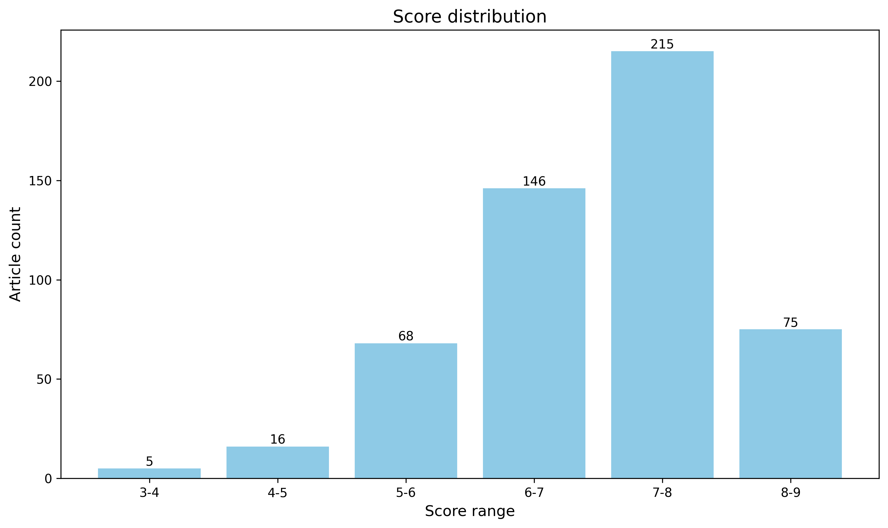

神经科学快讯·第029期 小鼠大脑脂质图谱揭示脑区分化与妊娠重塑 (2026-09-27)
📊 本周概览
- 头条推荐: 0 篇
- 深度解读: 243 篇
- 简要提及: 256 篇
- 跨界启发: 0 篇
- 已过滤: 203 篇
🌏 环球视野

地区与机构按本期原始来源及 ROR 匹配信息统计，仅覆盖取得机构信息的论文；跨地区合作可重复计入，不作为完整机构排名。评分分布不含“域外局限”文章。
🌍 国家/地区分布 TOP 10
| 排名 | 国家 | 文章数量 |
|---|---|---|
| 1 | United States | 141 |
| 2 | China | 43 |
| 3 | Germany | 40 |
| 4 | United Kingdom | 35 |
| 5 | Canada | 34 |
| 6 | France | 27 |
| 7 | Switzerland | 14 |
| 8 | Italy | 14 |
| 9 | Netherlands | 13 |
| 10 | Japan | 10 |
地区计次合计: 371 次
🏢 研究机构 TOP 10
| 排名 | 机构 | 文章数量 |
|---|---|---|
| 1 | Stanford University | 7 |
| 2 | University of Washington | 6 |
| 3 | University of Cambridge | 6 |
| 4 | University of Oxford | 5 |
| 5 | Princeton University | 5 |
| 6 | University of Pennsylvania | 5 |
| 7 | University of Tübingen | 5 |
| 8 | Johns Hopkins University | 5 |
| 9 | New York University | 5 |
| 10 | Zhejiang University | 5 |
📊 评分分布
| 评分区间 | 文章数量 |
|---|---|
| 3-4 | 5 |
| 4-5 | 16 |
| 5-6 | 68 |
| 6-7 | 146 |
| 7-8 | 215 |
| 8-9 | 75 |
总计: 525 篇评分文章
📈 各领域文章分布
| 领域 | 深度解读 | 简要提及 | 总计 |
|---|---|---|---|
| 系统与环路神经科学 | 48 | 28 | 76 |
| 认知神经科学 | 40 | 33 | 73 |
| 分子与细胞神经科学 | 35 | 30 | 65 |
| 临床与转化神经科学 | 20 | 34 | 54 |
| 计算与理论神经科学 | 27 | 23 | 50 |
| 感觉与运动神经科学 | 30 | 20 | 50 |
| 方法学 | 17 | 30 | 47 |
| 未知领域 | 0 | 45 | 45 |
| 发育神经科学 | 18 | 9 | 27 |
| 社会与情感神经科学 | 8 | 4 | 12 |
合计: 深度解读 243 篇，简要提及 256 篇，共 499 篇
📚 精选文献（按领域分类）
临床与转化神经科学
Personalized single-cell transcriptomics reveals molecular diversity in Alzheimer’s disease
深度解读 8.1/10中文标题: 个性化单细胞转录组学揭示阿尔茨海默病的分子多样性
作者: Pramod Bharadwaj Chandrashekar, Sayali Anil Alatkar, Zhiping Shao
关键词: 单细胞转录组, 人类, 阿尔茨海默病, 分子异质性, 精准医学, 神经精神症状
亮点: 基于1494例人脑、630万细胞核的单细胞转录组与知识引导图神经网络，构建AD个体化功能基因组图谱，连接细胞类型-基因调控、grQTL与临床异质性。
核心优势: 大规模人群级snRNA-seq与知识引导GNN结合，量化个体化细胞类型/基因/互作重要性，并发现AD亚型、轨迹和grQTL，提供开放iBrainMap资源。
研究局限: 主要基于PsychAD队列的观察性数据，GNN可解释性与因果机制有限；个性化grQTL、亚型轨迹和跨祖先普适性仍需更多独立实验和前瞻性验证。
目标读者: 神经退行性疾病、单细胞组学、计算神经科学、统计遗传学与精准医学研究者
推荐理由: 该研究基于PsychAD项目，对1494例人脑、超过630万个细胞核进行单核RNA测序，构建了覆盖AD临床表型与神经精神症状的群体级单细胞图谱，并发展个性化分析框架。其核心价值在于突破传统组间平均比较，揭示不同个体在细胞类型和分子通路上的异质性，将临床表型与特定细胞状态的改变联系起来。对AD精准医学、生物标志物发现及靶向治疗分层具有重要参考意义，也为其他脑疾病的单细胞队列研究提供了可复用范式。
中文标题: 长程相互依赖感知信号分析用于快速准确预测阻塞性睡眠呼吸暂停
作者: Zhenkun Wang, Chenzhong Yin, Paul Bogdan
关键词: 睡眠呼吸暂停, 多导睡眠图, 多分形耦合, 长程依赖, 生理信号, 人工智能
亮点: 以多分形耦合表征生理信号长程依赖，显著提升OSA严重度预测的泛化性能。
核心优势: 在五个异质队列、超过35,000名受试者上验证，AUC超过0.91且相对现有最优模型提升8–18%，显示强泛化与临床筛查潜力。
研究局限: 摘要未提供前瞻性临床验证、外部队列的种族/合并症分布、模型可解释性及临床工作流整合证据；多分形耦合特征的可复现性和跨设备泛化仍需验证。
目标读者: 睡眠医学、临床信号处理、可穿戴健康监测、深度学习与计算生物学研究者
推荐理由: 该研究提出一种生物几何感知的人工智能框架，从多导睡眠图等生理信号中提取多分形耦合特征，捕捉呼吸、心血管与神经调控之间的长程相互依赖，从而实现阻塞性睡眠呼吸暂停严重程度的快速、准确预测。其价值不仅在于可能降低PSG诊断负担、推动临床筛查与分诊，也在于为睡眠与自主神经耦合研究提供可解释、可迁移的信号表征方法，对神经科学中跨系统时间序列分析具有借鉴意义。
Multimodal imaging maps spinal glymphatic transport in health and its disruption after injury
深度解读 7.9/10中文标题: 多模态成像描绘健康脊髓的类淋巴运输及其损伤后的破坏
作者: Kaur, J., Giannetto, M. J., Wong, D. T. et al.
单位: Center for Translational Neuromedicine, University of Copenhagen, Blegdamsvej 3, Copenhagen N, 2200 DENMARK, Center for Translational Neuromedicine, University
关键词: 脊髓, 类淋巴系统, 脑脊液, 脊髓损伤, AQP4, 多模态成像
亮点: 多模态成像首次系统刻画脊髓类淋巴转运的解剖与路径依赖规律，并揭示损伤后“转运加快但清除失效”的类淋巴功能障碍。
核心优势: 将类淋巴框架从脑扩展到脊髓，用DCE-MRI、离体荧光与组织学多模态证据整合蛛网膜下腔解剖狭窄、给药途径、分子大小、AQP4缺失与损伤后清除障碍之间的关系。
研究局限: 基于小鼠NMDA局灶损伤模型且为预印本，AQP4-KO比较主要在24 h单一时间点，缺乏AQP4机制的直接干预验证与长期行为-清除因果链。
目标读者: 脊髓损伤与神经创伤研究者、类淋巴/脑脊液动力学与神经影像学者、AQP4与胶质细胞生物学及转化医学研究者
推荐理由: 该研究系统绘制了健康脊髓的脑脊液与类淋巴转运图谱，并揭示损伤后转运通路的中断及其对AQP4的依赖。作者比较不同给药途径、解剖分区和示踪剂分子量对脊髓类淋巴传输的影响，为理解脊髓水肿、继发性缺血损伤和药物递送提供了机制框架。对临床转化而言，脊髓类淋巴系统可能成为减轻损伤后水肿、改善局部微环境与递送治疗分子的新靶点。
中文标题: 利用血缘同源解析神经退行性疾病的不完全外显并推进基因发现
作者: Lyndal Henden, Sandrine Chan Moi Fat, Andrew Smith et al.
单位: Macquarie University Brain Institute and Clinic, Faculty of Medicine, Health and Human Sciences, Macquarie University, Sydney, NSW 2109, Australia.; Macquarie University Motor Neuron Disease Research Centre, Faculty of Medicine, Health and Human Sciences, Macquarie University, Sydney, NSW 2109, Australia.; Department of Human Genetics, University of Utah, Salt Lake City, UT 84112, USA.; Macquarie University Brain Institute and Clinic, Faculty of Medicine, Health and Human Sciences, Macquarie University, Sydney, NSW 2109, Australia.; School of Mathematical and Physical Sciences, Faculty of Science and Engineering, Macquarie University, Sydney, NSW 2109, Australia. 等
关键词: 人类, 基因组学, IBD, ALS, FTD, 外显率
亮点: 利用IBD揭示ALS/FTD中隐藏的亲缘关系，重新分类散发性病例并扩展家系以促进基因发现。
核心优势: 在3524例跨洲欧洲血统ALS-FTD队列中系统应用IBD推断，量化不完全外显导致的隐性亲缘和临床分类错误，并用SOD1阳性对照验证家系扩展与候选区域缩小策略。
研究局限: 仅限欧洲血统队列，IBD本身并非全新技术；主要基于已知基因与有限候选位点，摘要未展示独立验证、统计效能及非欧洲人群泛化能力。
目标读者: 神经遗传学、ALS/FTD临床与研究、遗传流行病学、基因发现与遗传咨询人员
推荐理由: 本文聚焦晚发性神经退行性疾病（ALS/FTD）中不完全外显、遗传异质性和家族史模糊导致致病基因发现困难的问题，提出以血缘同源（IBD）分析来解析隐性亲缘关系、校正外显率并提升基因发现效力。对临床遗传咨询与风险分层有直接意义，也为复杂家系和散发病例的因果变异识别提供了可推广的策略。
中文标题: 人类纹状体的年龄依赖性变化鉴定出一个PPP1R15B-miR-196a节点作为亨廷顿病的修饰因子
作者: Victoria A. Church, Agnieszka Krzyzosiak, Andrew S. Yoo
关键词: 亨廷顿病, 纹状体, 衰老, 翻译调控, PPP1R15B, miR-196a
亮点: 人类纹状体衰老驱动的 PPP1R15B–miR-196a 轴被鉴定为亨廷顿病可修饰的治疗节点。
核心优势: 跨人类纹状体、HD 小鼠模型和患者成纤维细胞重编程 MSN 的多层次验证，结合药理与遗传操作，支持 R15B/miR-196a 的疾病修饰潜力。
研究局限: 主要基于 YAC128 小鼠和体外重编程 MSN，缺乏更广泛遗传背景、长期体内干预及 Raphin1 脱靶效应的严格排除。
目标读者: 亨廷顿病、神经退行性疾病、纹状体生物学、翻译调控与 miRNA 治疗方向的研究者
推荐理由: 该研究将人类纹状体衰老的转录特征与亨廷顿病病理联系起来，发现翻译与蛋白稳态调节因子PPP1R15B及其相关miR-196a构成可修饰节点。通过Raphin1抑制R15B，在HD模型中改善早期学习与晚期运动缺陷，提示年龄相关翻译应激是HD易感性的可干预环节。该工作为HD及其他年龄依赖神经退行疾病提供了以翻译调控为靶点、兼具机制与转化潜力的新策略。
中文标题: 空间多组学揭示雄性帕金森病小鼠模型中疾病相关少突胶质细胞及代谢失调
作者: Ziting Zhu, Zongtang Xu, Wenlong Zhang
关键词: 空间转录组, 空间代谢组, 单核RNA测序, 帕金森病, 少突胶质细胞, α-突触核蛋白
亮点: 空间多组学锁定帕金森病中IL-33–ST2介导的少突胶质细胞–小胶质细胞免疫代谢轴
核心优势: 整合单核RNA测序、空间转录组与空间代谢组，并在两种小鼠模型及人类样本中验证少突胶质细胞IL-33–ST2信号与α-突触核蛋白病理和运动障碍的关联。
研究局限: 仅使用雄性小鼠，人类脑组织与脑脊液样本量有限，且少突胶质细胞IL-33操控的细胞特异性、长期效应及性别差异仍需进一步验证。
目标读者: 神经退行性疾病、胶质细胞生物学、空间多组学、神经免疫代谢及帕金森病机制研究者
推荐理由: 该研究在雄性A53T及AAV-α-synuclein帕金森病小鼠中跨疾病阶段整合单核RNA测序、空间转录组和空间代谢组，并结合人类中脑与脑脊液样本，系统描绘α-突触核蛋白病理重塑的空间免疫代谢景观。其核心发现是鉴定出一类以Il33和Kirrel3升高为标志的疾病相关少突胶质细胞谱系，并揭示其与代谢失调的关联，把PD机制研究从神经元中心拓展到少突胶质细胞和局部代谢微环境。该工作为理解PD进展、发现候选生物标志物与干预靶点提供了多维资源。
中文标题: 影像亚型揭示多发性硬化的不同生物学基础与残疾特征
作者: Paolo Preziosa, Loredana Storelli, Ferdinando Clarelli et al.
单位: Neuroimaging Research Unit, Division of Neuroscience, IRCCS San Raffaele Scientific Institute, 20132, Milan, Italy.; Neuroimaging Research Unit, Division of Neuroscience, IRCCS San Raffaele Scientific Institute, 20132, Milan, Italy.; Neurology Unit, IRCCS San Raffaele Scientific Institute, 20132, Milan, Italy.; Vita-Salute San Raffaele University, 20132, Milan, Italy.; Laboratory of Human Genetics of Neurological Disorders, IRCCS San Raffaele Scientific Institute, 20132, Milan, Italy. 等
关键词: 多发性硬化, MRI, SuStaIn, 无监督学习, 影像亚型, 残疾进展
亮点: 基于SuStaIn的多模态MRI分型将多发性硬化分为四种可重复亚型，并揭示其与残疾和复发独立进展的临床关联。
核心优势: 大样本多模态MRI、独立验证队列及长期临床随访，证明四种MS影像亚型可重复且具有临床意义。
研究局限: 影像数据以横断面为主，SuStaIn分期难以完全区分疾病进展与亚型差异，且缺乏病理验证；遗传与认知的亚型间差异有限。
目标读者: 多发性硬化临床研究者、神经影像/计算神经科学研究者及寻求患者分层的神经科医生
推荐理由: 该研究利用SuStaIn无监督学习框架，从常规MRI中解析出多发性硬化的影像亚型，并系统关联残疾表型、发病年龄、认知及遗传易感性。其核心价值在于突破传统临床分型的局限，将局灶病变、微结构损伤与萎缩纳入统一的数据驱动模型，为理解MS生物学异质性、患者分层和个体化预后提供了可复用的影像分型范式。
中文标题: 基于自动机器视觉的 Rett 综合征指标为罕见病治疗建模提供了可推广的框架
作者: Berger, M. L., Simon, M., Sabnis, G. S. et al.
单位: The Jackson Laboratory
关键词: 机器视觉, Rett综合征, MeCP2, 小鼠模型, 行为表型, 药物筛选
亮点: 自动化机器学习行为分析为Rett综合征提供高分辨率、可泛化的客观严重度指数，并显著减少临床前动物用量。
核心优势: 机器学习特征可在3周龄即区分基因型，检测到Bird评分遗漏的疾病相关行为；子采样显示仅需12-16只动物即可达到5%交叉验证误分类，并在独立minigene rescue队列中验证了部分拯救和不良反应。
研究局限: 主要基于单一R270X雄鼠模型和开旷场行为，尚未在更多Rett模型、雌性杂合子、其他行为范式和不同实验室间充分验证；预印本未经同行评审。
目标读者: 罕见病模型、神经发育障碍、临床前行为药理学、机器学习行为分析和3Rs替代方法研究者
推荐理由: 该研究开发了基于自动机器视觉的Rett综合征小鼠表型指数，以替代主观、低分辨率的Bird评分。其核心价值在于将行为视频转化为可量化、可重复的高维表型指标，从而更敏感地排序候选疗法、检测细微改善，并为罕见病治疗开发提供可推广的框架。对神经科学读者而言，这不仅推进RTT机制与转化研究，也展示了计算机视觉在行为神经科学和临床前药物评价中的通用潜力。
中文标题: 打破脱髓鞘与轴突丢失之间的联系：SARM1抑制作为多发性硬化的神经保护策略
作者: Feri, M., Peterson, S., Rezanejad, M. et al.
单位: School of Medicine at UCR
关键词: 多发性硬化, SARM1, 轴突退化, 脱髓鞘, 神经保护, 神经炎症
亮点: SARM1 inhibition uncouples axonal self-destruction from demyelination and gross neuroinflammation, preserving visual function in MS models.
核心优势: 多模态遗传与药理学证据（全身KO、RGC特异性CRISPR敲低/过表达、5IIQ）跨ONC和EAE模型，将SARM1抑制与结构和功能神经保护直接联系起来。
研究局限: 全身SARM1敲除未改变EAE临床进程，免疫互作机制仍不清晰；预印本尚未同行评审，小分子特异性及转化验证有限。
目标读者: 多发性硬化/神经免疫学、轴突变性与神经保护、转化神经科学研究者
推荐理由: 该研究针对多发性硬化（MS）中轴突退化这一不可逆残疾的主要驱动因素，探索抑制SARM1能否在自身免疫炎症环境下解耦脱髓鞘与轴突丢失。SARM1作为程序性轴突破坏的执行者，在MS灰质和白质中过表达，使其成为极具吸引力的治疗靶点。研究结合人类MS组织与复杂动物模型，为MS神经退行性阶段提供了直接干预策略，有望填补现有治疗空白。
中文标题: 纹状体习惯系统驱动创伤后应激障碍中的行为僵化
作者: Loetscher, K. B., Nguyen, D., Kang, S. et al.
单位: Yale University
关键词: PTSD, 习惯学习, 纹状体, 行为僵化, 刺激-反应联结, 结果贬值
亮点: 首次以新任务范式、fMRI与计算模型将PTSD的行为僵化直接链接到纹状体习惯系统。
核心优势: 多模态证据汇聚——行为任务、症状严重度、putamen影像信号和计算模型共同支持PTSD中的习惯化机制。
研究局限: 预印本，摘要未披露样本量、效应量、纵向/因果设计及独立重复，结论仍需同行评审与更大队列验证。
目标读者: PTSD与精神疾病神经影像、习惯与决策神经科学、计算精神病学研究者
推荐理由: 该研究首次用新任务设计直接检验PTSD的‘习惯假说’，将安全寻求与回避等核心症状分解为刺激-反应联结的获得、灵活重映射和对结果贬值的敏感性。若发现PTSD患者纹状体介导的习惯系统过强、目标导向控制减弱，将把临床症状与环路机制连接起来，并为暴露疗法、认知灵活性训练等干预提供机制靶点。其任务范式也可用于跨诊断的习惯异常研究。
中文标题: 女性偏向的IL-17/STAT3信号标记阿尔茨海默病中与痴呆相关的微胶质细胞炎症
作者: Abdelfattah, N. H., Kang, R., Jimenez, D. et al.
单位: Houston Methodist Research Institute
关键词: 单细胞核转录组, 阿尔茨海默病, 性别差异, 小胶质细胞, IL-17/STAT3, 人类
亮点: 跨队列单核转录组揭示女性偏向的IL-17/STAT3小胶质炎症程序与AD痴呆进展相关
核心优势: 整合SEA-AD发现队列与ROSMAP、NBB及5xFAD小鼠验证，系统解析AD性别差异的微胶质状态、细胞通讯和细胞因子响应。
研究局限: 主要为观察性转录组关联，缺乏对IL-17/STAT3通路的因果功能验证；人类数据为横断面设计，痴呆分类与细胞状态推断可能受混杂因素影响。
目标读者: 阿尔茨海默病、神经免疫、微胶质生物学、性别差异及单细胞计算生物学研究者
推荐理由: 该研究通过性别分层的单细胞核转录组分析，揭示了阿尔茨海默病（AD）中女性偏向的IL-17/STAT3信号通路在小胶质细胞炎症中的关键作用。利用SEA-AD、ROSMAP、NBB队列及5xFAD小鼠模型验证，发现该通路与痴呆进展相关，为AD的性别差异提供了分子机制解释，并提示IL-17/STAT3作为女性AD患者潜在治疗靶点。研究结合了人类单细胞数据与动物模型，具有较高的转化价值。
Long term rescue of Alzheimer deficits in vivo by one-time gene-editing of App C-terminus.
深度解读 7.6/10中文标题: 通过一次性基因编辑App C末端在体内长期挽救阿尔茨海默病缺陷
作者: Aulston, B., Gimse, K., Bazick, H. O. et al.
单位: Univ of California, San Diego
关键词: CRISPR-Cas9, 基因编辑, 阿尔茨海默病, APP, YENPTY基序, 小鼠
亮点: 通过一次性CRISPR编辑APP C端YENPTY内吞基序，在不敲除APP的前提下将淀粉样通路转向神经保护性α切割，实现AD小鼠长期功能挽救。
核心优势: 策略兼具永久性与广谱潜力：靶向APP末端外显子而非单一家族突变，并在小鼠中多模态验证了长期疗效及生殖系WT安全性。
研究局限: 仅为预印本，体内验证局限于单一种AD敲入小鼠模型，缺乏编辑效率、脱靶效应、长期安全性和散发性AD/人类转化细节，'对所有AD有效'的结论尚属推测。
目标读者: 神经退行性疾病、基因编辑治疗、AD药物开发、神经电生理与行为学研究者
推荐理由: 该研究利用CRISPR-Cas9对APP最后一个外显子进行一次性编辑，删除C端YENPTY内吞基序，同时保留N端及APP同源蛋白功能。在小鼠和人神经元中，这一策略可长期纠正阿尔茨海默病相关缺陷，且不依赖清除家族性突变等位基因，具有更广谱的患者适用性。该工作将基因编辑从“纠正突变”拓展到“操纵上游病理通路”，为AD及其他蛋白病提供单次干预、长期获益的转化新范式。
Spatiotemporal characterization of Alzheimer disease pathology in living human brain tissue
深度解读 7.6/10中文标题: 活体人脑组织中阿尔茨海默病病理的时空特征解析
作者: Aram Aslanyan, Soumya Mukherjee, Eleanor M Moncur et al.
单位: Dementia Research Centre, UCL Queen Square Institute of Neurology, University College London, London, UK. a.aslanyan@ucl.ac.uk.; National Hospital for Neurology and Neurosurgery, London, UK. a.aslanyan@ucl.ac.uk.; National Hospital for Neurology and Neurosurgery, London, UK.; Department of Brain Repair & Rehabilitation, UCL Queen Square Institute of Neurology, University College London, London, UK.; Department of Neurology, Washington University School of Medicine in St Louis, St Louis, MO, USA.; The Tracy Family Stable Isotope Labeling Quantitation Center, Washington University School of Medicine, Washington University in St. Louis, St. Louis, MO, USA. 等
关键词: 阿尔茨海默病, 人脑活检, 脑脊液, 淀粉样斑块, tau缠结, 蛋白周转
亮点: 利用活体人脑活检结合质谱成像与稳定同位素标记，在活体人脑中同时绘制淀粉样斑块化学空间图谱并估算tau蛋白周转半衰期。
核心优势: 在活体人脑组织中直接结合空间质谱成像与蛋白周转标记，提供了以往只能在尸检或体液标志物中间接推断的AD早期病理与tau代谢参数。
研究局限: 样本量小且来自疑似正常压力脑积水患者，并非临床AD队列；缺乏认知/临床结局与因果验证，斑块周转结论受方法灵敏度限制。
目标读者: 阿尔茨海默病与神经退行性疾病研究者、蛋白质稳态与脑脊液生物标志物研究者、质谱成像与空间组学方法学专家。
推荐理由: 该研究利用脑室腹腔分流手术中获取的活体人脑小活检，结合配对的脑室/腰段脑脊液和死后对照组织，直接刻画阿尔茨海默病病理的空间与时间特征及蛋白周转。18例疑似正常压力脑积水患者中9例出现淀粉样斑块，提示可在活体状态下捕捉早期病理。其价值在于连接传统尸检与体液/影像标志物之间的缺口，为早期机制研究、标志物验证和药物靶点评估提供人源组织平台；但样本小且队列特殊，外推需谨慎。
中文标题: 恢复水通道蛋白4可缓解亨廷顿病zQ175小鼠模型的分子与运动表型
作者: Liu, H., Ding, Z., Wang, Y. et al.
单位: Johns Hopkins University
关键词: AQP4, 类淋巴系统, 亨廷顿病, 小鼠, 运动表型, 星形胶质细胞
亮点: 通过恢复星形胶质细胞AQP4极化增强脑内废物清除，减轻亨廷顿病小鼠的蛋白聚集、神经炎症和纹状体萎缩。
核心优势: 整合AAV介导AQP4恢复、脑内示踪、CSF生物标志物、11.7T MRI和纵向行为，系统证明靶向glymphatic通路可改善HD多重表型。
研究局限: 仅基于zQ175小鼠，AQP4为广谱过表达而非星形胶质细胞特异条件性恢复，缺少因果中介分析，且雄性运动改善不显著、剂量与长期安全性验证有限。
目标读者: 神经退行性疾病、glymphatic/脑废物清除、星形胶质细胞生物学、AAV基因治疗及亨廷顿病临床前研究者。
推荐理由: 该研究在zQ175亨廷顿病敲入小鼠中遗传性恢复AQP4，直接检验了类淋巴清除障碍在HD发病中的因果作用。结果显示AQP4恢复可改善类淋巴功能，并缓解分子与运动表型，将AQP4极化与脑废物清除提升为可干预的转化靶点。对关注神经退行、胶质细胞与脑清除系统的读者，这项研究提供了从病理关联走向遗传因果验证的重要范例。
中文标题: 运动训练重塑颈部肌张力障碍的运动规划与准备网络
作者: Rabeya Zinnat Adury, David J Arpin, Matthew Remz et al.
单位: Department of Applied Physiology and Kinesiology, University of Florida, Gainesville, FL 32608, USA.; Department of Neurology, Fixel Institute for Neurological Diseases, University of Florida, Gainesville, FL 32608, USA.; Department of Applied Physiology and Kinesiology, University of Florida, Gainesville, FL 32608, USA.; Department of Neurology, University of Florida, Gainesville, FL 32608, USA.; Department of Biomedical Engineering, University of Florida, Gainesville, FL 32608, USA.
关键词: 肌张力障碍, 运动训练, 运动准备, 脑网络重塑, fMRI, 人类
亮点: 六个月监督性抗阻训练通过重塑基底节-小脑-皮层运动规划网络改善颈部肌张力障碍，且小脑-前额叶连接变化与临床获益相关。
核心优势: 随机对照、纵向任务态fMRI与功能连接分析结合，将结构化抗阻训练后的分布式运动网络重组与临床改善直接关联，尤其突出小脑作为网络枢纽。
研究局限: 任务采用手部运动而非颈部/头动任务，对颈部肌张力障碍的直接机制外推有限；完整病例分析样本量较小，且行为学干预难以完全控制注意/安慰剂效应，因果中介链条仍不够充分。
目标读者: 运动障碍与肌张力障碍临床研究者、神经影像与康复神经科学研究者、物理治疗及神经调控转化研究者
推荐理由: 该研究聚焦成人最常见的局灶性肌张力障碍——颈部肌张力障碍，利用神经影像揭示运动训练可重塑负责运动规划与准备的大脑网络。其价值在于把物理治疗从经验性辅助手段提升到具有网络机制证据的干预：不仅可能解释部分患者对肉毒毒素之外的非药物治疗获益，也为寻找运动准备相关的影像标志物、优化康复方案提供切入点。对关注运动障碍、神经可塑性与临床转化的读者值得一读。
中文标题: P2X7受体拮抗增强抗癫痫发作药物在人切除癫痫脑组织中的抑制癫痫发作效应
作者: Fernandez Martin, A., Gil, B., Mitra, M. et al.
单位: Royal College of Surgeons in Ireland
关键词: P2X7受体, 癫痫, 药物抵抗, 人类, 电生理, 离体脑片
亮点: 在人类癫痫切除脑组织中验证P2X7受体拮抗可增强抗癫痫药物疗效，并指向IL-1β/小胶质细胞机制。
核心优势: 直接使用人类耐药癫痫患者切除脑组织进行电生理验证，并结合IL-1β测量和小胶质细胞特异性P2X7敲除小鼠，形成跨物种机制证据链。
研究局限: 基于急性脑片和低镁高钾诱发的癫痫样事件，尚不能等同于自发发作或临床疗效；样本量、统计细节和长期安全性未在摘要中体现，且预印本尚未经同行评审。
目标读者: 癫痫与神经炎症、神经药理学、转化神经科学及胶质细胞生物学研究者
推荐理由: 该研究利用患者手术切除的急性脑片，直接检验P2X7受体拮抗剂能否增强抗癫痫药物在人类耐药性癫痫组织中的抑制发作效果。结果支持神经炎症尤其是ATP-P2X7通路是药物抵抗的可干预机制，并把动物模型发现推进到人类组织验证。对临床转化与癫痫新辅助治疗策略具有参考价值，也为在人类离体组织中进行药效学评估提供了范例。
中文标题: 使用多西环素控制表达人Kv1.1的基因疗法降低Scn2a缺陷小鼠的神经元兴奋性并增强社交能力
作者: Deming, B. A., Zhang, J., Vitko, I. et al.
单位: Purdue University
关键词: 基因治疗, Scn2a, 自闭症, 钾通道, 神经元兴奋性, 小鼠
亮点: 以多西环素可控AAV基因递送补充hKv1.1，同时逆转Scn2a缺失小鼠的神经元超兴奋与社交缺陷，提供可逆的ASD基因治疗概念验证。
核心优势: 在Scn2a相关ASD小鼠模型中，通过诱导型AAV实现hKv1.1外源表达，电生理与社交行为双重获益，且对野生型无影响并具可逆性。
研究局限: 仅基于单一Scn2agt/gt模型，缺乏长期安全性、剂量/时程优化、细胞类型特异性及社交行为改善的环路机制验证；AAV/Tet系统潜在泄漏和免疫原性未充分评估。
目标读者: 神经发育障碍、自闭症谱系障碍、离子通道病、基因治疗与电生理研究者
推荐理由: 该研究利用多西环素调控的人源Kv1.1基因治疗策略，在Scn2a缺陷小鼠模型中成功降低了神经元过度兴奋性并改善了社交缺陷。这不仅验证了SCN2A相关自闭症中钾通道失衡的病理机制，也为基因治疗在神经发育障碍中的应用提供了可控、可逆的概念验证。对于临床转化神经科学，该工作展示了从靶点识别到行为改善的完整路径，具有重要的治疗开发启示。
Dementia Language Models: a generalizable and controllable representation of cognitive impairment
深度解读 7.2/10中文标题: 痴呆语言模型：一种可泛化且可控的认知障碍表征
作者: Peled-Cohen, L., Shmidov, A., Rein, N. et al.
单位: Technion - Israel Institute of Technology
关键词: 大语言模型, 痴呆, MMSE, 语言表型, 临床转录本, 生成模型
亮点: 用大语言模型构建可泛化、可调控的痴呆语言表征，并对其临床效度进行多维度评估。
核心优势: 将LLM微调、权重空间插值与临床评估框架结合，初步证明模型可生成患者样叙事、预测MMSE并支持认知状态检测，概念新颖且应用场景明确。
研究局限: 主要基于小规模临床语料和单一模型族，缺乏独立、前瞻性临床验证；神经科医生对合成文本的辨识准确率不等同于真实诊断效度，且权重空间干预的生物学与临床可解释性仍有限。
目标读者: 计算神经科学、临床AI、数字精神病学/神经病学及语言与认知障碍研究者
推荐理由: 该工作提出 Dementia Language Models（DLMs）：仅用少量临床语料微调大语言模型，即可生成跨任务的类患者叙事，其预测 MMSE 落在认知受损区间，神经科医生对生成文本与真实转录本的辨识准确率相当。更值得注意的是，模型内部表征与非语言输出同样携带可泛化的损伤信息，说明语言模型不只是文本生成器，而可作为认知障碍的可控、可解释表征空间。其评测框架从效度与临床依据两方面为“数字表型+生成模型”设定了检验标准，对寻找廉价、可扩展的认知筛查与纵向监测工具，以及理解语言与认知衰退的映射关系，都具有直接价值。
中文标题: 通过单细胞转录组学研究的荟萃分析揭示帕金森病的性别差异
作者: Gordillo-Gonzalez, F., Soler-Saez, I., Galiana-Rosello, C. et al.
单位: Prince Felipe Research Center
摘要: 跨细胞类型和脑区的单细胞转录组荟萃分析揭示帕金森病性别差异，并发现黑质与皮层中神经退行/神经炎症特征呈现区域相反的性别偏向。
优势: 系统整合多个单细胞转录组数据集，覆盖主要脑细胞类型，同时分析基因表达、细胞间通讯和通路激活，并提供公开可用的网络工具，便于领域内二次探索。 局限: 仅为预印本且缺乏独立实验验证；荟萃分析受原始数据集异质性、批次效应、性别与年龄/用药/死后间隔等混杂因素影响，因果机制与临床转化意义仍待证实。 受众: 帕金森病研究者、神经免疫学家、性别差异神经科学家、单细胞基因组学与计算系统生物学家
Structure-function coupling reveals hemisphere-specific network reorganization after stroke
简要提及 6.8/10中文标题: 结构-功能耦合揭示卒中后半球特异性网络重组
作者: Mahani, F. S. N., Hoehn, M., Fink, G. R. et al.
单位: Goethe University
摘要: 方向分辨的结构-功能耦合揭示小鼠卒中后半球特异性、网络特异性的动态重组
优势: 纵向多时间点、双卒中模型并结合半球/方向分辨的SC-FC耦合分析，能够发现单独分析SC或FC时不可见的网络重组模式。 局限: 基于小鼠MRI和特定卒中模型，样本量与因果机制信息有限，向人类卒中及临床生物标志物的转化仍需验证。 受众: 神经影像、卒中康复、网络神经科学、计算神经科学研究者
中文标题: 神经创伤后的癫痫发作与tau蛋白病由朊蛋白和代谢型谷氨酸受体5介导
作者: Locskai, L. F., Gill, T., Nordin, J. et al.
单位: University of Alberta
摘要: 在斑马鱼幼体脑外伤模型中，PrPC–mGluR5通路被证明同时调控伤后癫痫与tau聚集，提出TBI相关tauopathy的可干预候选机制。
优势: 结合prp2基因敲除与mGluR5激动/拮抗药理学，在同一TBI模型中同时评估癫痫和tau聚集，并设置惊厥剂对照以区分癫痫依赖性效应。 局限: 证据主要来自斑马鱼幼体，缺乏哺乳动物验证、mGluR5–PrPC直接互作证据以及内源性tau病理/CTE样表型；且为预印本，未经同行评审。 受众: 神经创伤、癫痫、tau蛋白病/CTE、神经退行性疾病机制及药物靶点研究者
中文标题: 低秩张量分解揭示人脑脑脊液示踪剂运输的耦合时空模式
作者: Solheim, A. R., Ringstad, G., Eide, P. K. et al.
单位: Simula Research Laboratory
摘要: 用无监督张量分解从人脑gMRI中解析出耦合的脑脊液-间质液转运通路，并区分iNPH与参考人群。
优势: 保留多受试者纵向gMRI的多路结构，以无监督方式同时刻画CSF和脑实质示踪剂动态，发现早期示踪剂流入与24小时分布之间的定量关联，并展示患者分层潜力。 局限: 基于单队列观察性数据，缺乏独立外部验证与生物学金标准；张量分解的秩选择、成分可重复性以及诊断和性别等混杂因素仍需更严格验证。 受众: 神经影像、脑脊液/胶质淋巴系统、iNPH临床研究及多模态数据分析与计算生物学研究者
中文标题: 重度抑郁症复发与用药状态塑造脑网络拓扑结构
作者: Castilla-Jimenez, J. F., Diaz-Patino, J. C., Enriquez-Geppert, S. et al.
单位: Universidad Nacional Autónoma de México. Instituto de Neurobiología
摘要: 拓扑数据分析揭示重性抑郁复发与抗抑郁药状态如何塑造全脑功能网络的高阶循环结构
优势: 在1490人多中心静息态fMRI样本上，将Betti数曲线与临床异质性维度结合，发现复发抑郁和用药状态与跨网络一维循环增加相关。 局限: 横断面观察设计无法推断因果，TDA指标对预处理和阈值选择敏感，且缺乏独立样本验证；用药状态与疾病严重度/病程存在潜在混杂。 受众: 计算神经科学、神经影像方法学、精神疾病生物标记物及MDD研究者
中文标题: 长期自愿运动揭示5xFAD小鼠海马分子反应向神经保护转化有限
作者: Aceituno, K. S., Granger, K., Leon, J. et al.
单位: University of Southern California
摘要: 长期自愿跑轮在5xFAD小鼠中虽被外周证实有效，却未能将海马分子响应转化为神经保护，提示疾病背景决定运动干预成败。
优势: 整合外周运动参与验证、海马转录组、突触/病理/行为多模态读出，系统检验运动在AD模型中的转化能力。 局限: 缺乏野生型对照的直接比较，且海马转录响应仅停留在通路层面、效应有限，难以区分AD特异性翻译障碍与模型/运动剂量限制；预印本未经同行评审。 受众: 阿尔茨海默病与神经退行性疾病、运动神经科学、转化医学及临床前干预研究者
中文标题: 低剂量氯胺酮使皮层兴奋-抑制平衡发生倾斜，且与全身生理反应无关
作者: Kunze, J., Student, J. P., Tune, S. et al.
单位: University of Luebeck
摘要: 低剂量氯胺酮/异丙酚双向调节皮层E:I平衡，且该效应不由心血管反应介导
优势: 安慰剂对照交叉设计结合目标控制输注、静息态EEG与ECG，并用中介分析直接检验心血管反应是否解释E:I偏移。 局限: 单盲设计、样本量中等（25人），且以非周期1/f指数作为E:I平衡的非直接代理，结论仍需双盲、更大样本和直接电生理验证。 受众: EEG/神经影像、精神药理学、E:I平衡与计算系统神经科学研究者
中文标题: 脑18F-FDG PET神经影像在猝死小鼠模型中的预测价值
作者: Marcos-Macias, E., Godoy-Corchuelo, J. M., Fernandez de la Rosa, R. et al.
单位: IdISSC
摘要: 脑18F-FDG PET代谢特征可预测小鼠突发意外死亡，揭示脑-心轴功能障碍
优势: 整合PET与ECG/HRV多模态数据，发现与SUD相关的区域特异性脑代谢特征并构建预测模型。 局限: 样本量小、仅雌性FUSdelta14小鼠，预测模型AUC中等且缺乏独立验证，预印本尚未经同行评审。 受众: 神经影像、自主神经科学、心血管神经科学及SUD研究领域的科研人员
Reducing Neutrophil Sialic Acid Residues Alleviates Cerebral Hypoperfusion in Alzheimer's Models
简要提及 6.5/10中文标题: 减少中性粒细胞唾液酸残基可缓解阿尔茨海默病模型中的脑低灌注
作者: Bhatt, N. N., Tabrizi, Z., Janulis, J. et al.
单位: University of Southern California
摘要: 靶向中性粒细胞唾液酸化可改善AD模型脑血流，提示免疫糖基化是血管功能障碍的可干预节点。
优势: 将中性粒细胞唾液酸化与AD脑低灌注/毛细血管停滞直接关联，并在小鼠模型和人体样本中提供干预与生物标志物线索。 局限: 证据仍以相关性和药理学干预为主，缺乏中性粒细胞特异性因果验证、抑制剂选择性、认知结局及更大规模人体验证，且为未经同行评审的预印本。 受众: 阿尔茨海默病与血管生物学、神经免疫、糖生物学及转化医学研究者
中文标题: MALDI-TOF成像质谱显示阿尔茨海默病小鼠模型中淀粉样蛋白应激下脑能量代谢的性别和年龄依赖性空间变化
作者: Grahovac-Nemeth, S., Jurcic, K., Courchesne, M. et al.
单位: Western University
摘要: 空间代谢组与乳酸化成像揭示：性别和年龄塑造脑能量代谢，淀粉样病理使乳酸-表观遗传耦合解偶联。
优势: 将MALDI-TOF空间代谢物成像与组蛋白乳酸化免疫荧光结合，在同一脑区框架下同时考察乳酸、谷氨酸、丙酮酸、柠檬酸及表观遗传标记，并突出性别作为AD代谢易感性的关键变量。 局限: 仅见预印本摘要，缺少样本量、统计、模型细节和因果实验；主要依赖相关性与单模型证据，乳酸化抗体特异性、MALDI定量伪影、细胞类型归属及雌鼠动情周期影响均需严格验证。 受众: 神经代谢、阿尔茨海默病、空间质谱成像、表观遗传学及性别差异研究者
中文标题: 卒中后颅骨-硬脑膜-脑炎症的肥大细胞门控者
输入资料不足：原始摘要未取得，当前评估仅供初筛，推送前需核对原文。
作者: Ru Wang, Gongyi Zhu, Shumao Xu
单位: Institute of Science and Technology for Brain-inspired Intelligence, Fudan University, Shanghai 201203, China.; Max Planck Institute, Stuttgart 70569, Germany.; Institute of Science and Technology for Brain-inspired Intelligence, Fudan University, Shanghai 201203, China.
摘要: 聚焦卒中后颅骨-硬脑膜-脑炎症轴中肥大细胞的门控作用，及时解读脑膜免疫与神经炎症交互的新兴机制。
优势: 选题前沿，将肥大细胞置于颅骨-硬脑膜-脑轴炎症调控的核心位置，时效性和概念整合潜力较强。 局限: 仅凭标题判断为评论/观点类文章，且未提供摘要与全文，无法评估其覆盖全面性、批判深度、论证细节及指导性；内容可能局限于单一研究解读。 受众: 卒中免疫、脑膜免疫、颅骨骨髓轴、肥大细胞生物学及神经炎症研究者
Allogeneic haematopoietic stem cell transplantation in late-onset metachromatic leukodystrophy.
简要提及 6.4/10中文标题: 异基因造血干细胞移植治疗晚发型异染性脑白质营养不良
作者: Daphne H Schoenmakers, Mareen R Datema, Shanice Beerepoot et al.
单位: Department of Child Neurology, Emma's Children's Hospital, Amsterdam UMC location Vrije Universiteit, 1081 HV Amsterdam, The Netherlands.; Amsterdam Leukodystrophy Center, Amsterdam Neuroscience, Cellular & Molecular Mechanisms, 1105 AZ Amsterdam, The Netherlands.; Medicine for Society, Platform at Amsterdam UMC location University of Amsterdam, 1105 AZ Amsterdam, The Netherlands.; Department of Endocrinology and Metabolism, Amsterdam UMC location University of Amsterdam, 1105 AZ Amsterdam, The Netherlands.; Department of Child Neurology, Emma's Children's Hospital, Amsterdam UMC location Vrije Universiteit, 1081 HV Amsterdam, The Netherlands.; Amsterdam Leukodystrophy Center, Amsterdam Neuroscience, Cellular & Molecular Mechanisms, 1105 AZ Amsterdam, The Netherlands.; Princess Máxima Center for Pediatric Oncology, 3584 CS, Utrecht, The Netherlands. 等
摘要: 最大欧洲晚发型MLD队列长期随访证实，异基因HSCT可延缓疾病进展并改善生活质量，症状前移植获益最显著。
优势: 基于多中心注册库的最大晚发型MLD队列，随访长达25年，并设置症状前HSCT、症状性HSCT和未治疗三组比较，为罕见病临床决策提供直接证据。 局限: 观察性注册研究非随机，亚组样本量小且存在适应证混杂；主要终点风险比置信区间跨1（HR 1.49, 95%CI 0.96–2.30），无法排除选择偏倚，结论需谨慎解读。 受众: 神经内科/神经代谢病专科医师、造血干细胞移植与基因治疗研究者、罕见病临床流行病学家及卫生决策者。
VCP inhibition prevents cone photoreceptor degeneration in the cpfl1 mouse model of achromatopsia
简要提及 6.2/10中文标题: VCP抑制可防止全色盲cpfl1小鼠模型中的视锥光感受器变性
作者: Almansa-Garcia, A. C., Cao, B., Petremann-Dume, A. S. et al.
单位: Universitaetsklinikum Tuebingen
摘要: 在ACHM小鼠视网膜外植体中，VCP抑制可挽救视锥细胞存活并改善视蛋白转运，提示突变非依赖的视锥保护策略。
优势: 靶向共同下游蛋白稳态通路，同时挽救视锥细胞而不影响视杆细胞视紫红质转运，具有转化潜力。 局限: 仅基于离体视网膜外植体，缺乏在体功能验证、长期安全性、剂量效应和深入机制证据，尚不能支持治疗结论。 受众: 视网膜变性、视锥细胞生物学、蛋白稳态/ER应激及眼科治疗开发研究者
中文标题: 早期精神病中多巴胺相关纹状体血流动力学潜伏期的改变
作者: Mopuru, R., Elliott, B. L., Hoffman, L. J. et al.
单位: Temple University
摘要: 以静息态BOLD血流动力学潜伏期作为早期精神病纹状体多巴胺相关病理的非侵入性候选影像标记。
优势: 基于HCP-EP多站点数据，在较大样本中按纹状体亚区解析早期精神病与健康对照的血流动力学潜伏期差异，发现背侧纹状体（尾状核和壳核）潜伏期降低而腹侧纹状体无显著差异。 局限: 血流动力学潜伏期只是多巴胺生理的间接相关物，缺少PET/药理等多巴胺直接验证；研究为横断面相关设计，且潜伏期未与阳性或阴性症状严重度显著关联，区域多重比较校正和血管/运动混杂控制也需更强证据。 受众: 精神病神经影像、多巴胺与精神分裂症病理生理、静息态fMRI方法学及计算神经影像研究者
中文标题: 儿童失神癫痫的睡眠纺锤波缺陷随抗癫痫治疗和疾病缓解而改善
作者: Goodman, S. K., Yi, S., Chinappen, D. M. et al.
单位: Kennedy Krieger Institute / Johns Hopkins School of Medicine
摘要: 睡眠纺锤波率可作为儿童失神癫痫疾病活动与抗癫痫药物暴露的候选生理标志物
优势: 在较大样本中结合活动期/缓解期CAE与年龄性别匹配对照，揭示纺锤波率的区域特异性降低及其与癫痫样放电的负相关，并提示其随治疗和疾病缓解改善。 局限: 回顾性观察设计、药物治疗非随机分配且存在适应证/疾病严重度混杂，未直接评估认知结局，机制推断仍属相关性证据；预印本尚需同行评审。 受众: 临床癫痫学家、睡眠与脑电研究者、转化神经科学家以及丘脑皮层计算模型研究者
中文标题: 自闭症中的结构变化反映非典型脑网络组织与表型异质性：一项深度网络方法研究
作者: Lokray, S., Zikopoulos, B., Yazdanbakhsh, A.
单位: Boston University
摘要: 用3D CNN将ASD的sMRI宏观结构改变映射到功能网络与表型异质性，支持诊断亚型划分。
优势: 将结构MRI、功能网络推断与SRS表型异质性结合，系统识别ASD中左半球、额颞叶及DMN/注意网络的稳定异常。 局限: 基于预印本摘要，缺乏样本量、外部验证、混杂控制和CNN可解释性细节；功能网络由结构变化推断而非直接功能影像验证。 受众: 神经影像、计算精神病学、ASD生物标志物与深度学习研究者
中文标题: 基于皮层下脑特征的机器学习：神经退行性疾病分类的样本量效率研究
作者: Im, Y., Kang, M. J. Y., Gutman, B. A. et al.
单位: Imaging Genetics Center, Mark and Mary Stevens Neuroimaging & Informatics Institute
摘要: 利用ADNI 2,511例样本系统绘制亚皮层体积与形状特征的机器学习学习曲线，量化样本量对痴呆分期分类性能的驱动作用。
优势: 在较大规模ADNI队列上系统比较多种ML模型与多任务学习曲线，明确晚期融合和Logit-TVL1在亚皮层形状特征中的优势。 局限: 仅基于ADNI单一队列，缺乏外部独立验证与多中心泛化评估；方法学以基准比较为主，未提供新生物学机制或临床部署证据。 受众: 神经影像机器学习、痴呆生物标志物、计算神经科学与医学图像分析研究者
中文标题: 用于失眠严重程度早期区分的昼夜节律衍生特征：至少需要8周监测才能进行有临床意义的评估
作者: Soheil Saghafi, Thomas C. Neylan, Qiao Li et al.
摘要: 可穿戴活动节律特征或需至少8周监测才能初步区分失眠严重程度，活动的时间组织比单纯活动量更具信息量。
优势: 基于AURORA大队列（n=2305）和纵向多随访设计，系统比较了活动计数与昼夜节律衍生特征在不同ISI分类中的判别能力，并给出了可操作的最短监测时长参考。 局限: 分类性能整体有限（最佳AUROC仅约0.693），依赖自报ISI且缺乏外部验证，距临床可用的客观失眠分型仍有明显差距。 受众: 数字医疗、可穿戴睡眠监测、睡眠与昼夜节律、临床机器学习及精神卫生评估研究者
Sleep Health in Lennox-Gastaut Syndrome impacts both Individuals with LGS and their Caregivers
简要提及 5.5/10中文标题: Lennox-Gastaut综合征的睡眠健康影响LGS患者及其照护者
作者: Dixon-Salazar, T., Leavens, K. J., Chen, H. et al.
单位: Rare Expertise, LLC
摘要: 大型LGS照护者调查揭示睡眠障碍对患者与照护者的双重负担，并突出以家庭为中心的睡眠管理需求。
优势: 聚焦罕见癫痫LGS中被忽视的睡眠健康，样本量较大，同时量化患者与照护者负担及常用管理策略。 局限: 基于照护者自评的横断面调查，缺乏客观睡眠测量与临床验证，难以推断因果关系，且可能存在选择与回忆偏倚。 受众: 癫痫与睡眠医学临床研究者、LGS照护者组织、患者报告结局及罕见病公共卫生研究者
中文标题: 白质慢4频段fALFF作为多模态阿尔茨海默病生物标志物格局中的补充标志物
作者: Huang, Y., Toga, A., Zhao, L.
单位: University of Southern California
摘要: 白质slow-4 fALFF在AD多模态标志物中提供有限但可量化的补充信息，尤其关联星形胶质反应与轴突损伤。
优势: 在ADNI-3大队列中系统开展头对头基准比较与方差分解，量化WM fALFF相对于DTI和灰质标志物的增量价值，分析框架较规范。 局限: 效应量普遍偏小（部分R2约2%–5%），横断面设计无法推断因果；所有五种影像标志物同时纳入后fALFF增量显著性消失，且缺乏外部独立验证，临床转化价值有限。 受众: 阿尔茨海默病生物标志物、神经影像、静息态fMRI与临床神经科学研究人员
中文标题: 性别分层的fixel-based分析揭示首发精神病男性额叶纤维密度降低
作者: Sanchez, S. M., Schmidt, H., Skoch, A. et al.
单位: Institute of Computer Science of the Czech Academy of Sciences
摘要: 性别分层fixel分析提示首发精神病男性存在额叶白质纤维密度降低，而女性未见同等改变。
优势: 将fixel-based analysis与性别分层设计结合，在控制头动后锁定男性早期精神病的额叶白质纤维密度异常。 局限: 未正式检验性别×诊断交互，男性对照组样本明显偏少，横断面设计和缺乏独立复制限制了女性阴性结果的解释。 受众: 精神分裂症/精神病神经影像、弥散MRI白质分析、性别差异与计算神经解剖研究者
中文标题: 不同的海马细胞病理学影响跨诊断分类的认知，并区分精神分裂症与情感性精神病
作者: Ruby, E., Gonen, O., Lotan, E. et al.
单位: Icahn School of Medicine at Mount Sinai
摘要: 海马细胞代谢标志物把认知缺陷与不同精神病诊断类别挂钩，并区分精神分裂症与情感性精神病。
优势: 在体1H-MRSI刻画海马神经元完整性、髓鞘/膜周转、胶质和谷氨酸/兴奋性等细胞病理，并跨诊断类别关联多个认知域，为精神病异质性提供初步影像-认知证据。 局限: 样本量小（尤其情感性精神病n=13），组内相关分析多重比较未校正，横断面设计无法确定因果，且缺乏独立重复验证。 受众: 精神病学、神经影像/磁共振波谱、认知神经科学及转化神经科学研究者。
中文标题: 计算机模拟的个体化蛋白质-蛋白质相互作用网络优先筛选胶质母细胞瘤候选化合物
作者: Nicoleta Siminea, Victor-Bogdan Popescu, Mihaela Păun et al.
单位: Bioinformatics, National Institute of Research and Development for Biological Sciences, Bucharest, Romania.; Faculty of Business and Administration, University of Bucharest, Bucharest, Romania.; Revvity Inc., Turku, Finland.; Faculty of Mathematics and Computer Science, University of Bucharest, Bucharest, Romania.; Bioinformatics, National Institute of Research and Development for Biological Sciences, Bucharest, Romania. 等
摘要: 患者特异性PPI网络与网络可控性分析为胶质母细胞瘤个体化药物优先排序提供计算框架。
优势: 构建患者特异性、可随时间更新的PPI网络，并结合网络可控性与社区检测筛选候选化合物，初步展示原发与复发胶质母细胞瘤的网络差异。 局限: 纯计算预测，缺乏实验或临床验证；纵向队列仅5例，网络推断和药物优先级高度依赖公共数据与模型假设。 受众: 计算肿瘤学、网络药理学、系统生物学及神经肿瘤学研究者
中文标题: EEG功能连通性揭示伴有认知缺陷和心理健康状况的年轻成年人加速脑老化
作者: Phang, C.-R., Miao, G.-D., Cai, L.-T. et al.
单位: DNAKE BCI Laboratory, DNAKE Intelligent Technology Co. Ltd., Xiamen, China
摘要: 基于EEG功能连接的脑龄预测显示，年轻成人认知缺陷与心理健康问题伴随脑龄加速，额叶-中央运动连接是关键标志。
优势: 将EEG功能连接脑龄与多维认知/心理健康表型及消融分析结合，突出额叶和全频段贡献。 局限: 样本量小且临床亚组仅26人，横断面相关设计、预测误差较大且缺乏外部验证，无法确立因果关系或临床实用性。 受众: 神经影像/EEG脑龄、精神健康生物标志物、计算神经科学与临床神经科学研究人员
中文标题: 症状域在不同精神科诊断中是否具有相似的细胞基础：来自3D海马磁共振波谱的证据
作者: Ruby, E., Gonen, O., Lotan, E. et al.
单位: University of California, Los Angeles
摘要: 用3D海马磁共振波谱成像检验RDoC假说：不同精神障碍的症状域既有共享也有特异的细胞病理基础。
优势: 将海马多代谢物1H MRSI与多维症状量表结合，直接比较情感性与非情感性精神病中症状域的细胞层面关联。 局限: 样本量小、横断面设计、多重比较未充分校正，且代谢物指标与细胞病理的推断仍较间接，结论需独立大样本验证。 受众: 精神科神经影像、磁共振波谱、RDoC与精神病分类研究者，以及关注跨诊断生物标志物的临床神经科学家
中文标题: 聚焦超声神经调控中央外侧丘脑在非人灵长类意识障碍模型中的作用
作者: Lybbert, C., Garrett, C., Webb, T. D. et al.
单位: University of Utah
摘要: 在非人灵长类意识障碍模型中，聚焦超声刺激中央侧丘脑未能显著改变觉醒，但分布式刺激可能比聚焦刺激更有前景。
优势: 将聚焦超声神经调控置于非人灵长类麻醉模型，并设置聚焦、随机相位及多靶点等对照，结合EEG与多项生理指标系统评估安全性和觉醒反应。 局限: 样本量极小且为急性丙泊酚麻醉模型，统计功效不足，无法排除参数依赖或靶点覆盖不足导致的阴性结果，结论外推至真实意识障碍患者需谨慎。 受众: 意识障碍、神经调控、聚焦超声、非人灵长类电生理与转化神经科学研究者
中文标题: 迈向焦虑障碍中战斗-逃跑系统功能的客观评估：威胁应对情境下的惊跳反射调制作为防御系统功能紊乱的候选神经生理标志物
作者: Gertler, J. H., Marsicano, C., George, M. S. et al.
单位: Medical University of South Carolina
摘要: 通过惊吓反射调制刻画威胁应对中的防御系统状态，初步探索焦虑障碍的客观神经生理评估标记。
优势: 将实验室逃/避任务中的惊吓反射调制与焦虑、担忧和抑郁症状关联，提出了可分组防御反应谱并报告与问卷分组的收敛性。 局限: 横断面设计、样本量与分组标准可能限制因果和临床推断，效应量、重测信度、诊断特异性和预测效度均未充分展示，54–63%的收敛率尚不足以支撑临床标记。 受众: 临床神经科学、精神科评估、心理生理学、焦虑障碍与转化研究研究者
中文标题: 双免疫脂质体靶向PD-L1和CSF1R影响肿瘤条件共培养中的T细胞读出：胶质母细胞瘤和髓母细胞瘤的体外研究
作者: Asad Pour, O., Asadpour, A., Ghanam, J. et al.
单位: Medical Faculty of University of Duisburg-Essen
摘要: 双靶向PD-L1/CSF1R免疫脂质体在体外脑肿瘤共培养中增强T细胞增殖、存活与迁移，为TAM重编程提供初步概念验证。
优势: 将PD-L1与CSF1R双靶向免疫脂质体用于M2样肿瘤相关巨噬细胞，并在胶质母细胞瘤和髓母细胞瘤体外模型中显示优于单靶点或游离抗体的T细胞功能改善。 局限: 仅基于THP-1/Jurkat细胞系和肿瘤条件培养基的体外共培养，缺乏原代人巨噬细胞、原代T细胞、体内模型及机制验证，且为预印本未经过同行评审，转化价值尚不明确。 受众: 脑肿瘤免疫治疗、肿瘤相关巨噬细胞、纳米药物递送和肿瘤免疫学研究者
中文标题: 利用脑电信号检测睡眠剥夺的量子机器学习
作者: Sarma-Sarkar, P., Saini, R., Roy, P. P.
单位: Maulana Abul Kalam Azad University of Technology
摘要: 量子核SVM与混合量子神经网络可从静息态EEG识别睡眠剥夺，但受试者层面泛化仍是关键瓶颈。
优势: 整合频谱、Hjorth参数与功能连接等EEG特征，并系统比较量子SVM与混合量子神经网络在epoch级和受试者级的表现。 局限: 未证明量子优势，缺少经典强基线、独立外部验证和样本规模等关键信息；受试者级准确率仅81.25%，距离临床或真实场景部署仍有明显差距。 受众: EEG/睡眠神经科学、脑机接口、量子机器学习与生物医学信号处理研究者
中文标题: 在器官型人皮层中研究胶质瘤的实验框架
作者: Woltheus, L. R., Baudouin, L., van Lingen, M. et al.
单位: Amsterdam UMC location Vrije Universiteit Amsterdam, Department of Anatomy and Neurosciences
摘要: 建立患者来源人胶质瘤皮层类器官切片的多重免疫组化框架，为连接肿瘤-神经元网络与临床结局提供可扩展路径。
优势: 在患者来源人脑皮层切片中同时可视化肿瘤细胞、神经元、少突胶质谱系和髓鞘化轴突网络。 局限: 仅为7例、7天培养的描述性可行性研究，缺乏功能验证、稳定性定量及临床关联的正式统计。 受众: 神经肿瘤学、肿瘤神经科学、人脑组织培养和多重成像研究者
中文标题: 古典音乐在认知康复中的应用：三项空间忽视病例研究
作者: Zeineldin, R., Takamura, Y., Chea, M. et al.
单位: Paris Brain Institute
摘要: 古典音乐辅助卒中后空间忽略康复的可行性及其与胼胝体-半球间连接、EEG theta同步的初步关联
优势: 在3例慢性空间忽略患者中采用交叉设计，整合行为、情绪、生活质量、弥散MRI和高密度静息态EEG，并提示听书对照并非惰性条件。 局限: 仅为N=3病例系列，个体反应高度异质，缺乏稳健统计推断和明确疗效证据，无法区分音乐特异性效应与安慰剂/回归均值/顺序效应。 受众: 卒中康复临床研究者、认知神经科学家、神经影像与EEG连接组方法学研究者
Menstrual cycle phase and premenstrual symptoms in relation with the stress response: an fMRI study
简要提及 3.9/10中文标题: 月经周期阶段和经前症状与应激反应的关系：一项fMRI研究
作者: Buecklein-Ehlers, E., Kimmig, A.-C. S., Dresler, T. et al.
单位: Department of Psychiatry and Psychotherapy, Tuebingen Center for Mental Health, University of Tuebingen, Germany
摘要: 跨月经周期重复fMRI显示心理社会应激的神经反应总体稳定，但PMS症状严重度可能与右侧额下回和颞上回活动相关。
优势: 采用被试内重复测量设计，在卵泡期与黄体期两次fMRI中结合主观应激、唾液皮质醇和全脑/ROI分析，直接检验PMS与月经周期对心理社会应激神经反应的交互作用。 局限: 样本量有限且皮质醇未显示显著应激前后升高，主要结果为阴性；症状严重度相关发现属探索性交互，统计稳健性与可重复性不足，且为未经同行评审的预印本。 受众: 生殖神经内分泌、经前期综合征/情绪障碍、fMRI应激神经影像及女性健康研究者
中文标题: 超声激活电纺压电水凝胶支架对黑腹果蝇创伤性脑损伤后运动功能的影响
作者: Nimkar, M., Gopal, R.
单位: Academies of Loudoun
摘要: 将超声激活压电水凝胶支架用于果蝇创伤性脑损伤运动修复，但仅显示非显著趋势。
优势: 将压电生物材料、超声刺激与果蝇TBI模型结合，并透明报告了样本量和死亡率等局限。 局限: 样本量小、死亡率高、组间差异不显著，无法支持支架有效性的结论。 受众: 神经工程、创伤性脑损伤修复、压电生物材料及果蝇模型研究者
分子与细胞神经科学
中文标题: 小鼠大脑的脂质组架构
作者: Luca Fusar Bassini, Halima Hannah Schede, Gioele La Manno
关键词: 脂质组学, 空间图谱, 小鼠, 全脑, 膜脂质, 妊娠
亮点: 首个小鼠全脑微米级脂质空间图谱，以‘lipizones’揭示脂质分区与功能解剖、白质异质性和妊娠可塑性。
核心优势: 在跨性别与妊娠状态下构建高分辨率膜脂质脑图谱，提出lipizone概念并将脂质空间组织与连接、细胞构筑及生理状态直接关联。
研究局限: 摘要未展示脂质种类鉴定覆盖率、空间分辨率与分子特异性权衡、以及脂质分区与细胞类型/功能的因果验证；结论主要基于小鼠，跨物种外推需谨慎。
目标读者: 空间组学、脂质组学、系统神经科学、胶质细胞生物学、脑发育与生理学研究者
推荐理由: 该研究绘制了成年小鼠脑内跨性别及妊娠期的微米级膜脂质空间图谱，首次系统揭示了脂质组分的精细生化结构及其与功能解剖的对应关系。这项工作为理解脑内信号传递、突触功能以及脂质代谢异常相关神经疾病提供了全新的空间分子框架，并与现有转录组、蛋白组图谱形成互补，是脑图谱资源的重要拓展。
中文标题: 人类前额叶皮层全生命周期单细胞转录组图谱
作者: Hui Yang, Tereza Clarence, Zhenyi Wu
关键词: 单细胞转录组, 人类, 前额叶, 全生命周期, 细胞类型, 衰老
亮点: 首个人类前额叶皮层跨生命周期单细胞转录组图谱，揭示非线性的细胞类型特异性衰老轨迹。
核心优势: 大规模跨生命周期单核转录组图谱，系统解析细胞类型、皮层层次和灰白质区域的分子轨迹，为正常衰老与疾病风险提供参考框架。
研究局限: 横断面单核转录组数据难以确立因果，功能验证、蛋白质/空间多模态验证及队列多样性可能仍有限。
目标读者: 神经科学、衰老生物学、单细胞基因组学、计算与系统生物学及精神/神经退行性疾病研究者
推荐理由: 该研究构建了人背外侧前额叶皮层覆盖从发育到老年的单细胞转录组图谱，系统刻画了不同细胞类型在生命周期中的组成变化与分子程序重编程。其核心价值在于将区域特异性的细胞动态与认知衰老及精神/神经退行疾病易感性联系起来，为解释衰老相关功能衰退提供了高分辨率资源。对神经科学研究而言，该图谱可作为跨年龄比较、细胞类型注释和疾病机制研究的重要基准。
中文标题: 线粒体在突触附近重塑以增强代谢能力并为突触可塑性供能
作者: Shah, M., Ghosh, I., Shree Ramesh, N. et al.
单位: Max Planck Florida Institute for Neuroscience
关键词: 线粒体, 突触可塑性, 树突棘, 能量代谢, ATP合成, 结构重塑
亮点: 通过CLEM与深度学习解析树突线粒体在突触旁的纳米级重塑，揭示其通过增加ATP合成能力持续供能突触可塑性。
核心优势: 在单个线粒体水平上定量关联了突触旁亚区域的结构重塑、ATP动态与可塑性，并用PKA/MIC60通路干预提供了因果证据。
研究局限: 主要基于离体或特定单突触可塑性范式，尚需在体、跨脑区及不同神经元类型中验证；预印本未经同行评审，结论的普适性有待确认。
目标读者: 神经能量代谢、突触可塑性、线粒体生物学、细胞器成像与计算图像分析研究者
推荐理由: 该研究揭示树突线粒体在突触附近发生结构性重塑，以局部提升代谢容量，为可塑性提供即时且持续的能量供应。它将突触能量需求与线粒体微区结构适应直接联系起来，为理解学习相关可塑性中的局部代谢调控提供了新机制，也为探索突触能量失衡相关病理提供了切入点。对关注突触、线粒体和代谢的细胞与环路神经科学家具有较高参考价值。
中文标题: 周细胞向肌成纤维细胞转化将APOE4与脑血管变性联系起来
作者: Braxton R Schuldt, Dominic Haworth-Staines, Andrea Perez-Arevalo et al.
单位: Nash Family Department of Neuroscience and Friedman Brain Institute, Icahn School of Medicine at Mount Sinai, New York, NY 10029, USA; Ronald M. Loeb Center for Alzheimer's Disease, Icahn School of Medicine at Mount Sinai, New York, NY 10029, USA; Institute for Regenerative Medicine and Department of Stem Cell Biology and Regenerative Medicine, Icahn School of Medicine at Mount Sinai, New York, NY 10029, USA.; Nash Family Department of Neuroscience and Friedman Brain Institute, Icahn School of Medicine at Mount Sinai, New York, NY 10029, USA; Ronald M. Loeb Center for Alzheimer's Disease, Icahn School of Medicine at Mount Sinai, New York, NY 10029, USA; Department of Neurology, Icahn School of Medicine at Mount Sinai, New York, NY 10029, USA.; Nash Family Department of Neuroscience and Friedman Brain Institute, Icahn School of Medicine at Mount Sinai, New York, NY 10029, USA; Ronald M. Loeb Center for Alzheimer's Disease, Icahn School of Medicine at Mount Sinai, New York, NY 10029, USA; Department of Genetics and Genomic Sciences, Icahn School of Medicine at Mount Sinai, New York, NY 10029, USA. 等
关键词: 单细胞测序, 人类, 脑血管, APOE4, 阿尔茨海默病, 周细胞
亮点: APOE4通过TGF-β驱动周细胞向肌成纤维细胞转化，从而引发脑血管纤维化和淀粉样蛋白沉积，并可被TGF-β抑制逆转。
核心优势: 整合人脑血管单细胞图谱、人/小鼠免疫染色与TGF-β干预，提出APOE4相关脑血管病变的可靶向细胞转化机制。
研究局限: 摘要层面证据仍以关联和通路抑制为主，周细胞-肌成纤维细胞转化对人AD血管淀粉样沉积的因果贡献和长期干预安全性尚需更多体内谱系追踪与临床验证。
目标读者: 阿尔茨海默病、脑血管生物学、血管性认知障碍、周细胞/胶质细胞、单细胞基因组学及转化治疗研究者
推荐理由: 该研究通过人类脑血管单细胞转录组图谱，首次揭示APOE4携带者中周细胞向肌成纤维细胞样细胞转化的现象，将APOE4与脑血管纤维化和淀粉样沉积直接联系起来。这一发现不仅阐明了APOE4驱动脑血管退化的细胞学基础，也为阿尔茨海默病的血管病理机制提供了全新视角。周细胞丢失和肌成纤维细胞出现可能成为干预AD脑血管病变的潜在靶点，对理解AD发病机制和开发治疗策略具有重要意义。
中文标题: RIPK3在单纯疱疹病毒性脑炎中作为神经保护与神经病理之间的分子开关
作者: Shuqi Wang, Jian Wang, Hongyan Guo
关键词: HSV-1, RIPK3, 单细胞转录组, 神经炎症, 干扰素, 细胞死亡
亮点: RIPK3在HSV-1脑炎中作为细胞类型特异性分子开关，同时决定抗病毒保护与神经病理损伤。
核心优势: 整合单细胞转录组、细胞类型特异性基因敲除及药理学抑制，系统解析RIPK3支架功能与激酶活性在神经元、星形胶质细胞和髓系细胞中的相反作用。
研究局限: 机制证据主要来自小鼠模型，人类HSV-1脑炎中RIPK3细胞类型特异性功能及激酶抑制剂的治疗窗口和长期安全性仍需验证。
目标读者: 神经免疫学、病毒性脑炎、细胞死亡信号通路及神经药理学研究者
推荐理由: 该研究利用单细胞转录组与遗传敲除，解析HSV-1脑炎中RIPK3在神经元、星形胶质细胞、小胶质细胞和髓系细胞中的差异性功能，揭示其既可通过支架功能促进干扰素应答与病毒清除，又可能驱动神经炎症和细胞死亡。核心价值在于将RIPK3从单纯的坏死性凋亡激酶提升为细胞类型特异的神经保护-病理开关，为理解遗传易感性与抗病毒免疫之间的悖论提供机制框架，并为靶向RIPK3治疗疱疹性脑炎提供细胞选择性思路。
中文标题: 跨脑疾病的转录组脆弱性单细胞图谱
作者: Donghoon Lee, Mikaela Koutrouli, Zhenyi Wu
关键词: 单细胞测序, 人类, 前额叶, 转录组, 脑疾病, 细胞图谱
亮点: 基于1494例供体、630万核的DLPFC单细胞图谱，系统揭示八种脑疾病的共享与特异转录脆弱性，并连接神经—免疫—血管系统。
核心优势: 规模空前的跨疾病单细胞资源，结合AD进展轨迹与神经精神症状关联，为机制解析和靶点发现提供高价值参考。
研究局限: 主要基于死后DLPFC横断面数据，细胞丰度变化与疾病进程的因果关系缺乏功能验证，跨脑区、纵向及实验模型验证仍不足。
目标读者: 神经基因组学、单细胞组学、阿尔茨海默病/帕金森病/精神疾病及计算系统生物学研究者
推荐理由: 该研究构建了迄今规模最大的人类背外侧前额叶单细胞转录组图谱，涵盖1494名供体、630万个细胞核，包括八种脑疾病患者与健康对照。通过跨疾病比较，揭示了不同脑疾病中细胞类型特异的转录脆弱性，为理解复杂脑疾病的分子机制提供了宝贵资源。该图谱将遗传风险与特定细胞类型关联，有望推动精准治疗策略的开发，对分子与细胞神经科学及转化研究具有重要参考价值。
A brain locus for viable gestation
深度解读 8.4/10中文标题: 支持可存活妊娠的脑内位点
作者: Tanaka, S., Knoedler, J. R., Miessler de Andrade Carvalho, V. et al.
单位: Departments of Psychiatry and Behavioral Sciences; Neurobiology; Obstetrics and Gynecology, Stanford University
关键词: RNA测序, 小鼠, 下丘脑, 雌激素受体α, 妊娠, 神经元身份
亮点: 发现妊娠期下丘脑/杏仁核雌激素敏感神经元的转录组重塑，并鉴定出POANpy2r细胞是胚胎植入和可存活妊娠所必需的大脑节点。
核心优势: 将妊娠期脑内转录组重塑与靶向细胞消融导致植入失败直接关联，提出母脑-全身妊娠调控轴，概念新颖且转化潜力强。
研究局限: 预印本且仅依据摘要，POANpy2r消融后的具体神经内分泌机制、特异性对照、跨物种保守性及与人类妊娠丢失的因果关联仍需同行评审和进一步验证。
目标读者: 神经内分泌、生殖生物学、单细胞与转录组学、母胎医学及相关系统生物学研究者
推荐理由: 该研究通过孕期小鼠下丘脑等ERα阳性群体的RNA测序，揭示妊娠会深度重塑激素敏感神经元的基因表达与细胞身份，并鉴定出一类此前未知、为可存活妊娠所必需的神经元。它把母体脑的分子可塑性与全身生殖适应直接联系起来，为理解下丘脑-神经内分泌环路如何驱动妊娠维持提供了新的细胞入口。
中文标题: 生理性隐蔽末端外显子剪接在脊椎动物中生成受调控的功能性转录本异构体
作者: Bostock, M., Gonzalez, K. L., Lentjes, C. et al.
单位: King's College London
关键词: RNA剪接, 转录本异构体, 脊椎动物, 比较基因组, 剪接调控, 神经退行
亮点: 跨脊椎动物转录组揭示隐秘末外显子作为正常发育中受调控、具功能的转录本多样性来源
核心优势: 多物种转录组、核糖体关联、内源标签与体内功能缺失结合，将CLE从疾病相关异常拓展为生理性调控与功能新来源。
研究局限: 功能验证集中于少数CLE（ephA4b、GAN），序列保守性差导致机制与普适性仍需更多直接因果证据，且为未经同行评审的预印本。
目标读者: RNA剪接与转录组学、神经发育与轴突导向、比较基因组学、神经退行性疾病研究者
推荐理由: 该研究系统绘制了斑马鱼、小鼠和人类转录组中的隐秘末端外显子（CLE），证明CLE并非仅与RNA结合蛋白功能障碍和神经退行性疾病相关，而是广泛参与生理性基因调控。CLE序列保守性低，却在直系同源基因中反复出现，提示基因结构本身创造了可复用的剪接机会。对神经科学而言，这意味着神经元转录组多样性可能被此前忽略的末端外显子显著扩展，也为解释神经退行性疾病中的剪接异常提供了正常基线。研究同时强调现有注释的不完整性和跨物种比较的必要性。
中文标题: 诱导神经退行性变的大分子通过由网状成纤维细胞形成的纳米血管导管离开大脑
作者: Nortley, R., Anderle, S., Sideris-Lampretsas, G. et al.
单位: UCL
关键词: 神经退行, Aβ, tau, 突触核蛋白, 脑清除, 成纤维细胞
亮点: 发现脑内Aβ/tau经血管周围网状成纤维细胞构成的2微米纳米管道外排，挑战glymphatic主导假说并指向阿尔茨海默病与脑淀粉样血管病新机制。
核心优势: 在人和小鼠中鉴定出由网状成纤维细胞构成、贯穿动静脉及脑膜层的血管周围清除管道，并将Aβ/tau外排、认知变化与CAA起源直接关联。
研究局限: 预印本未经同行评审；核心证据主要来自荧光示踪和标志物共定位，分子转运机制、人体因果验证及不同病理阶段的定量证据仍待加强。
目标读者: 神经退行性疾病、脑清除/脑脊液动力学、血管生物学、阿尔茨海默病与脑淀粉样血管病研究者及转化医学团队
推荐理由: 该研究提出神经退行相关大分子（Aβ、tau、α-突触核蛋白）可经网状成纤维细胞形成的纳米血管导管离开脑组织，为脑内毒性蛋白清除提供了不同于跨内皮转运、血管运动泵送和glymphatic系统的新路径。其价值在于将成纤维细胞/细胞外基质结构与纳米级血管通道联系起来，重新定义了神经退行性疾病中蛋白稳态与脑-血交换的细胞界面，并可能为阿尔茨海默病、帕金森病等清除障碍提供可干预靶点。
中文标题: 体细胞突变与单核转录组学揭示神经元衰老的人类独有特性
作者: Caglayan, E., Lamba, I., Manam, M. D. et al.
单位: Boston Children's Hospital
关键词: 体细胞突变, 单核转录组, 大脑皮层, 神经元, 跨物种比较, 衰老
亮点: 跨六种哺乳动物单细胞基因组与转录组比较揭示：人脑神经元突变负荷随寿命累积，并伴随物种特异的蛋白稳态与线粒体失调，挑战常用动物模型对人类脑衰老的适用性。
核心优势: 首次在多种哺乳动物皮层神经元中平行解析体细胞突变累积与单核转录组，将寿命、突变负荷、突变特征和衰老相关转录组失调有机联系，概念整合度高。
研究局限: 预印本未经同行评审；跨物种样本量、年龄匹配和细胞类型组成差异可能影响突变与转录组比较，突变模式与神经退行性变之间的因果关联仍为相关性推断。
目标读者: 神经生物学、衰老生物学、神经退行性疾病、基因组稳定性与单细胞组学研究者。
推荐理由: 该研究结合体细胞突变分析与单核转录组学，跨六种哺乳动物比较大脑皮层神经元的衰老过程。核心发现是神经元SNV年累积速率在物种间惊人相似，但人类神经元呈现独特的突变谱与转录组老化特征，挑战了以短寿命模型推断人类脑衰老的常规做法。它把体细胞嵌合、基因组稳定性与细胞类型特异性转录程序联系起来，为理解人类为何易患神经退行性疾病提供了新框架。
中文标题: 中枢神经系统中髓鞘长度通过少突胶质细胞Piezo1感知轴突直径并按比例缩放
作者: Amanda R Young, Ashley Galfano, Jacob Reyngoudt et al.
单位: Department of Cell and Developmental Biology, SUNY Upstate Medical University, Syracuse, New York, United States of America.; Department of Cell and Developmental Biology, SUNY Upstate Medical University, Syracuse, New York, United States of America.; Department of Neuroscience and Physiology, SUNY Upstate Medical University, Syracuse, New York, United States of America.
关键词: 髓鞘, 少突胶质细胞, Piezo1, 机械转导, 轴突直径, 合成轴突
亮点: Piezo1机械门控将轴突直径局部翻译为髓鞘长度，揭示中枢髓鞘几何的缩放机制。
核心优势: 结合体外合成轴突系统与体内条件性Piezo1缺失，证明每个髓鞘可局部感知轴突直径并调控大直径轴突上的鞘伸长。
研究局限: 摘要未阐明Piezo1激活后如何转化为少突胶质细胞鞘延伸的下游机制，体内证据限于小鼠，脑区特异性、行为影响及与髓鞘厚度的解耦仍需更完整验证。
目标读者: 髓鞘/少突胶质细胞生物学、机械转导、神经环路时序与计算神经科学研究者
推荐理由: 该研究首次揭示中枢神经系统髓鞘长度通过少突胶质细胞机械敏感通道Piezo1感知轴突直径，从而按比例缩放。利用合成轴突培养系统，作者证明轴突直径足以指导髓鞘长度，并鉴定Piezo1为关键传感器。这一发现将机械转导与髓鞘形成直接联系，为理解髓鞘长度异质性如何调控神经信号时序提供了分子机制，对髓鞘生物学、神经发育及脱髓鞘疾病研究具有重要启示。
中文标题: mTORC1驱动结节性硬化症中细胞自主性星形胶质细胞反应性
作者: Thomas L. Li, John D. Blair, Helen S. Bateup
关键词: 脑类器官, 星形胶质细胞, mTORC1, 结节性硬化, 细胞自主, 癫痫
亮点: 在无癫痫干扰的人脑类器官中证明TSC2缺失足以驱动细胞自主的反应性星形胶质细胞，重塑TSC发病机制的中心环节。
核心优势: 结合患者结节组织与人脑类器官，多模态追踪突变祖细胞命运，将胶质病变从继发现象提升为原发驱动因素。
研究局限: 类器官缺乏完整免疫与癫痫微环境，且缺少在体验证和挽救实验，‘驱动疾病’的因果链仍需体内模型进一步闭环。
目标读者: 神经发育障碍、胶质细胞生物学、mTOR信号、类器官疾病建模和癫痫研究者。
推荐理由: 该研究利用人类脑类器官模型，将TSC中星形胶质细胞异常从慢性癫痫的继发现象中剥离，证明mTORC1过度激活足以驱动细胞自主的星形胶质细胞反应性。这一发现把结节性硬化中胶质病理的因果方向明确化，提示星形胶质细胞不仅是结节微环境的被动响应者，也可能是癫痫发生与神经发育损伤的主动推动者。研究为靶向mTORC1的细胞类型特异性干预提供了机制依据，并强调在TSC及相关mTOR病中评估胶质靶向治疗的必要性。
中文标题: Synaptotagmin 7 的 C2A 结构域钙感知通过连接区对突触易化和记忆均必需
作者: Akira Sakurai, Takaaki Fujii, Motojiro Yoshihara
单位: Memory Neurobiology Project, Advanced ICT Research Institute, National Institute of Information and Communications Technology, Kobe 651-2492, Japan.
关键词: Synaptotagmin 7, 突触易化, 钙感受器, 突触可塑性, 记忆, 电生理
亮点: 通过Syt7的C2A-C2B linker抑制-释放机制，将突触易化与记忆形成直接联系起来。
核心优势: 结合Drosophila遗传学、电生理和行为学，用linker长度与Ca2+结合突变特异性分离易化，并证明同一Syt7功能也影响记忆。
研究局限: 记忆缺陷与易化缺陷的相关性仍可能受发育效应或非易化通路混杂影响，缺乏成人阶段急性、细胞类型特异性的因果拯救。
目标读者: 突触生理学、学习记忆、神经递质释放机制及Drosophila遗传学研究者
推荐理由: 该研究将突触前残余钙感受器Synaptotagmin 7的C2A结构域与连接区功能直接联系到突触易化和记忆形成，为“即时记忆”的突触机制提供了分子层面的因果证据。它精细拆解了钙感知如何通过连接区传递至下游释放机器，是分子与细胞神经科学向认知功能延伸的典范，也为理解短时程可塑性如何支撑记忆提供了关键切入点。
中文标题: Teneurin TEN-1及其配体LRON-11支持秀丽隐杆线虫中微生物群诱导的神经保护与机械感觉功能
作者: Jingxian Li, Juan Pablo Castillo, Shouqiang Cheng et al.
单位: Instituto de Neurociencia, Centro Interdisciplinario de Neurociencia de Valparaíso, Facultad de Ciencias, Universidad de Valparaíso, Valparaíso 2360102, Chile.; Department of Biochemistry and Molecular Biology, The University of Chicago, Chicago, IL 60637, USA; Neuroscience Institute, The University of Chicago, Chicago, IL 60637, USA; Institute for Biophysical Dynamics, The University of Chicago, Chicago, IL 60637, USA; Center for Mechanical Excitability, The University of Chicago, Chicago, IL 60637, USA.; Department of Biochemistry and Molecular Biology, The University of Chicago, Chicago, IL 60637, USA; Neuroscience Institute, The University of Chicago, Chicago, IL 60637, USA; Institute for Biophysical Dynamics, The University of Chicago, Chicago, IL 60637, USA. 等
关键词: 秀丽隐杆线虫, 微生物组, 神经保护, 触觉神经元, 细胞黏附分子, 机械感觉
亮点: 首次鉴定LRON-11为TEN-1的功能性配体，解析其复合物高分辨率结构，并将微生物群诱导的神经保护与机械感觉功能联系到同一受体-配体轴。
核心优势: 结合cryo-EM结构解析、组织特异性遗传学、结构指导的界面突变与在体触觉行为，多模态证据链较完整地建立TEN-1–LRON-11信号轴。
研究局限: 研究主要基于C. elegans，该配体-受体互作在哺乳动物中的保守性、在更复杂神经系统中的功能及微生物-神经保护的下游机制仍需验证。
目标读者: 神经发育、细胞黏附、微生物-肠-脑轴、神经保护、机械感觉及C. elegans遗传学研究者
推荐理由: 该研究在秀丽隐杆线虫中揭示，肠道菌HT115产生的GABA和乳酸经teneurin TEN-1及其配体LRON-11保护触觉受体神经元，并维持机械感觉功能。作者将微生物代谢、细胞黏附分子与神经退行性保护联系起来，为微生态-脑轴调控神经元存活的分子机制提供新证据。Teneurin家族在哺乳动物中高度保守，提示其可能作为神经保护干预的候选靶点。适合分子与细胞神经科学及感觉神经科学读者。
Voltage-sensor conformational microenvironments encode isoform-selective ion channel activation.
深度解读 8.0/10中文标题: 电压感受器构象微环境编码亚型选择性离子通道激活
作者: Rían W Manville, Lorenzo Foglia, Ryan F Yoshimura et al.
单位: Yu Lab, Department of Physiology and Biophysics, School of Medicine, University of California, Irvine, CA 92697.; Bioelectricity Laboratory, Department of Physiology and Biophysics, School of Medicine, University of California, Irvine, CA 92697.
关键词: Kv7.3, 钾离子通道, 电生理, 分子动力学, 药物激活, 异构体选择性
亮点: 揭示Kv7.3亚型选择性开启的新机制：电压感受域胞外帽构象微环境而非经典孔道结合位点决定配体功效。
核心优势: 多模态证据链（电生理、丙氨酸扫描、放射配体结合、全原子MD）系统建立VSD构象微环境与亚型选择性的机制联系，并发现CA与retigabine的正向变构耦合。
研究局限: 机制主要基于Kv7.2/7.3及CA/retigabine体系，缺乏高分辨率结构直接验证结合构象，向其他Kv亚型及体内抗癫痫转化仍需进一步验证。
目标读者: 离子通道生物物理、神经药理学、癫痫/抗惊厥药物开发和计算结构生物学研究者
推荐理由: 该研究通过丙氨酸扫描突变、电生理记录、放射性配体结合和全原子分子动力学模拟，揭示了迷迭香提取物鼠尾草酸如何高选择性地激活神经元Kv7.3通道而不影响Kv7.2或异源二聚体。发现其结合于电压感受域胞外帽状结构，独立于经典retigabine位点。这项工作不仅阐明了电压门控钾通道异构体选择性激活的结构机制，也为开发靶向特定Kv7亚型的神经调控药物提供了新思路，对离子通道药理学和计算模拟指导的药物设计具有重要参考价值。
中文标题: 微塑料与纳米塑料改变电生理脑模式并重塑人类神经发育轨迹
作者: Poynter, C. L., Sanchez-Carbonell, M., Kendall, R. L. et al.
单位: Department of Pharmaceutical Sciences, University of Colorado, Anschutz Medical Campus, Aurora, Colorado, USA
关键词: 微纳塑料, 电生理, 神经发育, 人类, 痴呆, 神经退行
亮点: 类脑器官与高密度电生理联用，揭示微/纳米塑料直接扰乱人类神经发育轨迹与神经网络活动。
核心优势: 多模态证据链完整：涵盖多种塑料类型与真实环境来源MNP，结合区域特异性皮层类器官、转录组与高密度MEA，将神经炎症、细胞衰老、发育谱系偏移和电生理网络异常直接关联。
研究局限: 仅为bioRxiv预印本且仅基于摘要评估；体外类脑器官模型缺乏在体因果验证，MNP暴露剂量、颗粒表征、长期效应与人体实际暴露外推仍需全文数据支持。
目标读者: 环境神经科学、神经毒理学、发育神经生物学、类器官与MEA电生理研究者，以及关注微塑料健康风险的计算与系统生物学家
推荐理由: 本研究将环境微纳塑料暴露与脑电生理模式改变及人类神经发育轨迹重塑联系起来，并整合尸检证据提示其与痴呆/神经退行负荷相关。其价值在于把环境污染物从毒理学问题提升为神经发育与脑老化机制问题，提示需要从分子细胞、环路电生理到人群轨迹多尺度评估MNPs的神经风险。对关注神经发育障碍、神经退行和脑环境暴露的读者具有前沿参考意义。
Axonal Branch Points of Parvalbumin Interneurons are Focal Sites of Tau-Induced Degeneration
深度解读 8.0/10中文标题: 小清蛋白中间神经元的轴突分支点是Tau诱导变性的局灶位点
作者: Feyen, P., Zhang, Y., Niedermeier, T. et al.
单位: Institute of Neuropathology, LMU Medizin, Ludwig Maximilian University of Munich, Munich, Germany; German Center for Neurodegenerative Diseases (DZNE), Munich,
关键词: Tau蛋白病, PV中间神经元, 轴突分支点, 轴突变性, P301S, 小鼠模型
亮点: PV中间神经元轴突分支点是Tau诱导变性聚集的焦点，将轴突几何与选择性易损性直接关联。
核心优势: 整合人脑组织、PV特异性P301S Tau小鼠、纵向在体成像与空间几何分析，将Tau病理定位到轴突分支点并追踪其向轴突断裂的进展。
研究局限: 基于预印本摘要，分支点易损的细胞机制和因果链条尚未充分阐明；PV靶向过表达模型与人类原发性tauopathy的对应关系仍需更大样本和独立验证。
目标读者: tauopathy与神经退行性疾病研究者、中间神经元与轴突生物学研究者、系统神经科学及计算神经解剖学研究者。
推荐理由: 该研究揭示 Parvalbumin 中间神经元轴突的分支点是 Tau 诱导退行的焦点部位。作者在原发性 Tau 蛋白病患者中发现 PV 中间神经元轴突内 Tau 聚集，并构建 PV 细胞特异性 P301S Tau 小鼠模型，追踪神经突和胞体结构完整性，发现轴突营养不良、局灶性肿胀优先发生在轴突分叉处，并伴随神经元丢失。该工作将 Tau 病理的空间易损性与特定中间神经元类型及轴突几何结构联系起来，为理解 Tau 蛋白病的细胞选择性易损和早期环路损伤提供了新视角。
RNA Editing of DEGS1 Links Genetic Risk to Ceramide Dysregulation and Astrocyte Toxicity in ALS
深度解读 8.0/10中文标题: DEGS1的RNA编辑将遗传风险与ALS中的神经酰胺失调及星形胶质细胞毒性相关联
作者: Guo, A., Lessard, S., Guo, L. et al.
单位: Sanofi
关键词: ALS, RNA编辑, A-to-I编辑, 神经酰胺, 星形胶质细胞, 脂质代谢
亮点: RNA编辑连接遗传风险与神经酰胺代谢紊乱，揭示ALS星形胶质细胞毒性新机制
核心优势: 整合大规模人脑RNA编辑分析、edQTL共定位与CRISPR/iPSC功能验证，首次将DEGS1位点常见变异、3'UTR编辑、神经酰胺合成与星形胶质细胞毒性串联成完整的ALS致病通路。
研究局限: 尚为预印本未经同行评审；功能验证主要基于体外细胞模型，体内因果性及编辑事件的上游调控机制未充分阐明。
目标读者: ALS与神经退行性疾病研究者、神经遗传学与RNA编辑领域学者、鞘脂代谢与星形胶质细胞生物学家
推荐理由: 该研究在ALS中系统刻画A-to-I RNA编辑失调，并将DEGS1的编辑事件定位为连接遗传风险与神经酰胺代谢紊乱的关键节点。功能实验表明，这一编辑改变可驱动星形胶质细胞毒性，进而损伤运动神经元，为散发型ALS中长期缺失的遗传-机制链条补上了RNA调控与脂质代谢环节。其价值在于把非编码风险、编辑酶活性、胶质非自主毒性和可干预代谢通路整合为可检验模型，提示RNA编辑与神经酰胺通路可能成为新的治疗靶点。
中文标题: 动作电位波形具有状态依赖性
作者: Martin-Burgos, B., Juavinett, A., Riviere, P. D. et al.
单位: Neurosciences Graduate Program, University of California, San Diego, La Jolla, CA 92093
关键词: 电生理, 动作电位, 波形变异, 状态依赖, 神经编码, 离子通道
亮点: 动作电位并非二值脉冲：其波形随网络状态系统性变化，提示神经编码可能包含波形维度。
核心优势: 利用200 kHz高时间分辨率胞内记录，系统刻画动作电位波形精细特征，并将其与LFP反映的网络状态及输入驱动联系起来。
研究局限: 摘要未给出样本量、脑区/细胞类型覆盖和因果扰动；LFP与波形关系多为相关性，尚不能证明下游神经元读取这些波形特征。
目标读者: 系统与计算神经科学家、电生理学家、神经编码理论研究者以及类脑计算/脉冲神经网络建模者
推荐理由: 该研究直接挑战了神经科学中“动作电位可简化为二值脉冲”的核心假设，提出动作电位波形变异并非随机噪声，而是依赖神经元状态的动态信号。若这一结论在多种神经元和状态中得到验证，将迫使人们重新审视率编码、时间编码和群体编码的生物学基础，并可能改变从胞体记录到下游解码的建模方式。它把细胞层面的膜生物物理与计算神经科学的编码理论连接起来，值得关注。
中文标题: 自闭症风险基因NUAK1底物的化学遗传筛选揭示其在ARF6介导的树突棘成熟中的作用
作者: Sejd, J. R., Paul, S., Marciniak, D. M. et al.
单位: University of Washington
关键词: NUAK1, 自闭症, 化学遗传学, 树突棘, ARF6, 磷酸化蛋白质组
亮点: 通过化学遗传学筛选首次系统鉴定自闭症风险激酶NUAK1的脑内直接底物，并揭示PSD3-ARF6轴调控树突棘成熟的新机制。
核心优势: 结合ATP类似物敏感型NUAK1化学遗传学筛选与功能验证，从未知底物中锁定PSD3，并建立NUAK1–PSD3–ARF6–PI(4,5)P2–树突棘成熟的完整信号链条。
研究局限: 证据主要来自体外培养神经元和过表达/磷酸化位点突变体系，缺乏在体动物行为、人类患者样本或NUAK1自闭症变异敲入模型的直接验证。
目标读者: 神经发育障碍、自闭症、树突棘与突触生物学、激酶信号转导及化学遗传学研究者
推荐理由: 该研究以ATP类似物敏感的化学遗传学策略，首次系统鉴定了自闭症风险激酶NUAK1在大脑中的30余个直接磷酸化底物，填补了该领域长期存在的机制空白。作者进一步证明自闭症相关NUAK1变异差异性地影响其催化活性与亚细胞定位，并揭示NUAK1通过ARF6通路调控树突棘成熟。这一工作将人类遗传学风险位点、激酶底物图谱与树突形态发生学相衔接，为理解突触发育障碍的分子病因提供了可检验的因果链条，也为其他难解析激酶的底物鉴定提供了可推广的方法范式。
中文标题: 成年黑质多巴胺神经元中miR-290-295的选择性富集通过维持蛋白质合成发挥神经保护作用
作者: Li, Z., Xu, Y., Murgia, N. et al.
单位: Shanghai Jiao Tong University, School of Life Sciences and Biotechnology
关键词: miRNA, 黑质, 多巴胺神经元, 蛋白质合成, 神经保护, 啮齿类
亮点: 成年黑质多巴胺神经元选择性保留干细胞相关miR-290-295，并通过维持蛋白翻译发挥神经保护作用
核心优势: 将干细胞特异性miRNA、PTEN/PI3K-AKT-mTOR翻译调控与成年多巴胺神经元存活及运动功能直接联系起来，概念新颖且机制链条较完整。
研究局限: 目前仅为预印本，尚缺同行评审；‘选择性/ exclusive’表达、PTEN靶向的因果充分性以及蛋白合成恢复能否挽救神经元丢失等关键环节仍需更严格的细胞特异性拯救与谱系追踪实验验证。
目标读者: 神经退行性疾病、多巴胺神经元生物学、miRNA/表观遗传调控、蛋白翻译与PI3K-AKT-mTOR信号通路研究者
推荐理由: 该研究发现成年黑质多巴胺神经元选择性地保留胚胎干细胞高表达的miR-290-295簇，而多数终末分化神经元在发育中关闭该簇。这种保留通过维持蛋白质合成稳态发挥神经保护作用，揭示了非编码RNA与翻译控制偶联的细胞存活机制。研究不仅挑战了成体神经元完全沉默干细胞miRNA的传统观点，也为理解黑质多巴胺神经元选择性易损/抵抗提供了新视角，并提示miRNA-蛋白质合成轴可作为帕金森病等神经退行性疾病的干预靶点。
中文标题: Deaf1 调控突触基因的协同抑制以限制突触发生
作者: Kentro, J. A., Singh, G., Pham, T. M. et al.
单位: Brown University
关键词: 果蝇, 突触发生, 转录调控, 染色质可及性, Deaf1, 神经发育
亮点: 揭示DEAF1作为突触基因的直接抑制因子，通过协调性转录抑制限制突触形成，将染色质开放、转录因子结合与神经发育疾病风险联系起来。
核心优势: 整合果蝇染色质可及性、转录因子结合和功能扰动，证明DEAF1与CLAMP协同抑制突触基因并控制突触数量，机制链条较完整。
研究局限: 证据主要来自果蝇，DEAF1在哺乳动物神经元中的保守功能与人类智力障碍的因果关系尚未直接验证； preprint未经同行评审，突触表型的定量与电生理/环路层面验证有限。
目标读者: 神经发育、突触生物学、基因调控与染色质研究，以及智力障碍疾病机制研究者
推荐理由: 该研究在果蝇中整合基因组与功能实验，解析神经发育过程中突触基因表达的时空调控。发现数百个突触基因在转录前出现协调的染色质开放，而突触发生期之外的抑制则由不同机制介导；Deaf1作为关键抑制因子，限制突触发生。这为理解突触数量如何被转录调控精确限定提供了机制框架，并提示突触基因表达失调与神经发育障碍的联系。
Type-I IFNs in EAE drive synaptic transcriptional responses in neurons and astrocytes in the brain
深度解读 7.7/10中文标题: EAE中I型干扰素驱动大脑神经元和星形胶质细胞的突触转录反应
作者: O'Neil, S. M., Min, H., Xu, L. et al.
单位: Duke University School of Medicine
关键词: EAE模型, I型干扰素, 空间转录组, 星形胶质细胞, 小胶质细胞, 突触转录
亮点: 用IFN报告小鼠结合空间转录组绘制EAE脑内免疫-神经互作图谱，揭示I型/II型IFN驱动神经元与星形胶质细胞的突触和代谢转录程序。
核心优势: 将T细胞入脑路径、胶质细胞MHC-II表达、微胶质突触修剪程序与IFN依赖的神经元/星形胶质细胞突触转录反应整合在同一空间框架下，机制层次丰富。
研究局限: 主要基于EAE小鼠模型和转录组关联，缺少对突触功能、认知结局的直接因果验证；预印本尚未同行评审，且标题强调I型IFN而摘要提示I/II型IFN共同必需，核心结论边界需进一步厘清。
目标读者: 神经免疫学、多发性硬化、空间转录组、胶质细胞生物学及神经-免疫互作研究者
推荐理由: 该研究利用I型干扰素信号报告小鼠结合空间转录组，追踪EAE中髓鞘特异性自身免疫T细胞进入脑实质的路径，并揭示星形胶质细胞、小胶质细胞及神经元在脑内的转录反应，特别是突触相关基因表达改变。它把神经免疫互作、干扰素信号与突触病理联系起来，为多发性硬化认知障碍的机制提供了空间分辨的细胞图谱，也提示I型干扰素通路可能成为干预靶点。
Single molecule detection of Tau seeds in extracellular vesicles from Alzheimer's disease brains
深度解读 7.5/10中文标题: 阿尔茨海默病脑来源细胞外囊泡中Tau种子的单分子检测
作者: Gulseren, D., Becot, A., the brain bank NeuroCEB Neuropathology Network, et al.
单位: CNRS
关键词: 细胞外囊泡, Tau种子, 阿尔茨海默病, 单分子检测, 超分辨成像, 人类脑组织
亮点: 利用双色单分子定位显微镜在单个胞外囊泡中直接检测病理性Tau，将AD中Tau传播研究推进到单囊泡、单分子分辨率。
核心优势: 结合生物化学、TEM和SMLM，对AD患者与对照脑来源EV进行多模态表征，并在数千个EV上实现病理性Tau的单分子检测，方法学整合度高。
研究局限: 主要证明病理性Tau存在于EV中，但未直接在单EV水平验证其种子传播活性或致病功能，且人脑样本队列与临床分层信息有限。
目标读者: 阿尔茨海默病、胞外囊泡、Tau蛋白病、超分辨成像及神经退行性疾病生物标志物研究者
推荐理由: 该研究利用超分辨单分子成像，在AD患者死后脑来源的细胞外囊泡中直接识别并表征携带Tau种子的单个囊泡。相比传统生化富集检测，它将Tau传播机制与囊泡异质性联系起来，解决了低丰度、小尺寸样本难以精准分析的问题。对理解Tau病理扩散、开发EV标志物及靶向干预具有重要价值，也为单分子水平的神经退行性疾病研究提供了可推广的方法学框架。
中文标题: 白质衰老过程中出现进化保守的干扰素响应性少突胶质细胞状态
作者: Serneels, P.-J., De Schutter, J. D., Masin, L. et al.
单位: KU Leuven
关键词: 鳉鱼, 视神经, 白质衰老, 少突胶质细胞, OPC耗竭, 干扰素响应
亮点: 在鳉鱼视神经中鉴定出衰老白质内保守的干扰素响应少突胶质细胞状态，为连接脑老化与神经退行性疾病提供了候选细胞机制。
核心优势: 跨物种、多模态整合转录组、组织学和超微结构证据，刻画了白质衰老中少突胶质细胞谱系耗竭、代谢障碍及干扰素/抗原呈递状态。
研究局限: 主要基于描述性和相关性证据，缺少对干扰素响应少突胶质细胞状态的功能性因果验证；killifish视神经模型向哺乳动物白质衰老的转化外推仍需更直接比较。
目标读者: 衰老神经生物学、胶质细胞生物学、白质损伤与神经退行性疾病机制及比较模型研究者
推荐理由: 该研究以鳉鱼视神经建立白质衰老的可转化模型，整合转录组、组织学与超微结构，重现了哺乳动物白质衰老的关键特征：少突胶质前体细胞耗竭、代谢功能障碍与髓鞘变薄。尤其重要的是，作者发现衰老过程中出现一种进化保守的干扰素响应性少突胶质细胞状态，将免疫信号与髓鞘老化直接联系起来。该工作不仅为白质衰老提供了跨物种研究范式，也为干预髓鞘退变和神经退行前驱期提供了候选细胞状态与分子靶点。
中文标题: 双相障碍相关的超罕见AKAP11蛋白截短变异减弱刺激依赖性PKA激活并诱导小鼠焦虑和抑郁样行为
作者: Luo, A. X., Deng, L., Li, Y. et al.
单位: Department of Psychiatry and Behavioral Sciences, Division of Neurobiology, Johns Hopkins University School of Medicine, Baltimore, MD, USA
关键词: AKAP11, PKA信号, 罕见变异, 双相情感障碍, 小鼠行为, 焦虑抑郁
亮点: 首个患者来源 Akap11 截短变异敲入小鼠模型，将双相障碍罕见风险变异与 PKA 信号减弱及焦虑抑郁样行为联系起来。
核心优势: 在体内精确敲入人类患者超罕见 PTV，并结合行为、转录组、蛋白质组和 PKA 功能读出，构建了从遗传变异到分子/细胞/行为表型的多层级证据链。
研究局限: 仅报告雄性杂合小鼠，缺乏回补/因果 rescue 和独立变异或人群验证；预印本且行为与 PKA 异常之间的因果方向仍待证明。
目标读者: 精神疾病遗传学、分子精神病学、PKA/信号转导、动物模型与转化神经科学研究者
推荐理由: 该研究将双相情感障碍与精神分裂症相关的超罕见AKAP11蛋白截断变异推进到功能与行为验证层面。作者利用小鼠模型发现该变异削弱刺激依赖性PKA激活，并诱发焦虑与抑郁相关行为，从而在遗传风险、信号转导异常与情绪表型之间建立因果链条。AKAP11作为A激酶锚定蛋白，连接PKA与底物，研究为理解精神疾病罕见变异如何通过细胞内信号网络影响行为提供了可检验范例，也为PKA锚定通路作为潜在干预靶点提供了依据。
中文标题: 微管多聚谷氨酰化减少扰乱神经元功能并加速Tau诱导的神经退行性变
作者: Chakraborty, S., Poggini, S., Ruskova, M. et al.
单位: Institut Curie
关键词: 多聚谷氨酰化, 微管, Tau蛋白, 翻译后修饰, 小鼠模型, 嗅球
亮点: 微管多聚谷氨酰化稳态失衡——而非仅过度修饰——足以驱动迟发性神经退行并加剧Tau病理。
核心优势: 通过遗传小鼠模型将微管多聚谷氨酰化降低与嗅球/额叶萎缩、树突棘丢失、多域行为缺陷及Tau-P301S加速死亡多模态关联，概念上把该PTM从“过量毒性”拓展到生理稳态需求。
研究局限: 基于摘要，机制证据仍以关联为主：未明确多聚谷氨酰化降低如何改变微管稳定性/运输/Tau聚集，且缺乏挽救实验或独立队列验证；人与其他tauopathy模型的转化相关性待证实。
目标读者: 神经退行性疾病、微管细胞生物学、Tau病理、转基因小鼠与行为神经科学研究者
推荐理由: 该研究利用降低微管多聚谷氨酰化的小鼠模型，证明这一翻译后修饰并非可有可无，而是维持神经元功能所必需：其缺失导致嗅球与额叶皮层晚发性萎缩、树突棘进行性减少，并加速Tau诱导的神经退行性变。创新点在于将微管多聚谷氨酰化从“过量致病”拓展为“不足亦有害”的双向调控框架，并把细胞骨架动态、Tau病理与特定脑区易感性联系起来。对理解衰老相关神经退行、tauopathies及微管靶向干预具有重要参考价值。
中文标题: GAPDH通过S-酰化锚定于轴突运输囊泡
作者: Herath, N. N., Kogut, J. A., Petropavlovskiy, A. A. et al.
单位: University of Guelph
关键词: S-酰化, GAPDH, 轴突运输, 囊泡运输, 糖酵解酶, ZDHHC
亮点: 首次揭示GAPDH通过S-酰化锚定到轴突运输囊泡，为轴突能量供应和神经退行性疾病提供了新机制。
核心优势: 发现GAPDH的C247位点S-酰化及其对囊泡关联的关键作用，并鉴定出介导该修饰的ZDHHC酶，为糖酵解酶在轴突运输中的定位提供了直接证据。
研究局限: 仅基于摘要，缺乏实验细节和定量数据；研究基于bioRxiv预印本，尚未经过同行评审；S-酰化在轴突运输中的功能意义和疾病相关性需进一步验证。
目标读者: 神经科学、细胞生物学、轴突运输、神经退行性疾病和代谢研究者
推荐理由: 该研究揭示GAPDH通过S-酰化被锚定在轴突运输囊泡上，解答了糖酵解酶如何为快速轴突运输就近供能的关键问题。作者将ZDHHC介导的蛋白脂修饰与囊泡运输、分子马达供能联系起来，为理解神经元能量代谢与轴突物流的耦合提供了分子机制。对神经退行性疾病中轴突运输障碍和能量危机的研究具有启示意义。
Defining the Early Response of Oligodendrocyte-Lineage Cells to Traumatic CNS Axonal Injury.
深度解读 7.4/10中文标题: 定义少突胶质细胞谱系细胞对创伤性中枢神经系统轴突损伤的早期反应
作者: Yu Wu, Xiaoyun Ding, Jiaxing Li et al.
单位: Department of Neuroscience, Baylor College of Medicine, Houston, Texas.; Department of Neuroscience, Medical University of South Carolina, Charleston, South Carolina.; Paul-Flechsig-Institute, Centre for Neuropathology and Brain Research, Leipzig University, Leipzig, Germany. 等
关键词: 小鼠, 视神经夹伤, 少突胶质细胞, OPC, 翻译组学, 蛋白质组学
亮点: 利用视神经挤压模型的多组学时间窗分析，定义少突胶质谱系对轴突损伤的早期响应，并将Plin4推向脂质稳态与OPC分化调控的新节点。
核心优势: 将谱系限制性翻译组、OL特异性邻近蛋白质组与形态学结合，在同一样本体系中同时捕捉OPC激活和成熟OL退变，并筛选出Plin4。
研究局限: 主要依据小鼠视神经挤压模型和关联性功能数据，Plin4缺失表型的因果机制、拯救实验及长期再髓鞘化/再生后果仍待验证，跨损伤模型泛化性有限。
目标读者: 少突胶质细胞/髓鞘生物学、中枢神经损伤修复、脂质代谢与多组学研究者
推荐理由: 该研究利用视神经夹伤模型，在损伤后第一周内从形态、翻译组和蛋白质组三个层面刻画少突胶质谱系细胞的早期应答，发现OPC被激活并扩增但并不立即成熟，而成熟少突胶质细胞出现突起碎裂和退化。工作填补了中枢轴突损伤后少突胶质谱系急性反应图谱的空白，为理解髓鞘再生失败及寻找干预窗口提供了重要资源。多组学与性别平衡设计也增强了结论的可信度。
中文标题: NLP-12/胆囊收缩素信号稳定秀丽隐杆线虫的感觉树突结构并保护神经元健康寿命
作者: Krishna, M. M., Waghmare, S. G., Phillips, G. P. et al.
单位: Department of Cell Biology, Neurobiology and Anatomy, Medical College of Wisconsin, 8701 W Watertown Plank Road, Milwaukee, WI 53226, United States
关键词: 线虫, PVD神经元, 树突分支, 神经肽, CCK信号, 衰老
亮点: 发现CCK样神经肽NLP-12由DVA中间神经元持续分泌以维持PVD感觉树突稳态，其随龄减少导致过度分支和本体感觉衰退，提示保守的神经元健康寿命保护机制。
核心优势: 通过NLP-12::mKate纵向报告、信号肽突变、DVA化学遗传沉默及CKR-1/CKR-2双受体遗传学，构建了配体来源-分泌依赖性-受体下游-衰老表型的多层级证据链，并显示人CCK可部分挽救。
研究局限: PVD高阶树突过度分支仍是健康寿命的替代表型，未直接证明该通路抑制神经元退行性死亡或不可逆功能丧失；NLP-12/CKR下游分子机制缺失，人CCK挽救效应不完全，且研究基于预印本。
目标读者: 衰老神经生物学、神经肽/胆囊收缩素信号、树突可塑性与线虫遗传学研究者，以及关注神经元健康寿命和保守信号通路的计算/系统生物学家
推荐理由: 该研究以线虫PVD感觉神经元为体内定量读出，发现胆囊收缩素样神经肽NLP-12是维持成年期树突稳态的保护信号：缺失NLP-12导致高阶树突过度分支并伴随本体感觉运动衰退。工作将神经肽信号、树突结构完整性与衰老相关功能下降联系起来，为理解神经元健康寿命的主动维持机制提供了简洁而可遗传操作的模型，也为衰老相关树突病变和神经保护研究提供新靶点。
中文标题: 小鼠神经类器官模拟成熟体内突触蛋白质组
作者: Giandomenico, S. L., van Oostrum, M., Waselenchuk, Q. et al.
单位: MPI for Brain Research
关键词: 小鼠, 前脑类器官, 突触蛋白质组, 时间分辨, FASS, 质谱
亮点: 小鼠脑类器官可在成熟过程中复现体内突触蛋白组的分子架构，为体外突触疾病建模提供蛋白质组证据。
核心优势: 将FASS突触体分选与时间分辨蛋白质组学结合，系统量化类器官突触富集蛋白并与匹配的体内突触蛋白组进行比较。
研究局限: 主要基于小鼠胚胎干细胞来源和蛋白质组相关性，缺少功能突触、电生理及人源类器官验证，且为未经同行评审的预印本。
目标读者: 神经发育与突触生物学、类器官建模、蛋白质组学及神经疾病研究者
推荐理由: 该研究优化了小鼠胚胎干细胞来源的前脑类器官培养方案，使其突触蛋白质组在成熟过程中高度接近体内成熟突触。通过荧光激活突触体分选结合质谱，作者在时间维度上绘制了突触富集蛋白的动态图谱，为评估类器官的突触成熟度提供了定量基准。这项工作不仅提升了类器官作为神经环路和疾病模型的分子可信度，也为突触相关疾病建模与药物筛选提供了可复现的蛋白质组学框架。
中文标题: 小GTP酶Rem2通过调节CA1谷氨酸受体组成来调控性别依赖的空间学习
作者: Brew, W. E., Mohammed, H. E., Meghla, A. A. et al.
单位: Alzheimers Center at Temple, Department of Neural Sciences, Lewis Katz School of Medicine, Temple University
关键词: Rem2, 小GTPase, 海马CA1, 谷氨酸受体, 空间学习, 性别差异
亮点: Rem2 在 CA1 神经元中维持雌性特异的空间学习差异，并塑造 AMPA/NMDA 受体组成的性别依赖协方差结构
核心优势: 首次将 Rem2 与性别依赖的空间学习及谷氨酸受体组成差异直接联系，结合 CA1 条件性敲除、SOR 行为、全 AMPA/NMDA 受体亚基检测和 S-statistics 多变量协方差分析，概念新颖且跨层次。
研究局限: 因果链条仍不充分：GluN2D/中间神经元机制主要基于“likely”推断，缺少细胞类型特异操纵或挽救实验；仅采用单一 SOR 行为范式，且作为 bioRxiv 预印本，样本量、盲法与统计细节尚未经同行评审确认。
目标读者: 海马学习记忆、突触信号转导、性别差异神经生物学、神经发育/神经退行性疾病以及谷氨酸受体组学研究者
推荐理由: 该研究利用背侧CA1特异性Rem2敲除小鼠，将小GTPase信号、突触后谷氨酸受体组成与空间物体识别行为直接联系起来。关键创新在于揭示Rem2对空间学习的影响具有性别依赖性：雄性在该任务中表现更优，而Rem2缺失似乎主要损害雌性的学习/记忆，提示CA1谷氨酸受体调控可能是性别差异的重要分子节点。该工作为理解学习记忆的细胞机制及神经精神疾病中的性别偏倚提供了新视角。
中文标题: 再生还是退化：脊髓中的小胶质细胞TREM2如何塑造周围神经损伤后的结局？
输入资料不足：原始摘要未取得，当前评估仅供初筛，推送前需核对原文。
作者: Matteo Rovere, Lis de Weerd
单位: Metabolic Biochemistry, Biomedical Center (BMC), LMU Medizin, LMU Munich, München 81377, Germany matteo.rovere@mail03.med.uni-muenchen.de.; Graduate School of Systemic Neurosciences (GSN), LMU Munich, Planegg-Martinsried 82152, Germany.; Metabolic Biochemistry, Biomedical Center (BMC), LMU Medizin, LMU Munich, München 81377, Germany.
关键词: 小胶质细胞, TREM2, 脊髓, 周围神经损伤, 神经再生, 神经退行
亮点: 聚焦脊髓微胶质细胞TREM2在周围神经损伤后决定再生与退化的双重角色
核心优势: 及时整合了TREM2在神经损伤修复中的前沿进展，并提出了脊髓微环境调控的关键科学问题。
研究局限: 作为观点/评论文章，缺乏原始实验数据，论证主要依赖已有文献，深度和广度受限于所讨论的研究。
目标读者: 神经免疫学、神经损伤修复、胶质细胞生物学及转化神经科学研究者
推荐理由: 该文聚焦周围神经损伤后脊髓小胶质细胞TREM2的双向角色，系统梳理其在神经炎症、髓鞘碎片吞噬、神经元存活与轴突再生中的调控机制。核心价值在于把损伤后的再生—退变抉择从小胶质细胞免疫信号层面重新解释，提示TREM2可能作为连接局部免疫反应与远端脊髓可塑性的关键节点。对研究神经损伤修复、神经免疫互作及转化治疗的读者而言，本文提供了机制整合与潜在干预靶点的清晰框架。
Pathogenic O-GlcNAc dyshomeostasis is associated with cortical malformations and hyperactivity.
深度解读 7.1/10中文标题: 致病性O-GlcNAc稳态失衡与皮层畸形和多动相关
作者: Florence Authier, Asad Jan, Islam Faress et al.
单位: Core Center for Molecular Morphology, Department of Clinical Medicine, Aarhus University, Aarhus, Denmark.; CFIN, Aarhus Hospital, Aarhus, Denmark.; Section for Neurobiology and DANDRITE, Department of Molecular Biology and Genetics, Aarhus University, Aarhus, Denmark. 等
关键词: O-GlcNAc, OGT, 小鼠模型, 皮层畸形, 多动, 智力障碍
亮点: 首个携带OGT-ID致病突变的啮齿类模型揭示O-GlcNAc稳态失衡与皮层畸形、多动及学习行为异常的关联
核心优势: 多模态整合行为学、microCT/MRI、组织学和定量蛋白质组学，系统刻画OGT-ID相关神经发育缺陷并建立可后续机制研究的平台。
研究局限: 以关联性证据为主，单一致病变异模型缺少因果性 rescue 实验和细胞/分子机制的直接验证，向人类OGT-ID及治疗转化的推论仍有限。
目标读者: 神经发育障碍、糖基化与O-GlcNAc生物学、行为神经科学及转化医学研究者
推荐理由: 该研究利用携带C921Y OGT-ID致病突变的啮齿类模型，将蛋白质O-GlcNAc糖基化稳态失衡与皮层畸形、多动及行为缺陷联系起来，为OGT相关智力障碍提供了从分子、发育到行为层面的机制证据。其价值在于把O-GlcNAc修饰这一细胞代谢信号具体锚定到皮层发育异常和精神运动表型，提示O-GlcNAc稳态可能是神经发育障碍的潜在干预节点，也为相关综合征的动物模型构建与表型分析提供参考。
中文标题: 卫星胶质细胞通过释放Fibulin-2控制感觉神经元兴奋性
作者: Ansari, I., Deng, P.-Y., Rosen, S. F. et al.
单位: Washington University School of Medicine, St Louis
关键词: 卫星胶质细胞, 背根神经节, Fibulin-2, 细胞外基质, 感觉神经元兴奋性, 疼痛
亮点: 卫星胶质细胞通过释放Fibulin-2调控DRG感觉神经元Kv4电流与疼痛敏感性，揭示胶质细胞-神经元通讯的新机制。
核心优势: 整合原代SGC培养、质谱、细胞外囊泡分析、电生理和在体缺失模型，提出SGC来源Fibulin-2经Kv4调控感觉神经元兴奋性的多模态证据链。
研究局限: 缺少SGC特异性条件性敲除/回补和在体直接干预证据，Fibulin-2–Kv4因果链及细胞外囊泡贡献仍需验证；预印本未经同行评审。
目标读者: 疼痛神经生物学、胶质细胞生物学、DRG感觉生理学及离子通道研究者
推荐理由: 该研究将背根神经节卫星胶质细胞（SGC）与感觉神经元兴奋性直接联系起来，发现SGC分泌的细胞外基质蛋白Fibulin-2是调控疼痛信号的关键非神经元因子。作者结合原代培养与质谱鉴定，揭示了胶质来源ECM在DRG微环境中的信号作用，为疼痛机制提供了新视角，也为以SGC-ECM轴为靶点的镇痛策略奠定了分子基础。
中文标题: RNF216底物图谱分析揭示一个与翻译相关的OTUD4调控轴
作者: Wei, W., Liu, R., Zhang, J. et al.
单位: Georgia State University
摘要: RNF216与OTUD4互为底物的泛素化调控轴将Gordon Holmes综合征的神经退行机制与神经元翻译/树突发育失衡联系起来。
优势: 利用OUT平台在神经元中无偏鉴定RNF216底物，并揭示其与OTUD4、FMRP及K6泛素链相关的双向调控和翻译功能轴。 局限: 证据主要来自细胞与生化层面，缺少GHS动物模型或患者样本的因果验证；预印本未经同行评审，底物谱和表型结论仍需独立重复。 受众: 神经退行性疾病、泛素-蛋白酶体与去泛素化、局部翻译调控、树突发育及化学生物学研究者。
中文标题: 通过AI增强虚拟筛选与实验验证发现SV2C选择性小分子配体
作者: Brueckner, A. C., Martin, M. F., Khuttan, S. et al.
单位: SandboxAQ, Palo Alto, California, United States
摘要: AI增强虚拟筛选首次为缺乏选择性探针的SV2C发现低微摩尔级选择性小分子配体，并建立可复用的膜蛋白先导发现流程。
优势: 将CNN_VS、同源建模/MD/GaMD与TSA-[3H]-padsevonil SPA正交实验验证整合为多级筛选漏斗，在结构信息不足的SV2C上获得31%实验命中率和多个选择性配体。 局限: 关键配体亲和力仍处低微摩尔级，SV2A/B选择性约10–12倍，缺乏细胞功能、多巴胺储存/释放及帕金森病模型验证；结构机制依赖同源模型和未发表SV2A cryo-EM结构，非SV2C直接结构解析。 受众: 帕金森病与多巴胺系统研究者、神经药理学与化学探针开发者、AI/计算辅助药物发现及膜蛋白靶点研究群体
中文标题: 细胞外CIRP通过TREM-1诱导阿尔茨海默病中的神经毒性星形胶质细胞
作者: Sharma, A., Aylar, D., Lapin, D. et al.
单位: Feinstein Institutes for Medical Research
摘要: eCIRP-TREM-1 轴驱动阿尔茨海默病神经毒性星形胶质细胞，并提供肽类阻断策略
优势: 多模态证据链：从患者样本相关性到体外和体内功能验证，并发现 TREM-1 为关键受体。 局限: 缺乏在 AD 模型中对 eCIRP 的必要性因果验证；TREM-1 敲除为全身性，星形胶质细胞特异性作用待确认；预印本未经同行评审。 受众: 神经炎症、阿尔茨海默病、星形胶质细胞生物学及治疗开发研究者
中文标题: 3q29Del小鼠小脑线粒体功能障碍与结构和行为异常相伴随
作者: Kretzer, M. K., Arnulfo Candelario, E., Montalvo, R. et al.
单位: Fralin Biomedical Research Institute at Virginia Tech Carilion
摘要: 3q29Del小鼠的小脑结构与行为异常伴随线粒体功能缺陷，提示线粒体功能障碍可能是该神经发育风险的核心病理驱动。
优势: 多模态证据链较完整：小脑体积、幼鼠发声、成年精细运动与社交发声、蛋白组和线粒体呼吸功能在同一遗传模型中相互印证。 局限: 主要为相关性表型描述，缺乏因果性操纵或线粒体功能挽救实验；预印本，样本量、统计细节和细胞类型特异性尚待同行评议验证。 受众: 神经发育障碍、自闭症/精神分裂症遗传模型、小脑生物学与线粒体功能研究者
中文标题: 异常的小胶质细胞反应塑造神经性厌食症中的下丘脑环路
作者: Xu, J., Erskine, E., Eramo, B. et al.
单位: Karolinska Institutet
摘要: 患者iPSC与AN小鼠模型联合揭示微胶质细胞对下丘脑突触的异常吞噬及GLP-1响应缺失，将神经免疫与厌食症能量失衡联系起来。
优势: 多模态跨物种证据链（患者iPSC、anx/anx小鼠、空间转录组）将微胶质细胞突触吞噬功能与厌食症下丘脑环路直接关联。 局限: 主要基于相关性观察，缺乏因果性扰动与功能拯救；anx/anx模型与人类AN的转化效度有限，且预印本尚未经同行评审。 受众: 神经免疫、摄食与能量代谢、厌食症/精神疾病模型、下丘脑环路及空间转录组研究者
中文标题: 病原体颠覆神经-表皮信号传导损害溶酶体功能，破坏秀丽隐杆线虫胶原稳态
作者: Qian Li, Yating Liu, Hanyi Chen et al.
单位: School of Life Sciences, Center for Life Sciences, Yunnan Key Laboratory of Cell Metabolism and Diseases, Southwest United Graduate School, State Key Laboratory of Conservation and Utilization of Bio-resources in Yunnan, Yunnan University, Kunming, China.; School of Chemical Science and Technology, Key Laboratory of Medicinal Chemistry for Natural Resource - Ministry of Education, Yunnan University, Kunming, China.; School of Life Sciences, Center for Life Sciences, Yunnan Key Laboratory of Cell Metabolism and Diseases, Southwest United Graduate School, State Key Laboratory of Conservation and Utilization of Bio-resources in Yunnan, Yunnan University, Kunming, China.; School of Chemical Science and Technology, Key Laboratory of Medicinal Chemistry for Natural Resource - Ministry of Education, Yunnan University, Kunming, China.
摘要: 病原菌借神经元分泌因子NSIF-1跨组织抑制表皮ELT-3，破坏溶酶体与胶原稳态
优势: 以C. elegans PA14感染模型串联起"神经元分泌信号—表皮溶酶体功能—胶原ECM完整性"这一完整跨组织轴，并通过nsif-1遗传突变、神经元特异性敲低与ELT-3核定位分析形成多层遗传学互证。 局限: 证据几乎全部来自单一无脊椎模式生物与单一病原（PA14），缺乏哺乳动物或细胞水平的机制验证（如NSIF-1受体、ELT-3直接转录靶点、溶酶体酸化受损的分子通路）；神经—表皮信号的具体传递机制与NSIF-1的分子身份仍较模糊，且未见组学或结构层面的支撑，结论的跨物种外推性受限。 受众: 神经免疫学、宿主—病原互作、上皮/ECM生物学及以C. elegans为模型的遗传学研究者
中文标题: 小鼠β-冠状病毒感染后LIF-LIFR/gp130生存信号与连接蛋白47失调：Cx47 C端结构域新型ERK2磷酸化位点的发现
作者: Samal, S. K., Jana, R., Ghosh, S. et al.
单位: Indian Institute of Science Education and Research Kolkata
摘要: 在β冠状病毒感染背景下，将LIF-LIFR/gp130生存信号、Cx47缝隙连接失调和ERK2依赖的Cx47 Ser372磷酸化联系起来，提出少突胶质细胞损伤与脱髓鞘的新机制。
优势: 整合体内RSA59感染模型与原代OPC/成熟OLG培养，发现ERK2磷酸化Cx47 C端Ser372这一新位点，为病毒诱导少突胶质细胞损伤提供潜在分子节点。 局限: 结论多基于关联/描述性证据，尚缺Cx47 Ser372磷酸化的体内功能验证、ERK2直接因果实验及人MS组织或功能挽救证据，且为预印本需同行评审。 受众: 神经病毒学、神经免疫学、少突胶质细胞/髓鞘生物学、多发性硬化及缝隙连接/细胞因子信号研究者
Regulation of protein kinase pathways in primary neuron model of anti-NMDA receptor encephalitis.
简要提及 6.5/10中文标题: 抗NMDA受体脑炎原代神经元模型中蛋白激酶通路的调控
作者: Yuyoung Joo, Prajwal Ciryam, Timothy Zhang et al.
单位: Department of Neurology, University of Maryland School of Medicine, Baltimore, Maryland 21201.; Department of Pharmaceutical Sciences, University of Maryland School of Pharmacy, Baltimore, Maryland 21201.; Lankenau Institute for Medical Research, Wynnewood, Pennsylvania 19096.
摘要: 患者来源抗NMDAR抗体可在受体表面水平未明显下降时重塑突触磷酸化信号网络，提示自身免疫性脑炎的早期激酶机制。
优势: 结合亚细胞分级与无标记定量磷酸化蛋白质组学，在原代皮层神经元中绘制了致病性人源GluN1单抗5F5诱导的突触信号改变。 局限: 核心机制结论“抗体可能通过激活NMDAR发挥作用”主要依赖生物信息学相关性推断，缺少电生理、钙成像或激酶抑制/激活等直接因果验证，且限于单一时间点和原代培养体系。 受众: 神经免疫学、突触信号转导、磷酸化蛋白质组学及抗NMDAR脑炎机制与治疗研究者
中文标题: 树突棘邻域组：利用拍字节体素电子显微镜表征人脑中的拥挤情况
作者: Manjarrez, E., Lozada, N., Zamora-Ursulo, M. A. et al.
单位: Benemerita Universidad Autonoma de Puebla
摘要: 用 petavoxel 电镜定义树突棘的“vicinome”，发现人脑皮层深度而非锥体神经元极性决定棘周拥挤度。
优势: 首次系统量化树突棘周围神经/胶质元素邻域，并利用大规模人脑皮层 EM 重建结合线性混合模型与效应量分析，提出可跨条件比较的“拥挤度”观测指标。 局限: 基于单一人脑 H01 数据集、17 个神经元和 322 个棘的描述性/相关性分析，缺乏独立成像、跨区域/跨物种验证及功能实验，且预印本未经同行评审。 受众: 神经解剖学、连接组学、树突棘可塑性、计算神经科学及电子显微镜重建研究者
中文标题: 小鼠内侧杏仁核的Kiss1神经元具有性别二态性，且其动作电位发放特性不同于下丘脑前腹侧室周区Kiss1神经元
作者: Pakulat, L. M., Zhang, Y., Guillet, E. et al.
单位: University of Cambridge
摘要: 内侧杏仁核Kiss1神经元在电生理上不同于下丘脑AVPV Kiss1神经元，并表现出细微性别差异，提示其需要更强突触输入才能驱动高频放电和kisspeptin释放。
优势: 直接对成年雌雄小鼠MeA与AVPV Kiss1神经元进行全细胞膜片钳记录，并结合动情周期比较，提供了首个较系统的MeA Kiss1神经元放电特性图谱。 局限: 研究主要依赖离体电生理表型，未直接测量kisspeptin释放、突触输入或行为输出，样本量与周期阶段划分也限制了性别/周期差异结论的稳健性。 受众: 生殖神经内分泌学、kisspeptin/杏仁核回路、电生理学及行为神经科学研究者
中文标题: 缺乏功能性淀粉样蛋白CRES的小鼠脑细胞外基质结构改变及性别特异性学习/记忆功能障碍
作者: Gomez, A., Logsdon, A. F., Bailoo, J. D. et al.
单位: Texas Tech University Health Sciences Center
摘要: 功能性淀粉样蛋白CRES缺失重塑脑细胞外基质并导致年轻雄性小鼠性别特异性的学习记忆缺陷
优势: 将生殖道来源的CRES功能性淀粉样蛋白与脑ECM结构可塑性及性别/年龄依赖的认知行为直接关联，拓展了脑ECM和功能性淀粉样蛋白的研究边界。 局限: 以KO表型和相关性证据为主，缺乏机制性因果验证、挽救实验及更广泛脑区和细胞类型的系统分析，且为预印本未经同行评审。 受众: 神经细胞外基质、功能性淀粉样蛋白、学习记忆与性别差异及相关神经退行性疾病研究者
中文标题: 小鼠前嗅核中APOE4、年龄和性别的细胞类型特异性结构与功能特征
作者: Hu, M., Kershaw, A., Brunson, S. et al.
单位: University of Georgia
摘要: 在早期AD相关嗅前核中揭示APOE4、年龄与性别交互塑造细胞类型特异性结构与功能表型
优势: 结合全细胞记录与post hoc形态重建，系统解析锥体细胞和中间神经元在APOE基因型、年龄、性别交互下的多域变化。 局限: 研究以描述性、相关性分析为主，缺乏因果操纵和行为/病理验证；且样本量、统计细节及预印本未经同行评审限制结论强度。 受众: 阿尔茨海默病、嗅觉系统、APOE、电生理与神经形态学研究者
中文标题: 分子上不同的Innexin缝隙连接通道和未对接半通道调控秀丽隐杆线虫胶质细胞形态与功能
作者: Sen, A., Mascarenhas, M. X., Roy, S. et al.
单位: National Centre for Biological Sciences
摘要: 同一胶质细胞利用分子上不同的innexin缝隙连接与未对接半通道分工调控胶质形态、神经元蛋白定位及行为。
优势: 在单个GLR胶质细胞水平区分UNC-7/UNC-9缝隙连接与INX-18未对接半通道的非冗余功能，并将其分别连接到CLP-4/CDK-5钙依赖通路和高盐诱导麻痹行为。 局限: 研究基于C. elegans遗传与成像模型，部分下游机制（尤其tyramine信号关联）仍偏推测；且为bioRxiv预印本，未经同行评审，跨物种与哺乳动物相关性有限。 受众: 胶质细胞生物学、缝隙连接/半通道、C. elegans神经遗传学及系统神经科学研究者
中文标题: Tau病变小鼠模型中Tau磷酸化的区域依赖性调控
作者: Jimenez-Ornelas, C., Sockanathan, S.
单位: Johns Hopkins University
摘要: GDE2缺失通过皮质与海马相反的激酶活动调节Tau磷酸化，揭示tauopathy中区域特异性调控新机制。
优势: 结合区域特异性Gde2敲除、激酶活性检测、原代神经元和SH-SY5Y过表达/催化失活实验，将GDE2与Tau磷酸化及局部激酶环境直接关联。 局限: 仅bioRxiv预印本；缺乏GPI锚定底物鉴定、Tau聚集/NFT/行为等下游功能验证，且结论多依赖磷酸化抗体和相关性激酶活动变化。 受众: Tau蛋白病/AD机制、神经退行性疾病、GPI锚定信号与激酶信号通路研究者。
中文标题: 前向编程的人类兴奋性神经元网络中癫痫样活动的前突触机制
作者: Wen, J., Li, J., Peitz, M. et al.
单位: Institute of Reconstructive Neurobiology, University of Bonn Medical Faculty & University Hospital Bonn, Germany
摘要: 利用前向编程人源兴奋性神经元网络，将癫痫样节律减速与突触前囊泡池层级转位联系起来
优势: 将人源iPSC前向编程兴奋性网络、体外癫痫样super-bursts与突触前囊泡池（RP/RRP）动态结合，提出癫痫样节律减速的突触前候选机制。 局限: 仅由兴奋性神经元构成，缺乏抑制性中间神经元和丘脑-皮层环路，无法直接解释临床棘慢波终止；证据主要来自体外培养和计算模拟，尚缺在体及患者组织验证，且预印本未经同行评审。 受众: 癫痫与发作终止机制、iPSC疾病建模、突触囊泡释放及计算神经科学研究者
中文标题: 大麻THC:CBD组成影响成年雄性和雌性小鼠急性大麻蒸气吸入后少突胶质细胞祖细胞特征
作者: Murray, C. J., Thorpe, H. H. A., Kayir, H. et al.
单位: School of Medical Sciences, University of Victoria, Victoria, BC, Canada.
摘要: 不同THC:CBD配比的大麻蒸气可在30分钟内差异性地改变成年小鼠OPC形态与线粒体，提示胶质细胞是大麻急性作用的早期细胞靶点。
优势: 将不同大麻cultivar的蒸气吸入、雌雄双性与免疫荧光/CLEM多模态读出结合，在体描述THC:CBD配比对OPC及其线粒体的急性、配比依赖性影响。 局限: 研究为单时间点、描述性观察，缺乏OPC分化/髓鞘形成/行为功能验证及机制因果实验；预印本且摘要未给出样本量、统计细节和剂量标准化，结论普适性有限。 受众: 大麻素神经药理学、胶质细胞/OPC生物学、髓鞘修复与吸入毒理学研究者；对计算/系统生物学读者的直接相关性中等。
中文标题: 成年背根神经节胶质细胞在重编程后表现出神经发生潜能
作者: Sodmann, A., Koehler, N., Esfahani, N. M. et al.
单位: University Hospital Wuerzburg, Department of Neurology, Wuerzburg, Germany
摘要: 成年背根神经节胶质细胞经重编程可获得双潜能神经祖样特性，并诱导出部分痛觉感受器样表型。
优势: 在成年DRG来源胶质细胞中展示体外去分化及Neurog1/Neurog2驱动的神经-胶质双潜能重编程，并对TrpA1、TrpV1和TTX抗性NaV通道做了功能性验证。 局限: 证据主要限于体外，感觉神经元成熟效率与一致性不足，缺乏体内谱系追踪、微环境依赖性和感觉环路再生功能验证，尚难支撑内源性修复源的结论。 受众: 外周神经再生、胶质细胞生物学、疼痛机制与细胞重编程研究者
中文标题: 连翘酯苷B通过抑制USP7/HIF-1α介导的小胶质细胞糖酵解重编程减轻神经病理性疼痛
作者: Dai, Z., Wang, H., Yang, Y.
单位: Department of Anesthesiology, The First Affiliated Hospital of Jinzhou Medical University, Jinzhou, Liaoning, China
摘要: 天然化合物Forsythoside B通过调控USP7-HIF-1α轴抑制小胶质细胞糖酵解重编程，从而缓解神经病理性疼痛。
优势: 多层面整合行为学、代谢、分子互作和基因干预，提出FB通过USP7-HIF-1α轴抑制小胶质细胞糖酵解并减轻神经炎症的机制。 局限: 关键机制缺少体内USP7/HIF-1α因果验证和直接结合证据，主要依赖BV2细胞与CCI模型，且为未经同行评审的预印本。 受众: 神经病理性疼痛、神经免疫代谢、小胶质细胞生物学和药物发现研究者
中文标题: Cofilin 抑制 Tau 诱导的致密核心颗粒形成缺陷及 Aβ 诱导的神经退行性变
作者: Verma, B., Cording, A., Blincowe, L. et al.
单位: University of Oxford
摘要: 在果蝇分泌系统中揭示tau与Aβ通过actin/cofilin依赖的致密核心颗粒膜解离缺陷汇合，过表达Cofilin可同时缓解两种AD相关损伤。
优势: 结合遗传筛选与双模型rescue，将tau、Aβ和actin动态重塑联系到同一DCG/内溶酶体通路，提示可干预的共同节点。 局限: 主要基于果蝇非神经元分泌细胞和眼退化模型，缺乏哺乳动物神经元验证及分子直接互作证据，治疗转化尚早。 受众: 神经退行性疾病机制、果蝇遗传学、细胞分泌/内溶酶体运输与细胞骨架研究者
中文标题: 吗啡在急性和慢性给药后引起脑和身体脂质组的明显变化：对参与阿片类奖赏和戒断的新型内源性脂质信号系统的意义
作者: Woodward, T. J., Chafee, E., Cannon, E. et al.
单位: Indiana University
摘要: 跨脑区与外周的靶向脂质组学揭示吗啡急慢性给药广泛重塑内源脂质信号，而非仅局限于经典内源大麻素系统。
优势: 在8个脑区、血浆、肝脏和粪便中同时比较急性与慢性吗啡的靶向脂质组变化，突出N-酰基GABA、N-酰基缬氨酸、N-酰基牛磺酸和胆汁酸等非经典内源脂质信号。 局限: 仅使用雄性小鼠，缺乏行为学、戒断表型和因果机制验证；靶向panel、单时间点和相关性设计限制了对治疗靶点及动态信号机制的推断。 受众: 神经药理学、脂质组学、成瘾生物学、内源大麻素/内源脂质信号及转化神经科学研究者
中文标题: 表达α-突触核蛋白的秀丽隐杆线虫模型的无标记蛋白质组学揭示帕金森病中保守的病理生理通路
作者: Bezerra, I. C., Vitorino, M. L. d. L., de Farias, J. B. et al.
单位: Department of Computer Science, Institute of Exact Sciences (ICEx), Federal University of Minas Gerais, Belo Horizonte, Brazil
摘要: 首个人源α-突触核蛋白C. elegans OW13株蛋白质组图谱与PD患者黑质蛋白质组跨物种整合，揭示线粒体与蛋白稳态重编程的保守特征。
优势: 首次对OW13株进行无标记蛋白质组与跨物种比较，识别出76个保守候选蛋白并富集到TCA循环、线粒体功能和蛋白质量控制通路，为C. elegans PD模型提供组学资源。 局限: 探索性单组学研究，α-突触核蛋白在体壁肌肉而非多巴胺能神经元表达，缺乏独立实验验证和因果功能实验；跨物种映射及死后组织比较易受丰度、批次和样本来源偏差影响。 受众: 帕金森病模型、蛋白质组学、线粒体与蛋白稳态、C. elegans神经科学研究者
中文标题: SEZ6L2缺失破坏突触结构并驱动进行性行为缺陷
作者: Granato, J. M., Silver, N., Hobbins, A. et al.
单位: University of Rochester
摘要: SEZ6L2非冗余调控运动、认知与突触完整性，缺失导致进行性行为和突触异常。
优势: 首次系统表征Sez6l2敲除小鼠，覆盖多行为域、突触形态与突触后蛋白，并与Sez6三敲除直接对比以展示非冗余性。 局限: 证据以表型相关为主，缺少电生理、因果性拯救实验、人类样本验证及完整统计细节，机制深度和转化价值受限。 受众: 神经发育障碍、突触生物学、行为遗传学及神经退行性疾病研究者
中文标题: 回复Tarchini等人：证据表明GPR156除了内耳功能外，还在中枢应激反应中发挥作用
输入资料不足：原始摘要未取得，当前评估仅供初筛，推送前需核对原文。
作者: Bradley R Miller, Nicole Alessandri-Haber, Claudia Gonzaga-Jauregui et al.
单位: International Laboratory for Human Genome Research, Laboratorio Internacional de Investigación Sobre el Genoma Humano, Universidad Nacional Autónoma de México, Juriquilla 76230, Querétaro, Mexico.; Department of Psychiatry, Columbia University, New York, NY 10032.; Division of Systems Neuroscience, New York State Psychiatric Institute, New York, NY 10032.; Regeneron Pharmaceuticals Inc., Tarrytown, NY 10591. 等
摘要: 回应争议：GPR156不仅参与内耳功能，也可能参与中枢应激反应
优势: 聚焦GPR156功能争议，及时澄清中枢应激反应相关证据，推动对该受体功能定位的重新审视 局限: Reply体裁篇幅有限，缺乏系统性综述或新实验数据，论证广度和证据外推性受限 受众: 听觉/前庭神经科学、应激神经生物学及GPR156/GPCR信号研究者
中文标题: Cx3cr1-BAC-CRE介导的Toll样受体4敲除改变小鼠交流行为、小胶质细胞形态和突触物质吞噬
作者: Bankowski, I. M., Bishnoi, I. R., Shin, E. E. et al.
单位: Massachusetts General Hospital
摘要: 在基础状态下，CX3CR1髓系细胞TLR4信号调控小胶质细胞形态、vGlut2突触前吞噬和新生期超声发声。
优势: 结合条件性基因敲除、行为学与形态/吞噬定量，在无炎症背景下将TLR4与发育中突触前修剪和交流行为联系起来。 局限: CX3CR1-Cre不能特异靶向小胶质细胞，缺乏拯救或机制实验和因果链条，行为表型局限于超声发声，且为未经同行评审的预印本。 受众: 神经免疫学、小胶质细胞生物学、发育神经生物学及突触修剪研究者
中文标题: 小胶质细胞整合到中脑类器官中：来源很重要
作者: Verkerke, M., Guaqueta, A. S., Zekri, S. et al.
单位: Amsterdam UMC
摘要: 通过比较尸检PD微胶质细胞与iPSC来源微胶质/祖细胞，揭示不同来源微胶质融入中脑类器官的浸润与迁移差异，为年龄相关神经炎症建模提供新思路。
优势: 首次将人死后PD微胶质细胞整合进中脑类器官，并显示其较高浸润能力和HLA-II/CD68激活标志物表达，拓展了类器官神经免疫建模的细胞来源。 局限: 仅基于摘要可见，研究止于浸润效率与标志物描述，缺乏功能验证、成熟度/转录组比较、疾病表型及重复性证据；预印本未经同行评审。 受众: 帕金森病与神经免疫研究者、脑类器官/微生理系统开发者、微胶质细胞生物学家及神经退行性疾病建模人员。
中文标题: 乳酸促进活化小胶质细胞的抗炎表型
作者: Omar Ibrahim, I., Bouzier-Sore, A.-K., Frezals, J. et al.
单位: Centre de resonance magnetique des systemes biologiques
摘要: 乳酸作为代谢信号直接驱动小胶质细胞由促炎向抗炎表型转变，并在新生大鼠缺氧缺血模型中显示区域特异性效应。
优势: 结合离体LPS激活模型与在体缺氧缺血模型，从表型标志物、细胞因子和趋化因子层面展示乳酸的抗炎作用。 局限: 机制探索有限，缺乏乳酸受体、转运体或代谢通路的因果验证；在体功能恢复、区域差异原因及长期效应未明确。 受众: 神经免疫、代谢-免疫交互、小胶质细胞生物学及围产期脑损伤研究者
中文标题: 聚集态淀粉样β42诱导的KOLF2.1J诱导多能干细胞衍生神经元蛋白质组学改变分析
作者: Jin, B., Li, Z., Hao, Y. et al.
单位: Center for Alzheimer's and Related Dementias (CARD), National Institute on Aging and National Institute of Neurological Disorders and Stroke, National Institute
摘要: 在人类iPSC神经元中解析Aβ42聚集体诱导的亚细胞蛋白质组变化，并与AD脑组织/CSF分子特征交叉验证
优势: 结合全细胞与胞体/神经突富集组分的蛋白质组分析，并在人AD死后脑组织中验证APOE等关键变化 局限: 主要基于单一iPSC细胞系和合成Aβ42的急性暴露，缺乏因果功能实验及独立的等基因/多细胞系验证，结论仍偏描述性和模型依赖性 受众: 阿尔茨海默病、iPSC疾病建模、蛋白质组学与神经退行性变研究者
中文标题: 小鼠乳头体中分子定义神经元群体电压门控离子通道表达的空间组织
作者: Springer, K. S., Driver, F. C., Wang, X. et al.
单位: University of Connecticut
摘要: 首次系统绘制小鼠乳头体分子定义神经元群体的电压门控离子通道空间表达图谱，并将转录组特征与局部放电差异初步关联。
优势: 整合多重FISH与全细胞记录，在经典解剖亚区框架下揭示MB神经元群体离子通道转录本的差异富集和Scn1a/Scn2a共表达。 局限: 研究以描述性相关性为主，未在分子定义群体中直接记录或操纵离子通道功能，且缺乏行为/疾病模型验证；预印本尚未经同行评审。 受众: 乳头体/下丘脑记忆环路、离子通道神经生理学、单细胞空间转录组学及相关疾病研究者
Tau Signaling in Injured Spinal Cord
简要提及 4.9/10中文标题: 损伤脊髓中的Tau信号传导
作者: Bukreska, N., Casciato, S. R., Bezdudnaya, T.
单位: Drexel University College of Medicine
摘要: 颈段脊髓损伤后tau磷酸化持续升高且不依赖总tau水平变化，并延伸至远端脊髓和DRG。
优势: 结合Western blot、免疫组化和微管稳定性标志物，提示SCI后tau功能状态与细胞骨架稳定性的联动改变。 局限: 研究以描述性观察为主，缺乏因果操纵、行为学关联和细胞类型特异性验证，且仅使用雌性大鼠和单一C2Hx模型。 受众: 脊髓损伤、神经创伤、tau生物学及细胞骨架动态研究者
中文标题: 探索JAKMIP1在神经元IL-6/STAT3信号传导中的功能及其与15q重复综合征的相关性
作者: Martin, J. G., Martin, E.-R., Takamura, N. et al.
单位: University of Exeter
摘要: 将ASD相关基因JAKMIP1与神经元IL-6/STAT3炎症信号联系起来，提示Dup15q中细胞因子反应异常。
优势: 在SH-SY5Y与Dup15q患者来源hiPSC皮层神经元中同时检测IL-6/STAT3信号，初步建立JAKMIP1与神经炎症易感性的候选关联。 局限: 证据以描述性和相关性为主，JAKMIP1在Dup15q神经元表型中的因果贡献未明确，缺乏在体模型、挽救实验和完整机制验证，且为未同行评审预印本。 受众: 神经发育障碍、神经免疫、ASD疾病建模及分子神经生物学研究者
发育神经科学
中文标题: 系统级同步和亚型特异性模块调控全脑血清素轴突支配
作者: Annabel M J Adams, Kenneth Lap Kei Wu, Zhongyu Li et al.
单位: Neurobiology Division, The Medical Research Council Laboratory of Molecular Biology, Cambridge CB2 0QH, United Kingdom.; Department of Intelligent Systems, School of Software Engineering, Xi'an Jiaotong University, Xi'an 710049, China.; Neurobiology Division, The Medical Research Council Laboratory of Molecular Biology, Cambridge CB2 0QH, United Kingdom.; Qingyuan Research Institute, School of Computer Science, Shanghai Jiao Tong University, Shanghai 200240, China.; Department of Intelligent Systems, School of Software Engineering, Xi'an Jiaotong University, Xi'an 710049, China. 等
关键词: 5-HT, 全脑投射, 单细胞转录组, 深度学习, 轴突发育, 出生后发育
亮点: 全脑4D成像与单细胞转录组联合揭示血清素系统出生后发育的同步波和亚型特异性布线模块。
核心优势: 在全脑尺度上将产后血清素轴突密度的时空动态与亚型转录组程序对齐，提出系统级同步和亚型终端发育两层调控框架，并显示亚型分类在小鼠与人类间保守。
研究局限: 核心证据以时空相关和转录组关联为主，缺乏对布线分子激增与全局支配波之间因果关系的功能扰动；人类保守性主要停留在转录组分类层面，未验证投射模式。
目标读者: 发育神经生物学、血清素与精神药理学、单细胞组学、脑图谱及计算神经科学研究者
推荐理由: 该研究将出生后全脑血清素投射图谱与单细胞转录组结合，利用深度学习构建四维发育图谱，揭示血清素轴突支配存在系统级同步化和亚型特异性模块。其核心价值在于把分子异质性、投射亚系统与时空发育轨迹对应起来，回答了神经调质系统如何按亚型逐步组装的关键问题。对理解情绪与焦虑障碍相关环路发育、血清素药物靶点分化及全脑尺度神经调质组织原则具有重要参考意义。
中文标题: 多能放射状胶质细胞依次部署命运受限的中间祖细胞以多样化皮层中间神经元
作者: Kelly, S., Raudales, R., Moissidis, M. et al.
单位: Cold Spring Harbor Laboratory
关键词: 小鼠, MGE, 皮层中间神经元, 中间祖细胞, 命运图谱, 神经发生
亮点: 多能放射状胶质细胞通过序贯部署命运限制性中间祖细胞，分两波生成多样化皮层中间神经元。
核心优势: 系统性遗传命运映射揭示MGE中RG多能性与IP命运限制的时序层级模型，重新定义皮层中间神经元多样化的发育逻辑。
研究局限: 主要基于小鼠MGE，摘要未展示命运限制的分子机制与跨区域普适性；预印本尚未经同行评审。
目标读者: 发育神经生物学、皮层中间神经元、神经干细胞/谱系追踪及计算发育生物学研究者
推荐理由: 该研究通过系统遗传命运图谱解析小鼠内侧神经节隆起（MGE）中放射状胶质细胞与中间祖细胞的谱系关系，发现Nkx2.1+放射状胶质细胞具有多能性，并通过两波连续神经发生依次产生不同亚型的皮层中间神经元，且这些神经元以“内-外-内”顺序定植新皮层。这一发现重塑了GABA能中间神经元多样性产生的发育模型，将祖细胞时序、命运限制与皮层环路组装联系起来，为理解抑制性微环路形成及相关神经发育疾病提供了重要框架。
中文标题: H3血清素化招募KMT2E调控神经发育染色质动态
作者: O'Chan, J. C., Weekley, B. H., Yang, C. et al.
单位: Icahn School of Medicine at Mount Sinai
关键词: 表观遗传, 染色质动态, 神经发育, 组蛋白修饰, KMT2E, 5-羟色胺化
亮点: KMT2E被鉴定为H3K4me3Q5ser组合修饰的阅读器，将组蛋白血清素化、染色质抑制扩散与ODLURO综合征神经发育机制直接连接。
核心优势: 从分子识别、染色质占位、小鼠疾病模型到转录救援形成较完整机制链条，并首次将H3Q5ser阅读器与特定神经发育障碍联系起来。
研究局限: 仅为bioRxiv预印本，未经同行评审；摘要未提供样本量、直接结合结构证据、因果必要充分性及独立队列验证等关键细节。
目标读者: 神经发育表观遗传学、染色质生物学、神经疾病模型、系统生物学与计算神经科学研究者
推荐理由: 该研究揭示组蛋白H3Q5ser与H3K4me3组合修饰被KMT2E识别，从而调控神经发育中的染色质动态。最关键的是，KMT2E虽缺乏催化活性，却作为reader优先结合H3K4me3Q5ser，并在活跃染色质宽域富集，将5-羟色胺信号与发育期转录许可状态直接相连。这为表观遗传-神经递质交叉调控提供了机制范例，并提示KMT2E相关神经发育障碍可能源于染色质阅读缺陷。
中文标题: ASCL1和OLIG2表达动态控制背侧前脑的胶质细胞命运与区域多样性
作者: Luis E Paez-Beltran, Haojie Chen, Estrella Villicana et al.
单位: Department of Neurosciences, University of New Mexico Health Sciences Center, Albuquerque, New Mexico, 87131.; New Mexico Alcohol Research Center, Albuquerque, New Mexico, 87131.; University of New Mexico Comprehensive Cancer Center, Albuquerque, New Mexico, 87131.; Department of Neurosciences, University of New Mexico Health Sciences Center, Albuquerque, New Mexico, 87131.
关键词: ASCL1, OLIG2, 胶质发生, 背侧前脑, 命运决定, 灰白质
亮点: ASCL1-OLIG2时序剂量编码背侧前脑胶质细胞命运与区域多样性，并连接胶质瘤发生。
核心优势: 结合谱系追踪与功能获得/缺失，揭示ASCL1动态表达和OLIG2诱导在胶质命运、迁移及OPC维持中的因果作用。
研究局限: 依据摘要，研究主要基于小鼠遗传学，缺乏多组学/人类样本验证；胶质瘤致病机制仍属推断，区域多样性分子细节有限。
目标读者: 发育神经生物学、胶质细胞生物学、神经肿瘤学和皮层回路研究者
推荐理由: 该研究揭示ASCL1与OLIG2的表达动态如何将胶质祖细胞的命运指定、迁移增殖与终末分化耦联起来，并进一步塑造背侧前脑灰质与白质中星形胶质细胞和少突胶质细胞的区域多样性。其核心价值在于把bHLH转录因子的时序动态置于胶质发生多步骤程序的中心，为理解中枢神经系统胶质谱系分化与区域异质性提供了直接机制框架，也为胶质细胞再生与髓鞘修复研究提供了潜在干预靶点。
中文标题: 早产新生儿的fMRI不成熟特征：脑区反应性及其与新生儿脑发育的关系
作者: Attenni, M., Vinci, G. V., Scattoni, M. L.
单位: Istituto Superiore di Sanità
关键词: fMRI, 静息态, 早产儿, 新生儿, 脑发育, 功能连接
亮点: 用涨落耗散定理从新生儿rs-fMRI中提取脑区响应函数，发现早产并未重排有向层级，而是将其表达幅度减半，揭示可量化的脑成熟/不成熟动态特征。
核心优势: 在714例dHCP数据中提出基于响应函数的动态指标，超越传统静态功能连接，并给出早产儿响应性降低、层级幅度减半的清晰签名。
研究局限: 仅为预印本且基于单一数据集；FDT假设平衡态、缺乏独立重复验证，摘要未说明运动、睡眠、扫描时PMA等混杂控制及临床结局关联。
目标读者: 发育神经影像、计算神经科学、新生儿脑发育与早产儿神经保护研究者
推荐理由: 该研究基于发展人类连接组计划714名新生儿rs-fMRI数据，突破传统静态、对称功能连接框架，利用涨落耗散定理估计46个皮层与皮层下区域的内在成对响应函数，提出早产儿脑“失成熟”签名。它将统计物理、发育影像与临床表型结合，揭示脑区响应性如何反映新生儿脑发育差异，为理解早期脑网络动态组织及早产相关风险标志提供了新范式。
中文标题: 人iPSC来源感觉神经元的体外编程与假单极化
作者: Röderer, P., Costa, A. C., Lürkens, M. et al.
关键词: iPSC, 感觉神经元, 转录因子, 伪单极化, 单核转录组, 电生理
亮点: 通过安全港位点表达NBI因子，在7天内快速编程出功能可及的人源感觉神经元并重现假单极形态，为疼痛疾病建模提供新平台。
核心优势: 将安全港位点NBI前向编程、单核转录组、电生理、患者iPSC疾病建模和啮齿类DRG共培养假单极形态诱导整合于同一体系，验证维度较全面。
研究局限: 假单极形态的获得依赖胚胎啮齿类DRG共培养，尚不能完全细胞自主实现；论文为预印本，关键表型如假单极化的定量、成熟度、体内移植功能和患者样本重复性仍需同行评审与更严格验证。
目标读者: 干细胞神经生物学、感觉神经科学、疼痛机制与药物筛选、疾病建模研究者
推荐理由: 该研究通过安全港位点过表达NGN1、BRN3A和ISLET1，在7天内将人iPSC高效编程为功能性感觉神经元，并系统展示其伪单极化形态。单核转录组揭示伤害感受器和机械感受器亚群，电生理证实超过98%细胞具TTX抗性钠电流，且能与兴奋性中枢神经元形成功能连接。患者来源细胞可再现遗传性红斑肢痛症的痛觉异常，为人类痛觉机制、外周感觉发育及镇痛药物筛选提供了快速、可扩展的体外平台。
中文标题: 新生儿肠道感染通过模式识别受体和改变的神经免疫信号破坏微生物群-肠-脑轴
作者: Jungjae Park, Olivia Orahood, Maithili Banginwar et al.
单位: Department of Chemistry, University of California, Davis, CA 95616.; Department of Molecular Pathobiology, College of Dentistry, Department of Pediatrics, Grossman School of Medicine, New York University, New York, NY 10010.; Department of Anatomy, Physiology, and Cell Biology, Weill School of Veterinary Medicine, University of California, Davis, CA 95616.
关键词: 小鼠, 肠脑轴, NOD1, 神经免疫, 肠道菌群, 肌间神经元
亮点: 肠上皮NOD1信号将新生儿肠道感染与长期肠脑轴功能障碍联系起来，并提示益生菌来源胞壁肽的治疗潜力。
核心优势: 利用IEC特异性NOD1敲除建立因果链，并追踪感染后至成年期的肠通透性、神经炎症、神经发生和认知障碍，兼具机制深度与转化线索。
研究局限: 基于小鼠模型，muropeptide治疗是否直接经IEC NOD2发挥作用仍属推测；从NOD1到持久认知障碍的分子/神经环路机制、性别差异和感染时间窗等未在摘要中充分展开。
目标读者: 神经免疫学、微生物组-肠-脑轴、肠道感染与行为发育、益生菌/后生元治疗研究者。
推荐理由: 该研究利用新生儿EPEC感染模型，证明肠上皮细胞NOD1信号是早期感染扰乱微生物-肠-脑轴的关键枢纽。感染导致回肠炎症、促炎细胞因子升高、单核/巨噬细胞浸润及肌间神经节神经元丢失，而上皮NOD1条件敲除可阻断这些神经免疫缺陷。工作将发育窗口、固有免疫识别与肠神经系统存活联系起来，为理解早期肠道感染如何通过神经免疫信号造成长期肠脑功能改变提供了因果框架，也为相关发育期神经免疫干预提供潜在靶点。
中文标题: LIN-44/Wnt通过UNC-43/CaMKII和PKC-2/PKC调控秀丽隐杆线虫发育性神经突修剪
作者: Menghao Lu, Jeffrey S H Lin, Mizuki Kurashina et al.
单位: Department of Zoology, The University of British Columbia, Vancouver, BC V6T 1Z3, Canada.; Graduate Program in Cell and Developmental Biology, The University of British Columbia, Vancouver, BC V6T 1Z3, Canada.; Life Sciences Institute, The University of British Columbia, Vancouver, BC V6T 1Z3, Canada.; Department of Zoology, The University of British Columbia, Vancouver, BC V6T 1Z3, Canada.; Life Sciences Institute, The University of British Columbia, Vancouver, BC V6T 1Z3, Canada.; Department of Zoology, The University of British Columbia, Vancouver, BC V6T 1Z3, Canada.; Graduate Program in Cell and Developmental Biology, The University of British Columbia, Vancouver, BC V6T 1Z3, Canada.; Life Sciences Institute, The University of British Columbia, Vancouver, BC V6T 1Z3, Canada.; Djavad Mowafaghian Centre for Brain Health, The University of British Columbia, Vancouver, BC V6T 1Z3, Canada.
关键词: 线虫, 神经突修剪, Wnt信号, 钙信号, CaMKII, PKC
亮点: Wnt–钙信号轴通过CaMKII/PKC驱动发育性神经突起修剪，并连接人类智力障碍相关CaMKII突变
核心优势: 用线虫PDB神经元把LIN-44/Wnt、ITR-1/IP3R、UNC-43/CaMKII、PKC-2/PKC和网格蛋白介导内吞串成一条发育性修剪通路，兼有活体钙成像和人类突变功能验证。
研究局限: 结论主要来自单一模式神经元和线虫系统，该Wnt–钙–CaMKII/PKC通路在哺乳动物神经元及活动依赖性修剪中的普适性仍待验证；人类智力障碍相关突变仅提供功能影响线索，距离疾病机制仍有距离。
目标读者: 神经发育、轴突/树突修剪、Wnt与钙信号、线虫神经生物学、神经疾病机制和系统生物学研究者
推荐理由: 该研究以线虫PDB运动神经元为模型，揭示了LIN-44/Wnt通过钙信号通路驱动发育期神经突修剪。作者发现ITR-1/IP3受体以及钙依赖性激酶UNC-43/CaMKII和PKC-2/PKC是修剪所必需的，从而将Wnt配体、钙释放与激酶级联串联为一条调控定型修剪的信号轴。这一发现为理解发育中非活动依赖的神经突修剪提供了清晰的分子框架，也提示Wnt-钙-CaMKII/PKC模块可能在更复杂神经系统的环路精修中保守存在。
中文标题: 中间体形成触发神经干细胞的不对称命运特化
作者: Bryce LaFoya, Rhiannon R Penkert, Kenneth E Prehoda
单位: Institute of Molecular Biology, Department of Chemistry and Biochemistry, University of Oregon, Eugene, OR 97403.
关键词: 神经干细胞, 不对称分裂, 中间体, 命运决定, 胞质分裂, 细胞极性
亮点: 中间体作为扩散屏障，在胞质分裂完成前控制命运决定因子的不对称释放，从而将细胞分裂装置与神经干细胞命运指定直接耦合。
核心优势: 把中间体从被动分裂结构提升为不对称细胞分裂的时间控制枢纽，提出String磷酸酶在核分裂后释放膜滞留命运决定因子的新机制。
研究局限: 仅凭摘要无法充分评估实验体系的定量严谨性、遗传拯救与多模态验证；该机制在哺乳动物神经干细胞及其他不对称分裂情境中的保守性仍待检验。
目标读者: 神经干细胞与不对称分裂、细胞周期与胞质分裂、发育神经生物学及系统/计算生物学家
推荐理由: 这项研究揭示中间体不仅是胞质分裂的残余结构，还充当扩散屏障，阻止命运决定因子经胞质分裂孔在姐妹细胞间混合，从而在分裂完成前即启动不对称命运指定。该机制把不对称分裂的时间窗口前移，解释了神经干细胞如何在有丝分裂退出前后保持命运决定因子的空间隔离。对理解神经发育、干细胞命运及细胞分裂与命运耦合具有重要价值。
中文标题: 产后感觉运动经验因果性地塑造运动与语言网络中的半球特化
作者: Liu, Y., Sun, J., Zhao, L. et al.
单位: Institute of Neuroscience, Key Laboratory of Primate Neurobiology, CAS Center for Excellence in Brain Science and Intelligence Technology, Chinese Academy of Sc
关键词: OBPI, 感觉运动经验, 半球偏侧化, 运动网络, 语言网络, 发育可塑性
亮点: 利用产科臂丛神经损伤这一自然实验，揭示产后感觉运动经验选择性塑造高级运动与语言网络的半球偏侧化，并提示动作与语言系统的协同发育机制。
核心优势: OBPI自然实验结合左右侧损伤对照与fMRI任务，提供了人类因果性证据，发现经验依赖重组局限于高级联合皮层并延伸至Broca区语言网络。
研究局限: 仅凭摘要无法评估样本量、效应量、多重比较校正和预注册情况；自然实验仍可能受神经损伤、感觉缺失与代偿策略等混杂影响，因果结论需谨慎。
目标读者: 发育神经科学、脑偏侧化与可塑性、语言神经影像、运动控制及计算神经科学研究者
推荐理由: 该研究利用产科臂丛神经损伤（OBPI）这一自然实验，将终身左手优势与典型感觉运动经验解耦，从而因果性地检验出生后感觉运动经验如何塑造大脑半球偏侧化。作者同时考察运动与语言网络，直接回答不同偏侧化认知系统是否通过共享或独立机制发育。结果为发育可塑性、利手形成及语言网络偏侧化提供罕见的人体因果证据，对理解经验依赖的脑组织原则和临床康复具有重要价值。
中文标题: 动态社会环境类型表明青少年大脑连接异常具有情境依赖性
作者: Merritt, H., Gonzalez, M. Z., Noble, S. et al.
单位: Northeastern University London
关键词: ABCD队列, 纵向追踪, 功能连接, 全脑网络, 人类青少年, 社会环境
亮点: 动态社会‘环境型’揭示青少年脑连接与精神健康的关系并非普适，而是随社会情境分化甚至反转。
核心优势: 利用ABCD四年纵向数据构建动态社会 envirotypes，并证明脑-症状连接关联具有情境依赖性，直接挑战单一规范性脑病理学叙事。
研究局限: 目前仅为bioRxiv预印本且评估基于摘要，观察性设计难以排除社会混杂与反向因果，环境分型、连接关联效应量及跨样本可重复性仍需全文和独立队列验证。
目标读者: 发展神经影像、计算精神病学、青少年心理健康、社会流行病学与脑连接研究者
推荐理由: 该研究利用ABCD纵向数据，创新性地定义动态社会环境型（envirotypes），追踪青少年四年间社会环境的异质性变化轨迹，并将其与全脑功能连接及精神健康结局关联。核心价值在于表明青少年脑连接异常并非固定特质，而是依赖于社会情境：不同环境轨迹对应不同脑网络与心理病理模式。这一框架将社会环境的动态性引入发育神经科学，为理解精神疾病风险的环境依赖机制、以及基于社会情境的早期干预提供了新思路。
Developmental synaptic pruning sharpens neural representations for predictive motor control
深度解读 7.6/10中文标题: 发育期突触修剪锐化预测性运动控制的神经表征
作者: Verma, S., Chandra, S., Narayanan, S. et al.
单位: National Centre for Biological Sciences
关键词: 突触修剪, 小脑, 浦肯野细胞, 攀爬纤维, 斑马鱼, 在体电生理
亮点: 发育期突触修剪并非单纯删减连接，而是通过降低攀爬纤维汇聚来锐化小脑浦肯野细胞表征，并提升预测性感觉运动计算。
核心优势: 在体全细胞记录结合发育时间窗、感觉运动调谐和预测违背反应，将突触修剪、神经元表征锐化与行为适应联系起来。
研究局限: 主要依赖发育相关性和生理记录，缺少对修剪过程的急性或遗传因果操纵，难以完全排除其他发育因素；且为预印本，未经同行评审。
目标读者: 发育神经生物学、小脑与运动控制、预测编码及计算神经科学研究者
推荐理由: 该研究在斑马鱼小脑发育中追踪攀爬纤维—浦肯野细胞连接从多支配到单支配的转变，并借助在体全细胞记录证明单个攀爬纤维携带不同感觉运动信息。关键创新在于把突触修剪从结构成熟过程提升为表征锐化机制：修剪减少冗余输入，使浦肯野细胞对预测性运动控制的编码更精确。这为理解发育期环路计算如何随连接精修而成熟提供了直接证据，也为运动学习与神经发育障碍研究提供了可操作框架。
Fine ultrastructural organization of glomerular neuropil in the developing zebrafish olfactory bulb
深度解读 7.6/10中文标题: 发育中斑马鱼嗅球肾小球神经毡的精细超微结构组织
作者: Montano Crespo, R. E., Moenig, N. R., Kappel, J. M. et al.
单位: Friedrich Miescher Institute for Biomedical Research
关键词: 斑马鱼, 嗅球, 钙成像, 体积电镜, 神经元重建, 突触超微结构
亮点: 发育期嗅球并非简单的前 glomerular 团块，而是由功能与结构耦联的 microglomeruli 构成，提示成人嗅球图谱在早期已具精细通道化布局。
核心优势: 将双光子钙成像、体积电镜和自动化神经元重建结合，在亚细胞-功能水平上把斑马鱼发育期嗅球的 microglomeruli 结构与活动相关性直接对应起来。
研究局限: 预印本尚未经同行评议；仅聚焦单一发育阶段和物种，microglomeruli 与行为/成熟嗅球功能的因果关系及跨物种普适性仍未被验证。
目标读者: 嗅觉系统、发育神经生物学、体积电镜/连接组学、系统与计算神经科学研究者
推荐理由: 该研究在斑马鱼幼虫130 hpf这一关键发育窗口，将双光子钙成像、体积电子显微镜与大规模自动神经元重建结合，系统描绘了嗅球原肾小球神经毡的精细超微组织。作者不仅解析了突触连接和细胞构筑，还将结构信息与嗅觉功能活动关联，为理解离散肾小球处理通道如何在发育中从原肾小球逐步分化提供了突触级蓝图。这项工作对嗅觉环路发育、跨尺度连接组学以及感觉系统组装研究具有重要参考价值。
Developmental synchrony of retinal waves, apoptosis, and angiogenesis in postnatal retina.
深度解读 7.5/10中文标题: 出生后视网膜中视网膜波、细胞凋亡与血管新生的发育同步性
作者: Michael A Savage, Cori Bertram, Jean de Montigny et al.
单位: Biosciences Institute, Faculty of Medical Sciences, Newcastle University, Newcastle upon Tyne, United Kingdom.; Biosciences Institute, Faculty of Medical Sciences, Newcastle University, Newcastle upon Tyne, United Kingdom.; School of Geography and Natural Sciences, Northumbria University, Newcastle upon Tyne, United Kingdom.
关键词: 视网膜波, 小鼠, 钙成像, 多电极阵列, 单细胞测序, 视网膜发育
亮点: 多模态证据描绘出生后视网膜自发波、凋亡与血管化的离心同步，并提出PANX1-ATP-微胶质轴统一机制。
核心优势: 整合宽场钙成像、高密度MEA、单细胞转录组与免疫组化，将视网膜波、凋亡、血管发育和微胶质动态对齐到同一时空程序，并提出可检验的因果机制框架。
研究局限: 因果链主要依赖相关性对齐和probenecid药理学阻断，PANX1/ATP/缺氧环节缺乏细胞类型特异干预与直接分子证据；ACCs的生物学性质与功能需独立验证。
目标读者: 视网膜发育、神经活动依赖发育、微胶质/神经免疫、血管生物学及计算系统神经科学研究者
推荐理由: 该研究以出生后小鼠视网膜为模型，结合宽场钙成像、高密度多电极阵列、单细胞RNA测序和免疫组化，揭示了视网膜波、凋亡与血管生成在时空上高度同步的离心扩张模式。这一发现将自发神经活动、程序性细胞死亡和血管发育从孤立过程整合为协调的发育程序，为理解感觉系统环路形成中的多过程耦合提供了新机制。其多模态跨尺度范式也为研究其他脑区的发育同步性提供了可借鉴的方法学框架。
中文标题: 细胞表面蛋白Teneurin-m与Capricious之间的异嗜性相互作用驱动果蝇嗅觉回路中的树突分离
作者: Hui Ji, Jingxian Li, Yizhen Xu et al.
单位: Department of Biology, Stanford University, Stanford, CA 94305, USA; Howard Hughes Medical Institute, Stanford University, Stanford, CA 94305, USA; Biology Graduate Program, Stanford University, Stanford, CA 94305, USA.; Department of Biochemistry and Molecular Biology, the University of Chicago, Chicago, IL 60637, USA; Neuroscience Institute, the University of Chicago, Chicago, IL 60637, USA; Institute for Biophysical Dynamics, the University of Chicago, Chicago, IL 60637, USA; Center for Mechanical Excitability, the University of Chicago, Chicago, IL 60637, USA.; Department of Biology, Stanford University, Stanford, CA 94305, USA; Howard Hughes Medical Institute, Stanford University, Stanford, CA 94305, USA. 等
关键词: 果蝇, 嗅觉环路, 树突分选, 投射神经元, 细胞表面蛋白, 异嗜性互作
亮点: 反向表达的Teneurin-m与Capricious通过异嗜性互作介导树突域分离，为神经环路空间组装提供新的细胞表面排斥逻辑。
核心优势: 结合遗传扰动、结构导向突变与突触伙伴匹配实验，将Ten-m-Caps异嗜性结合直接联系到树突域分离，并区分同嗜性与异嗜性功能。
研究局限: 主要依赖果蝇嗅觉投射神经元遗传学证据，异嗜性结合如何转化为树突排斥的细胞生物学机制仍不清晰，跨环路与在体动态验证有限。
目标读者: 神经环路发育、细胞黏附分子、果蝇遗传学与化学感觉系统研究者
推荐理由: 该研究在果蝇嗅觉回路中揭示了树突分选的一种细胞表面识别机制：Teneurin-m与Capricious通过异嗜性相互作用，在不同投射神经元类型间建立互斥的分子边界，从而阻止树突侵入邻近区域。其亮点在于将发育过程中的空间分隔问题归结为明确的配体-受体配对，并展示了表达模式反相关如何转化为树突域的特异性。对理解神经环路组装、树突自我回避与突触特异性具有普遍意义，也为其他系统中Teneurin介导的细胞识别提供参考。
中文标题: 自闭症高概率和低概率婴儿在语音追踪与统计学习中的EEG发育轨迹存在差异
作者: Michel Godel, Ana Fló, Lucas Benjamin et al.
单位: Cognitive Neuroimaging Unit, CNRS ERL 9003, INSERM U992, CEA, Université Paris-Saclay, NeuroSpin Center, Gif/Yvette, France.; Département d'étude Cognitives, École Normale Supérieure, Paris, France.; Aix Marseille Univ, INSERM, INS, Inst Neurosci Syst, Marseille, France.; Department of Psychiatry, University of Geneva School of Medicine, Geneva, Switzerland.; Division of Adult Psychiatry, Department of Psychiatry, University Hospitals of Geneva, Geneva, Switzerland.; Cognitive Neuroimaging Unit, CNRS ERL 9003, INSERM U992, CEA, Université Paris-Saclay, NeuroSpin Center, Gif/Yvette, France. 等
关键词: EEG, 人类, 婴儿, 孤独症, 纵向追踪, 言语追踪
亮点: 纵向高密度EEG揭示自闭症高危婴儿语音音节追踪与统计学习的分离发展轨迹及其与语言结局的关联
核心优势: 将纵向高密度EEG、频率标记和ERP词汇识别测试结合，同时捕捉音节水平神经追踪、统计学习和多说话者语音分割，并关联20个月语言结局。
研究局限: 样本量有限且高概率组不等同于最终自闭症诊断，20个月仅评估语言结局，无法确立这些EEG指标对自闭症的预测效度；组间注意/听觉敏感性差异也可能混淆多说话者范式结果。
目标读者: 发育认知神经科学、自闭症早期标志物、语言习得、婴儿EEG/ERP及计算神经科学研究者
推荐理由: 该研究利用纵向EEG追踪高、低孤独症可能性婴儿的语音神经追踪与统计学习，揭示两者在语言发育早期的不同发展轨迹。其价值在于把孤独症早期语言延迟的机制定位到可测量的神经学习过程，并为早期识别、预后分层和干预窗口提供客观指标，对发育、认知与临床神经科学研究者均有参考意义。
中文标题: 围产期缺氧后皮层内投射神经元的选择性易损性驱动长期皮层环路重塑
作者: Ellouze, S., Babina, E., Meyer-Dilhet, G. et al.
单位: Univ Lyon, Universite Claude Bernard Lyon 1, Inserm, Stem Cell and Brain Research, Institute U1208, 69500 Bron, France
关键词: 围产期缺氧, 小鼠, 皮质环路, 投射神经元, 选择性易损, 环路重连
亮点: 围产期缺氧选择性损伤皮层内投射神经元，并驱动成年期皮层-皮层连接重塑与社交行为异常。
核心优势: 整合慢性缺氧模型、单核转录组、顺/逆行示踪、线粒体标记与行为学，跨时间点揭示早期损伤后的持久环路改变。
研究局限: 研究以相关性证据为主，未通过细胞类型特异性操控直接证明投射神经元选择性脆弱是环路重塑的驱动因素；且为bioRxiv预印本，尚缺同行评议。
目标读者: 发育神经生物学、皮层环路、早产/围产期脑损伤及神经发育疾病研究者
推荐理由: 该研究利用慢性围产期缺氧小鼠模型模拟极早产，系统解析发育期皮质损伤后的长期环路重构。作者发现皮质内投射神经元具有选择性易损性，并可能是驱动异常环路重连的关键细胞类型，从而把围产期损伤、发育关键期可塑性与持久行为缺陷联系起来。该工作为理解早产相关脑损伤的细胞与环路机制提供了新视角，也为寻找干预窗口和靶点奠定基础。
中文标题: 父母对子女言语的神经动力学响应
作者: Elmlinger, S., Rosenberg, E., Jaffe-Dax, S. et al.
单位: Princeton University
关键词: fNIRS, 双脑成像, 亲子互动, 语言发育, 幼儿, 照顾者
亮点: 双脑fNIRS揭示幼儿多词表达能选择性、快速地驱动看护者脑活动，为语言习得的社交反馈环路提供神经证据。
核心优势: 在真实互动中用双脑fNIRS同步记录亲子神经活动，并将儿童语言发展阶段与看护者即时脑反应联系起来，生态效度较高。
研究局限: 仅为相关证据，无法排除声学特征、注意或亲子互动历史等混淆；fNIRS空间分辨率有限，且预印本未经同行评审。
目标读者: 发展认知神经科学、语言习得、社会神经科学及双脑/近红外成像方法学研究者
推荐理由: 该研究采用双脑fNIRS在真实亲子交流中同步记录2–3岁幼儿与照顾者的大脑活动，揭示幼儿发声如何选择性驱动父母脑内动态。这为语言发育的社会反馈机制提供了实时神经证据，把发育神经科学从儿童单脑研究推进到亲子双脑互动层面。n=56的生态化设计也为自然情境下脑间耦合与照顾者敏感性研究建立了可借鉴范式，对理解早期语言学习、社会互动和发育障碍风险具有重要价值。
The Influence of Early Life Stress on the Development of Neural Representations during Mentalizing
简要提及 6.8/10中文标题: 早期生活压力对心智化过程中神经表征发展的影响
作者: Ilomäki, M., Lindblom, J., Flykt, M. et al.
摘要: 20年纵向fMRI结合表征相似性分析，揭示早期生活压力与心理化脑表征个体化几何之间的关联
优势: 罕见的前瞻性20年纵向设计，整合单变量激活、RSA和IS-RSA多层面神经表征指标，并同时检验前瞻与回顾性早期生活压力。 局限: 效应仅局限于左侧前部额下沟单一区域，回顾性ELS无任何行为或神经关联；样本量中等且为预印本，因果推断、任务泛化及临床转化价值仍有限。 受众: 发展认知神经科学、社会神经科学、早期生活压力与精神病理风险、fMRI表征分析研究者
中文标题: 新生儿期脑结构协同成熟
作者: Weber, C. F., Robinson, E. C., Williams, L. Z. et al.
单位: Max Planck Institute for Human Cognitive and Brain Sciences
摘要: 大队列新生儿结构MRI梯度分解揭示足月与早产儿脑结构共成熟沿几何与功能轴的分化轨迹
优势: 在dHCP 525例样本中整合组水平与个体水平结构协方差梯度，并将新生儿皮层扩张轴与几何、进化及功能组织轴对齐。 局限: 横断面设计限制了对个体发育轨迹的因果推断；结构协方差是成熟同步性的间接指标，早产与足月差异可能受产后环境和医学混杂影响。 受众: 发育神经影像、新生儿脑发育、计算神经解剖和早产儿神经发育研究者
中文标题: 亲子皮层相似性刻画家境与青少年内化症状关联中敏感性的多个维度
作者: Li, Q., Chen, Y.-Y., Kim-Spoon, J. et al.
单位: Virginia Tech
摘要: 亲子皮层相似性可作为家庭环境敏感性的二元神经标记，而非仅存在于青少年个体内部。
优势: 提出并检验亲子皮层相似性的两种形式（表型相似性与架构相似性）在不同皮层系统中调节家庭环境与内化症状的关联，并设置无关成人和儿童皮层非典型性作为部分特异性对照。 局限: 横断面设计且样本量有限，亲子相似性无直接主效应而仅表现为交互效应；架构相似性未能与儿童皮层非典型性完全区分，因果方向与临床预测价值尚不明确。 受众: 发展认知神经科学、神经影像、家庭环境与青少年精神健康、环境敏感性及计算形态测量研究者
中文标题: FoxP转录因子是外周神经系统发育所必需
作者: Yeliseyeva, H., Vladimirov, N., Stoeckli, E. T.
单位: University of Zurich
摘要: FoxP1/2/4转录因子在鸡胚周围神经回路形成中调控运动轴突导向和神经嵴迁移，为ASD感觉异常的外周机制提供了新线索。
优势: 利用鸡胚在体与离体模型同时干预FoxP1/2/4，将运动轴突导向、神经嵴细胞迁移、背根神经节形成和外周神经回路缺陷整合到同一发育框架中。 局限: 仅有预印本且缺乏同行评审；研究基于鸡胚发育模型，未直接验证ASD相关感觉行为或患者组织，FoxP下游分子机制及三因子功能冗余/特异性尚不明确。 受众: 发育神经生物学、周围神经系统、神经嵴与轴突导向研究者，以及关注ASD外周感觉机制和FoxP转录因子功能的神经科学家
中文标题: 6个月足月与早产婴儿节律性音节追踪的经验依赖性重组差异
作者: Rambosson, I., Benis, D., Barcos-Munoz, F. et al.
单位: University of Geneva
摘要: 早产与足月6月龄婴儿在语音节律追踪上表现出体验依赖的差异化重组，为早产相关语言困难提供了候选神经机制。
优势: 利用EEG频率夹带结合母亲/陌生人语音操纵，动态建模测试过程中delta/theta节律调谐变化，并直接比较足月与早产婴儿。 局限: 仅为bioRxiv预印本；样本量、效应量、预注册与分析鲁棒性未在摘要中呈现；婴儿EEG源定位与节律夹带指标的解释需谨慎，尚不能确立因果。 受众: 发展认知神经科学、婴儿EEG/听觉神经科学、语言习得及早产儿神经发育研究者
中文标题: 白质星形胶质细胞跨发育的形态学标志
作者: Holmes, K. H., Fang, M., Baldwin, K. T.
单位: University of North Carolina Chapel Hill
摘要: 首次系统绘制出生后白质星形胶质细胞的形态发育轨迹，揭示其与灰质星形胶质细胞不同的成熟规律。
优势: 首次全面表征小鼠胼胝体白质星形胶质细胞的形态发生，明确早期分支建立、成年体积增长、平铺保守及部分成熟细胞缺乏endfeet等特征。 局限: 描述性研究，缺乏分子机制和功能验证；仅限小鼠胼胝体，样本量、性别、区域异质性等信息摘要未体现，结论普适性待验证。 受众: 胶质细胞生物学、发育神经生物学、白质损伤/脱髓鞘疾病以及神经形态学研究者和计算/系统生物学家。
中文标题: 纵向多动物追踪揭示自然主义社会行为的发展动态
作者: Kim, S., Jeong, Y., Lin Thant, H. et al.
单位: Korea Advanced Institute of Science and Technology
摘要: 多动物姿态追踪+无监督行为空间，首次纵向刻画小鼠自然社交行为的发育轨迹并检测VPA扰动
优势: 将改进的多动物姿态估计管线（MovAl）与去噪自编码器行为嵌入结合，在3–8周龄建立笼内自然社交行为的发育参照，并据此识别产前VPA暴露在3–5周龄出现的群体社交组织异常及早于断奶后差异的母婴互动改变。 局限: 属方法整合与应用型工作，MovAl相对现有身份追踪方法的增益幅度与泛化性缺乏第三方基准和多实验室验证；仅以VPA单一药理模型、纯行为学证据支撑结论，无神经活动、因果操纵或分子层面验证，机制解释薄弱；作为bioRxiv预印本尚未经同行评审，DAE潜空间的行为学可解释性与统计稳健性仍需检验。 受众: 行为神经科学、计算行为学（神经ethology）、神经发育障碍动物模型及相关多动物姿态估计方法学研究者
中文标题: 神经多样性大脑中的差异：映射功能连接发育轨迹与临床结局之间的关系
作者: Saljoughi, S., Lyons, K., Heffer, T. et al.
单位: Ontario Tech University
摘要: 大队列非线性轨迹显示，神经发育差异群体的功能连接分化在青春期达到最大，并早于临床症状分化，提示青春期可能是靶向干预的敏感窗口。
优势: 整合861名5–21岁Healthy Brain Network参与者、电影观看功能连接与广义相加模型，跨8个大规模网络系统刻画ND与NT的年龄相关非线性分化轨迹。 局限: 横断面年龄关联无法直接证明个体发育轨迹或连接分化先于临床结局；NDD与GAD合并使“neurodivergent”分组异质性较高，且未充分排除头动、药物、共病、社会经济地位等混杂。 受众: 发展认知神经科学、临床神经影像、计算精神病学、儿童青少年精神病理学与神经多样性研究者
中文标题: 秀丽隐杆线虫的感觉与发育表型分析将自闭症相关基因解析为行为分类
作者: LaVilliers, J. W., Pieroni, E. M., Al Khawaja, F. et al.
单位: University of Southampton
摘要: 用秀丽隐杆线虫大规模表型筛查将自闭症相关表观遗传修饰基因拆分为感觉与发育行为亚类
优势: 对52个ASD相关表观遗传修饰基因/65个突变株进行多维度表型分析，为ASD异质性提供可检验的亚分类框架。 局限: 基于线虫模型和相关性表型，缺乏机制验证与人类队列证据，且预印本尚未经同行评审。 受众: 自闭症遗传学、神经发育障碍、秀丽隐杆线虫模型、感觉生物学及行为遗传学研究者
感觉与运动神经科学
Microbial signaling coordinates group oviposition and predator defense in migratory locusts.
深度解读 8.7/10中文标题: 微生物信号协调飞蝗的群体产卵与捕食者防御
作者: Jinxi Yuan, Liping Nie, Lei Shang et al.
单位: Shenzhen Branch, Guangdong Laboratory for Lingnan Modern Agriculture, Synthetic Biology Laboratory of the Ministry of Agriculture and Rural Affairs, Agricultural Genomics Institute at Shenzhen, Chinese Academy of Agricultural Sciences, Shenzhen 518120, China; School of Forestry, Northeast Forestry University, Harbin 150040, China; Key Laboratory of Sustainable Forest Ecosystem Management-Ministry of Education, Northeast Forestry University, Harbin 150040, China.; College of Grassland Science and Technology, China Agricultural University, Beijing 100193, China.; Shenzhen Branch, Guangdong Laboratory for Lingnan Modern Agriculture, Synthetic Biology Laboratory of the Ministry of Agriculture and Rural Affairs, Agricultural Genomics Institute at Shenzhen, Chinese Academy of Agricultural Sciences, Shenzhen 518120, China. 等
关键词: 嗅觉受体, 微生物组, 飞蝗, 产卵行为, 捕食防御, 挥发性信号
亮点: 微生物源挥发物2,4,6-TMP通过特定嗅觉受体同时介导群居产卵聚集与天敌驱避，揭示微生物-昆虫化学通讯的双重生态功能。
核心优势: 因果链条完整：从细菌赖氨酸降解通路、挥发性化合物鉴定、昆虫嗅觉受体到行为操控与半野外生态验证，并在蚂蚁中验证驱避受体，多模态证据相互支撑。
研究局限: 缺乏对下游神经环路的解析，未直接量化群居产卵带来的繁殖适合度收益，且半野外实验不能完全替代长期野外生态验证。
目标读者: 化学生态学、嗅觉神经科学、微生物组与昆虫行为学研究者，以及害虫防治和入侵物种管理领域
推荐理由: 该研究揭示飞蝗卵表微生物合成的挥发性2,4,6-三甲基吡啶（2,4,6-TMP）同时介导群居雌虫的集体产卵与卵捕食者驱避，并鉴定出介导吸引行为的两个嗅觉受体LmOR34/LmOR36。其创新在于把微生物代谢物、嗅觉编码和群体繁殖行为串联为同一信号通路，证明微生物可作为宿主社会行为的化学协调者。对感觉神经科学，它提供了从受体到生态行为的闭环案例，提示嗅觉系统可演化出读取微生物信号以协调种内聚集与种间防御的双重功能。
中文标题: 哺乳动物中体感神经元库的功能多样化
作者: Shuster, S. A., Xiao, J. Y., Gegenhuber, B. et al.
单位: Department of Neurobiology, Harvard Medical School, Boston, MA, USA | Howard Hughes Medical Institute, Harvard Medical School, Boston, MA, USA
关键词: 单细胞多组学, 背根神经节, 跨物种比较, 增强子病毒, 感觉神经元, 哺乳动物
亮点: 跨哺乳动物比较单细胞多组学揭示躯体感觉神经元通过保守原型细胞的多维分化实现物种适应，而非依赖受体基因的简单增减。
核心优势: 首次在13个哺乳动物物种中系统绘制DRG神经元图谱，提出orthotypes/paratypes框架，并结合增强子病毒开展跨物种功能验证，概念整合力强。
研究局限: 尚为预印本，未经同行评审；功能因果证据多集中于部分细胞类型，适应性行为与进化因果链仍需更直接验证。
目标读者: 比较神经生物学、躯体感觉、单细胞组学、进化基因组学及感觉系统计算与系统生物学研究者
推荐理由: 该研究以13种哺乳动物的背根神经节为对象，结合单细胞多组学与细胞类型特异性增强子病毒，绘制跨物种躯体感觉神经元图谱并进行功能验证。它揭示哺乳动物并非仅靠受体基因增减，而是通过物种特异、功能分化的感觉神经元库来适应体表与生态差异。该框架将感觉神经元分类、演化与行为生态联系起来，为触觉、痛痒及跨物种转化研究提供了重要资源与新假说。
Direct voltage imaging of peripheral axons in vivo reveals ongoing nociceptor firing in healthy mice
深度解读 8.3/10中文标题: 体内外周轴突的直接电压成像揭示健康小鼠中伤害感受器的持续放电
作者: Sheinbach, E., Butterman, R., Lev, S. et al.
单位: The Hebrew University of Jerusalem
关键词: 电压成像, 外周轴突, 痛觉感受器, 在体成像, 小鼠, 基因编码探针
亮点: 首次在活体完整组织中直接电压成像外周轴突与终末，揭示健康小鼠痛觉感受器存在NaV1.8/HCN依赖的持续性放电。
核心优势: 将遗传编码电压指示剂、高速宽场成像与全息靶向照明结合，直接在角膜痛觉终末及其母轴突记录膜电位动态，并通过钠通道、NaV1.8和HCN/Ih依赖等多重证据支持外周起源。
研究局限: 尚为bioRxiv预印本，样本量、麻醉与角膜状态影响、‘动作电位样’放电的判别标准、在体行为相关性及跨实验室可重复性仍需同行评审和更严格验证。
目标读者: 感觉神经生物学、疼痛机制、电压成像与光学神经技术、外周神经编码及计算神经科学研究者
推荐理由: 该研究首次在活体小鼠中直接对已识别的外周轴突进行电压成像，突破了传统电生理和胞体成像难以触及轴突电信号的限制，并揭示健康小鼠痛觉感受器存在持续性自发放电。对感觉神经科学而言，这重新界定了外周伤害感受器的基线活动状态；对方法学而言，它证明基因编码电压指示器可用于最细小的外周轴突，为研究疼痛信号在外周的产生、传导与调制提供了直接观测窗口。
A peripheral feedforward circuit amplifies taste signals, ensuring behavioral reliability.
深度解读 8.3/10中文标题: 外周前馈回路放大味觉信号，确保行为可靠性
作者: Bo-Mi Song, Bong-Hyun Kim, Mark Stopfer
单位: NICHD, National Institutes of Health, 35A Convent Drive, Bethesda, MD 20892, USA.; NICHD, National Institutes of Health, 35A Convent Drive, Bethesda, MD 20892, USA. Electronic address: stopferm@mail.nih.gov.; 20271 Goldenrod Lane, Germantown, MD 20876, USA.
关键词: 果蝇, 味觉编码, 电生理记录, 突触追踪, 前馈回路, 行为可靠性
亮点: 果蝇味觉受体神经元之间存在外周前馈环路，可在信号到达中枢前放大并稳定味觉信号，从而保障行为可靠性。
核心优势: 首次在味觉外周发现单突触前馈GRN环路，并用跨突触图谱、成对电生理、基因消融/挽救和行为学形成因果证据链。
研究局限: 证据主要来自果蝇特定GRN亚群；外周放大是否普遍存在于其他感觉系统或物种，以及其对味质分辨与编码的影响仍待验证。
目标读者: 感觉神经生物学、味觉与化学感觉、神经环路与行为可靠性、果蝇遗传学及系统神经科学研究人员
推荐理由: 该研究在果蝇味觉系统中揭示了外周感觉神经元之间的单突触前馈回路，利用跨突触示踪与配对电生理记录证明该回路能放大味觉信号并提升行为可靠性。它挑战了复杂感觉计算主要发生在大脑中枢的传统观点，把可靠性控制前移到感觉检测的最早阶段。对理解感觉编码、外周环路计算及噪声环境中行为稳健性的神经机制具有重要启示，也为外周神经系统中的信号放大与冗余设计提供了新范例。
Disruption of a Structural Niche for Otoconia Maintenance May Underlie Common Vestibular Disorders
深度解读 8.0/10中文标题: 耳石维持的结构性微环境破坏可能是常见前庭疾病的基础
作者: Correa, D. M., David, A. P., Zhou, R. et al.
单位: Otopathology Laboratory, Eaton-Peabody Laboratories, Laboratory Mass Eye and Ear - Department of Otolaryngology-Head and Neck Surgery, Harvard Medical School
关键词: 前庭系统, 耳石, 体积电镜, 晶体成像, 结构微环境, 平衡障碍
亮点: 发现耳石器官中一个上皮-间充质“屋顶龛”通过细胞外基质支架生成并运输耳石，提出常见眩晕和平衡障碍的龛破坏新模型。
核心优势: 多模态跨物种证据将耳石发生定位到非感觉的屋顶结构域，并揭示支架引导的耳石运输及在积水模型中的破坏。
研究局限: 核心疾病模型仍以相关性和描述性证据为主，缺乏对屋顶龛必要性/充分性的直接扰动实验，且为未经同行评审的预印本。
目标读者: 前庭系统与耳石研究者、耳鼻喉科/平衡障碍临床研究者、发育与矿化生物学及细胞外基质研究者
推荐理由: 该研究聚焦内耳耳石器官这一重力感受器，利用保矿组织学、晶体敏感成像、体积电镜与免疫标记，揭示耳石维持所依赖的结构微环境，并提示其破坏可能是常见前庭疾病和年龄相关平衡障碍的共同机制。工作将感觉器官研究从宏观生理推进到细胞与矿物界面，为理解耳石形成、脱失和退变提供了可检验的框架，也为平衡障碍干预提供了新靶点。
Retinal curl as a functional signal for heading estimation beyond the focus of expansion.
深度解读 8.0/10中文标题: 视网膜旋度作为超越膨胀焦点的航向估计功能信号
作者: Kontessa I Zorpala, Joan López-Moliner
单位: Vision and Control of Action Group, Department of Cognition, Development and Psychology of Education and Institute of Neurosciences, Universitat de Barcelona, Barcelona, Spain.
关键词: 人类, 视觉系统, 眼动, 光流, 朝向估计, 心理物理学
亮点: 视网膜卷曲被重新定义为朝向估计的功能信号，挑战了必须恢复聚焦膨胀的传统观点。
核心优势: 通过实时保持平移流恒定并选择性取消或过度取消中央凹卷曲，因果性地分离出卷曲信号对朝向感知的贡献，并结合反馈控制器与环吸引子网络模型解释行为偏差。
研究局限: 证据主要来自心理物理实验和计算建模，缺乏神经生理层面的直接验证；刺激为模拟场景，生态效度及跨物种普适性仍需检验。
目标读者: 视觉科学、计算神经科学、自我运动与导航研究者
推荐理由: 该研究挑战了以FoE恢复为核心的传统朝向估计模型，提出视觉系统可利用注视过程中产生的平均视网膜卷曲作为朝向的替代信号。通过让人类观察者在模拟行走光流中注视不同偏心位置并连续报告朝向，作者为这一信号提供了心理物理学证据。其价值在于把眼动、光流与自我运动知觉从“必须显式补偿旋转”的框架中解放出来，提示自然注视行为本身即可携带朝向信息，对视觉导航、感觉运动整合及虚拟现实中的空间定向研究具有启发意义。
中文标题: 区域特异性机械感觉调控果蝇姿态控制行为
作者: William Roseby, Jonathan A C Menzies, Victoria A Lipscomb et al.
单位: Department of Neuroscience, Sussex Neuroscience, School of Life Sciences, University of Sussex, Brighton, United Kingdom.
关键词: 果蝇幼虫, 机械感觉, 自我翻正, 姿态控制, 感觉运动整合, 区域特异性
亮点: 通过区域化机械刺激、分区光遗传与深度学习行为追踪，揭示果蝇幼虫前部多树突感觉神经元和Hox基因是自我翻正行为的关键功能模块。
核心优势: 将区域形态、特定感觉神经元活动、行为子程序拆解与Hox基因调控整合为因果链，并用行为学、光遗传、分子表达和 knockdown 多模态交叉验证。
研究局限: 机制仍主要停留在“Hox基因必要性”层面，感觉神经元如何被Hox轴向下游调控、以及该区域化机制在跨物种中的普适性尚不明确。
目标读者: 感觉神经生物学、行为遗传学、发育神经生物学、计算行为学及果蝇模型研究者
推荐理由: 该研究以果蝇幼虫自我翻正行为为范式，解析身体区域形态如何通过区域特异性机械感觉输入调控姿态控制。作者发展的区域限制机械刺激方法，将形态、感觉输入与运动输出置于同一实验框架，为理解感觉运动整合及进化保守的姿态控制提供新路径。对研究机械感觉、行为环路和仿生机器人控制均有参考价值。
中文标题: 转录景观的动态重塑驱动 Merkel 细胞特化与机械感觉分化
作者: Yajun Zhang, Huipu Yuan, Yuyan Jiang et al.
单位: Department of Plastic Surgery, Sir Run Run Shaw Hospital, School of Medicine, Zhejiang University, Hangzhou 310000, China.; Department of Gynecology, The Second Affiliated Hospital; Centre for Biomedical Systems and Informatics, Zhejiang University-University of Edinburgh Institute, Zhejiang University School of Medicine, Zhejiang University, Hangzhou 310058, China.; Department of Gynecology, The Second Affiliated Hospital; Centre for Biomedical Systems and Informatics, Zhejiang University-University of Edinburgh Institute, Zhejiang University School of Medicine, Zhejiang University, Hangzhou 310058, China.; Department of Plastic Surgery, Sir Run Run Shaw Hospital, School of Medicine, Zhejiang University, Hangzhou 310000, China. 等
关键词: 单细胞测序, Merkel细胞, 机械感觉, 触觉, 转录调控, 细胞分化
亮点: 单细胞图谱解码 Merkel 细胞三阶段命运决定，锁定 JunB/Pou4f1 等转录调控节点
核心优势: 整合单细胞转录组、基因调控网络、谱系追踪和跨物种比较，系统绘制 Merkel 细胞从上皮样到神经内分泌终态的发育轨迹并验证关键转录因子。
研究局限: 摘要层面尚缺关键转录因子的功能充分性/必要性扰动细节及机械感觉功能输出的直接验证，Merkel 细胞癌与感觉修复的转化相关性仍偏推断。
目标读者: 发育神经生物学、感觉神经生物学、单细胞组学、皮肤与触觉研究及 Merkel 细胞癌研究者
推荐理由: 该研究利用单细胞RNA测序构建了Merkel细胞个体发生的三阶段保守图谱，将上皮样、过渡中间态和终末神经内分泌态串联为连续分化轨迹，并鉴定JunB为启动Merkel细胞分化的关键 priming 因子、Pou4f1为驱动上皮-神经内分泌转化的核心转录因子。工作把触觉机械感受器的细胞命运决定从形态描述推进到转录调控层面，为理解机械感觉受体如何生成、维持及在病理中失调提供了框架，也为外周感觉神经发育与神经内分泌分化交叉研究提供了重要参考。
中文标题: 工具性-运动迁移：竞争性运动目标的相对价值调节内隐运动学习
作者: Al-Fawakhiri, N., Chib, V. S., McDougle, S. D.
单位: Johns Hopkins School of Medicine
关键词: 人类, 运动学习, 强化学习, 运动适应, 奖励价值, 行为学
亮点: 习得性动作价值可重塑运动适应系统的误差敏感性，揭示强化学习与运动记忆之间的‘工具性-运动迁移’。
核心优势: 通过多实验人类行为范式与计算建模，将奖赏/惩罚学习到的动作价值与隐式运动适应直接联系起来，并提出价值梯度调节误差敏感性的新机制。
研究局限: 预印本且仅基于摘要，缺少样本量、效应量、模型比较和预注册等细节；价值不对称与全局抑制的替代解释仍需更强因果验证，跨任务、跨肢体泛化性未知。
目标读者: 运动学习、强化学习、决策神经科学、计算神经科学与人类行为实验研究者
推荐理由: 这项研究将强化学习中的价值信号与感觉运动适应中的误差学习直接联系起来。通过让人类被试先学习不同运动目标的奖励价值，再在这些目标上进行隐性运动学习，作者发现目标之间的相对价值会调制运动适应系统对误差的利用。其意义在于挑战了强化学习与运动适应相互独立的传统观点，提示动作价值可从根本上改变感觉运动学习，并为技能习得、动机调控和运动康复提供新思路。
中文标题: 背侧单眼设定熊蜂视觉系统的亮度依赖性运行状态
作者: Restrepo, C. E., Araujo, P., Mikulovic, S. et al.
单位: Stockholm University
关键词: LFP, 熊蜂, 视觉系统, 背单眼, 亮度适应, 飞行导航
亮点: 背单眼并非简单光感受器，而是通过重设复眼亮度依赖的神经动态范围，统一弱光定向与强光飞行控制。
核心优势: 在熊蜂中结合行为遮罩与多站点LFP，直接建立背单眼输入、复眼亮度依赖神经状态和飞行行为之间的因果联系，并区分绿光与UV通路。
研究局限: 预印本且仅据摘要，LFP的空间与细胞分辨率有限，尚不能解析具体环路和神经元类型；行为效应可能受遮罩非特异性影响。
目标读者: 昆虫视觉/感觉运动整合、飞行控制、系统与计算神经科学、比较生理学研究者。
推荐理由: 这项研究结合行为学与多部位局部场电位记录，证明熊蜂背单眼并非简单光感受器，而是按环境亮度设定复眼处理的操作状态：黄昏时单眼输入保障定向精度，白天则主要调控飞行速度。它把单眼调节假说推进到神经生理层面，揭示感觉系统状态依赖的跨模态控制机制。对理解昆虫视觉导航、微型飞行器视觉设计及更一般的状态依赖感觉处理有参考价值。
中文标题: 局部SARS-CoV-2感染触发组织范围抗病毒反应并导致嗅觉感觉神经元功能损伤
作者: Liu, J., Akhtar, M. S., Liu, H. et al.
单位: University of California, Davis
关键词: 嗅觉, SARS-CoV-2, 嗅觉感觉神经元, 小鼠模型, 病毒变异, 抗病毒反应
亮点: 局部SARS-CoV-2感染通过组织范围干扰素反应导致嗅觉感觉神经元功能持续受损，而不引起广泛神经元死亡。
核心优势: 整合多变异株比较、单细胞/空间转录组与气味刺激功能读出，将嗅上皮支持细胞的局部感染与成熟OSN的持续功能下调直接关联。
研究局限: 主要基于小鼠模型且缺少因果性干预（如干扰素通路阻断或挽救），人类嗅上皮验证及长期恢复机制仍不明确。
目标读者: 神经病毒学、嗅觉系统、COVID-19后遗症、单细胞与空间转录组及感觉神经生物学研究者
推荐理由: 该研究系统比较了多种SARS-CoV-2变异株在嗅觉上皮的嗜性，发现Alpha/Beta感染性强而Omicron罕见感染，揭示病毒嗜性差异不取决于肺部病毒载量。进一步在嗅觉感觉神经元层面证明局部感染可引发组织范围抗病毒反应并导致功能损伤，为COVID-19嗅觉障碍提供了从病毒变异到感觉神经元功能障碍的机制链条。对理解呼吸道病毒如何影响感觉系统及变异株神经嗜性具有重要参考价值。
中文标题: 感觉运动学习补偿不可消除的知觉偏差
作者: Schoeffel, C., Ibos, G., Montagnini, A. et al.
单位: Aix Marseille Univ, CNRS
关键词: 平滑追踪, 孔径问题, 感觉运动学习, 知觉偏差, 视觉运动, 眼动
亮点: 训练不改变低层运动知觉偏差，却通过延迟补偿性追踪反应快速更新感觉运动内部模型，揭示知觉与运动适应的可分离性。
核心优势: 用镜像对称方向、直立Gabor和约40毫秒延迟等控制，巧妙分离了“感觉偏差本身不可快速改变”与“内部模型可快速补偿”两个环节。
研究局限: 目前仅为预印本，且从摘要看证据主要来自行为/眼动层面，缺乏神经环路机制、样本量与统计细节的完整展示，通用性仍需验证。
目标读者: 感觉运动控制、运动学习、眼动与平滑追踪、计算神经科学及感知-运动推理研究者
推荐理由: 该研究以运动知觉的孔径问题为切入点，在视觉运动追踪任务中让受试者追踪不同倾斜方向的Gabor斑，系统考察不可约的知觉偏差如何影响平滑追踪，并揭示感觉运动学习对这类偏差的补偿作用。其价值在于把低层知觉偏差、感觉运动转换与学习适应放在统一框架下，为知觉推理与运动控制理论提供了新的行为学证据，也对理解感知-行动环路的稳健性具有启示。
中文标题: 炎症性灼痛依赖于一类特定的伤害感受器
作者: Febrianto, R. M., Aldossary, D., Zimmermann, D. et al.
单位: Imperial College of London
关键词: 伤害感受器, 炎症痛, TRPV1, MSK1, 背根神经节, 热痛觉过敏
亮点: 炎症性灼痛由一特定TRPV1+伤害感受器亚群中的MSK1-TRPV1轴驱动，抑制该轴可选择性缓解热痛觉过敏而不影响急性热痛与体温。
核心优势: 在特定伤害感受器亚群中建立MSK1-TRPV1的因果机制，并显示干预可分离病理性热痛觉过敏与保护性TRPV1功能，兼具机制深度和转化潜力。
研究局限: 仅为预印本且基于摘要，无法完整评估实验设计、样本量、盲法、人类因果验证及长期安全性；特定亚群标记和跨物种保守性仍需全文确认。
目标读者: 疼痛神经生物学、伤害感受器信号通路、TRPV1/MSK1机制及镇痛药物转化研究者
推荐理由: 该研究揭示炎症性灼痛与热痛觉过敏依赖于一类表达TRPV1的特定伤害感受器中的MSK1。炎症上调并激活MSK1，后者进而调控小鼠和人类伤害感受器中的TRPV1表达；抑制MSK1可缓解病理性疼痛。该工作将伤害感受器亚群、转录调控与疼痛行为联系起来，为炎症痛提供了可干预的分子节点，并提示靶向MSK1可能在不广泛阻断生理性痛觉的前提下治疗慢性疼痛。
Experience-driven plasticity in the secondary somatosensory cortex in people born without hands.
深度解读 7.7/10中文标题: 先天无手个体次级体感皮层中经验驱动的可塑性
作者: Zhiqing Deng, Florencia Martinez-Addiego, Yuqi Liu et al.
单位: Department of Neuroscience, Georgetown University Medical Center, Washington, DC 20057.; Department of Neuroscience, Georgetown University Medical Center, Washington, DC 20057.; Global Institute of Future Technology, Shanghai Jiao Tong University, Shanghai 200240, China.
关键词: 任务fMRI, 静息fMRI, 人类, SII, 体感皮层, 经验可塑性
亮点: 在先天无手者中，SII手区转向足部选择性，提示皮层可塑性存在SI受制于躯体拓扑、SII受经验重加权的层级原则。
核心优势: 利用罕见先天无手人群，结合任务态与静息态fMRI，并控制SII固有组织偏好，将经验依赖的可塑性定位到SI之外。
研究局限: 横断面设计且罕见样本量可能受限，难以直接证明终生用足经验的因果作用；SII-SI层级原则仍需更大样本与纵向或因果实验验证。
目标读者: 感觉运动可塑性、神经影像、先天肢体差异和计算/系统神经科学研究者
推荐理由: 该研究通过任务态与静息态fMRI，比较先天性无手者与对照组，揭示长期足部代偿使用如何重塑次级体感皮层（SII）的身体表征。它突破了SI仅见邻近身体部位局部移位的传统观点，表明经验可驱动更广泛的跨区功能重组。对理解感觉运动可塑性、身体图式发育及代偿行为的神经基础具有重要价值，并为康复与脑机接口提供启示。
中文标题: 一种并行控制架构：肌肉特异性运动驱动与广泛表达的振荡输入共同塑造运动神经元同步
作者: Hug, F., Dernoncourt, F., Naveilhan, C. et al.
单位: Universite Cote d'Azur
关键词: 脑电, 人类, 脊髓运动神经元, 神经振荡, 同步化, 运动控制
亮点: 提出并行运动控制架构：低频驱动决定肌肉输出，而alpha/beta振荡广泛调节运动神经元同步。
核心优势: 结合EEG、大规模脊髓运动神经元记录与仿真推断，在同一任务中区分任务相关/无关运动池，揭示alpha和beta频段不同的外周表达模式。
研究局限: 仅记录胫骨前肌，且在任务无关条件下仍需维持背屈，可能混淆“任务无关”定义；仿真推断依赖模型假设，缺乏因果操控证据。
目标读者: 运动控制、神经振荡/EEG、运动单位生理学、计算神经科学与神经工程研究者
推荐理由: 该研究将EEG与大规模脊髓运动神经元记录结合，在Go/No-Go任务中操控胫骨前肌的任务相关性，检验脑振荡是否选择性路由到任务相关肌肉。结果支持一种平行控制架构：肌肉特异性运动驱动负责选择任务肌肉，而广泛表达的振荡输入调节运动神经元同步化。这一发现挑战了脑振荡仅服务任务相关肌肉的经典观点，揭示运动命令与广泛神经调节的分离，对理解运动选择、脑-脊髓通信、脑机接口和神经康复中任务无关肌群的调控具有重要意义。
中文标题: 从急性向慢性神经病理性疼痛转变过程中的区域性脑结构变化：口面部疼痛大鼠模型的纵向研究
作者: Angela Doshen, Lewis S Crawford, James W M Kang et al.
单位: Department of Neuroscience, Central Clinical School, Monash University, Melbourne, Victoria, Australia.; UCLA Joe C. Wen School of Nursing and Brain Research Institute, University of California, Los Angeles, California, 90095, USA.; School of Medical Sciences [Neuroscience], The University of Sydney, NSW, Australia, 2006.; the Brain & Mind Centre, The University of Sydney, NSW, Australia, 2006. 等
关键词: 神经病理性疼痛, 口面部疼痛, 纵向MRI, 大鼠, 脑结构, 疼痛慢性化
亮点: 首次在口面部神经病理性疼痛大鼠模型中纵向绘制从损伤前到慢性期的脑结构重塑时间线，区分早期瞬时与晚期持续改变。
核心优势: 采用预损伤基线、多时间点纵向MRI及假手术/空白对照，系统揭示三叉神经脑干核团、边缘-下丘脑系统和高级皮层网络在疼痛慢性化中的动态结构变化。
研究局限: 仅纳入雄性大鼠且样本量较小，缺乏行为学与结构变化的直接相关分析以及细胞/组织学验证，VBM/DBM结果可能受配准和MRI对比度影响。
目标读者: 疼痛神经科学、神经影像学、系统神经科学和转化医学研究者，尤其是关注口面部疼痛慢性化机制与啮齿类脑形态测量的人群。
推荐理由: 该研究在口面部神经病理性疼痛大鼠模型中，采用纵向结构磁共振追踪从急性到慢性疼痛过程中全脑区域体积与密度的动态变化，弥补了以往横断面研究无法揭示疼痛慢性化时间进程的不足。其价值在于将疼痛从急性向慢性转变的脑结构重塑与感觉、情感及认知网络联系起来，为理解神经病理性疼痛的中枢机制和潜在影像标志物提供了时间维度证据，也为跨物种转化研究提供了参考。
中文标题: 半乳糖凝集素和Myc促进耳蜗祖细胞在体外和体内扩增
作者: Kubota, M., Abitbol, J. M., Lee, P. K. et al.
单位: Stanford University
关键词: 单细胞转录组, 内耳类器官, 耳蜗, 毛细胞再生, 细胞外基质, 半乳糖凝集素
亮点: Galectin-1 and Myc identified as regulators of cochlear progenitor expansion, with Myc extending regenerative competence beyond the neonatal period.
核心优势: Combines single-cell transcriptomics with functional manipulations in vitro and in vivo to identify galectin-1 and Myc as key regulators of cochlear progenitor proliferation and to extend the regenerative time window.
研究局限: The study relies on overexpression, which may not reflect physiological regulation, and does not demonstrate functional recovery of hearing; the in vivo evidence for galectin-1 is primarily correlative with pharmacological blockade, lacking genetic validation.
目标读者: Cochlear regeneration, hearing loss, regenerative medicine, developmental neurobiology researchers.
推荐理由: 该研究利用新生小鼠耳蜗大上皮嵴（GER）细胞构建内耳类器官，并在类器官起始阶段进行单细胞转录组分析，揭示细胞外基质重塑、半乳糖凝集素（Galectin）与Myc共同驱动耳蜗祖细胞扩增。研究不仅阐明了GER细胞再生能力的分子与细胞机制，也为哺乳动物毛细胞损伤后的再生策略及内耳类器官构建提供了可操作靶点，对感觉神经生物学和再生医学具有参考价值。
中文标题: 古老躯体感觉回路架构采用灵活的分子策略
作者: Lee, H., Frazel, P. W., Singer-Freeman, E. et al.
单位: NYU School of Medicine
关键词: 小鳐, 背根神经节, 脊髓, 感觉环路, 转录组, 演化发育
亮点: 远古滑鳐感觉系统显示：脊髓回路架构深保守，而DRG分子身份代码却高度分化，提示演化可解耦架构与分子策略。
核心优势: 将非模型软骨鱼的感觉回路组织与DRG分子指定程序进行跨物种比较，提出保守解剖架构与可塑分子代码解耦的演化模型。
研究局限: 主要基于表达谱和连接性观察，对分子差异的功能因果验证有限；仅一个早期分化物种，演化推论需更多类群检验。
目标读者: 进化神经生物学、感觉系统发育、比较转录组学和计算/系统神经科学研究者
推荐理由: 该研究以早期分化的软骨鱼小鳐为模型，比较了脊椎动物躯体感觉环路的深层保守性与分子构建策略。作者发现脊髓板层组织和感觉传入的背侧靶向高度保守，但背根神经节等感觉结构的分子指定程序却意外灵活。这一结果挑战了“保守环路必然依赖保守分子程序”的假设，为理解感觉系统发育、演化与环路装配提供了重要参照，也提示跨物种比较需同时关注结构保守与分子可塑性。
An anatomical map of squid lateral lines.
深度解读 7.5/10中文标题: 鱿鱼侧线的解剖图谱
作者: Haoming Wang, Carsten Wolff, Nicolas Pintozzi et al.
单位: Department of Otolaryngology-Head and Neck Surgery, Case Western Reserve University School of Medicine, Cleveland, OH 44106, USA; Department of Biology, Case Western Reserve University, Cleveland, OH 44106, USA.; Department of Biology, Case Western Reserve University, Cleveland, OH 44106, USA.; Central Microscopy Facility, Marine Biological Laboratory, Woods Hole, MA 02543, USA. 等
关键词: 乌贼, 侧线, 机械感觉, 毛细胞, 解剖图谱, 头足类
亮点: 首次系统绘制乌贼全身侧线解剖图谱，发现外套膜上此前未知的毛细胞阵列并追踪其至星状神经节。
核心优势: 以自由游泳仔乌贼为对象，结合解剖与神经投射示踪，揭示乌贼体表侧线在密度、形态和空间排布上的复杂异质性，填补外套膜水流感知的结构空白。
研究局限: 目前主要为解剖学和投射证据，缺少机械感觉功能记录、行为验证及分子细胞类型鉴定，因而这些结构是否以及如何编码特定水流信息仍属推断。
目标读者: 比较神经生物学、感觉生物学、头足类生物学与进化神经科学研究者
推荐理由: 该研究绘制了乌贼侧线系统的解剖图谱，系统描述了其头部与腕部的感觉结构分布，并揭示头足类侧线在毛细胞形态、细胞骨架组成和受体细胞定位上与鱼类侧线的显著差异。它为理解水生动物机械感觉系统的演化提供了关键比较框架，也提示头足类可能具有独立演化的水运动感知策略。对感觉神经科学、毛细胞生物学和仿生流传感研究均有参考价值。
中文标题: Snail超家族转录抑制因子Scratch1和2对视网膜神经节细胞的维持和正常视觉功能至关重要
作者: Shinya Abe, Hung-Ya Tu, Yuko Sugita et al.
单位: Laboratory for Molecular and Developmental Biology, Institute for Protein Research, The University of Osaka, Osaka, 565-0871, Japan.; Department of Ophthalmology, Graduate School of Medicine and Pharmaceutical Sciences, University of Toyama, Toyama, 930-0194, Japan.; Laboratory for Molecular and Developmental Biology, Institute for Protein Research, The University of Osaka, Osaka, 565-0871, Japan.; Department of Ophthalmology, Graduate School of Medicine and Pharmaceutical Sciences, University of Toyama, Toyama, 930-0194, Japan. 等
关键词: 小鼠, 视网膜, 神经节细胞, 转录因子, 基因敲除, 视觉功能
亮点: 保守的Snail家族转录抑制因子Scratch1/2通过抑制促凋亡程序维持视网膜神经节细胞存活和视觉功能。
核心优势: 首次构建Scrt1/2双敲除小鼠，在体内将Scratch转录抑制因子与RGC存活、视神经投射及OKR视觉行为直接关联，并提示S100a11为下游促凋亡节点。
研究局限: 机制证据仍不完整：缺乏RGC特异性S100a11敲低/过表达或DKO背景下的挽救实验，未直接证明Scratch对靶基因的转录抑制，scRNA-seq仅覆盖E17.5单一时间点。
目标读者: 视网膜发育与视觉系统神经科学家、转录调控研究者、神经退行与青光眼模型研究者
推荐理由: 该研究首次利用Scratch1/2缺陷小鼠，系统解析了Snail超家族转录抑制因子Scrt1/2在视网膜中的表达与功能。作者发现Scrt1/2在小鼠视网膜神经节细胞、无长突细胞和水平细胞中从胚胎期到成年持续共表达，并构建了Scrt1/2敲除模型，评估其对RGC维持和视觉功能的影响。该工作填补了Scratch家族体内功能研究的空白，将转录抑制调控与感觉神经元存活及视觉行为联系起来，为理解视网膜退行性疾病的分子机制提供了新线索。
中文标题: 猕猴初级运动皮层与运动前皮层中手部三维位置的局部调谐场
作者: Shenghao Cao 曹盛浩, Kaixi Tian 田凯茜, Shan Yu 余山
单位: Laboratory of Brain Atlas and Brain-inspired Intelligence, Institute of Automation, Chinese Academy of Sciences, Beijing 100190, China.; School of Artificial Intelligence, University of Chinese Academy of Sciences, Beijing 100049, China.; State Key Laboratory of Brain Cognition and Brain-inspired Intelligence Technology, Chinese Academy of Science, Beijing 100190, China.; School of Future Technology, University of Chinese Academy of Sciences, Beijing 100049, China.; Laboratory of Brain Atlas and Brain-inspired Intelligence, Institute of Automation, Chinese Academy of Sciences, Beijing 100190, China.; State Key Laboratory of Brain Cognition and Brain-inspired Intelligence Technology, Chinese Academy of Science, Beijing 100190, China.; School of Future Technology, University of Chinese Academy of Sciences, Beijing 100049, China.; Laboratory of Brain Atlas and Brain-inspired Intelligence, Institute of Automation, Chinese Academy of Sciences, Beijing 100190, China.; School of Artificial Intelligence, University of Chinese Academy of Sciences, Beijing 100049, China.; State Key Laboratory of Brain Cognition and Brain-inspired Intelligence Technology, Chinese Academy of Science, Beijing 100190, China.; Zhongke Yixiang Technology Co. Ltd., Nanjing 211135, China.
关键词: 电生理, 猕猴, M1, PMd, 手部位置, 三维运动
亮点: M1与PMd中存在显性3D手部位置地图：M1位置调谐场沿主轴有序聚集，PMd更随机，少量神经元即可高保真解码手部轨迹。
核心优势: 在自然3D抓握任务中同时刻画M1与PMd的手部位置调谐，揭示局部化/伸长的位置场、混合选择性和两区空间组织差异，并用解码验证其功能相关性。
研究局限: 仅两只雄性猕猴的相关记录，缺乏因果扰动；位置调谐可能受运动学参数与感觉反馈耦合影响，空间组织差异需更多样本、跨任务及跨实验室验证。
目标读者: 运动神经科学、脑机接口、计算神经科学和系统神经生物学研究者
推荐理由: 该研究在清醒猕猴执行自然、自定节奏的三维伸手抓握任务时，同时记录M1与PMd单神经元活动，发现显著比例神经元具有对三维手部位置的局部调谐场。这直接回应了运动皮层是否显式编码肢体位置这一长期争论，把M1/PMd的功能从速度、方向等运动学参数拓展到肢体状态表征。其发现对理解运动规划、感觉运动整合及脑机接口的位置解码具有重要价值。
中文标题: 机器学习分析蜜蜂嗅觉行为识别野外自由飞行蜜蜂的驱避气味物质
作者: Joel Kowalewski, Barbara F Baer-Imhoof, Tom Guda et al.
单位: Department of Molecular, Cell and Systems Biology, University of California, Riverside, Riverside, United States.; Interdepartmental Neuroscience Program, University of California, Riverside, Riverside, United States.; Department of Entomology, Centre for Integrative Bee Research (CIBER), University of California, Riverside, Riverside, United States. 等
关键词: 机器学习, 嗅觉, 蜜蜂, 行为学, 嗅觉受体, 驱避气味
亮点: 以迭代机器学习从化学结构预测蜂类厌恶效价，并在田间自由飞行蜜蜂中验证候选驱避剂。
核心优势: 将计算筛选、跨物种实验室行为验证与田间自由飞行蜜蜂测试串联，展示了在数据有限物种中进行气味驱避剂理性发现的可行闭环。
研究局限: 田间验证仅覆盖少数顶级候选，且未直接量化对农药接触或作物场景的保护效果；模型性能高度依赖已有行为数据和训练化学空间的代表性。
目标读者: 嗅觉神经生物学、化学生态学、昆虫行为学、机器学习辅助发现及传粉昆虫保护研究者
推荐理由: 该研究针对蜜蜂嗅觉系统逾170种受体带来的价效预测难题，利用已发表的嗅觉行为数据构建机器学习模型，从化学结构预测驱避价效，并在自由飞行蜜蜂的田间行为中验证与优化。其价值在于把高维嗅觉受体编码、分子特征与生态相关行为连接起来，为发现保护传粉昆虫的驱避剂提供了可扩展的计算-行为框架；同时为感觉神经科学中从分子到行为的跨尺度预测提供了范例，对农药生态风险评估和嗅觉编码研究均有启示。
中文标题: 侧化但非锁定：天蛾喙部的控制轴
输入资料不足：原始摘要未取得，当前评估仅供初筛，推送前需核对原文。
作者: Jordanna D H Sprayberry
单位: Stony Brook University, Department of Ecology & Evolution, Stony Brook, NY 11794.
关键词: 天蛾, 喙部运动, 运动控制, 侧化, 感觉运动整合, 行为学
亮点: 评论鹰蛾喙部控制轴的侧化但非固定现象，为运动控制的灵活侧化提供新视角。
核心优势: 选题新颖，聚焦于运动控制的侧化与灵活性，具有跨物种比较价值。
研究局限: 仅有标题，无法评估其批判深度、文献覆盖和论证质量，评分置信度低。
目标读者: 神经行为学、运动控制、比较神经生物学研究者
推荐理由: 该研究以天蛾喙部为模型，揭示运动控制具有侧化偏好，但这种侧化并非硬编码或锁定，控制轴可随任务灵活调整。它把侧化从静态解剖偏置推进为动态感觉运动策略，表明小型神经系统也能实现灵活的非对称控制，为运动控制、侧化功能、昆虫行为及仿生柔性机器人提供新视角。
中文标题: 蜜蜂（Apis mellifera）触角的主动感知运动增强中枢神经系统嗅觉处理的神经加工与可塑性
作者: Kulkarni, N., Lei, H. H., Leyko, J. et al.
关键词: 主动感知, 触角运动, 嗅觉编码, 蜜蜂, 钙成像, 触角叶
亮点: 蜜蜂触角主动运动增强中枢嗅觉表征与学习相关可塑性，将主动感知从外周机制推进到中枢环路。
核心优势: 同时记录触角外周与触角叶神经元，并结合固定/自由触角操纵与PER学习范式，将主动运动与中枢嗅觉可塑性直接关联。
研究局限: 基于限制性PER范式且为预印本；触角运动与中枢增强之间的因果关系、自然行走情境下的普适性以及“变异性促进可塑性”的机制仍待验证。
目标读者: 昆虫神经生物学、嗅觉与学习记忆、主动感知/感觉运动环路、系统与计算神经科学研究者
推荐理由: 该研究把"主动感知"从行为学概念推进到中枢环路层面：通过PER嗅觉联想学习范式，作者操控蜜蜂触角相对于气味的运动，并同步记录中枢嗅觉回路的活动与可塑性变化，证明感觉器官的自主动作并非被动采样，而是直接门控并增益中枢对气味的神经表征与学习相关可塑性。这一工作为嗅觉系统的主动采样机制提供了因果证据，与啮齿类、灵长类中主动触须/眼动调制感觉皮层的结论形成跨物种呼应。对神经科学读者的价值在于：它提示感觉运动耦合应被视为感觉编码与记忆形成的组成部分，而非外部噪声；其低等模式生物+定量行为+环路成像的组合也为研究主动感知的计算原理提供了可扩展的实验框架。
中文标题: 人类感觉运动系统中双手运动方向的编码
作者: Ghavampour, A., Yokoi, A., Duarte, D. F. et al.
单位: Western University
关键词: fMRI, 人类, 感觉运动系统, 双手动协调, 运动方向编码, 神经表征
亮点: 人类fMRI揭示双腕运动方向编码：从单手的对侧/同侧表征到双手非线性交互与身体中心镜像编码
核心优势: 在统一实验框架下系统比较单/双手运动方向的全脑编码，并分离出对侧主导、同侧抑制和跨手非线性交互三个可解释组件。
研究局限: 仅提供fMRI表征相关性证据，缺乏因果干预、精细运动学/肌电控制及行为学习验证；样本与效应稳健性需依赖全文评估。
目标读者: 运动控制与双手协调、人脑功能成像解码、感觉运动皮层和神经康复研究者
推荐理由: 该研究利用fMRI在人类腕关节单/双手动任务中系统映射运动方向编码，检验双手动表征是否超越单手线性叠加的假设。结果显示，同侧与对侧方向信息广泛分布于感觉运动网络，并可能包含双手动特有的整合信号。这为理解双手协调的神经计算、感觉运动皮层表征组织及运动康复/脑机接口解码提供了重要证据。
中文标题: 类别颜色结构在色觉缺陷中持续存在
作者: Martin, A., Braun, D. I., Gegenfurtner, K. R.
单位: Giessen University
关键词: 色觉缺陷, 颜色分类, 心理物理学, 人类, 行为学, Munsell色卡
亮点: 色觉缺陷并未瓦解颜色类别结构，而是导致类别精度和稳定性的渐进式下降
核心优势: 结合多种色觉表型、450个Munsell色样、重测信度与信息论分析，系统证明颜色类别在色觉缺陷中仍具结构性。
研究局限: 研究主要依赖行为分类和短时重测，缺乏神经机制证据；样本量与统计效力细节在摘要中未充分展示，EnChroma眼镜的阴性结果也需更大样本验证。
目标读者: 色彩视觉、感觉与认知神经科学、心理物理学、类别学习及临床视觉研究者
推荐理由: 该研究通过大规模色卡分类与两小时后重测，系统比较了三色觉者、异常三色觉者和二色觉者将450个Munsell色样归入11个基本颜色类别的表现。核心发现是，尽管色觉缺陷改变颜色辨别，但颜色类别的分类结构仍保持稳定，提示颜色类别可能依赖更高层的认知与语言组织，而非仅由锥体光感受器输入决定。这为感觉代偿、类别形成和跨个体知觉稳定性提供了重要行为学证据。
中文标题: 人类前运动皮层中感觉运动转换的抽象表征
作者: Kang, S., Trach, J. E., McDougle, S. D.
单位: Yale University
关键词: fMRI, RSA, 人类, 前运动皮层, 感觉运动转换, 视觉运动适应
亮点: 人类前运动皮层以抽象表征灵活链接视觉目标与动作，而初级运动皮层主要编码运动方向。
核心优势: 用两种视觉运动转换在同一任务中分离转换情境、运动方向和目标位置，并将前运动皮层表征与个体行为差异联系起来。
研究局限: 基于相关性fMRI，缺少因果扰动；摘要未提供样本量、效应稳健性和跨任务/效应器泛化证据，方法学多为成熟RSA的应用。
目标读者: 运动控制、感觉运动转换、fMRI表征分析与计算神经科学研究者。
推荐理由: 该研究利用fMRI结合表征相似性分析，考察人类在两种视觉运动转换（旋转与镜像）下学习腕部运动时，前运动皮层是否编码视觉目标与动作之间的潜在映射。结果显示，前运动皮层不仅携带运动学信息，还以抽象、情境依赖的方式表征感觉运动转换规则。这为理解灵活运动适应的皮层机制提供了直接证据，并提示目标-动作映射的抽象表征可能是多情境技能泛化的核心，对运动学习、神经康复和脑机接口解码具有启示意义。
Individual Taste Preferences Predict Cortical Taste Dynamics but Are Modified by Experience
深度解读 7.0/10中文标题: 个体味觉偏好预测皮层味觉动态，但会被经验修改
作者: Maigler, K. C., Lin, J.-Y., Crouse, E. et al.
单位: Brandeis University
关键词: 味觉皮层, 大鼠, 行为学, 个体差异, 味觉偏好, 经验可塑性
亮点: 个体化味觉偏好可预测味觉皮层动态，且每一次品尝经历都会重塑该表征
核心优势: 利用个体间与个体内变异，将行为偏好与味觉皮层 palatability 动态直接关联，并展示经验依赖的可塑性。
研究局限: 证据以相关性和纵向重复记录为主，缺乏因果操控，样本量与统计细节未在摘要中体现，“每一次品尝都改变加工”的结论外推需谨慎。
目标读者: 系统与行为神经科学、味觉/化学感觉研究、神经可塑性与计算神经科学研究者
推荐理由: 该研究利用大鼠味觉偏好的个体间与个体内变异，检验知觉编码的稳定性与可塑性。作者用简短访问任务量化舔舐行为，发现偏好能预测味觉皮层动态，但经验会重塑这种对应关系。其价值在于把个体差异从噪声提升为可解释变量，揭示感觉皮层编码并非固定模板，而受经验与内部状态调节，为理解味觉、偏好及皮层可塑性提供新框架。
中文标题: 人脑自我运动网络的因果映射
作者: Dary, Z., Lagarde, S., Medina Villalon, S. et al.
单位: CRPN, CNRS, Aix Marseille University, Marseille, France
关键词: SEEG, 电刺激, 前庭觉, 自我运动, 因果映射, 后岛叶
亮点: 利用数百例颅内电刺激数据因果性定位人类自我运动感知网络，揭示其偏重注意与多感觉整合网络。
核心优势: 样本规模大，SEEG电刺激提供因果性证据，并将 vestibular 反应映射到大规模功能网络。
研究局限: 回顾性设计、刺激参数与 vestibular 评估不统一，有效 vestibular 反应仅86次；网络归属依赖粗粒度图谱，缺乏机制与临床验证。
目标读者: 神经病学、认知神经科学、前庭系统与脑网络映射研究者
推荐理由: 该研究借助立体定向脑电图（SEEG）中的侵入性电刺激，在人类脑内因果检验前庭自我运动感知的皮层网络。相比功能影像只能给出相关网络，EBS可揭示后岛叶、顶叶盖、颞顶联合等区域对自我运动体验的因果贡献，并有助于区分前庭感觉、多感觉整合与空间定向成分。对理解人类前庭皮层组织、癫痫功能定位及脑刺激因果推断具有重要价值，也为自我运动网络研究提供了从相关到因果的关键证据。
中文标题: 慢性下肢疼痛与人类腰段脊髓背角抑制性神经元的丢失无关
作者: Davis, O. C., Brandon, J. M., Natarajan, K. et al.
单位: University of Texas at Dallas
关键词: 人类, 脊髓背角, 慢性疼痛, 抑制性神经元, GABA/甘氨酸, 定量解剖
亮点: 利用人源脊髓组织直接检验慢性痛兴奋-抑制失衡假说：腰段背角未见抑制性神经元选择性丢失。
核心优势: 罕见的人源腰段脊髓背角组织结合兴奋/抑制性标记和突触后标志物，系统量化神经元密度与大小，并覆盖年龄、性别和慢性痛状态。
研究局限: 属于死后横断面解剖相关性研究，慢性痛表型依赖供者记录，样本量与临床异质性限制因果推断；未观察功能性抑制或胶质/突触重塑，阴性结果不能排除功能失抑制。
目标读者: 疼痛神经生物学、人脊髓神经解剖、转化疼痛研究和系统/计算神经科学研究者
推荐理由: 该研究利用人类腰段脊髓背角尸检组织，定量评估慢性下肢痛患者抑制性神经元（GABA/甘氨酸能）是否丢失。结果未发现抑制性神经元数量减少，直接挑战了“慢性痛源于脊髓抑制性中间神经元丢失”的啮齿类模型推论。其价值在于提供稀有的人类组织学证据，提示人类慢性疼痛的兴奋-抑制失衡更可能来自抑制功能减弱、突触重塑或下行调控改变，而非抑制性神经元死亡。对疼痛环路机制、跨物种转化及镇痛靶点开发具有重要参考意义。
中文标题: 基于不应期的掩蔽可产生阈值特异性的人类听神经反应
作者: Chen, F., Stoll, T. J., Jones, G. R. et al.
单位: University of Michigan
摘要: 利用不应期掩蔽与鼓膜电极CAP，在人类中非侵入性分离阈值特异的听神经纤维反应
优势: 提出了一种可临床转化的非侵入性范式，通过累积掩蔽和波形相减分离不同阈值听神经群体，为人类耳蜗突触病等病理研究提供新窗口。 局限: 摘要仅展示正常听力成人数据，样本量、重复性、个体差异、电极伪迹控制和病理组验证不足，且预印本未经同行评审。 受众: 听觉神经科学、临床听力学、耳蜗突触病与听觉神经病研究者
中文标题: 跨模态感觉输入对盲眼与有视力短尾负鼠伸手与抓握的贡献
作者: Pineda, C. R., Zirkelbach-Ngai, F., Miller, M. et al.
单位: University of California, Davis
摘要: 在视皮层连接形成前摘除双眼的短尾负鼠仍能准确伸爪抓取，且触觉与嗅觉代偿增强，支持跨模态感觉补偿。
优势: 在视网膜-丘脑-皮层连接形成前进行双侧摘眼，结合半自然抓取任务和选择性感觉剥夺，系统比较早盲与正常视力动物的跨模态代偿。 局限: 仅行为层面，未直接记录或操纵备用感觉通路的神经活动，“增强的备用感觉系统”主要为推断；样本量和统计细节未在摘要中体现。 受众: 感觉神经生物学、发育可塑性、跨模态可塑性和比较/进化神经科学研究者，以及行为神经科学和计算系统生物学家。
中文标题: 手和足无毛皮肤的表皮微结构与触觉敏感性
作者: James Re Hall, Gabriela Gonzalez Salas Duhne, Olivia M Wallis et al.
单位: School of Psychology, University of Sheffield, Sheffield, UK.; Insigneo Institute for in silico Medicine, University of Sheffield, Sheffield, UK.; School of Psychology, University of Sheffield, Sheffield, UK.
摘要: 高分辨率OCT与3D重建揭示手足无毛皮肤表皮微结构，并将乳头脊宽度、表皮厚度和神经支配密度与触觉力阈值及空间辨别力分别关联。
优势: 将OCT三维形态学、自动分割与心理物理学结合，系统量化六个手足部位的表皮微结构，并区分触觉灵敏度不同维度的结构驱动因素。 局限: 研究为相关性设计，无法确立微结构与触觉灵敏度之间的因果机制；样本量27人、部位有限，且缺乏直接机械转导或神经反应验证。 受众: 触觉神经科学、皮肤生物力学、机械转导、心理物理学和计算神经科学研究者
中文标题: 人工感觉信息的冗余编码算法加速学习并改善多感官引导导航
作者: Dadarlat, M. C., Senneka, S.
单位: Purdue University
摘要: 通过优化ICMS编码冗余度，缩短人工感觉学习时间并提升多感觉导航表现。
优势: 系统对比稀疏与冗余ICMS编码，证明冗余编码可同时加速学习、提升运动表现并促进多感觉整合，直接面向神经假肢感觉反馈优化。 局限: 仅8只小鼠的预印本研究，缺乏神经机制记录，冗余编码在不同任务、物种和长期植入条件下的泛化性与稳定性尚待验证。 受众: 神经工程、感觉神经科学、神经假肢与脑机接口研究者
Task-Relevant Cognitive Load Modulates Fast and Slow Processes Underlying Motor Adaptation
简要提及 6.5/10中文标题: 任务相关认知负荷调节运动适应背后的快慢过程
作者: Ramasubramanian, V., Shingane, S. N., Murthy, A.
单位: Indian Institute of Science
摘要: 认知负荷并非单纯占用资源，而是重新分配运动适应中的快速与慢速过程，提示快速适应依赖动作选择相关的认知机制。
优势: 通过任务难度操纵认知负荷并保持对运动任务的注意，结合双状态空间模型分解快、慢适应成分，为共享误差信号竞争模型提供了可量化证据。 局限: 证据主要来自行为表现与模型参数拟合，缺乏直接神经、意识或策略指标，认知负荷操纵的特异性及结果跨任务、跨人群泛化仍需验证。 受众: 运动控制、认知神经科学、计算神经科学以及双任务与运动学习研究者
中文标题: 表达TRPV1的神经元对畏光并非必需：来自一种新型小鼠光敏感性检测方法的证据
作者: Sim, J., Chapman, A. D., Urbain, G. R. et al.
单位: Michigan State University
摘要: 一种基于小鼠面部表情的新型光敏感检测，挑战TRPV1伤害感受器在偏头痛畏光中的必要作用。
优势: 将面部表情疼痛评分改造为可量化光敏感的行为学检测，并在CGRP、NO供体和重复应激三种偏头痛触发模型中验证，同时用RTX消融提供TRPV1非必需的因果性证据。 局限: 证据主要停留在行为学与消融层面，缺乏神经环路和分子机制验证；RTX消融的选择性、效率和代偿效应未在摘要中充分说明，且小鼠光敏感能否完全对应临床偏头痛畏光仍需谨慎。 受众: 偏头痛与头痛研究者、三叉神经/伤害感受器神经生物学家、临床前疼痛模型与行为药理学研究者
中文标题: 视运动适应过程中外显策略发展的个体差异：扰动幅度的影响
作者: Eliopulos, E., Henriques, D. Y. P., 't Hart, B. M.
单位: York University
摘要: 显性运动策略并非统一平滑曲线，而是沿连续谱系发展并受扰动幅度系统性调节
优势: 以多水平扰动和逐试次显性策略报告，直接挑战群体平均学习曲线的同质性假设，揭示个体差异与扰动大小的关系。 局限: 仅基于行为与自我报告，缺少神经或计算机制验证；且样本量、统计模型和连续谱系量化细节未在摘要中呈现，预印本尚未经同行评审。 受众: 运动学习、感觉运动适应、个体差异与计算神经科学研究者，以及神经康复与运动训练相关应用研究者
中文标题: 成人和老年人类及小鼠内耳中表达LGR5和SOX2的祖细胞具有在体外产生Myosin 7A阳性细胞的潜力
作者: Fenton, G. E., Pieper, T., Cleypool, C. et al.
单位: UMC Utrecht
摘要: 成人与老年人类/小鼠内耳LGR5+SOX2+祖细胞可形成类器官并在体外分化出Myosin 7A阳性细胞，为内耳再生提供成人组织来源证据。
优势: 将成人及老年人类和小鼠内耳祖细胞标记、类器官培养与毛细胞标记物诱导分化整合，直接回应老年性听力损失再生医学对成人组织模型的迫切需求。 局限: 以Myosin 7A阳性作为主要分化终点，缺乏毛细胞样形态、电生理功能及体内再生验证，且为预印本，证据链尚不足以支撑‘成人内耳具有再生能力’的强结论。 受众: 听觉神经科学、内耳发育与再生、干细胞/类器官及听力损失转化研究读者
中文标题: 行走过程中皮层动力学：环境需求超过年龄效应
作者: Kaul, D., Mustile, M., Donoghue, M. et al.
单位: University of Stirling
摘要: 移动EEG揭示行走时低光照和障碍物需求对皮层动态的影响强于年龄与预期效应
优势: 结合移动EEG、运动捕捉和明暗/障碍物操纵，在真实行走中系统比较年轻与老年成人的皮层频谱动态，生态效度较高。 局限: 样本量中等且老年组并非高跌倒风险人群，年龄效应可能受步速等混杂影响；EEG频谱分析难以精确溯源，结论外推至临床跌倒风险需谨慎。 受众: 移动神经影像、运动控制、衰老与跌倒研究以及康复神经科学研究者
中文标题: 复合运动诱发电位揭示脊髓运动回路中下行与脊髓冲动的时空整合
作者: Yousuke Tanaka, Atsushi Sasaki, Nadaka Hakariya et al.
单位: Department of Life Sciences, Graduate School of Arts and Sciences, The University of Tokyo, Tokyo, Japan.; Department of Life Sciences, Graduate School of Arts and Sciences, The University of Tokyo, Tokyo, Japan.; Department of Rehabilitation for the Movement Functions, Research Institute of National Rehabilitation Center for Persons with Disabilities, Tokorozawa, Saitama, Japan.; Department of Life Sciences, Graduate School of Arts and Sciences, The University of Tokyo, Tokyo, Japan.; Department of Central Rehabilitation, Hokkaido Spinal Cord Injury Center, Bibai, Hokkaido, Japan. 等
摘要: 结合阈下TMS、经皮脊髓刺激与高密度表面肌电，揭示下降与脊髓输入在人体下肢同一肌肉内呈时空非均匀整合。
优势: 在人体同时操控下降和脊髓输入，并用HDsEMG解析同一肌肉内激活重心的时空偏移，实验设计整合度较高。 局限: 样本量小且HDsEMG仅覆盖胫骨前肌，无法直接证明脊髓内运动神经元池的差异性募集，外周与脊髓机制仍可能混淆。 受众: 人体运动神经生理学、脊髓损伤与康复神经调控、表面肌电及神经工程研究者
中文标题: 黑暗中大鼠新皮层触觉编码增强
作者: Kotaro Yamashiro, Shiyori Tanaka, Nobuyoshi Matsumoto et al.
单位: Graduate School of Pharmaceutical Sciences, The University of Tokyo, Tokyo, Japan.; Institute for AI and Beyond, The University of Tokyo, Tokyo, Japan.; Graduate School of Pharmaceutical Sciences, The University of Tokyo, Tokyo, Japan.; Graduate School of Pharmaceutical Sciences, The University of Tokyo, Tokyo, Japan.; Institute for AI and Beyond, The University of Tokyo, Tokyo, Japan.; Center for Information and Neural Networks, National Institute of Information and Communications Technology, Suita City, Japan.
摘要: 黑暗环境可快速增强大鼠S1对触觉纹理的LFP群体表征可分性，提示视觉缺失下触觉编码的动态重塑。
优势: 将深度学习解码用于高维LFP信号，揭示传统幅度分析未能捕捉的暗环境触觉表征增强，方法应用有新意。 局限: 仅基于急性明暗对比和LFP记录，缺少单细胞/群体放电、行为辨别及因果干预证据，且未充分排除觉醒、运动等混淆因素。 受众: 系统与感觉神经科学、多感觉整合、计算神经科学及神经解码研究者
中文标题: 恐音症中听觉皮层对触发音与非触发音反应差异的MEG特征
作者: Tan, J., Osorio, S., Levine, G. et al.
单位: Massachusetts General Hospital
摘要: MEG揭示误听症对触发声音的右侧听觉皮层早期反应减弱与alpha-gamma耦合增强
优势: 在同一被试内比较触发与非触发声音，结合毫秒级MEG的诱发电位、alpha功率和跨频率耦合指标，并与症状程度关联。 局限: 样本量较小、缺乏健康对照与独立临床诊断，无法排除注意或情绪混杂，且研究为相关设计，因果性与特异性有限。 受众: 误听症、听觉认知神经科学、MEG神经影像与精神疾病生物标志物研究者
中文标题: 疲劳状态下对姿势扰动的适应产生神经肌肉协调的持久变化
作者: Nardon, M., Alessandro, C., Singh, T. et al.
单位: University of Verona
摘要: 疲劳状态下的姿势适应虽不损害即时表现，却会重组神经肌肉协调并产生跨日持续的运动策略改变。
优势: 采用间隔48-72小时的两阶段设计，结合力学与肌电记录，揭示了疲劳后学习效应可超越急性疲劳而持续存在。 局限: 样本量较小（25人）、仅限健康年轻成人及踝关节局部疲劳，缺乏神经机制、盲法与随机化细节，且为未同行评审的预印本。 受众: 运动控制、神经肌肉疲劳、生物力学、康复医学与物理治疗研究者
中文标题: TMS干扰揭示运动皮层对食指动态力量调节的贡献
作者: Amit Kadosh, Orit Wonderman Bar Sela, Shay Ofir Geva et al.
单位: Faculty of Electrical and Computer Engineering, Technion - Israel Institute of Technology, Israel.; Brain-Rehab Lab, Department of Neurological Rehabilitation, Loewenstein Rehabilitation Medical Center.; Faculty of Medical and Health Sciences, Tel Aviv University, Israel.; Department of Physiotherapy, Faculty of Health Sciences, Ariel University, Israel.; Brain-Rehab Lab, Department of Neurological Rehabilitation, Loewenstein Rehabilitation Medical Center. 等
摘要: 在线rTMS提供时间锁定的因果证据，表明对侧M1在动态指力调节中不可或缺，且高力需求下半球不对称性增强。
优势: 在同一力追踪任务中结合在线rTMS干扰与多指标力稳定性分析，直接比较对侧M1、同侧M1和对照位点，并揭示力强度依赖的偏侧化效应。 局限: 样本量小（n=11），在线10 Hz rTMS的神经生理效应缺乏空间特异性，且未说明神经导航或个体化解剖定位，结论泛化性与机制解释受限。 受众: 运动控制、神经调控、皮层-脊髓生理学及康复神经科学研究者
中文标题: 归一化解释了人类躯体感觉皮层中的时间动态
作者: Ilona M Bloem, Luhe Li, Stephanie Badde et al.
单位: Department of Psychology and Center for Neural Science, New York University, USA.; Department of Psychology and Center for Neural Science, New York University, USA.; Netherlands Institute for Neuroscience, Amsterdam, the Netherlands.; Institute for Brain, Cognition and Behaviour, Radboud University, Nijmegen, the Netherlands.; Department of Psychology, Tufts University, USA. 等
摘要: 人类体感皮层的时间整合遵循除法归一化：fMRI与iEEG跨模态证据支持其作为感觉处理的一般计算原则
优势: 在同一研究框架内结合人类fMRI和颅内iEEG，并通过交叉验证比较除法归一化与线性模型，为体感时间动态提供多模态计算证据。 局限: 样本量极小（fMRI 6名、iEEG 2名），受试者性别单一，组水平统计与泛化性受限；研究主要是在已有归一化框架内进行跨模态验证，而非提出全新机制。 受众: 体感/触觉神经科学、计算神经科学、感觉整合及fMRI/iEEG研究者
中文标题: 髌腱叩击强度调节皮质本体感觉与牵张反射反应的响应增益但不影响变异性
作者: Li, F., Byman, A., Chen, J. et al.
单位: University of Jyvaskyla
摘要: 肌腱叩击强度选择性放大皮质与脊髓反射增益，却不改变试次间变异性，提示本体感觉信号在脊髓与皮层层级经历不同转换。
优势: 结合新型MEG兼容刺激器与同步MEG-EMG记录，用匹配滑动窗口变异系数直接比较皮质诱发/诱导响应与牵张反射的增益和变异性。 局限: 样本量偏小、效应量温和且以传感器层面MEG为主，未提供源定位或机制性因果证据，结论能否推广到其他关节、肌肉和任务尚不明确。 受众: 本体感觉、感觉运动神经科学、MEG/EMG、运动控制及神经康复研究者
Gaze Direction During Bimanual Reaching Is Associated with Changes in Relative Hand Speed
简要提及 5.0/10中文标题: 双手伸取过程中注视方向与相对手速变化相关
作者: Yeo, S.-H., Sardar, S. D., Miall, R. C. et al.
单位: The University of Birmingham
摘要: 双上肢伸够中注视转移与双手速度比例动态耦合，提示一种跨优势手和目标难度的常见视运动协调策略。
优势: 结合精细运动学与眼动追踪，揭示注视侧向转移与相对手速变化之间的系统关联，并初步证明其不依赖优势手和目标难度。 局限: 以行为学相关证据为主，缺乏因果操控和神经机制验证；摘要未呈现样本量、效应量及运动学/眼动数据质量细节，且为未经同行评审的预印本。 受众: 运动控制、感觉运动神经科学、眼动与动作协调、康复工程及人因工程研究者
中文标题: 在视觉运动任务习得前进行颈部肌肉振动会影响亚临床颈痛个体早期体感诱发电位幅度
作者: Alexandre Nicholas Kalogerakis, Paul C Yielder, Hailey Tabbert et al.
单位: Ontario Tech University.
摘要: 颈肌振动可调节亚临床颈痛人群视运动任务后的早期体感诱发电位，提示外周本体感觉输入影响感觉运动整合。
优势: 首次在亚临床颈痛人群中结合颈肌振动与视运动追踪任务，观察早期SEP振幅变化，填补了NMV神经生理反应在该人群中的空白。 局限: 研究聚焦亚临床颈痛小样本和早期SEP振幅，缺乏行为学与临床结局的多模态验证，因果推断和泛化性有限。 受众: 神经生理学、感觉运动整合、颈痛与康复神经科学研究者
方法学
中文标题: 人类脑部疾病的单核转录组全关联研究
作者: Sanan Venkatesh, Roman Kosoy, Zhenyi Wu
关键词: 单核转录组, TWAS, GWAS, 人类, 全脑, 脑疾病
亮点: 将脑疾病遗传风险定位到单核转录组细胞类型，并跨祖先验证细胞类型特异性调控图谱。
核心优势: 整合多祖先单核eQTL与TWAS，在细胞类型分辨率下发现大批bulk组织无法检测的基因-疾病关联，并在独立队列中复制。
研究局限: 仅基于背外侧前额叶皮层，遗传调控表达为预测模型而非直接功能验证，摘要未展示效应量、模型泛化与细胞类型覆盖的完整细节。
目标读者: 精神与神经遗传学、单细胞组学、统计遗传学及药物靶点发现研究者
推荐理由: 该研究将单核转录组与全基因组关联分析结合，构建了人类脑部疾病的单核转录组范围关联研究框架。其核心创新在于把非编码遗传风险定位到特定脑细胞类型，避免传统bulk组织平均化带来的信号掩盖，并增强跨祖先可推广性。对神经科学读者而言，它提供了从GWAS位点到细胞类型、基因与调控机制的桥梁，有望推动精神与神经退行性疾病的风险解析和靶点发现。
Ultrafast venous and sagittal sinus constrictions in the brain driven by abdominal pressure.
深度解读 8.2/10中文标题: 由腹部压力驱动的脑内超快静脉与矢状窦收缩
作者: Qingguang Zhang, C Spencer Garborg, Noah Frank et al.
单位: Department of Engineering Science and Mechanics, The Pennsylvania State University, University Park, PA 16802.; Department of Physiology, Michigan State University, East Lansing, MI 48824.; Center for Neural Engineering, The Pennsylvania State University, University Park, PA 16802.; Department of Mechanical Engineering, The Pennsylvania State University, University Park, PA 16802.; Department of Engineering Science and Mechanics, The Pennsylvania State University, University Park, PA 16802.; Center for Neural Engineering, The Pennsylvania State University, University Park, PA 16802.; Department of Biomedical Engineering, The Pennsylvania State University, University Park, PA 16802.; Department of Biology, The Pennsylvania State University, University Park, PA 16802. 等
关键词: 光学成像, 在体成像, 小鼠, 脑静脉, 上矢状窦, 神经血管耦合
亮点: 揭示上矢状窦和桥静脉受腹压机械耦合驱动的超快收缩，并警示荧光成像中可被误读为功能信号的血流动力学伪影。
核心优势: 结合清醒/麻醉小鼠光学成像、腹肌EMG和外部腹压操控，建立行为—呼吸—腹压—脑静脉口径的因果链，并指出常见荧光功能信号的伪影来源。
研究局限: 主要基于小鼠光学成像和腹部压力操控，行为相关部分仍偏相关性，人类转化、直接颅内压/静脉流出量测量及分子机制尚待验证。
目标读者: 系统/行为神经科学、神经影像方法学、脑血流与颅内压生理学、荧光成像研究者及计算/系统生物学家
推荐理由: 该研究利用在体光学成像发现，小鼠上矢状窦、桥静脉及部分软膜静脉在运动启动、胡须刺激和觉醒时发生超快收缩（<0.1秒），且与腹部肌电和呼吸紧密相关。这提示脑静脉并非被动管道，而可受腹部压力/呼吸驱动的快速调控，直接影响脑血流与颅内压。对理解神经血管耦合、fMRI/光学成像血流信号起源及脑脊液/脑清除动力学具有重要意义，值得系统与计算神经科学家关注。
中文标题: 打开黑箱：迈向尖峰分类的模块化方法
作者: Samuel Garcia, Chris Halcrow, Charlie Windolf et al.
单位: Centre de Recherche en Neuroscience de Lyon, CNRS, Lyon, France.; University of Edinburgh, Edinburgh, United Kingdom.; Columbia University, New York, United States. 等
关键词: 脉冲分选, 电生理, Neuropixels, 高密度探针, 模块化算法, 基准测试
亮点: 将脉冲分选从单体黑箱拆解为可独立评测与组装的模块化流水线，并用可控仿真揭示探针运动是主要瓶颈。
核心优势: 提出通用模块化框架，可分别基准测试峰值检测、特征提取、聚类和模板匹配，并组装出在密集大规模仿真数据上优于Kilosort4、在真实数据上性能相当的组件式分选器。
研究局限: 关键性能优势主要来自仿真数据，真实数据上仅取得与现有方法相似的结果；探针运动瓶颈的结论仍受仿真真实性和漂移校正策略覆盖范围限制。
目标读者: 计算神经科学家、电生理数据科学家、Neuropixels用户以及开发脉冲分选工具的研究者
推荐理由: 该文针对高密度电生理中spike sorting长期被视为“黑箱”的痛点，提出模块化拆解与评估思路。它强调可分离地比较各算法步骤，从而厘清不同数据集和参数下性能差异的来源，提升工具透明度与可复现性。对使用Neuropixels等大规模记录的神经科学家，这有助于缓解分选耗时与算力瓶颈，并推动标准化流程；对计算神经科学家，则提供了将排序管线拆解为可检验组件的框架。
中文标题: 同步宽场电压/钙成像与fMRI（EPI与ZTE）的集成平台，揭示功能连接背后的神经元超慢动态
作者: Pan, W.-J., Daley, L., Watters, H. et al.
单位: Emory University/Georgia Institute of Technology
关键词: fMRI, 电压成像, 钙成像, 宽场成像, 功能连接, 超慢动力学
亮点: 首次在同一平台将宽场电压/钙成像与EPI/ZTE fMRI同步整合，并揭示神经元超慢动态是fMRI功能连接的主要来源。
核心优势: 集成长距离高透光率光路、慢性光学颅窗与受试者适形RF线圈，实现细胞尺度光学信号与全脑fMRI的同步采集，并通过跨模态时序分析分离血流动力学混杂。
研究局限: 尚为bioRxiv预印本，验证主要基于少量小鼠个体，跨脑区、跨任务及不同指标（电压 vs 钙）的普适性和长期稳定性仍需更大样本与独立重复验证。
目标读者: 系统神经科学、神经影像方法学、多模态整合与计算神经科学研究者
推荐理由: 该研究构建了可同时进行宽场电压/钙成像与fMRI（EPI和ZTE）的集成平台，通过长距离管镜光路、慢性稳定光学颅窗和适形射频表面线圈，解决了MRI环境下光学传输与兼容性难题。利用该平台，作者将细胞尺度神经活动与全脑功能连接同步关联，揭示神经infraslow dynamics是功能连接的基础。这一方法为跨尺度、多模态解析脑网络提供了重要工具，对系统神经科学和功能影像研究具有广泛启发意义。
中文标题: 人工智能无法在行为研究中替代人类参与者
输入资料不足：原始摘要未取得，当前评估仅供初筛，推送前需核对原文。
作者: Jim Hoover, Alan D J Cooke, Geoff Tomaino et al.
单位: Department of Marketing, University of Florida, Gainesville, FL 32611.; Department of Marketing, University of Florida, Gainesville, FL 32611.; Business Analytics and Artificial Intelligence Center, University of Florida, Gainesville, FL 32611.
关键词: 人工智能, 大语言模型, 行为学, 人类被试, 实验设计, 外部效度
亮点: 在LLM被热炒为“虚拟被试”的当下，系统论证AI无法取代人类参与者，为行为研究划定效度红线。
核心优势: 紧扣当前用大语言模型模拟人类被试的方法学热点，提供批判性整合与明确的立场，对实验设计与结果解释具有直接的规范意义。
研究局限: 属观点/评论类文章，缺乏一手实证数据支撑，其核心论断依赖概念论证与已有文献引述；对LLM在何种受限场景下仍可作辅助工具缺乏可量化的判据。
目标读者: 行为与认知神经科学研究者、心理学方法学与可重复性研究者，以及尝试用LLM替代或补充人类被试的AI与计算社会科学研究者
推荐理由: 本文系统论证了AI/大语言模型不能替代人类被试参与行为研究，指出其在动机、情境理解、生态效度和因果机制上的根本局限。对认知与行为神经科学而言，这一警示尤为重要：用AI模拟行为数据可能扭曲效应量、个体差异与神经机制推断。文章为实验设计、数据采集与结果解释提供了方法学边界，强调人机协同而非替代，值得所有依赖人类行为范式的实验室关注。
中文标题: 一种开发用于体内应用、灵敏度增强的激发比率型神经肽传感器的通用方法
作者: Wang, H., Yan, Y., Zhao, Y. et al.
单位: Peking University School of Life Sciences
关键词: 神经肽, 荧光探针, 比率成像, 在体成像, 双激发, 基因编码
亮点: 一种可通用开发激发比率型神经肽传感器的策略，通过调控ESPT和AlphaFold3辅助设计，实现活体抗伪影的神经肽动态检测
核心优势: 双激发比率型设计从原理上校正血流、pH和运动伪影，并展示为可扩展的神经肽传感器开发平台
研究局限: 仅基于摘要可见，代表性体内验证集中于NTS；全文中的特异性、动力学、长期稳定性、多神经肽复用及独立重复仍需检验
目标读者: 神经肽/神经调质研究、活体荧光成像、基因编码传感器工程、系统神经科学和计算生物学研究者
推荐理由: 该研究针对在体神经肽检测中血流、pH和运动伪影的难题，提出了一种通用策略：通过调控荧光报告子的激发态质子转移特性，构建双激发比率型神经肽探针。405 nm与488 nm双激发可实现比率读出，显著提升在体测量的稳定性和灵敏度。该工作不仅为神经肽时空动态研究提供了可靠工具，其模块化设计思路也可推广至多种神经肽，推动系统神经科学对神经调质信号的定量解析。
Diagnostic Labels and Measurement Timing Drive Systematic Inconsistency in ADNI Neuroimaging Data
深度解读 7.8/10中文标题: 诊断标签与测量时机驱动ADNI神经影像数据的系统性不一致
作者: Smith, P., Richardson, H., Robertson, K. et al.
单位: University of Glasgow
关键词: ADNI, 阿尔茨海默, 神经影像, 机器学习, 数据偏差, 纵向偏差
亮点: 系统揭示ADNI作为阿尔茨海默病机器学习金标准所隐含的诊断标签不一致、测量漂移与纵向幸存者偏倚，并提供可操作的偏差校正框架。
核心优势: 将诊断标签、MRI技术变异和队列幸存者偏倚三类问题整合分析，直接挑战ADNI在预测建模中的“稳定金标准”假设，并给出验证、协调与队列核算的实践路径。
研究局限: 主要基于ADNI单一大型队列的回顾性分析，所提框架能否推广到其他神经影像队列、多模态数据及实际模型性能提升仍需外部验证。
目标读者: 阿尔茨海默病神经影像、机器学习、临床预测建模及队列方法学研究者
推荐理由: 该研究系统检验了ADNI作为阿尔茨海默病机器学习金标准的一致性，揭示诊断标签不一致、技术测量漂移与纵向幸存者偏倚三类交互偏差。大量中间阶段病例偏离ADNI自身诊断阈值，提示基于该队列训练的预测模型可能学到批次、时间与入组选择等伪信号。对神经影像与计算群体而言，这是一项重要的可重复性警示：使用ADNI时需进行标签重校准、时间/站点协变量校正和偏倚敏感性分析，否则临床转化结论可能被系统性高估。
中文标题: 快速估计早期视觉系统各阶段的感受野
作者: Buettner, M., Znidaric, M., Diggelmann, R. et al.
单位: Institute of Molecular and Clinical Ophthalmology Basel (IOB), Basel; University of Basel, Switzerland
关键词: 感受野估计, 反向相关, 结构化刺激, 早期视觉系统, 视觉皮层, 电生理
亮点: 用随机运动物体与RCASE实现快速、可解释的跨阶段视觉神经元感受野与特征调谐估计
核心优势: 在多个早期视觉阶段和两种物种中系统比较RMO/RCASE与白噪声/STA等方法，显示可显著缩短记录时间并覆盖更多神经元。
研究局限: 优势具有物种和阶段依赖性（灵长类视网膜中白噪声/STA已接近），且需预先指定低维特征空间；作为预印本尚缺同行评审全文细节。
目标读者: 视觉神经科学、系统神经科学、计算神经科学及大规模电生理方法学研究者
推荐理由: 本文提出一种面向早期视觉系统多阶段的高效感受野估计方法：通过结构化刺激广泛激活不同特异性神经元，并保留反向相关分析的可解释性，从而在可接受记录时长内获取群体感受野。其价值在于缓解高特异性神经元对稀疏刺激反应不足导致的实验瓶颈，使视网膜、丘脑到皮层的跨阶段比较和群体编码研究更可行，对视觉神经科学、电生理及计算建模读者具有方法学参考意义。
Real-time closed-loop feedback system for mouse mesoscale cortical signal and movement control.
深度解读 7.5/10中文标题: 用于小鼠介观皮层信号与运动控制的实时闭环反馈系统
作者: Pankaj Kumar Gupta, Timothy H Murphy
单位: Department of Psychiatry, University of British Columbia, Detwiller Pavilion, Vancouver, Canada.; Djavad Mowafaghian Centre for Brain Health (DMCBH), University of British Columbia, Vancouver, Canada.
关键词: 闭环反馈, 小鼠, 皮层, 钙成像, 运动控制, 神经调控
亮点: 开源低延迟闭环平台让小鼠通过中尺度皮层活动或肢体运动自主控制听觉反馈，为神经反馈与运动学习提供可复制的行为干预工具。
核心优势: 将中尺度皮层GCaMP成像、ROI规则神经反馈与身体运动闭环整合，延迟低，开源且支持规则切换，并证明小鼠可在数天内学习及快速适应规则变化。
研究局限: 主要展示平台实现与行为学有效性，机制性因果解释有限；摘要未提供样本量、效应量、盲法与长期稳定性等关键细节，跨实验室普适性仍需验证。
目标读者: 系统/行为神经科学家、计算神经科学家、脑机接口/神经工程与神经康复研究者
推荐理由: 该工作提出并验证了开源的闭环神经反馈（CLNF）与闭环运动反馈（CLMF）系统，利用GCaMP6s介观钙成像实时读取小鼠背侧皮层ROI活动，并在约63 ms内给出分级听觉反馈，实现单/双ROI的活动依赖调控。其核心价值在于把介观皮层信号与行为扰动纳入低延迟闭环，为运动学习、损伤后恢复及因果假设检验提供可复用的实验平台，也为闭环神经调控实验的标准化与开源共享树立了范例。
How Similar Are Two Brains? A Comprehensive Benchmark of Brain Network Similarity Measures
深度解读 7.4/10中文标题: 两个大脑有多相似？脑网络相似性度量的综合基准评估
作者: Dendorfer, A., Luppi, A., Poli, F. et al.
单位: Technical University of Munich
关键词: 脑网络, 相似性度量, 基准测试, 神经影像, 图论, 精神疾病
亮点: 对16种脑网络相似性度量进行多准则基准测试，揭示度量选择分歧并推荐DeltaCon作为通用首选。
核心优势: 系统覆盖16种度量，并在参数恢复、计算效率、噪声容忍等多准则下排序，为脑网络比较提供了可操作的选型依据。
研究局限: 属预印本且基准结论依赖所选数据集与评价标准，无法保证跨物种、跨模态和不同科学问题下的通用性；未提出全新度量。
目标读者: 网络神经科学、神经影像方法学、计算神经科学与系统生物学研究者。
推荐理由: 该工作系统比较了16种脑网络相似性度量，揭示不同指标在个体差异、发育、精神疾病以及生物脑与人工脑比较中可能给出相互矛盾的结论。对依赖网络相似性推断的研究而言，它提供了选择度量与解释结果的实证基准，有助于提升跨研究可重复性和方法透明度。对计算与系统神经科学读者，这是一份实用的方法学指南，也提示未来需发展更稳健、可解释的相似性框架。
中文标题: 3D-MAESTRO：用于大规模体积脑显微数据自动化处理的可扩展、模块化、便携式流程
作者: Laiton, C., Lusk, N., Browning, Y. et al.
单位: Allen Institute
关键词: 大规模显微成像, 三维重建, 图像分割, 脑图谱配准, 去噪, 图像拼接
亮点: 端到端、模块化且可移植的3D脑显微图像处理流水线，面向全脑图谱配准与细胞检测的规模化分析。
核心优势: 模块化架构兼顾云端与本地部署，集成新型水相透明鼠脑3D模板和高效荧光细胞检测，支持全脑高吞吐、可重复的微观结构制图。
研究局限: 摘要未提供与现有流水线的定量基准比较、跨实验室泛化验证及完整计算成本/误差分析，且尚为预印本、未经同行评审。
目标读者: 神经解剖学、全脑成像与透明脑技术、显微图像分析、计算神经科学和生物信息学工具开发者
推荐理由: 3D-MAESTRO 提出了一个面向大规模脑显微成像数据的自动化处理流水线，集成去噪、图像拼接、脑图谱配准和分割，并支持云端与本地可扩展执行。其模块化设计便于工具集成与基准测试，有望缓解体积成像数据量激增带来的分析瓶颈。对系统与环路神经科学而言，该工作为全脑尺度细胞图谱、连接组重建和跨样本比较提供了可复用的工程基础，推动大规模三维成像从数据采集走向高效、可重复的发现流程。
INS-fMRI: a novel method for mapping mesoscale connectome networks in vivo in nonhuman primates
深度解读 7.3/10中文标题: INS-fMRI：一种在非人灵长类体内绘制中尺度连接组网络的新方法
作者: Du, X., Wang, J., Zhang, Y. et al.
单位: Nathan Kline Institute for Psychiatric Research
关键词: INS-fMRI, 红外神经刺激, 超高场fMRI, 介观连接组, 非人灵长类, 在体全脑
亮点: INS-fMRI将红外神经刺激与超高场fMRI结合，有望在活体非人灵长类中重复、全脑尺度地绘制介观功能连接网络。
核心优势: 整合INS与超高场fMRI，提出无需病毒转染、可在单一个体重复 mapping 介观尺度网络的活体方法，概念上兼具系统性与转化潜力。
研究局限: 仅有摘要，缺少同行评议、具体数据与独立验证；INS刺激特异性、fMRI间接血流信号与真实解剖连接的一致性仍需严格证明。
目标读者: 系统神经科学、非人灵长类连接组学、超高场fMRI方法学与神经调控研究者
推荐理由: 该研究提出INS-fMRI，将脉冲红外神经刺激与超高场fMRI结合，在非人灵长类活体全脑范围内系统绘制介观尺度（<1 mm）连接网络。其核心创新在于用单点红外刺激触发下游功能连接检测，突破传统示踪与电生理在体、全脑、介观尺度难以兼得的限制，尤其适合解析皮层柱、纹状体与丘脑等亚毫米功能簇。对系统与环路神经科学而言，该技术有望把宏观功能网络与微观连接结构桥接起来，并推动非人灵长类因果连接组学与跨尺度脑网络研究。
中文标题: 在多站点fMRI的站点感知群体图神经网络中，将高转导队列AUC追溯至同站点监督
作者: Wan, K., Chen, Z., Liu, G. et al.
单位: National Center for Applied Mathematics, Chongqing Normal University
关键词: fMRI, 图神经网络, 多站点, 自闭症, 站点效应, 转导学习
亮点: 高AUC可能只是同站点监督泄漏：多站点fMRI群体GNN的跨站点泛化被高估
核心优势: 用clean-room复现和多种干预（site-only图、监督掩蔽、替代头、LOSO）系统拆解高AUC来源，并在C-PAC与NIAK两种流程中验证。
研究局限: 仅基于ABIDE-I单一数据集和特定模型族，半站点分析偏描述性，LOSO评估混杂站点监督、目标站点拓扑与训练域组成，缺少外部队列验证。
目标读者: 多站点神经影像机器学习、图神经网络、自闭症分类、计算方法学与可重复性研究者
推荐理由: 这项工作系统拆解了站点感知异质群体图神经网络在多站点fMRI自闭症分类中获得高转导队列AUC的来源，发现性能可能主要归因于同站点监督或站点相关捷径，而非疾病相关的脑功能信号。通过在C-PAC与NIAK两套预处理上开展受控图、特征、监督和架构干预，它给出了可复现的评估范式，并警示ABIDE等多站点队列中的站点泄漏风险。对脑影像机器学习、连接组生物标志物与临床转化研究者均有直接方法论价值。
中文标题: 利用迭代间接免疫荧光成像在Xenium处理组织中对死后人脑进行高维多组学图谱绘制
作者: Karaahmet, B., Lama, T., Wang, A. et al.
单位: Columbia University Irving Medical Center
关键词: 空间转录组学, Xenium, 4i, 多重免疫荧光, FFPE, 人脑
亮点: 将Xenium空间转录组与后处理4i蛋白成像结合，在同一FFPE人脑切片上实现多组学病理微环境定位。
核心优势: 在不破坏Xenium数据的前提下进行多轮4i，实现转录本与15重蛋白标志物的同片空间配准，可定位CAA、淀粉样斑块和tau病理周围的细胞与分子微环境。
研究局限: 预印本且为概念验证，样本与脑区有限，尚缺少大规模定量验证和生物学新发现；后处理对RNA完整性及抗原可及性的影响需系统评估。
目标读者: 空间组学、空间蛋白质组学、神经病理学、阿尔茨海默病与脑淀粉样血管病研究人员，以及方法学与生物信息学开发者
推荐理由: 该工作提出在Xenium处理过的FFPE人脑组织上进行迭代间接免疫荧光（4i）的后处理流程，将空间转录组与原位多重蛋白成像整合，弥补单纯RNA数据在复杂形态细胞类型识别、病理空间关联和细胞注释上的不足。对神经科学读者而言，它提供了可复用的多组学制图方案，尤其利于人脑死后组织中的细胞类型、疾病病理和空间微环境研究。方法学价值突出，但抗体panel、组织质量与可扩展性仍是后续应用需关注的关键点。
中文标题: 多模态神经影像数据耦合中的混杂检验
作者: Hao, Y., Vandekar, S., Alexander-Bloch, A. et al.
单位: University of Pennsylvania
关键词: 多模态成像, 置换检验, 混杂校正, 脑图谱, 统计推断, 神经影像
亮点: 为多模态神经影像耦合分析提供混杂效应诊断与校正的形式化检验，避免辛普森悖论式假阳性。
核心优势: 针对置换检验中可交换性假设的系统性违背，提出基于U统计量的形式化检验，并在合成/半合成及真实PNC数据中验证了错误率控制与统计功效。
研究局限: 方法性能主要基于模拟和有限模态对，作为预印本尚未经同行评审；对复杂非线性混杂、纵向设计及更广泛队列的适用性仍需验证。
目标读者: 神经影像统计方法学家、多模态脑成像研究者、发育与老化队列研究者及计算神经科学家。
推荐理由: 该工作聚焦多模态神经影像中跨模态脑图谱耦合的统计推断，指出现有SPICE等置换检验依赖零假设下被试可交换性，而该假设在存在混杂因素时可能失效。作者据此构建混杂检验，为判断跨模态空间对应是否真实提供更稳健的判据。对使用fMRI、PET、MEG等多模态数据比较脑图谱的研究者而言，这有助于减少由站点、头动、生理或样本构成等混杂导致的假阳性，提升耦合结论的可重复性。
Ultrastructural comparison of fixation and cryopreservation methods for brain preservation
深度解读 7.1/10中文标题: 脑保存中固定与冷冻保存方法的超微结构比较
作者: German, A., Fluegel-Koch, C., Paulsen, F. et al.
单位: Friedrich-Alexander-University Erlangen-Nuremberg
关键词: 脑保存, 醛固定, 冷冻保存, 超微结构, 小鼠, 电子显微镜
亮点: 系统比较12种脑保存方案，独立验证SDS介导ASC可媲美标准醛灌注固定，并为脑库按需选择固定/冷冻策略提供实用框架。
核心优势: 首次独立复现ASC，并结合光镜、透射电镜与DINOv2特征分析进行多方案系统比较，对脑库和神经解剖学实践有直接参考价值。
研究局限: 仅基于小鼠脑，证据以形态学为主，未充分定量验证分子保真度；作为预印本尚缺同行评审，且DINOv2特征分析的生物学解释力有限。
目标读者: 脑库与生物样本保存研究者、神经解剖学/电子显微镜专家、冷冻保存与脑组织处理技术人员、计算神经科学中关注组织质量控制的读者
推荐理由: 该研究系统比较12种小鼠脑保存流程，将醛类灌注固定与基于乙二醇的醛稳定化冷冻保存（ASC）等策略置于同一超微结构评价框架中，回答固定与冷冻如何组合才能最大程度保留脑组织形态与分子完整性这一脑库核心问题。其价值在于为脑银行、连接组学和下游分子分析提供可操作的样本制备指南，并提示不同保存路线在超微结构保真度上的权衡。
Deep Learning in Infant Functional Neuroimaging: Challenges, Advances, and Future Directions
深度解读 7.1/10中文标题: 婴儿功能神经影像中的深度学习：挑战、进展与未来方向
作者: Dan Hu, Jiale Cheng, Weiran Xia et al.
关键词: fMRI, 婴儿脑, 深度学习, 功能连接组, 运动伪影, 发育轨迹
亮点: 系统梳理深度学习在婴儿功能神经影像中的方法学进展，并规划从群体描述转向个体化发育建模与临床转化的路线。
核心优势: 覆盖输入表示、群体/个体脑图谱、纵向轨迹预测、鲁棒可解释评估与生物转化等完整链条，并强调发育适配和标准化评估。
研究局限: 仅见摘要且为 arXiv 预印本，未提供系统文献检索、定量比较或临床验证证据；2026年9月未来日期异常，削弱时效性与可信度。
目标读者: 计算神经影像、发育认知神经科学、婴儿 fMRI、深度学习及神经发育风险临床研究者。
推荐理由: 该综述聚焦婴儿功能神经影像这一方法学难点，系统梳理深度学习在短时扫描、结构化头动、状态多变和快速成熟等条件下的校正、去噪、网络估计与个体化连接组刻画中的应用。它不仅总结现有进展，还指出跨模态、纵向建模、可解释性与临床转化等未来方向。对研究早期脑网络发育、围产期风险与认知结局的学者而言，本文提供了从数据预处理到生物标志物发现的方法学路线图，值得作为该交叉领域的入门与参考。
中文标题: 基于脑网络动态的神经指纹识别：一项跨平台MEG研究
作者: Beer, A. Y., Gohil, C., Tanner, Z. et al.
单位: University of Nottingham
摘要: 跨平台MEG神经指纹：隐马尔可夫网络动态在SQUID与OPM-MEG间保留个体特异性信息。
优势: 同时使用SQUID-MEG与OPM-MEG，并基于CHMM刻画网络动态，系统比较静态与动态特征在跨平台神经指纹中的可行性。 局限: CHMM规范网络基于SQUID数据训练，对OPM比较存在偏差；状态汇总统计和转移概率仅支持模态内指纹，且摘要未提供样本量、效应量与完整统计细节，预印本尚未经同行评审。 受众: MEG/神经影像方法学、神经指纹识别、脑网络动力学与OPM-MEG技术研发研究者
中文标题: 脑代谢连接方法的比较：拓扑、认知、年龄、结构与遗传
作者: Deery, H., Zhao, S., Liang, E. et al.
单位: Monash University
摘要: 在80人同步动态FDG-PET/fMRI队列中系统比较六类脑代谢连接方法，揭示它们在拓扑、认知、衰老、结构和遗传关联上的分歧与适用边界。
优势: 首次在同一队列中跨多个验证维度系统基准比较多种代谢连接方法，并为fPET、示踪剂分布、动力学建模、代谢协方差和fMRI的适用场景提供了可操作建议。 局限: 预印本且样本量中等，缺乏外部验证与绝对金标准；多种方法、多终点和遗传关联分析可能带来多重比较与可重复性问题。 受众: PET/fMRI神经影像方法学、脑连接组学、认知衰老、代谢脑成像与多模态整合研究者
PixelPaws: a low-cost, open-source integrated platform for automated scoring of mouse behaviors
简要提及 6.8/10中文标题: PixelPaws：一个低成本、开源、集成的用于小鼠行为自动评分平台
作者: Slivicki, R. A., Wang, H., Mwirigi, J. M. et al.
单位: Washington University School of Medicine in St. Louis
摘要: 低成本开源平台将小鼠疼痛、瘙痒和戒断行为自动评分，显著降低人工观察负担并提升可重复性。
优势: 硬件成本低于300美元，集成近红外成像、多相机采集、姿态估计网络和GUI分类器，并通过人工观察者交叉验证多种行为。 局限: 创新以工程集成和可用性为主，算法原创性有限；缺乏跨实验室、跨设备泛化验证及更广泛行为范式的系统评估。 受众: 临床前疼痛研究、神经行为学、动物行为分析工具开发及系统神经科学研究者
Can the heartbeat-evoked potential (HEP) be separated from Cardiac Artefact (CA) using beamforming?
简要提及 6.7/10中文标题: 能否利用波束成形将心跳诱发电位（HEP）与心脏伪迹（CA）分离？
作者: Virjee, R.-I., Kandasamy, R., Garfinkel, S. N. et al.
单位: University College London
摘要: 用LCMV波束成形在源层面分离心跳诱发电位与心电伪迹，为内感受神经标记物研究提供可验证的方法学路径。
优势: 结合仿真模型、脑死亡等电位EEG心电伪迹和真实EEG数据，系统评估波束成形对HEP波形恢复与心电伪迹抑制的SNR边界，并引入个体化QRS零空间投影清洗。 局限: 创新以方法学验证和应用为主，非范式突破；低SNR下重建性能显著下降且存在源间泄漏，实证组间差异依赖排除低SNR被试和后处理，p值偏弱且未独立重复，预印本尚未同行评审。 受众: EEG源定位与神经影像方法学、内感受/心血管神经科学、计算神经科学及临床高血压/焦虑研究者
中文标题: 经颅时间干涉刺激的刺激参数对健康受试者枕叶α振荡增强的影响
作者: Stalter, J., Stecher, H. I., Aleman, A. et al.
单位: Carl von Ossietzky University Oldenburg
摘要: 以主动高频载波对照证明tTIS对枕叶alpha振荡的增强依赖时间干涉成分而非单纯高频电场。
优势: 采用随机、双盲、被试内交叉设计，并设置主动高频载波对照与个体化alpha频率和MRI有限元电场模拟，较严格地区分了tTIS特异性效应与载波效应。 局限: 样本量小（最终17人），仅评估刺激后EEG且无行为效应，alpha变化与模拟电场强度无显著关联，机制与剂量-反应关系仍不明确。 受众: 非侵入性脑刺激、EEG振荡、认知神经科学及神经调控机制研究者
中文标题: AVMoments-EEG：自然视听事件感知的大规模脑电数据集
作者: Tang, S., Lu, Z., Li, L. et al.
单位: Beijing Normal University
摘要: 首个大规模高时间分辨自然视听事件EEG数据集，系统分离视听通道并提供高重复测试刺激，服务视频-EEG编码解码与脑-模型对齐。
优势: 实验设计兼顾自然刺激覆盖与模态特异性扰动，测试视频高重复呈现，适合编码、解码和跨模态贡献分析。 局限: 被试量仅10人、64导联且刺激为3秒短片，摘要未体现数据质量验证、行为/眼动同步及跨数据集泛化结果，个体差异和生态效度仍受限。 受众: 认知神经科学、多感官加工、EEG/计算神经科学及脑-模型对齐研究者
中文标题: 脑景观原位交联质谱（BLIS-XL-MS）实现脑内蛋白质结构重塑的全局分析
作者: Wang, Y.-Z., Xu, J., Contractor, A. et al.
单位: Northwestern University, Feinberg School of Medicine
摘要: BLIS-XL-MS将原位交联质谱拓展到脑组织，实现疾病相关蛋白质结构重塑的全局映射。
优势: 提出脑组织原位交联质谱框架，整合切片/透化、次级交联和定量网络分析，在GluA1突变模型中揭示多系统协同重塑。 局限: 目前仅为预印本摘要，缺少同行评审、详细定量结果、正交结构验证、独立模型/队列验证，且单一疾病模型限制泛化性。 受众: 结构蛋白质组学、质谱方法学、神经发育/退行性疾病、系统神经科学和计算生物学研究者。
中文标题: 人类婴儿大脑的高分辨率死后MRI：皮层重建与解剖分区
作者: Khandelwal, P., Young, S., Xi Ngo, N. et al.
单位: Harvard Medical School and Massachusetts General Hospital
摘要: 面向死后婴儿脑MRI的高分辨率多序列数据集与统一开源计算框架，可在原生空间实现皮层重建与解剖分区。
优势: 整合深度学习体积分割、表面皮层重建和解剖分区，并针对死后婴儿脑的对比度变化、固定伪影和解剖变异进行鲁棒性设计，配套开源容器化流程。 局限: 摘要未展示具体样本量、定量基准指标、跨中心泛化边界及与病理或体内发育影像的直接关联；整体更偏向方法学/资源型贡献，而非神经科学机制突破。 受众: 发育神经影像、计算神经解剖、神经病理学、死后MRI方法学及婴儿脑图谱研究者
Polar Geometry of Time-Odd EEG Dynamics
简要提及 6.6/10中文标题: 时间奇性EEG动力学的极几何
作者: Goldstein, D.
单位: Holon Institute of Technology
摘要: 用极性分解剥离EEG时间奇结构的幅度与方向，显著提升跨会话个体识别稳定性
优势: 在四个公开纵向EEG数据集（含约5年间隔、206人的Dortmund队列）上系统验证，极性方向Q_K/Q_Ω一致提升AUC与rank-1识别，且无需性能调参。 局限: 主要面向EEG跨会话个体识别与稳定性，未直接揭示神经机制或认知功能；缺乏与主流跨会话对齐/生物特征方法的全面对比，且为预印本未经同行评审。 受众: EEG方法学、神经影像纵向分析、脑电生物特征识别和计算神经科学研究者
中文标题: 利用Gateway克隆技术简化重组腺相关病毒生产以实现神经环路全光学解析
作者: Ayon, A., Jalil, A., Egan, C. et al.
单位: Ecole Normale Superieure, Paris, France
摘要: 模块化Gateway AAV载体平台结合AOD双光子ULoVE，实现清醒小鼠树突电压/钙成像与单细胞光遗传学操控的一体化神经环路工具链。
优势: 将标准化Gateway克隆与ULoVE AOD显微结合，在清醒小鼠中实现亚毫秒树突电压动态和单细胞光遗传刺激的多场景验证。 局限: 核心克隆策略并非全新，主要创新在整合与应用；摘要未提供定量性能基准、对照和跨脑区/跨细胞类型泛化验证。 受众: 神经环路工具开发、光学成像、病毒载体工程、系统与计算神经科学研究者
中文标题: 单剂量4-羟基他莫昔芬的持久厌恶后果
作者: Kyzar, E. J., Setara, R., Eisengart, M. et al.
单位: Columbia University
摘要: 常用4-OHT诱导系统的隐藏代价：单次给药即可产生持久厌恶并改变行为学结果，提示相关实验必须控制其副作用。
优势: 通过多类行为去价值化、神经元再激活和全脑活动筛选，系统性揭示4-OHT的持久厌恶副作用及其候选神经基础。 局限: 仅见摘要，关键因果实验、样本量、统计效应量和脑区功能验证细节不足；且为未经同行评审的预印本。 受众: 使用Cre-lox/4-OHT诱导系统的神经科学家、行为神经科学、成瘾与味觉回避研究者及计算神经科学/图论分析研究者。
中文标题: 回复Hamilton和Konvalinka：在超扫描中区分行为相似性与二元神经状态动力学
输入资料不足：原始摘要未取得，当前评估仅供初筛，推送前需核对原文。
作者: Peng Zhang, Xue Yang, Yi Jiang et al.
单位: Beijing Key Laboratory of Learning and Cognition, School of Psychology, Capital Normal University, Beijing 100048, China.; State Key Laboratory of Cognitive Science and Mental Health, Institute of Psychology, Chinese Academy of Sciences, Beijing 100101, China.; Department of Psychology, University of Chinese Academy of Sciences, Beijing 100049, China.
摘要: 澄清超扫描中行为相似性与二元神经状态动态的混淆，为社交神经科学方法学提供关键区分。
优势: 针对超扫描领域核心方法学争议进行直接回应，强调行为相似性并非神经耦合的充分解释，具有明确的批判性整合价值。 局限: 作为短篇回复，范围狭窄，缺乏系统综述或新数据，对领域全面进展覆盖有限，且高度依赖读者对原争论的熟悉度。 受众: 超扫描/社会神经科学方法学研究者、PNAS读者及相关领域专家
中文标题: 优化基于MR的注视解码用于fMRI中的闭眼眼动追踪
作者: Kling, S. M., Lascombes, U., Nau, M. et al.
单位: Institut de Neurosciences de la Timone, CNRS, Aix-Marseille Universite
摘要: 无需摄像头的fMRI眼动追踪：通过微调DeepMReye将注视解码扩展到闭眼状态，并实现眼睑状态解码。
优势: 利用MR眼信号微调现有深度学习模型，在无摄像头条件下实现闭眼期注视和眼睑状态解码，为fMRI闭眼研究提供可行工具。 局限: 基于现有DeepMReye的微调应用，缺乏架构创新；闭眼注视真值依赖听觉引导目标位置和受试者配合，样本与跨中心泛化验证有限。 受众: fMRI方法学、眼动追踪、认知神经科学及睡眠/闭眼静息态研究者
中文标题: 使用消费级显示器配置通过RIFT追踪注意
作者: Celik, U. G., Arora, K., Kenemans, J. L. et al.
单位: Utrecht University
摘要: 用360Hz消费级游戏显示器实现RIFT隐蔽注意追踪，显著降低该技术的硬件门槛。
优势: 在空间线索范式下证明消费级高刷新率显示器可稳定提取RIFT注意追踪信号，为资源有限实验室提供可行方案。 局限: 主要局限于单一空间注意范式和EEG验证，未与高端显示硬件直接对比，跨频率、跨任务及跨显示器的泛化性仍需验证。 受众: 认知神经科学、注意研究、EEG方法学及实验心理学研究者
中文标题: 在健康年轻男性头低位倾斜和体位转换期间，评估太阳穴佩戴式可穿戴设备的脑血流指数与深度分辨时域NIRS的一致性
作者: Gulati, D., Rudaeva, A., Dutta, A. et al.
单位: Temple Private Limited, Gurugram, India
摘要: Temple-worn wearable index tracks brain-layer hemodynamics during postural challenges, outperforming scalp signals in head-down tilt.
优势: Comprehensive comparison of a wearable index against depth-resolved TD-NIRS across multiple postural challenges, with careful adjustments for systemic and superficial confounds. 局限: Lack of a flow-sensitive cerebral reference (e.g., Doppler ultrasound) and exclusive focus on healthy young men limit generalizability and specificity claims. 受众: Neuroimaging methodologists, wearable sensor developers, cerebral hemodynamics researchers
中文标题: T2弛豫测量用于髓鞘水分数：一项离体脑成像研究
作者: Sanches, L., Taghizadehsalehabad, N., Moqadam, R. et al.
单位: Douglas Mental Health University Institute
摘要: 在尸检脑组织中系统比较TSE与GRASE髓鞘水成像，提示跨序列定量不可直接互换、需要校准。
优势: 40个固定尸检脑半球、统一非参数多组分T2重建框架，并结合体素/区域一致性与随机森林跨序列映射，系统评估了TSE和GRASE的适用性与差异。 局限: 缺少组织病理学金标准验证，仅证明两序列之间的一致性而非MWF与真实髓鞘含量的对应关系；固定尸检组织结果向活体推广仍需谨慎。 受众: MRI方法学、神经影像、髓鞘水成像、尸检脑组织研究和神经病理学研究者
中文标题: SCREWx：一种用于自由活动啮齿动物的无螺钉、慢性、可回收且轻量级的Neuropixels固定装置
作者: Cheng, A., DeWeese, T., Zhou, Y. et al.
单位: Department of Biomedical Engineering, Johns Hopkins University
摘要: 一种轻量、免螺钉、可回收的3D打印Neuropixels固定装置，支持自由活动啮齿动物的长期多脑区记录。
优势: 免螺钉紧凑设计降低重量和体积，支持长期稳定单细胞记录并提高探针回收率，工程实用性强且便于推广。 局限: 仅为预印本摘要，缺乏定量验证细节、跨实验室复现证据以及与现有固定装置的系统性头对头比较。 受众: 系统与行为神经科学家、电生理方法学研究人员、需要长期多脑区Neuropixels记录的自由活动动物实验团队。
中文标题: FlatClip：面向fMRI表征学习的几何感知表面层级基线模型
作者: Mo Wang, Wenhao Ye, Zihan Ning et al.
摘要: 利用皮层几何感知的flatmap序列复用冻结图像编码器，为fMRI表征学习提供ROI与体素模型之间的实用基线。
优势: 将皮层表面几何与冻结图像预训练编码器结合，并通过空间扰动及多种色图排列控制验证了解剖组织对特征复用的重要性。 局限: 本质为方法适配与基线构建，创新性有限；在PPMI及整体性能上不及最强体素模型，任务与数据覆盖较窄，缺乏跨认知域和大规模泛化验证。 受众: fMRI表征学习、神经影像计算、脑机接口与基础模型方法学研究者
中文标题: 动态网络连接中的TE感知状态分析与演化
作者: Holness, M., Bohsali, A., Baker, B. et al.
单位: Georgia State University
摘要: 首次系统刻画多回波fMRI动态功能连接状态随回波时间的演化，并用双指数双成分模型解释TE依赖的连接变化。
优势: 将EPTI多回波采集、动态FNC状态聚类与双指数信号模型整合，发现状态方差和状态转移具有TE依赖性，并给出可解释的短/长TE成分框架。 局限: 预印本且基于有限数据集，样本、运动/生理噪声控制及多重比较细节不明；模型关联效应量偏小，缺乏外部验证，距离TE依赖状态生物标志物仍有较大距离。 受众: 多回波fMRI方法学、动态功能连接、计算神经影像与脑网络建模研究者
中文标题: 回顾性脂质抑制对临床前质子磁共振波谱成像中代谢物定量的影响
作者: Phan, T. T., Alves, B., Lanz, B. et al.
单位: CIBM Center for Biomedical Imaging, Lausanne, Switzerland; CIBM Pre-Clinical Imaging Section, EPFL - Ecole polytechnique federale de Lausanne, Switzerland; MRS
摘要: 系统评估回顾性脂质抑制对临床前质子MRSI定量偏差的影响，为高场小动物MRSI的脂质伪影处理提供实践警示。
优势: 在14.1T大鼠脑MRSI中系统比较脂质污染程度、抑制处理和拟合范围对谱图质量、空间代谢物图谱及定量变异的影响，并扩展到压缩感知数据。 局限: 属于方法学影响评估而非新方法或机制突破；结论局限于大鼠脑高场MRSI和特定正交投影抑制流程，向人脑、其他序列与代谢物面板的外推有限。 受众: 临床前MRS/MRSI方法学、磁共振波谱定量、神经影像和代谢物成像研究者
中文标题: 快速高效混合效应算法（FEMA）与传统混合效应建模在纵向慢性疼痛全脑连接分析中的一致性
作者: McLain, N., Kaplan, C., Harte, S. et al.
单位: Chronic Pain and Fatigue Research Center, Department of Anesthesiology, University of Michigan Medical School
摘要: FEMA在大规模纵向连接组分析中可替代常规混合效应模型，固定效应结果高度一致且约快20倍，但方差成分估计存在系统偏差。
优势: 覆盖94,830条连接边的大规模基准，证明FEMA固定效应与REML高度一致，并定位方差网格分辨率是方差成分偏差的主要来源。 局限: 仅基于单一慢性盆腔痛队列（n=378，最多4次随访），缺乏模拟金标准和跨数据集/跨模态验证，方差成分一致性仍较弱。 受众: 神经影像方法学、连接组学、纵向统计建模及慢性疼痛研究者。
中文标题: 体素匹配 NORDIC：基于时间序列相似性构建非局部图像块提高高分辨率 BOLD fMRI 的 tSNR
作者: Nigi, A., Petridou, N., Siero, J. C. W.
单位: University Medical Center Utrecht
摘要: 用时间序列相似性构建非局部patch，提升高分辨率BOLD fMRI去噪的tSNR并减少额外空间平滑。
优势: 针对NORDIC局部patch混合不同组织、破坏低秩结构的缺陷，提出体素匹配非局部patch策略，在提升tSNR的同时显著降低额外空间平滑，方法思路简洁且实用。 局限: 证据主要停留在tSNR和空间平滑度等噪声指标，缺乏任务激活、功能连接或ground-truth层面的验证；作为预印本尚未经同行评审，跨数据集、场强和采集参数的泛化性未知。 受众: 高分辨率fMRI方法学、神经影像去噪、皮层柱/层成像和计算神经影像研究者
中文标题: SubCortexMesh：用于皮层下脑区表面分析的Python工具箱
作者: Billaud, C. H. A., Yu, J.
单位: Nanyang Technological University
摘要: 将亚皮层表面形态分析全流程封装为易用Python工具箱，降低技术门槛。
优势: 整合FreeSurfer/FSL分割、顶点级形态指标、模板标准化与随机场统计，覆盖完整亚皮层形状分析流程。 局限: 摘要未展示多中心/金标准验证、与既有工具的头对头比较或具体生物学发现，工具性能与稳健性证据不足。 受众: 神经影像、计算神经解剖、精神/神经疾病结构影像研究者及需Python工作流的临床科研人员
Spike Sorting with VanillaSort
简要提及 5.1/10中文标题: 使用VanillaSort进行尖峰分选
作者: Feng, Z., Cao, F.
单位: Utrecht University
摘要: 通过多通道检测与模板引导聚类，在真实电生理数据的不完美标签下提升脉冲检测与分类性能。
优势: 将可见性感知掩码、时序容忍正包损失和跨拟合波形模板整合进spike sorting流程，并在Hybrid Janelia漂移子集上取得可测量的检测提升。 局限: 提升幅度仅2–3个百分点，主要是相对既有基线的改进而非范式突破；缺乏与当前更强SOTA的系统比较、跨脑区/物种验证以及同行评审。 受众: 计算神经科学家、电生理数据分析方法开发者以及从事在体多通道记录的 systems 神经科学研究者
中文标题: 时间干涉刺激的场域特征表征：超越以目标为中心的视角
作者: Chen, T., Huo, C., Shao, G. et al.
单位: School of Advanced Manufacturing, Nanchang University, Nanchang, China
摘要: 拓扑场分析框架为时间干涉刺激提供更可解释的靶点定位与聚焦性量化新工具
优势: 将连通分量、离散椭球建模与Local Moran's I整合到TI电场分析中，实现对空间分布的可解释拓扑描述和噪声鲁棒聚类。 局限: 仅基于仿真数据验证，缺乏实验/在体或独立地面真值验证，阈值等关键参数对结果稳健性的影响也需系统评估。 受众: 神经调控、计算神经工程、时间干涉刺激建模与神经影像方法学研究者
中文标题: 优化用于脑区域大分子质子分数与体积测量的自动化处理流程
作者: Corrigan, N. M., Hippe, D. S., Yarnykh, V. L.
单位: University of Washington
摘要: 系统比较MPF图作为FreeSurfer输入的三种流程，划定量化髓鞘成像中区域MPF与体积估计的可靠性边界。
优势: 直接比较MPF与MPRAGE输入的FreeSurfer流程，结合ICC、Bland-Altman和CVws评估区域髓鞘定量与体积估计的可重复性，为定量神经影像流程选择提供实用依据。 局限: 样本量仅11名成人、单中心、两session设计，缺乏真实髓鞘密度金标准与外部/多中心验证，结论对扫描仪、序列和病理人群的泛化性有限。 受众: 定量MRI、髓鞘成像、神经影像方法学和计算神经解剖研究者
中文标题: 多电极阵列高维尖峰时间窗数据聚类策略的基准测试
作者: Sacchi, L., Sommariva, S., Unkel, M. A. et al.
单位: Dipartimento di Matematica, Universita' di Genova, Italy
摘要: 通过系统基准测试108种聚类流程，为MEA高维spike时间窗数据提供实用聚类指南，并指出PCA后k-means欧氏距离是稳健首选。
优势: 系统覆盖特征空间、距离度量和聚类算法三个维度，同时使用带标签合成数据和真实MEA记录进行大规模流程比较。 局限: 真实数据缺乏金标准，仅用Silhouette评分且仅基于单一二维体外培养体系，结论的跨数据集和跨实验泛化性有限。 受众: 计算神经科学、MEA电生理数据分析、spike sorting/聚类方法学研究者
中文标题: 干燥的真相：湿润头发可提高干电极脑电图信号质量
作者: Huang, Y., Ferat, V., Michela, A. et al.
单位: Center for Biomedical Imaging, University of Geneva
摘要: 用自来水湿润头发即可显著提升干电极EEG信号质量，为移动/居家脑电提供低成本实用方案。
优势: 直面干电极噪声高的痛点，用简单非侵入操作在阻抗、坏道比例及与凝胶记录的频谱/功能连接相似度上给出多指标验证。 局限: 单中心、小样本、仅静息态EEG，缺乏任务态或BCI性能验证，且自来水湿润的稳定性、长期漂移、个体差异和条件顺序效应未充分控制。 受众: 脑机接口、移动EEG、临床神经生理学及可穿戴神经技术研究者
中文标题: MScanFit对模拟运动单位丢失和重塑的生理稳健性
作者: Ahmed, D., Almokdad, M., Jones, K. E.
单位: University of Alberta
摘要: 模拟重建条件下MScanFit对运动单位丢失的稳健性及其生理依赖性偏差
优势: 系统扩展了MScanFit的生成式计算模型，在12种去神经/再支配与神经肌肉韧性条件下定量评估估计误差，并明确显示MScanFit并非生理不变。 局限: 结论完全基于模拟数据，缺乏实验或临床验证；模型假设和参数选择可能限制外推性，且未提供真实CMAP扫描或病理样本的实证支持。 受众: 临床神经生理学、运动单位数估计（MUNE）方法学、神经肌肉疾病生物标志物及计算神经科学研究者
中文标题: 灌注液组成对大鼠经心脏灌注固定后脑组织学影响的比较研究
作者: Beck, A., Slaughter, A., Sedgewick, S. et al.
单位: Apex Neuroscience
摘要: 系统比较多种灌注液配方对大鼠脑组织学与血管清除的影响，揭示灌流质量存在不可忽视的个体差异
优势: 评估体系较全面，结合大体形态、半定量血管清除评分、全片数字化红细胞定量、渗透压测量及电镜，并直接对比了预冲洗与甘露醇/PEG35等渗透添加剂的作用。 局限: 仅使用雄性Sprague-Dawley大鼠、样本量有限且主要依赖半定量与光镜指标，多数比较未显示显著差异，作者亦承认条件间case-to-case变异较大；作为bioRxiv预印本尚未经同行评审，结论的普适性和统计效力受限。 受众: 从事组织学、脑组织固定与灌注技术的神经科学方法学研究者及实验室核心平台技术人员
社会与情感神经科学
中文标题: 浪漫爱情的神经功能特征可预测社交媒体上的奖励、催产素效应及药物线索反应性
作者: Wu, Y., Gan, X., Jiao, G. et al.
单位: The University of Hong Kong
关键词: fMRI, 多变量解码, 浪漫爱情, 友谊, 奖赏回路, 催产素
亮点: 全脑解码器定义可分离的浪漫爱情神经功能特征，并跨社交媒体奖赏、催产素效应与成瘾线索反应泛化。
核心优势: 整合八项fMRI研究、n=420、多数据集泛化、药物挑战与成瘾线索反应，证明爱情与友谊签名可分离且具跨域预测力。
研究局限: 预印本未经同行评审；横断面与相关性设计难以确立因果，跨研究异质性、反向推断风险及社会媒体/大麻用户识别的独立复现仍待验证。
目标读者: 社会与情感神经科学、fMRI解码、奖赏与成瘾神经生物学、心理药理学及计算精神病学研究者
推荐理由: 该研究整合八项fMRI实验（n=420），构建并验证了浪漫爱情与友谊的全脑多变量神经功能签名。两类签名共享中脑皮质边缘奖赏系统与楔前叶，但在全脑模式及社会认知系统募集上可分离。更关键的是，爱情签名能泛化预测社交媒体奖赏、催产素效应和药物线索反应，提示浪漫爱情并非孤立情感状态，而是与一般奖赏、社会依恋及成瘾易感性共享可测量的神经框架。这项工作为社会情感神经科学提供了跨任务、跨药理条件的解码器，也为奖赏失调与成瘾研究提供潜在转化指标。
中文标题: 化学遗传学激活下丘脑催产素神经元使猕猴的面部探索转向眼睛
作者: Ameloot, A., Disarbois, E., Elseedy, H. et al.
单位: Institute of Cognitive Sciences Marc Jeannerod, UMR5229 CNRS, Bron 69500, France
关键词: 化学遗传学, 催产素, 猕猴, 下丘脑, 眼动追踪, 社会认知
亮点: 首次在灵长类中用化学遗传学因果激活内源性下丘脑催产素神经元，证明其将面孔探索导向眼睛。
核心优势: 在自由活动猕猴中实现PVN/SON催产素神经元选择性DREADD激活，并结合无校准数字化面孔探索范式与免疫组化验证，首次将内源性OT通路与社会视觉定向因果关联。
研究局限: 仅基于摘要无法核验样本量、统计效应量与对照；DREADD激活缺乏OT释放或神经活动的直接测量，且PVN/SON OT神经元群非环路特异性；digit-tracking仅为注视代理， preprint未经同行评审。
目标读者: 社会神经科学、灵长类神经调控、催产素系统、视觉注意与转化精神病学研究者
推荐理由: 该研究首次在猕猴中利用兴奋性DREADDs选择性激活下丘脑室旁核与视上核的催产素神经元，建立了针对内源性催产素系统的化学遗传学调控范式。行为学结合眼动追踪显示，激活可显著改变面孔探索策略，使注视重新朝向眼睛。这为催产素调节社会注意提供了因果性证据，并规避了外周给药脑内递送不确定的局限。对理解社会认知环路、开发自闭症等社交障碍的靶向干预具有重要参考价值。
中文标题: 行为相似性可能驱动脑间神经同步
输入资料不足：原始摘要未取得，当前评估仅供初筛，推送前需核对原文。
作者: Antonia F de C Hamilton, Ivana Konvalinka
单位: Institute of Cognitive Neuroscience, University College London, London WC1N 3AZ, United Kingdom.; Department of Applied Mathematics and Computer Science, Technical University of Denmark, Kgs. Lyngby 2800, Denmark.
关键词: 脑间同步, 社会互动, 行为相似性, 超扫描, 神经影像, 功能连接
亮点: 重新审视人际神经同步的因果方向：行为相似性可能才是驱动脑间同步的关键因素。
核心优势: 聚焦人际神经同步研究中的核心因果推断难题，对‘同步导致相似’与‘相似导致同步’的方向性争议提出及时且具有批判性的整合视角。
研究局限: 仅有标题信息，无法确认其文献覆盖全面性和论证深度；作为观点/综述类文章，原始证据强度有限，结论更多依赖既有研究而非新数据。
目标读者: 社会神经科学、人际神经同步、发展心理学、临床神经科学及计算社会科学研究者
推荐理由: 该研究聚焦脑间神经同步的来源，提出行为相似性可能是驱动同步的关键因素，而非仅由共同刺激或任务本身决定。这一视角对社会互动、沟通与合作中的跨脑耦合机制具有重要启示，也提示未来研究需区分共享环境、行为对齐与真正社会交换的贡献。对理解社交障碍、群体协作及超扫描数据的因果解释均有参考价值。
中文标题: 急性伴侣丧失增强草原田鼠的社会动机与伏隔核多巴胺释放
作者: Komatsu, N., Black, A. M., Song, S. E. et al.
单位: UC Berkeley
关键词: 草原田鼠, 伏隔核, 多巴胺释放, 社会动机, 伴侣丧失, 社会纽带
亮点: 高分辨率纳米传感器揭示伴侣丧失后伏隔核多巴胺能突触前可塑性增强，并将社交动机提升与奖赏回路快速适应直接关联。
核心优势: 在草原田鼠中同时覆盖雌雄及配偶/同伴关系类型，结合行为学、多巴胺释放动力学、推定释放位点与TH丰度，提供伴侣丧失后奖赏回路适应的高分辨率多模态证据。
研究局限: 缺乏对多巴胺变化与社交动机增强之间的因果操纵或闭环验证，且文章为预印本，样本量、统计细节和可重复性尚未经同行评审确认。
目标读者: 社会神经科学、奖赏与成瘾、多巴胺能系统、动物行为学及转化精神病学研究者
推荐理由: 该研究利用社会性单配制的草原田鼠，系统考察急性失去配偶或同伴后社会动机与伏隔核多巴胺释放动力学的变化。结果发现，尽管基线的社会动机因性别和关系类型而异，伴侣丧失后所有组均出现更强的寻求伴侣行为，并伴随伏隔核多巴胺信号增强。这为理解社会丧失后的动机重塑与哀伤反应提供了环路层面的新证据，也提示多巴胺系统在社会联结维持和社交动机调控中具有主动作用。
Functional reorganization of large-scale brain systems underlies emotion regulation maturation
深度解读 7.5/10中文标题: 大规模脑系统的功能重组是情绪调节成熟的基础
作者: Ding, R., Zhang, Z., Zhang, Z. et al.
单位: Beijing Normal University
关键词: 人类, 神经影像, 全脑, 功能连接, 认知重评, 情绪调节
亮点: 情绪调节成熟源于大规模脑系统的分布式重组而非前额叶控制简单增强，前颞叶皮层被识别为关键枢纽。
核心优势: 多站点大队列结合贝叶斯系统识别、多变量建模与跨站点泛化分析，系统刻画了情绪调节成熟背后的全脑网络重组及脑-行为耦合年龄转变。
研究局限: 预印本未经同行评审，且摘要信息有限；年龄相关差异多为横断面推断，ATL枢纽和干预靶点的因果性需纵向实验验证。
目标读者: 发展认知神经科学、情绪调节与精神健康、神经影像及计算系统生物学研究者
推荐理由: 该研究利用大规模多站点队列，揭示认知重评能力的发展并非前额叶控制的线性增强，而是大规模脑系统的功能性重组。重评显著降低负性情绪，其增益集中在6-10.5岁；贝叶斯系统识别进一步解析出四个功能系统。这一发现为理解情绪调节成熟提供了系统级组织原则，并提示发展窗口期干预的可能。其分布式架构视角与系统识别方法对发展认知神经科学和情绪障碍研究具有广泛借鉴意义。
中文标题: 心理理论网络激活的维度与类别预测因子：精神科住院患者的跨诊断fMRI研究
作者: Nagel, P. M., Hefner, S., Said-Yuerekli, S. et al.
单位: Department for Psychiatry, Psychotherapy and Psychosomatics, Christian Doppler University Hospital, Paracelsus Medical University, Salzburg, Austria
关键词: fMRI, 人类, ToM网络, 跨诊断, 精神疾病, 自然刺激
亮点: 大样本跨诊断住院患者自然电影fMRI显示，ToM网络激活更受症状维度而非诊断类别预测，支持精神病理的维度化神经表型。
核心优势: 整合五类诊断住院患者的大样本自然电影fMRI与贝叶斯模型比较，直接检验维度与类别模型对ToM网络激活的预测力，临床生态效度较高。
研究局限: 横断面观察性设计与ROI/自然电影范式难以确立因果机制；诊断组间无差异可能受样本异质性、药物和共病影响，且缺乏独立样本验证。
目标读者: 临床神经影像、精神病学、计算精神病学及跨诊断精神病理研究者
推荐理由: 该研究利用自然电影fMRI，在313名被试（含222名住院精神疾病患者）中检验ToM网络激活究竟由DSM诊断类别还是维度化症状严重度预测。其价值在于把社会认知缺陷从单一疾病标签中解放出来，支持跨诊断、维度化的精神病理框架，并展示自然范式在临床大队列中的可扩展性。对关注社会脑、精神疾病异质性及转化影像标志物的读者具有重要参考意义。
中文标题: 具身音乐情绪的神经表征
作者: Rassouli, M., Salmela, V., Seppälä, K. et al.
单位: Turku PET Center, University of Turku, Finland
关键词: fMRI, 人类, RSA, 音乐情绪, 内感受, 岛叶
亮点: 将音乐诱发的身体感觉地形图与fMRI表征几何对齐，揭示具身情绪的体感-运动神经基础。
核心优势: 大样本fMRI结合行为身体感觉地图与RSA/MVP分析，在体感运动、内感受及情绪相关脑区建立神经活动与情绪特异性身体感觉的对应关系。
研究局限: 身体感觉在扫描后回溯测量，神经-身体感觉对应为相关而非因果；不同情绪音乐类别间的声学/音乐特征差异可能混淆情绪特异性效应。
目标读者: 音乐认知、情绪神经科学、具身认知、fMRI表征分析与系统神经科学研究者
推荐理由: 该研究以情绪音乐为自然刺激，将聆听后自评的身体感觉图谱与fMRI血流动力学活动做表征相似性分析，直接检验“具身情绪”在大脑中的编码形式。n=74的样本量在情绪神经影像中较为扎实，四类情绪（攻击、快乐、悲伤、恐惧）覆盖了效价与唤醒度的多维空间。其价值在于把主观身体感受这一长期被忽视的成分纳入情绪的神经表征框架，为岛叶—躯体感觉系统参与情绪建构提供了群体水平的量化证据，也为音乐、舞蹈等艺术干预的情绪调节机制研究提供了可复用的分析范式。
中文标题: 老年人的新奇寻求与定向探索与可分离的社会网络结果和脑系统相关
作者: Valtierra, C., Hogeveen, J., Mace, G. et al.
单位: University of California San Francisco
关键词: 人类, 老年人, 社会网络, 探索-利用, 新颖寻求, 目标导向探索
亮点: 在老年人中区分无目标新奇寻求与目标导向探索，并揭示二者对应不同的社会网络结果与脑系统。
核心优势: 采用社会版三臂老虎机fMRI任务并设置非社会对照，将两种探索策略分别与社会网络规模、主观社会联结感及可分离的脑网络联系起来。
研究局限: 仅基于摘要可见信息，样本量、效应量、计算模型拟合与纵向因果性不明；结论主要来自横断面相关，社会决策向真实生活孤独感的泛化仍需验证。
目标读者: 社会/认知神经科学家、衰老与孤独感研究者、决策计算模型及计算精神病学研究者
推荐理由: 该研究将探索-利用权衡框架引入老年社会神经科学，区分无导向新颖寻求与目标导向探索，并考察其与社会网络结局及脑系统的关系。其核心价值在于把社会网络缩小、孤独风险与社会决策策略的个体差异联系起来，提示两类探索行为可能依赖可解离的神经环路。对理解老龄化中的社会认知变化及开发针对性干预具有参考意义。
中文标题: 没有“我们”的自我：边缘型人格障碍个体表现出社会基础功能紊乱的特征
作者: Wittmann, M. K., Lin, Y., Ciranka, S. et al.
单位: University College London
摘要: 用多人决策范式揭示BPD社交障碍的核心表征失衡：削弱‘我们’、增强‘他们’。
优势: 将抽象多人决策任务与生态瞬时评估结合，把BPD社交困难刻画为‘我们’表征减弱而‘他们’表征增强的特定社会结构失衡。 局限: 样本为BPD症状而非临床确诊患者，行为与EMA证据相关性为主，缺乏神经机制验证与纵向因果证据，且预印本尚未经同行评审。 受众: 临床心理学/精神病学、社会认知神经科学、计算精神病学及孤独感研究者
中文标题: 父母失调的行为-神经汇聚特征及亲子脑状态相似性与儿童负性情绪的联系
作者: Li, Q., Chen, Y.-Y., Zhou, Z. et al.
单位: Virginia Tech
摘要: 亲子神经相似性未必总是保护性：当父母情绪调节失调时，更高的亲子脑状态相似性反而与儿童负性情绪相关。
优势: 用HMM-MAR刻画亲子脑状态相似性，并结合父母自评与神经状态动力学指标，提出并初步验证了父母调节特征会调节亲子神经相似性的发展意义。 局限: 样本量很小（32对亲子），关键交互效应仅在主模型中清晰，跨模型阶数和脑区划分仅部分稳健，且为横断相关设计，无法确立因果方向或临床预测价值。 受众: 发展认知神经科学、亲子关系与情绪调节、fMRI脑状态建模及家庭神经科学研究者
中文标题: 系统性催产素受体阻断在雄性小鼠不同社会任务和等级中的差异行为效应
作者: Nasukawa, D., Matsushima, S., Yamada, K. et al.
单位: Keio University
摘要: 全身催产素受体阻断对社会行为的影响并非普遍降低社交趋近，而是因具体任务和等级地位而异。
优势: 在同一研究中跨四个社会行为域和等级地位系统比较全身OTR阻断效应，揭示任务与等级依赖性，而非全局社交性下降。 局限: 仅系统给药、仅雄性小鼠、行为学层面为主，缺乏受体占据/特异性验证与神经环路机制，且部分阴性结果可能受统计功效限制。 受众: 社会神经科学、神经内分泌学、催产素/精神药理学及行为神经科学研究者
中文标题: 通过源自时间对齐的协调度量揭示面部与发声行为的跨模态组织
作者: Shikauchi, Y., Naoe, T., Puhlmann, L. M. et al.
单位: Showa Medical University
摘要: 利用典型时间规整从面部与声音动态中提取跨模态协调指标，刻画自发表达组织的个体差异
优势: 将面部动作单元与声音韵律轨迹对齐到共享潜空间，并导出可解释的跨模态协调度量，为传统单模态分析提供补充视角。 局限: 研究为预印本，样本量中等且以相关性分析为主，诊断组间无显著差异，指标与常规声音变异性的关联较弱，机制与外部效度仍待验证。 受众: 社会神经科学、情感计算、自闭症研究、行为信号处理与计算精神病学研究者
系统与环路神经科学
中文标题: 对同伴社会动作的神经检测引导集体逃逸行为
作者: Jo-Hsien Yu, Geoff T. Meyerhof, Matthew Lovett-Barron
关键词: 社会行为, 集体逃逸, 视觉感知, 全脑成像, 钙成像, 玻璃鱼
亮点: 揭示玻璃鱼通过中脑视觉回路检测同类逃逸动作，并据此驱动集体逃生行为的社会信息传递机制。
核心优势: 结合虚拟同类刺激、神经活动成像与行为分析，在透明小型鱼类中直接关联社会性逃逸信号的神经表征与集体行为输出。
研究局限: 主要基于虚拟同类范式和单一物种，神经环路的因果必要性/充分性及自然群体中的泛化仍需进一步验证。
目标读者: 系统神经科学、社会神经科学、集体行为、视觉神经回路与计算神经科学研究者
推荐理由: 该研究利用透明玻璃鱼Danionella cerebrum，将群体逃逸行为拆解为个体对同类动作的视觉检测，并通过全脑神经活动成像定位了介导社会信息传递的神经元活动。其核心价值在于把社会行为、视觉感知与集体运动环路放在同一实验框架中，揭示了社会信息如何被单个大脑编码并驱动适应性集体反应。对于研究社会决策、集体行为和跨个体神经表征的读者，该工作提供了少见的全脑尺度因果线索与可推广的透明鱼模型。
中文标题: 非人灵长类中控制心率的前额叶皮层-下丘脑环路
作者: Xu, K., Ogasawara, T., Yuan, J. et al.
单位: Washington University in St. Louis; Johns Hopkins University
关键词: 非人灵长类, 前额叶, 下丘脑, 心率控制, 脑心耦合, 电刺激
亮点: 在非人灵长类中鉴定出前额叶a12到下丘脑LHA的脑-心环路，实现心率与风险决策的双向因果调控，并展示超声遗传学微创干预潜力。
核心优势: 多模态因果操控（电刺激、解剖示踪、化学遗传、超声遗传）与行为任务结合，在灵长类中建立从a12到LHA的心率控制通路，并直接连接自主神经与价值决策。
研究局限: 预印本尚未经同行评审；摘要未给出样本量、特异性对照、麻醉/觉醒状态、细胞类型选择性及sonogenetic长期安全性细节，因果链和转化价值仍需完整数据验证。
目标读者: 系统神经科学、脑-体交互、自主神经、前额叶-下丘脑环路、灵长类神经技术及精神疾病研究者
推荐理由: 该研究在非人灵长类中鉴定出一条前额叶腹侧亚区a12到下丘脑的神经环路，可双向、快速调控心率。它把认知/情绪相关的前额叶活动与心脏生理直接连接起来，为脑-心耦合提供了环路级证据。鉴于心率失调是多种精神疾病的共同特征，该通路不仅深化了对自主神经调控机制的理解，也可能为精神障碍的神经调控干预提供新靶点。
中文标题: 投射定义的模块揭示小鼠运动皮层架构
作者: Antonio Falasconi, Harsh Kanodia, Nicholas Lusk et al.
单位: Biozentrum, University of Basel, Spitalstrasse 41, 4056 Basel, Switzerland; Friedrich Miescher Institute for Biomedical Research, Fabrikstrasse 24, 4056 Basel, Switzerland. Electronic address: antonio.falasconi@unibas.ch.; Biozentrum, University of Basel, Spitalstrasse 41, 4056 Basel, Switzerland; Friedrich Miescher Institute for Biomedical Research, Fabrikstrasse 24, 4056 Basel, Switzerland. Electronic address: harsh.kanodia@unibas.ch.; Allen Institute, Brain Science, Seattle, WA 98109, USA. 等
关键词: 小鼠, 运动皮层, 亚皮层投射, 皮层连接, 细胞类型组成, 模块化组织
亮点: 以子皮层投射定义16个模块，揭示小鼠运动皮层沿两条空间轴整合皮层-皮层下连接与细胞类型组成的组织逻辑。
核心优势: 系统整合全脑投射图谱、皮层连接与细胞类型特征，提出运动皮层模块化双轴架构，为理解运动皮层的异质性与网络整合提供统一框架。
研究局限: 主要基于小鼠解剖学连接与细胞类型相关性证据，功能因果验证、行为状态依赖性以及在灵长类或其他运动系统中的保守性仍有待检验。
目标读者: 系统神经科学、运动神经科学、连接组学、皮层回路与计算神经科学研究者
推荐理由: 该研究以亚皮层投射为切入点，将小鼠运动皮层划分为16个模块，揭示输出差异与皮层-皮层连接及细胞类型组成协同变化，并勾勒出两条空间组织轴。它把初级运动皮层与体感皮层的互惠耦合、次级运动皮层与额叶区域的连接，以及兴奋性神经元组成的差异整合到统一架构中。该框架有助于调和运动皮层分区争议，为理解运动控制的环路逻辑和细胞类型特异性干预提供新坐标。
中文标题: 下丘脑神经元群体协调对寒冷的代谢适应
作者: Hailan Liu, Qingzhuo Liu, Jonathan C Bean et al.
单位: USDA/ARS Children's Nutrition Research Center, Department of Pediatrics, Baylor College of Medicine, Houston, TX 77030, USA. Electronic address: hailanl@usf.edu.; Brown Foundation Institute of Molecular Medicine, University of Texas Health Science Center at Houston, Houston, TX 77030, USA.; USDA/ARS Children's Nutrition Research Center, Department of Pediatrics, Baylor College of Medicine, Houston, TX 77030, USA. 等
关键词: 下丘脑, 冷响应神经元, 能量代谢, 摄食, 产热, 棕色脂肪
亮点: 下丘脑Lef1+神经元通过Kcnk2/TREK-1钾通道将寒冷信号耦联至进食、体温与棕色脂肪产热。
核心优势: 多模态因果验证扎实：化学遗传学操控、单核RNA测序、电生理与Kcnk2功能获得/缺失相互印证，构建了从温度感受到系统代谢适应的机制链。
研究局限: 环路上下游与细胞异质性仍待厘清；Lef1+群体的精确身份、Kcnk2操纵的细胞/系统特异性以及性别、饮食状态和长期能量平衡影响尚未充分展开。
目标读者: 神经内分泌、能量代谢、系统生理学、离子通道与单细胞组学研究者
推荐理由: 该研究在下丘脑后侧室周区鉴定出一群冷响应神经元，并证明其同时调控摄食、体温和棕色脂肪产热，从而协调寒冷下的代谢适应。激活这类神经元即可增加进食与产热，抑制则削弱冷诱导的高摄食和产热，建立了因果环路关系。单核RNA测序进一步将Lef1标记为冷激活神经元的分子标签，为解析能量稳态的细胞异质性提供了入口。研究将系统环路、代谢生理与单细胞转录组结合，对理解下丘脑能量平衡控制及相关代谢疾病干预具有重要价值。
中文标题: 扩散磁共振纤维束成像预测电生理连接并解释人脑诱发电位的频谱特征
作者: Shailja, S., Lyu, D., Chau Loo Kung, G. et al.
单位: Stanford University
关键词: dMRI, SEEG, 单脉冲电刺激, 结构功能连接, 有效连接, 人类
亮点: 大规模同步dMRI与SEEG框架表明，白质结构连接可高概率预测因果电生理连接，并区分直接与间接信号通路。
核心优势: 在40例SEEG患者、约15万电极对的规模上，将个体化dMRI结构连接与单脉冲电刺激因果电生理连接直接对应，并给出直接/间接通路及丘脑参与的时间-频率特征。
研究局限: 预印本且仅凭摘要难以评估完整方法；dMRI tractography的假阳性、阈值依赖性、癫痫患者队列与电极采样偏倚，以及缺乏独立外部验证，均限制因果推断和泛化。
目标读者: 神经影像与连接组学、系统/计算神经科学、癫痫与脑刺激、神经外科电生理研究者
推荐理由: 该研究将弥散MRI纤维束成像与人类颅内立体脑电（SEEG）及单脉冲电刺激结合，构建了从白质结构预测因果性电生理连接的框架，并能解释诱发电位的频谱特征。在40例患者、数千电极的大样本中，作者用直接电刺激验证了dMRI tractography对有效连接的预测能力，为结构-功能连接关系提供了少见的人体内因果证据。其价值不仅在于改进连接组推断和诱发电位建模，也为癫痫等神经外科患者的网络定位与脑刺激解读提供了可转化工具。
中文标题: 前部未定带至腹侧被盖区环路控制暴食障碍小鼠模型中的强迫性进食
作者: Zongming Chen, Mengting Wang, Jialiang Xue et al.
单位: Department of General Surgery, Songjiang Research Institute, Shanghai Key Laboratory of Emotion and Affective Disorders, Songjiang Hospital Affiliated to Shanghai Jiao Tong University School of Medicine, Shanghai 201600, China.; Department of Neurobiology and Department of Affiliated Mental Health Center of Hangzhou Seventh People's Hospital, Liangzhu Laboratory & MOE Frontier Science Center for Brain Science Brain-Machine Integration, School of Brain Science and Brain Medicine, Zhejiang University, Hangzhou 310000, China; Affiliated Mental Health Center and Hangzhou Seventh People's Hospital, Zhejiang University School of Medicine, Hangzhou 310000, China.; School of Life Science and Technology & Shanghai Clinical Research and Trial Center, ShanghaiTech University, Shanghai 201210, China. 等
关键词: 小鼠, 未定带, 腹侧被盖区, GABA能神经元, 暴食症, 高脂饮食
亮点: 前侧未定带TH阳性GABA能神经元→VTA环路解除对中脑多巴胺的抑制，驱动暴食障碍的强迫性进食
核心优势: 以细胞类型特异性的aZI^T→VTA环路为枢纽，整合电生理、环路示踪、光纤钙/多巴胺记录、单细胞转录组与行为学，将强迫性暴食从心理构念落到可操作的神经环路与分子标记（Nrsn2）。
研究局限: 证据全部来自单一小鼠间歇性高脂饮食模型，'强迫性'的行为学定义（抗厌恶进食）与人类BED诊断标准的对应尚不确定；TH-BAC-Cre标记的GABA能群体异质性及aZI与经典ZI/未定带亚区命名存在混淆风险；缺乏因果性的环路特异性操控-多巴胺释放-行为闭环闭合度与雌雄差异、长期可塑性证据。
目标读者: 摄食与奖赏环路神经科学家、暴食/成瘾精神疾病研究者、中脑多巴胺系统与单细胞转录组学研究者
推荐理由: 该研究在暴食症小鼠模型中锁定前部未定带TH-BAC-Cre标记的GABA能神经元（aZI^T），证明其在间歇性高脂饮食训练后兴奋性升高，并驱动强迫性进食；这些神经元投射至腹侧被盖区（VTA）并参与厌恶样行为调控。工作把未定带—VTA环路从传统感觉/运动功能拓展到摄食奖赏与强迫行为交叉领域，为暴食症等冲动控制障碍提供了可检验的环路靶点。对系统神经科学读者而言，其价值在于将细胞兴奋性、长程投射与病理性摄食行为因果关联起来。
中文标题: 饥饿与睡眠招募不同脑系统形成空间记忆
作者: Tosadori, E., Bou, J., Dimitrov, S. et al.
单位: University of Tuebingen, Germany
关键词: 空间记忆, 饥饿, 睡眠, 压后皮层, 海马, 大鼠
亮点: 饥饿状态通过NPY依赖的非海马-压后皮层通路巩固空间记忆，与睡眠依赖的海马机制形成双分离。
核心优势: 通过饥饿/睡眠、喂食/清醒及NPY、海马、压后皮层干预形成清晰的双分离，提出状态依赖性记忆系统。
研究局限: 仅为bioRxiv预印本摘要，缺少同行评审和实验细节（样本量、对照、药理学特异性、效果量），饥饿/睡眠的动机、觉醒和代谢混杂需严格排除。
目标读者: 系统与行为神经科学、学习记忆、睡眠与代谢、海马-压后皮层回路及计算神经科学研究者
推荐理由: 该研究用食物剥夺大鼠的行为学范式，把记忆巩固从“睡眠-海马”单一框架中解放出来：饥饿状态同样能稳固空间记忆，却依赖压后皮层而非海马。它提示代谢状态可招募并行、甚至替代性的巩固系统，为理解记忆形成的状态依赖性与环路分工提供了清晰证据，也提醒我们重新审视睡眠、进食与认知记忆之间的因果关系。
中文标题: 伏隔核胆碱能ISR-HCN2轴维持适应不良的线索动机
作者: Huang, S., Zhang, J., Li, Y. et al.
单位: Department of Neurobiology, School of Basic Medical Sciences, National Institute on Drug Dependence, Peking University, Beijing, 100191, China; Beijing Key Labo
关键词: 伏隔核, 胆碱能中间神经元, HCN2, 成瘾, 线索动机, 电生理
亮点: 伏隔核胆碱能中间神经元通过ISR-HCN2轴稳定病理性线索动机，并提示伊伐布雷定可作为转化干预靶点。
核心优势: 多范式行为、双向因果操控、遗传与药理干预相结合，将CIN兴奋性、ISR-HCN2通路与线索驱动动机直接关联，兼具机制深度与转化潜力。
研究局限: 仅基于预印本摘要评估，无法核查样本量、对照严谨性、性别/剂量/时间特异性及ISR-HCN2通路的分子排他性，且未经同行评审。
目标读者: 成瘾神经生物学、奖赏与动机环路、胆碱能系统、应激反应及转化神经药理学研究者
推荐理由: 该研究揭示伏隔核胆碱能中间神经元（CINs）是持续性线索动机的因果调控节点：成瘾药物或高脂奖赏而非蔗糖选择性增强CIN起搏放电，可卡因配对线索诱发NAc core快速乙酰胆碱释放，双向操控CINs可抑制或增强线索寻求。作者进一步定义ISR-HCN2轴作为维持适应不良动机的细胞适应机制，将奖赏线索、胆碱能传递与离子通道可塑性联系起来，为成瘾和暴食等线索驱动行为提供了新的环路与分子靶点。
中文标题: 拮抗性腹外侧纹状体环路调控行为灵活性与僵化性
作者: Ben J Gonzales, Itay Shalom, David M Lipton et al.
单位: Edmond and Lily Safra Center for Brain Sciences, The Hebrew University of Jerusalem, Edmond J. Safra Campus, Givat Ram, Jerusalem 9190401, Israel; Alexander Silberman Institute of Life Science, Faculty of Science, The Hebrew University of Jerusalem, Edmond J. Safra Campus, Givat Ram, Jerusalem 9190401, Israel.; Edmond and Lily Safra Center for Brain Sciences, The Hebrew University of Jerusalem, Edmond J. Safra Campus, Givat Ram, Jerusalem 9190401, Israel.; Edmond and Lily Safra Center for Brain Sciences, The Hebrew University of Jerusalem, Edmond J. Safra Campus, Givat Ram, Jerusalem 9190401, Israel; Alexander Silberman Institute of Life Science, Faculty of Science, The Hebrew University of Jerusalem, Edmond J. Safra Campus, Givat Ram, Jerusalem 9190401, Israel; Program in Child and Brain Development, Canadian Institute for Advanced Research, MaRS Centre, Toronto, Ontario M5G 1M1, Canada. Electronic address: ami.citri@mail.huji.ac.il.
关键词: 腹外侧纹状体, 基底神经节, 行为灵活性, 行为刚性, 深度学习, 动作分类
亮点: 在自由行为小鼠中揭示腹外侧纹状体直接与间接通路对灵活和刻板动作选择的拮抗控制
核心优势: 将无标记行为分类框架STEREO、纹状体群体记录与通路特异性操控整合，因果性地证明间接通路激活可缓解可卡因诱导的刻板行为，而直接通路激活足以驱动药物模拟的刻板动作。
研究局限: 主要依赖精神兴奋剂诱导的刻板行为模型，直接/间接通路操控相对宏观，向自然发生的僵化行为及人类病理的外推仍需进一步验证。
目标读者: 系统与行为神经科学、基底节/纹状体环路、计算行为学以及精神疾病模型研究者
推荐理由: 该研究聚焦基底神经节环路如何在适应性与适应不良情境中调控行为灵活性与刻板性，提出腹外侧纹状体存在功能对立的“对手”环路。作者开发的STEREO深度学习框架能从原始视频中自动识别具有生态意义的动作，并与纹状体群体记录及通路特异性操控结合，从而在自然行为尺度上关联环路活动与行为状态。这一工作不仅为行为刚性是否源于同一灵活性环路的偏倚参与提供了直接证据，也展示了计算机视觉与系统神经科学融合的范式，对理解强迫症、成瘾等以刻板行为为特征的疾病具有转化意义。
中文标题: 前额叶对睡眠期间海马地图重组的调控
作者: Huang, R., Nakano, M., Clopath, C. et al.
单位: Institute of Neurobiology / University of Tuebingen
关键词: 海马, 前额叶, 位置细胞, 钙成像, 睡眠, 记忆巩固
亮点: 睡眠并非被动巩固已有海马地图，而是通过前额叶自上而下地重塑海马表征以支持记忆泛化。
核心优势: 结合CA1微型显微镜钙成像、睡眠/觉醒对照与mPFC化学遗传学失活，因果性地揭示睡眠期前额叶控制海马地图重组并促进熟悉化泛化。
研究局限: 仅见bioRxiv摘要，缺少样本量、统计细节、睡眠结构控制与独立验证；mPFC失活可能非特异性地干扰睡眠，单次睡眠和单一行为范式也限制结论泛化。
目标读者: 系统与认知神经科学、睡眠与记忆巩固、海马位置细胞、前额叶-海马环路及计算神经科学研究者
推荐理由: 该研究利用微型钙成像追踪小鼠海马CA1位置细胞，在熟悉与相似新环境中记录睡眠前后的群体活动，揭示前额叶对海马地图重组的调控作用。它挑战了系统巩固中‘睡眠仅被动稳定并由海马上传’的经典观点，提出睡眠期mPFC可能主动参与海马表征重构。对理解睡眠依赖记忆巩固、海马-前额叶环路及认知地图动态具有重要价值，并为记忆障碍干预提供新思路。
中文标题: 慢性应激激活下丘脑迷走神经回路促进雄性小鼠肝细胞癌进展
作者: Kun Zhang, Jianxing Zhang, Xiaohui Bai
关键词: 慢性应激, 下丘脑, 迷走神经, 脑-肝轴, 肝癌, 单细胞测序
亮点: 揭示慢性应激通过下丘脑-迷走-肝脏神经回路及乙酰胆碱-CXCL1轴驱动肝癌进展并形成肝脑反馈环的新机制。
核心优势: 多模态因果证据将神经回路、迷走胆碱能信号、肿瘤免疫微环境和抑郁样行为串联为可干预的肝脑轴。
研究局限: 仅基于雄性小鼠，缺乏人类样本和性别差异验证，且具体神经环路操作与临床转化的安全性和普适性仍待确认。
目标读者: 癌症神经科学、神经肿瘤学、应激与免疫代谢、迷走神经及肝病研究者
推荐理由: 该研究揭示了一条由慢性应激驱动的下丘脑-迷走-肝脏神经环路：PVN谷氨酸能神经元过度激活DMV胆碱能神经元，增加肝内肿瘤微环境乙酰胆碱，并通过Chrna9+上皮细胞与巨噬细胞的COL1A1/2–CD44–STAT3信号轴促进肝细胞癌进展。工作将应激、抑郁共病、神经环路与肿瘤免疫微环境直接连接，提供了脑-肝轴调控癌症的因果证据，并为男性小鼠中应激相关肝癌的神经干预提供了潜在靶点。单细胞转录组与环路操纵的结合也为神经-免疫-肿瘤交叉研究树立了范式。
中文标题: 妊娠通过小鼠神经雌激素信号减弱跨时间尺度的体温调节节律
作者: Laura R Cortes, Lingyun Xiong, Adriana R Vree et al.
单位: Department of Integrative Biology and Physiology, University of California Los Angeles, Los Angeles, CA 90095.; Department of Psychiatry and Biobehavioral Sciences, University of California Los Angeles, Los Angeles, CA 90095.; Department of Psychology, University of California Los Angeles, Los Angeles, CA 90095. 等
关键词: 小鼠, 内侧视前区, ERα, 体温调节, 昼夜节律, 超昼夜节律
亮点: 妊娠通过下丘脑内侧视前区ERα信号抑制母体体温的昼夜与超昼夜节律，并影响胎儿发育。
核心优势: 多模态因果证据链：在体钙成像、化学遗传学抑制、ERα选择性敲除和雌激素信号报告系统共同支撑MPO ERα对妊娠期体温节律的调控作用。
研究局限: 机制仍偏宏观，未充分解析MPO ERα下游环路及节律抑制影响胎儿发育的具体路径；小鼠结果向人类转化需谨慎，且摘要层面无法评估样本量、统计细节和潜在脱靶效应。
目标读者: 神经内分泌学、体温与昼夜节律、母胎生理学、生殖神经科学及系统生物学研究者
推荐理由: 这项研究将妊娠期体温调节的宏观节律变化与内侧视前区ERα神经元信号联系起来，发现母体体温在昼夜与超昼夜尺度上的节律被显著抑制。其创新在于跨时间尺度地解析了激素-神经环路-体温稳态的耦合，为理解妊娠如何重设母体生理节律、保护胎儿免受热应激提供了机制框架，也为雌激素在中枢体温调控中的作用提供了新证据。
中文标题: 人类伏隔核的三维重建揭示D1岛沿前后轴的地形组织与分子异质性
作者: Phillips, R. A., Yao, J., Bach, S. V. et al.
单位: Department of Biostatistics, Johns Hopkins Bloomberg School of Public Health, Baltimore, MD, USA
关键词: 空间转录组, 三维重建, 人类, 伏隔核, D1神经元, 单细胞测序
亮点: 首次在三维尺度重建人NAc空间转录组图谱，揭示D1岛沿前后轴的分子异质性与物种保守空间域。
核心优势: 将Xenium单细胞空间成像与VisiumHD近全转录组结合，跨连续切片对齐实现人脑核团3D空间基因组重建，并发现D1-islands/ICj的AP梯度与微环境关系。
研究局限: 基于有限postmortem人脑样本的预印本，3D配准和细胞类型注释可能受切片形变、组织质量与供体差异影响；缺乏功能验证和独立队列重复。
目标读者: 空间转录组学、人类脑图谱、奖赏/成瘾环路及计算神经解剖学研究者
推荐理由: 该研究利用连续切片空间转录组（Xenium与VisiumHD）构建了人类伏隔核的三维细胞图谱，突破了传统二维切片对前后轴分子组织描绘不足的限制。它系统揭示了NAc细胞类型组成和D1-island的拓扑分布及分子异质性，为理解奖赏、动机和成瘾相关环路提供了人类特异性的空间框架，也为脑区三维空间组学研究建立了可推广的方法范式。
中文标题: 腐败化学物质激活pH感知通路以启动一种持久状态
作者: Padilla, G. M., White, M. L., Ngan, M. T. et al.
单位: 1. Department of Neurobiology, School of Biological Sciences. University of California, San Diego. La Jolla, CA
关键词: 斑马鱼, 嗅觉, 三叉神经, 化学感觉, pH感知, 持续状态
亮点: 非嗅觉的pH感觉通路驱动鱼类对腐败气味的持久警戒状态，挑战了死亡线索主要依赖嗅觉的经典观点。
核心优势: 结合行为、心率、钙成像和TrpA1基因敲除，将尸胺暴露、三叉神经pH感受、后脑持续活动与持久运动抑制串成一条较完整的因果链。
研究局限: 仅凭摘要难以判断是否独立操控pH、自然浓度下是否成立，以及局部抑制环路的因果必要性；预印本未经同行评审，证据强度需谨慎看待。
目标读者: 神经生态学、化学感觉、三叉神经/痛觉、斑马鱼行为与神经环路研究者
推荐理由: 该研究在斑马鱼幼体中建立了一个由尸胺触发的持久警报状态，将死亡同类化学线索、心率升高与视觉诱发游动抑制联系起来。其亮点在于发现衰变产物可同时激活嗅觉和三叉神经通路，并通过pH感知机制维持分钟级的持续活动状态，为理解化学感觉如何驱动长期行为改变提供了清晰的环路框架。对研究警报信号、威胁检测、持续性内部状态及跨模态感觉整合的读者具有较高参考价值。
Tuft Dendrite Spikes Are Accompanied by Selective Input From Distinct Functional Networks.
深度解读 7.9/10中文标题: 簇状树突锋电位伴随来自不同功能网络的选择性输入
作者: Jacob Gable, Zachary L Newman, Sarah Young et al.
单位: Department of Neuroscience, University of Minnesota, Minneapolis, MN 55455.
关键词: 树突锋电位, 顶树突, 前运动皮层, L5神经元, 突触成像, 钙成像
亮点: 在体双模态成像揭示L5神经元簇状树突棘波伴随来自不同功能亚网络的选择性突触输入
核心优势: 同时成像谷氨酸能突触与突触后钙信号，在行为任务中将树突棘波、突触输入动力学和任务变量直接关联起来，技术难度和环路层级分辨力突出。
研究局限: 研究以相关性观察为主，缺乏因果操控和突触前来源鉴定，且局限于前运动皮层L5 extratelencephalic神经元的特定任务范式，普适性有待验证。
目标读者: 细胞与系统神经科学、树突计算、皮层环路、运动学习及计算神经科学研究者
推荐理由: 该研究在行为小鼠前运动皮层中，对L5锥体细胞顶树突的谷氨酸能突触与突触后钙信号进行同步成像，发现树突锋电位伴随来自不同功能网络的选择性输入。这一结果把单细胞水平的再生性树突事件与皮层网络的组织原则直接联系起来，提示顶树突锋电位可作为上下文依赖性信息整合与可塑性的节点。对理解皮层环路如何动态路由信息、以及树突计算在行为中的作用具有重要价值，也为突触-树突-网络跨尺度研究提供了可借鉴范式。
A basolateral amygdala to dorsolateral striatum projection modulates stimulus-evoked motor behavior.
深度解读 7.9/10中文标题: 基底外侧杏仁核至背外侧纹状体的投射调节刺激诱发的运动行为
作者: Zachary B Hobel, Taryn R Brechbill, Adelis M Cruz et al.
单位: Roy J. Carver Department of Biomedical Engineering and the Iowa Neuroscience Institute, University of Iowa, Iowa City, IA 52240, USA.; Department of Neurobiology and Behavior, Center for Nervous System Disorders, Stony Brook University Renaissance School of Medicine, Stony Brook, NY 11794, USA.; Center on Compulsive Behaviors, National Institutes of Health, Laboratory on Neuronal Circuits and Behavior, National Institute of Mental Health, NIH, Bethesda, MD 20892, USA. 等
关键词: 小鼠, BLA, DLS, 神经环路, 光遗传学, 电生理
亮点: 鉴定出一条基底外侧杏仁核到背外侧纹状体的直接功能性投射，将情绪显著性输入与感觉运动纹状体可塑性及刺激诱发的刻板运动行为联系起来。
核心优势: 结合环路示踪、光遗传学、电生理和Sapap3敲除疾病模型，在突触与行为层面证明BLA-DLS投射可调控异突触可塑性并影响刺激诱发的理毛行为。
研究局限: BLA-DLS投射相对稀疏，Sapap3小鼠中的病理性增强主要为相关性证据，且缺乏挽救实验、更复杂运动任务及非啮齿类模型的验证。
目标读者: 系统与环路神经科学家、纹状体/基底节研究者、强迫症及情感-运动交互领域研究者
推荐理由: 该研究揭示了一条此前未被充分认识的基底外侧杏仁核（BLA）到背外侧纹状体（DLS）的直接功能性投射，并证明其起源于与BLA-DMS投射不同的神经元群体。虽然BLA-DLS输入较稀疏，却优先靶向纹状体投射神经元的远端树突，并可调节刺激诱发的运动行为。这一发现将情绪显著性信息与感觉运动纹状体环路直接联系起来，提示杏仁核可通过平行、投射特异性的通路灵活调控动作输出，为理解情绪如何影响运动选择与习惯形成提供了新的环路框架。
中文标题: 齿状回增强基于放电率的编码，同时不改变CA3横轴上的全局重映射
作者: Hu, S.-Y., Duan, Y.-L., Long, J.-L. et al.
单位: Kunming Institute of Zoology
关键词: 海马, 齿状回, CA3, 在体电生理, 选择性损伤, 大鼠
亮点: 齿状回输出通过增强近端CA3的速率编码精细分辨相似情境，而CA3全局重映射不依赖DG。
核心优势: 结合选择性DG损伤、CA3近远轴大规模记录和多情境/物体操纵范式，因果性地将DG苔藓纤维拓扑与近端CA3速率编码增强联系起来，并提出情境辨别的双重组织框架。
研究局限: 仅凭摘要无法评估损伤特异性、样本量、统计效力与替代解释；bioRxiv预印本未经同行评审，结论向其他物种、任务和脑区的外推仍需验证。
目标读者: 海马环路、学习记忆、系统神经科学及计算神经科学研究者
推荐理由: 该研究通过选择性损毁齿状回并结合CA3跨近远轴大规模在体记录，拆解了DG输出对海马群体编码的贡献：全局重映射在DG损伤后仍稳健，而基于放电率的上下文编码显著减弱，且效应从近端CA3向远端递减，与苔藓纤维拓扑一致。工作挑战了DG驱动CA3全局重映射的经典观点，提示模式分离与情境率编码由不同环路机制支撑，为理解海马记忆表征提供新框架。
中文标题: 任务参与门控小鼠丘脑皮层-中脑视觉回路中的区域间通讯几何
作者: Amalberti, L., Hauer, M., Bennett, C. et al.
单位: Israel Institute of Technology
关键词: 小鼠, 视觉系统, Neuropixels, 跨脑区通讯, 群体几何, 任务参与
亮点: 任务参与通过改变跨脑区输入几何来约束视觉丘脑-皮层-中脑通路的群体状态空间。
核心优势: 将Neuropixels多脑区记录、任务状态对比与群体几何/循环动力学理论结合，提出输入几何作为下游群体动力学约束的统一框架。
研究局限: 摘要未展示因果操控、通路/细胞类型特异性验证和模型跨脑区泛化细节，任务参与的影响仍可能混合觉醒、运动、奖赏等多因素。
目标读者: 系统神经科学、计算神经科学、视觉神经科学及丘脑-皮层-中脑环路研究者
推荐理由: 该研究利用Neuropixels记录小鼠视觉丘脑-皮层-中脑环路，通过任务参与与被动状态的对比，揭示了行为状态如何调控跨脑区通讯几何。发现任务参与降低网络活动、响应参与度和维度，表明局部群体几何与跨脑区协调相互作用，约束下游群体状态。这项工作为理解层级化感觉处理中行为状态依赖的群体编码提供了新框架，强调了跨脑区协调在塑造神经表征中的关键作用，对系统与计算神经科学均有重要启示。
中文标题: 推拉式肠-脑信号调控秀丽隐杆线虫的灵活学习
作者: Hanzhang Liu, Yinghao Sun, Chunhuan Jiang et al.
单位: Department of Physiology, West China School of Basic Medical Sciences & Forensic Medicine, Sichuan University, Chengdu, Sichuan 610041, China.; Huitong College, Beijing Normal University, Zhuhai, Guangdong 519087, China.; Department of Systems Science, Faculty of Arts and Sciences, Beijing Normal University, Zhuhai, Guangdong 519087, China.; International Academic Center of Complex Systems, Beijing Normal University, Zhuhai, Guangdong 519087, China.; School of Systems Science, Beijing Normal University, Beijing 100875, China.
关键词: 秀丽隐杆线虫, 肠脑轴, 神经肽, 厌恶学习, 学习可塑性, ADF神经元
亮点: 肠道神经肽FLP-18通过ADF神经元上的NPR-5/NPR-6推-拉平衡，按病原毒力动态调节学习速度，为肠脑轴调控灵活行为提供机制框架。
核心优势: 通过行为、钙成像、遗传扰动与数学建模多模态证据，揭示肠道FLP-18经ADF神经元上NPR-5/NPR-6拮抗受体动态调控学习速度，将肠脑轴与灵活学习机制直接联系。
研究局限: 主要基于C. elegans单一模型和PA14感染范式，push-pull机制的跨物种保守性及在复杂学习任务中的普适性尚未验证；数学模型的参数与因果充分性需完整论文评估。
目标读者: 神经科学、学习与记忆、肠脑轴/神经肽信号、C. elegans行为遗传学及计算神经科学研究者
推荐理由: 该研究在秀丽隐杆线虫中揭示了一条肠道到大脑的神经肽通路，用一对拮抗受体（NPR-5/NPR-6）根据病原菌毒力动态调节厌恶学习曲线。它把肠道生理状态、神经肽信号与学习灵活性联系起来，为肠脑轴如何塑造行为可塑性提供了清晰的环路/分子机制。尤其值得注意的是，学习曲线形状随毒力变化，提示神经调质系统可通过推-拉式对立信号实现行为策略的连续调节，对理解跨物种的肠脑互作、感染相关行为改变和神经调质计算原理具有启发意义。
中文标题: Bassoon 是成年眼优势可塑性及视觉皮层经验诱导的突触蛋白磷酸化变化所必需的
作者: Schoene, C., Montenegro-Venegas, C., Guhathakurta, D. et al.
单位: Department of Psychiatry and Psychotherapy, University Hospital Erlangen, Friedrich-Alexander-Universitaet Erlangen-Nuernberg, Erlangen, Germany
关键词: 视觉皮层, 眼优势可塑性, 突触前机制, Bassoon, 突触蛋白磷酸化, 小鼠
亮点: 突触前Bassoon通过synapsin磷酸化选择性调控成年眼优势可塑性，挑战成年OD可塑性以突触后机制为主的传统观点。
核心优势: 多模态证据链将组成型/条件型Bassoon敲除、在体OD可塑性、电生理、活细胞成像和synapsin磷酸化检测结合，直接关联突触前可塑性与成年OD可塑性。
研究局限: synapsin磷酸化变化仍是相关性证据，缺乏磷酸化位点突变或直接干预的因果验证；预印本未经同行评审，且Bassoon缺失对基线突触传递的潜在影响未在摘要中完全排除。
目标读者: 视觉皮层可塑性、突触前机制、神经发育与突触生物学及相关疾病研究者
推荐理由: 该研究将成年期眼优势可塑性的机制焦点从突触后拓展到突触前，发现突触前骨架蛋白Bassoon是成年小鼠视觉皮层经验依赖可塑性的关键分子。Bassoon缺失不仅损害单眼剥夺诱导的成年眼优势可塑性，也阻断经验诱导的synapsin磷酸化变化。这为理解成年视觉皮层可塑性的突触前门控提供了直接证据，并提示突触前支架与突触囊泡相关磷酸化信号共同参与经验依赖的环路重构，对系统与环路神经科学及突触生物学交叉研究具有重要参考价值。
中文标题: 通向斑马鱼视顶盖的多巴胺能视觉运动门户
作者: Brehm, N., Chakraborty, S., Bollmann, J. H.
单位: University of Freiburg
关键词: 多巴胺, 斑马鱼, 视顶盖, 前顶盖, 视觉运动, 神经环路
亮点: 鉴定出一条将视觉与运动信号汇入斑马鱼视顶盖的多巴胺能通路，并揭示运动输出会混淆表观方向选择性。
核心优势: 结合解剖、分子、钙成像与运动记录，系统展示PrDA神经元整合视觉与运动输入，并指出未控制运动时会产生假性方向选择性。
研究局限: 主要基于相关性证据，缺少光遗传、化学遗传或消融等因果操控；预印本尚未经同行评审，且结论向哺乳动物同源环路的推广仍需验证。
目标读者: 系统神经科学、斑马鱼神经环路、多巴胺与感觉运动整合领域的研究者，以及计算神经科学家
推荐理由: 该研究在斑马鱼幼虫中鉴定出一个前顶盖多巴胺（PrDA）神经元集群，其轴突密集支配视顶盖，为多巴胺调控快速感觉运动转换提供了明确的解剖与分子入口。视顶盖与哺乳动物上丘同源，因此该环路可能揭示多巴胺系统如何将奖赏/动机信号接入保守的视觉运动中枢。研究结合解剖与分子分析，强调了特定多巴胺亚群在感觉运动门控中的潜在作用，值得系统与环路神经科学读者关注。
中文标题: 巩固期短暂干扰一小部分多巴胺能神经元活动通过碎片化睡眠损害长期记忆
作者: Lin Yan, Litao Wu, Timothy D Wiggin et al.
单位: Department of Biology, Volen National Center for Complex Systems, Brandeis University, Waltham, United States.; Shenzhen-Hong Kong Institute of Brain Science, Shenzhen Institute of Advanced Technology, Chinese Academy of Sciences, Shenzhen, China.; Faculty of Life and Health Science, Shenzhen University of Advanced Technology, Shenzhen, China.; Department of Anesthesiology, Shenzhen Maternity and Child Healthcare Hospital, Shenzhen, China.; Shenzhen-Hong Kong Institute of Brain Science, Shenzhen Institute of Advanced Technology, Chinese Academy of Sciences, Shenzhen, China. 等
关键词: 果蝇, 多巴胺神经元, 记忆巩固, 睡眠碎片化, PAM神经元, DPM神经元
亮点: 鉴定PAM-α1→DPM多巴胺微环路通过维持睡眠来巩固长时记忆，并揭示Dop1R1受体介导的睡眠-记忆耦合机制。
核心优势: 结合短暂神经活动操控、睡眠监测、药理学睡眠回补、突触与受体亚型解析，构建了从特定多巴胺神经元亚群到睡眠碎片化再到长时记忆损伤的因果链。
研究局限: 睡眠表型主要来自雌蝇，药理学睡眠回补并非环路特异，果蝇微环路与哺乳动物睡眠-记忆系统的保守性和转化意义仍待验证。
目标读者: 果蝇神经遗传学、睡眠与记忆、神经环路、多巴胺系统及系统神经科学研究者
推荐理由: 该研究在果蝇中精细定位了记忆巩固早期的一条多巴胺-睡眠环路：短暂扰动一小群PAM-DANs（经DPM神经元双向调控）即可破坏24小时长期记忆，且关键在于睡眠被碎片化。它将多巴胺能活动、睡眠结构与记忆巩固直接关联，提示巩固期特定神经元的基础活动不仅是记忆编码的调节器，也是维持睡眠连续性的必要条件。对理解睡眠障碍致记忆缺陷的环路机制具有重要参考价值。
中文标题: 纹状体中间神经元微环路门控强化以稳定适应性选择
作者: Iliakis, E. A., Muhsinov, J. M., Ramirez, A. N. et al.
单位: University of Pennsylvania
关键词: 背内侧纹状体, 中间神经元, 生长抑素, TH, 强化学习, 反转学习
亮点: 纹状体SST–TH中间神经元去抑制微环路将单次结果转化为持久选择策略
核心优势: 多层级因果解剖：结合概率反转学习行为、在体中间神经元与投射神经元记录、光遗传/化学遗传操控及突触可塑性证据，提出纹状体去抑制微环路门控强化的新机制。
研究局限: 尚为bioRxiv预印本，未经同行评审；摘要无法充分判断实验细节、统计严谨性和长期可塑性到行为策略持续性的因果链是否完整；跨脑区、跨任务泛化性未知。
目标读者: 系统与环路神经科学、基底神经节与决策、强化学习及计算精神病学研究者
推荐理由: 该研究揭示背内侧纹状体中生长抑素（SST）与酪氨酸羟化酶（TH）中间神经元构成的局部抑制微环路，如何将结果反馈转化为适应性选择。在概率反转学习任务中，两类中间神经元差异化地表征未奖励与意外奖励等即时结果，并通过门控强化信号稳定行为。工作把纹状体抑制性微环路从被忽视的配角提升为决策灵活性的关键节点，为理解强化学习、结果处理和动作选择的环路机制提供了新框架。
中文标题: Attractin样蛋白1是MC4R调控体重的必需伙伴
作者: Paul Buscaglia, Kate R. Bowman, Julien A. Sebag
关键词: MC4R, ATRNL1, 下丘脑, 室旁核, 能量稳态, 肥胖
亮点: ATRNL1作为MC4R的必要伙伴，桥接细胞信号与人类肥胖遗传学，为能量稳态调控提供新靶点。
核心优势: 多模态证据链：从细胞互作、小鼠PVN敲除到927例肥胖儿童外显子测序，系统证明ATRNL1在MC4R信号和体重控制中的关键作用。
研究局限: 未阐明ATRNL1放大MC4R信号的具体分子机制，且动物模型仅聚焦PVN，其他脑区及外周作用未知；人类变异功能验证局限于细胞水平。
目标读者: 神经科学、代谢生物学、肥胖遗传学及内分泌学研究者。
推荐理由: 该研究鉴定出ATRNL1是MC4R的新型膜蛋白伴侣，直接互作并放大其信号，且在小鼠下丘脑室旁核中调控摄食与体重。工作将黑皮质素通路的分子调控与能量稳态环路直接连接，为MC4R相关严重肥胖的机制解释和药物开发提供了新节点。在MC4R激动剂已获批的背景下，ATRNL1可能成为增强疗效或解释个体反应差异的潜在靶点。
中文标题: 偏侧化的多巴胺能神经元活动编码目标导向的转向
作者: Miriyala, A., Waddell, S.
单位: University of Oxford
关键词: 果蝇, 多巴胺能神经元, 蘑菇体, 目标导向导航, 转向编码, 空间坐标
亮点: 果蝇蘑菇体多巴胺能神经元以世界坐标和自身坐标编码转向，揭示多巴胺在目标导向导航中的新角色。
核心优势: 结合自由行为水蒸气追踪、在体多巴胺能神经元记录与功能操控，将多巴胺活动直接映射到目标导向转向的坐标系和方向选择。
研究局限: 预印本未经同行评审；证据以相关记录和部分功能缺失为主，因果充分性、下游环路机制及跨物种推广仍待验证。
目标读者: 系统神经科学、导航与空间认知、多巴胺与强化学习、果蝇行为与环路研究者
推荐理由: 该研究在果蝇中揭示，投射至蘑菇体的多巴胺能神经元以侧化活动编码目标导向转向，并在世界中心与身体中心坐标间转换。它将多巴胺的功能从价值赋值拓展到实时导航控制，说明动机状态可直接影响感觉运动转向。对理解环路如何整合内外部坐标、产生灵活行为具有普遍意义，也为多巴胺与蘑菇体研究提供新框架。
SEX-DEPENDENT MODULATION OF WHOLE BRAIN cFOS EXPRESSION BY LIGHT AND MELANOPSIN IN THE MOUSE
深度解读 7.6/10中文标题: 光与黑视蛋白对小鼠全脑cFos表达的性别依赖性调控
作者: Bhoi, J. D., Sheth, M. R., Gonzalez, L. et al.
单位: Northwestern University
关键词: 全脑图谱, cFos, 光刺激, 黑视素, 性别差异, 小鼠
亮点: 全脑cFos图谱揭示光通过黑视素依赖的ipRGC通路广泛调控非经典视觉环路和神经调质中心，并呈现显著性别差异。
核心优势: 系统绘制全脑尺度光诱导cFos激活图谱，覆盖远超经典视觉/昼夜节律环路的区域，并解析黑视素依赖性与性别二态性，可作为开放交互资源推动后续研究。
研究局限: 基于cFos即刻早期基因的相关性图谱，缺乏细胞类型分辨率、时间动态、环路因果操纵和行为功能验证；性别差异的机制与功能意义尚未深入。
目标读者: 系统神经科学、光生物学、昼夜节律、神经内分泌、脑图谱与神经资源开发研究者
推荐理由: 该研究构建了小鼠全脑光诱导cFos表达图谱，揭示光不仅激活视觉和昼夜节律通路，还广泛调控多个非经典脑区，且这种调控依赖黑视素并呈现显著性别差异。它为理解光如何作为全局环境信号重塑脑状态提供了系统级框架，也为后续研究光疗、昼夜节律紊乱和性别偏倚提供宝贵资源。
中文标题: 脊髓固有回路比较感觉输入与传出副本，以校正对进行中运动的扰动
作者: Ozyurt, M. G., Chiasson, S., Laliberte, A. M. et al.
单位: University College London
关键词: 脊髓环路, dI3神经元, 传出副本, 感觉反馈, 闰绍细胞, 运动神经元
亮点: 脊髓dI3神经元作为感觉运动比较器，动态比较传出副本与感觉反馈以快速纠正运动
核心优势: 揭示了脊髓内存在专门的比较器电路，将dI3神经元与Renshaw细胞和运动神经元连接起来，为快速在线运动纠正提供机制。
研究局限: 预印本未经同行评审；行为学证据主要基于绊倒反应范式，对其他类型运动纠正的普适性尚待验证。
目标读者: 运动控制、脊髓电路、感觉运动整合和计算神经科学研究者
推荐理由: 该研究揭示了脊髓内源性环路如何利用感觉输入与传出副本进行实时比较，从而校正正在进行的运动。作者发现dI3神经元同时接收多模态感觉信息和来自闰绍细胞及运动神经元的直接传出副本，并投射至运动池。这一工作把预测误差计算从大脑推向脊髓局部，为理解快速运动校正和系统环路中的比较器机制提供了新框架，也为感觉运动整合研究提供了重要回路基础。
中文标题: 重复可卡因暴露沿腹侧-背侧轴重组纹状体神经元集群
作者: Leonard, M. Z., Reiley, H. B., Konomi Pilkati, A. et al.
单位: Vanderbilt University
关键词: 单细胞钙成像, 纹状体, 伏隔核, 背侧纹状体, 可卡因成瘾, 神经环路可塑性
亮点: 单细胞钙成像显示反复可卡因并非简单增强腹侧到背侧纹状体参与，而是沿腹-背轴重组纹状体集群，并在背侧纹状体诱发弱基线耦合和慢节律性亚群。
核心优势: 同时在腹侧和背侧纹状体、单细胞与群体水平刻画急性和重复可卡因反应，提出从“参与强度”转向“环路组织方式”的成瘾环路新视角。
研究局限: 仅见预印本摘要，缺少细胞类型特异性、因果操纵、行为关联、样本量、统计细节及独立验证；节律性活动的机制和功能意义尚不清楚。
目标读者: 成瘾神经科学、纹状体环路、系统神经科学、计算神经科学及单细胞钙成像研究者
推荐理由: 该研究用单细胞钙成像在腹侧与背侧纹状体同时追踪可卡因反应，将“腹侧→背侧”的成瘾环路转移理论从群体平均推进到单细胞/集合水平。发现重复可卡因暴露沿腹-背轴重塑神经元集合的药物反应性，为理解奖赏向习惯化行为转化提供了环路级机制。对成瘾、纹状体功能与神经环路可塑性研究均有参考价值，并提示以集合动态为靶点的干预思路。
中文标题: 保守海马支架内多路复用空间编码的渐进演化
作者: Ge, X.-F., Deng, C., Zou, J.-W. et al.
单位: State Key Laboratory of Genetic Evolution & Animal Models, Yunnan Key Laboratory of Animal Models & Human Disease Mechanisms, and KIZ-CUHK Joint Laboratory of B
关键词: 海马, CA1, 空间导航, 跨物种比较, 电生理, 位置细胞
亮点: 跨物种相同任务揭示海马空间编码从位置主导到多路复用的渐进演化，且发生在保守环路骨架内
核心优势: 以树鼩为演化中间体，在相同行为范式和分析流程下直接比较大鼠与树鼩CA1，发现多路复用编码可在不改变近远轴梯度、模式完成和全局重映射等保守环路特征的前提下发生。
研究局限: 仅比较两个物种且树鼩作为单一中间节点，生态适应、系统发育与编码策略之间仍难完全解耦；预印本尚未经同行评审，样本量、效应量和多路复用指标稳健性需进一步确认。
目标读者: 系统与比较神经科学家、海马空间导航与认知地图研究者、演化神经科学家及计算神经科学家
推荐理由: 该研究用相同任务和分析框架记录大鼠与树鼩CA1，揭示了海马空间地图在保守环路骨架上的渐进演化。与大鼠的位置主导编码不同，树鼩呈现位置与非位置信息混合的多路复用表征。这一跨物种比较为理解海马空间编码的生态适应与系统发生约束提供了关键中间节点，也提示空间认知计算可在核心环路不变的情况下通过编码策略调整而演化。
中文标题: 逐次呼吸波形与神经振荡形态的耦合
作者: Eena Kosik-Rose, Guangyu Zhou, Andrew Sheriff et al.
单位: Department of Neurology, Northwestern University Feinberg School of Medicine, Chicago, Illinois 60611.; Department of Cognitive Science, University of California, San Diego, La Jolla, California 92093 eena.kosik@gmail.com.; Department of Neurosurgery, Northwestern University Feinberg School of Medicine, Chicago, Illinois 60611. 等
关键词: 呼吸节律, 神经振荡, 脑-体耦合, 波形形状, 非正弦动态, 脑电图
亮点: 逐呼吸、逐周期地量化呼吸波形与神经振荡波形之间的耦合，揭示脑-体互动比传统相位/幅值分析更精细的形态学关联。
核心优势: 利用侵入性人类颅内记录，在16名被试中直接检验呼吸波形与对应神经振荡周期形态的逐周期耦合，方法具有较高的时间精度和生态效度。
研究局限: 研究以相关性证据为主，尚不能确立呼吸驱动神经振荡形态的因果方向；样本量有限，且摘要未说明行为/认知后果及跨脑区泛化边界。
目标读者: 系统与认知神经科学家、脑-体互动/呼吸-神经耦合研究者、人类颅内电生理研究者及计算神经科学建模人员
推荐理由: 该研究超越传统的呼吸-脑耦合频率/相位分析，逐周期量化呼吸波形的非正弦特征，并将其与神经振荡的波形形状对应起来，揭示呼吸不仅是节律驱动，其单次呼吸形态本身也携带与脑活动耦合的信息。这一视角把呼吸、神经振荡波形与认知/情绪调节联系起来，为理解脑-体相互作用提供了更精细的环路层面指标，也提示未来研究应关注波形的周期级动态而非平均功率。
中文标题: 一种离散的Connexin26+神经嵴谱系在中年出现，并介导脑干中枢对CO2水平升高的增强反应以促进深呼吸
作者: Zhang, X., Zhang, J., Lapage, J. M. J. et al.
单位: University of Warwick
关键词: 呼吸控制, CO2化学感受, 脑干, 连接蛋白26, 神经嵴谱系, 中年期
亮点: 揭示中年期短暂出现的Cx26+神经嵴细胞谱系是脑干CO2化学感受与深呼吸增强的关键细胞基础，挑战了呼吸控制与衰老的细胞图谱。
核心优势: 通过两种独立神经嵴Cre驱动系在约20个细胞中遗传消融Cx26，并结合全身体积描记与局部ATP释放测量，将中年期特异性呼吸增强与一个短暂存在的神经嵴谱系直接关联。
研究局限: 预印本尚未经同行评审，约20个细胞的谱系特异性、Cx26作为体内直接CO2传感器的因果链以及跨物种进化外推仍需独立重复与更严格的机制验证。
目标读者: 呼吸神经生物学、化学感受、神经嵴发育与衰老、进化生理学及系统生理学研究者
推荐理由: 该研究将呼吸中枢化学感受的分子机制与发育谱系和年龄依赖的可塑性联系起来。作者证明Cx26半通道可直接感受CO2并释放ATP，进而发现一个独特的Cx26+神经嵴来源细胞谱系在中年期出现于腹侧脑干、靠近前包钦格复合体/尾端CO2化学感受区，并介导对高CO2的增强中枢反应与深大呼吸。其价值在于为中枢CO2化学感受提供了新的细胞底物，并提示呼吸控制环路存在中年期涌现的发育来源成分，对理解衰老相关呼吸调节变化及化学感受障碍具有启发意义。
Reciprocal Fronto-Parietal Interactions Support Distinct Motor Strategies during Sequential Reaching
深度解读 7.4/10中文标题: 相互的额顶叶交互支持序列伸手过程中的不同运动策略
作者: Bardanikas, G., Jana, S., Meirhaeghe, N. et al.
单位: Institut de Neurosciences de la Timone, UMR 7289, Aix-Marseille University, CNRS, 13005 Marseille, France
关键词: 非人灵长类, 前额叶, 顶叶, 运动规划, 序列运动, 眼动
亮点: 前顶叶双向交互随行为策略重构时序，挑战运动规划经典层级模型
核心优势: 在序列伸手任务中结合神经解码与特征特异性信息传递，揭示7A与PMd/M1双向交互在预期与反应策略下的动态时序。
研究局限: 仅基于两只猕猴和有限脑区，信息传递分析为相关性证据，缺乏因果扰动；预印本尚未经同行评审。
目标读者: 运动控制、系统神经科学、计算神经科学及脑机接口研究者
推荐理由: 该研究利用猕猴序列伸手任务，考察目标可预测性变化时额顶网络如何协调并支持不同运动策略。其核心价值在于把额顶交互从静态回路提升为随行为情境动态调整的协调机制，并同时结合眼动与手部运动读出，揭示规划灵活性的环路基础。对理解感觉运动转换、运动序列规划及额顶网络功能组织具有参考意义，也为比较不同策略下的神经计算提供实验框架。
中文标题: 缺乏视觉使枕叶动力学转向类额叶状态并增强自上而下连接
作者: Hassan, G., De Cuntis, I., Gaglioti, G. et al.
单位: Department of Biomedical and Clinical Sciences, University of Milan, Italy
关键词: TMS-EEG, 人类, 枕叶皮层, 有效连接, 盲人, 跨模态可塑性
亮点: TMS-EEG因果扰动揭示盲人枕叶动力学向额叶样快速状态转变，并伴随额→枕自上而下有效连接增强。
核心优势: 用TMS-EEG因果扰动直接比较盲人与视力正常者的局部皮层反应性和大尺度有效连接，将枕叶时间动力学重调与网络层级影响增强联系起来。
研究局限: 样本量较小且为横断面设计；源空间有效连接受TMS-EEG逆问题、容积传导和模型假设限制，相关性不能直接证明因果；预印本尚未经同行评审。
目标读者: 盲人与跨模态可塑性、TMS-EEG、EEG源分析/有效连接及计算系统神经科学研究者
推荐理由: 该研究用TMS-EEG因果扰动盲人与视力正常者的额叶和枕叶，首次系统刻画失明后枕叶内在动力学如何整体转向“类额叶”模式，并伴随自顶向下有效连接增强。它把跨模态可塑性的讨论从功能激活层面推进到因果性的网络动力学与有效连接层面，提示感觉剥夺并非简单释放枕叶资源，而是重构其操作模式。对理解皮层区域特化、可塑性与大规模网络重组织具有重要参考价值，也为TMS-EEG因果连接分析提供了范例。
中文标题: 脑状态塑造单个皮层神经元中脉冲红外神经刺激反应的极性
作者: Fu, P., Liu, Y., Zhu, L. et al.
单位: Zhejiang University
关键词: 红外神经刺激, 双光子钙成像, 皮层神经元, 脑状态, 小鼠, 神经调控
亮点: 同一批皮层神经元在清醒与麻醉状态下对脉冲红外刺激产生相反极性钙响应，揭示脑状态是INS细胞效应的关键决定因素。
核心优势: 在同一位点追踪同一批神经元，结合清醒/麻醉对比、GABA能药理双向操控和EGFP荧光-温度校准，系统区分状态依赖响应与热效应伪影。
研究局限: 低强度结果仅与状态依赖前馈抑制框架一致但未证明因果；温度相关荧光校正仍存在不确定性，且为bioRxiv预印本，尚缺同行评审验证。
目标读者: 神经调控、红外神经刺激、在体钙成像、系统神经科学及转化神经科学研究者
推荐理由: 该研究在活体小鼠中结合双光子钙成像与GCaMP6s，追踪单个皮层神经元对脉冲红外神经刺激（INS）的反应，发现脑状态可重塑反应极性，而非简单固定地兴奋或抑制。这一结果把INS的细胞效应与皮层网络状态直接联系起来，为解释超高场fMRI所揭示的突触激活柱状网络提供了细胞级机制，也提示在人类皮层和灵长类神经调控中需考虑状态依赖性。对发展精准、非病毒、非损伤的神经调控策略具有重要参考价值。
中文标题: 饥饿将奖赏学习回路重配置为记忆胜任模式
作者: Park, A., Senapati, B., Mancini, N. et al.
单位: lisa.fenk@bi.mpg.de University of Oxford, Centre for Neural Circuits and Behaviour, Tinsley Building, Mansfield Road, Oxford, OX1 3SR, United Kingdom
关键词: 果蝇, 多巴胺神经元, 饥饿, 奖赏学习, 记忆形成, 肽能信号
亮点: 饥饿通过抑制基线多巴胺并放大奖励诱发放电，将果蝇奖赏学习回路切换到利于学习与随后记忆巩固的动态模式。
核心优势: 提出 hunger/satiety 通过多巴胺放电模式和突触后相关/爆发模式转换，衔接状态依赖奖赏信号与记忆巩固的机制框架。
研究局限: 仅见摘要，缺乏方法细节与统计信息；结论主要基于果蝇，跨物种普遍性及生理模式转换对记忆巩固的充分因果性仍需全文和独立验证。
目标读者: 果蝇神经遗传学、学习记忆、多巴胺/神经调质与系统神经科学研究者
推荐理由: 该研究在果蝇中揭示饥饿如何通过肽能信号将多巴胺能奖赏环路切换为“记忆胜任”状态：饥饿抑制基线多巴胺活动，使奖赏诱发的高幅放电更突出，从而强化学习。它把内部状态、神经调质、环路生理与记忆形成联系起来，为理解动机状态如何门控学习提供了清晰的环路-细胞机制，也提示神经调质可动态重配置记忆网络。
Depolarization block in substantia nigra pars reticulata neurons drives dystonia in a mouse model
深度解读 7.4/10中文标题: 黑质网状部神经元的去极化阻滞驱动小鼠模型中的肌张力障碍
作者: Barnhill, O. K., Romo, K. M., Nelson, A. B.
单位: UC San Francisco
关键词: 基底节, 黑质网状部, 肌张力障碍, 电生理, 小鼠, PNKD
亮点: 在PNKD小鼠中，SNr神经元去极化阻滞导致放电骤降，光遗传恢复放电可缓解肌张力障碍
核心优势: 多模态在体电生理与光遗传救援将SNr低放电/去极化阻滞与肌张力障碍发作直接关联。
研究局限: 基于乙醇触发的PNKD小鼠模型且仅有摘要级信息，向其他肌张力障碍及人类的外推、去极化阻滞的直接因果必要性和样本/统计细节仍有限，尚未经同行评审。
目标读者: 基底节与运动障碍研究者、神经环路/电生理和光遗传学研究者、转化神经科学家
推荐理由: 这项研究将家族性PNKD小鼠的乙醇诱发肌张力障碍与基底节输出核团SNr的放电异常直接联系起来，提出SNr神经元去极化阻断是驱动异常姿势和拮抗肌共收缩的关键因果机制。它把临床发作性表型、环路水平电生理与可干预靶点整合在同一框架内，为理解肌张力障碍的发作性网络机制以及开发靶向SNr的治疗策略提供了直接证据。
Spike-wave discharges reflect widespread, but non-uniform, cortical hypersynchrony during immobility
深度解读 7.4/10中文标题: 棘慢波发放反映不动期间广泛但非均一的皮层超同步
作者: Kilianski, S., Dulko, E., Carns, A. G. et al.
单位: University of Virginia
关键词: 电生理, 硅探针阵列, 小鼠, S1, V1, M2
亮点: 多皮层同步记录揭示失神癫痫棘慢波并非均一超同步，且其放电频率下降可由行为静止混淆
核心优势: 跨S1/V1/M2同步电生理记录、电刺激因果验证与行为状态控制结合，系统检验SWD皮层超同步假说并揭示区域非均一性。
研究局限: 主要基于C3H/HeJ遗传模型和皮层记录，缺少丘脑/皮层下及细胞类型特异性证据，电刺激诱导/终止的特异性与样本量需进一步验证。
目标读者: 癫痫与发作网络、系统电生理、皮层动力学及计算神经科学研究者
推荐理由: 该研究利用硅探针阵列在自发性失神癫痫C3H/HeJ小鼠中同时记录S1、V1和M2，系统检验棘慢波放电是否等同全皮层均匀超同步。结果显示SWD期间三区域同步性、节律性和相位锁定均显著增强，但V1和M2的同步增强弱于S1，提示皮层超同步具有广泛却非均匀的环路结构。这一发现挑战了失神癫痫‘全脑同步’的简化观点，并为区域特异网络机制和靶向干预提供直接电生理证据。
中文标题: 猕猴顶内沟与初级体感皮层之间功能连接的地形和躯体定位组织
作者: Sheng, W.-A., Clavagnier, S., Froesel, M. et al.
单位: Institut des Sciences Cognitives Marc Jeannerod, UMR5229, CNRS-University of Lyon 1, Lyon, France
关键词: 清醒猕猴, 静息态fMRI, 功能连接, 顶内沟, 初级体感皮层, 躯体定位
亮点: 清醒猕猴静息态fMRI揭示IPS-S1功能连接既遵循顶间沟大尺度拓扑，又保留S1躯体映射精细结构。
核心优势: 以10只清醒猕猴、223个单体素种子和SNR控制，系统刻画IPS-S1功能连接梯度，并用无监督聚类独立复现沟回拓扑与S1躯体分区边界。
研究局限: 基于静息态功能连接的相关性证据，缺少解剖示踪或任务/电生理因果验证；聚类分区与经典细胞构筑边界仅部分对应，结论的物种与范式外推有限。
目标读者: 系统神经科学、猕猴fMRI、躯体感觉与后顶叶皮层、计算神经解剖学研究者
推荐理由: 该研究利用清醒猕猴静息态fMRI，以223个顶内沟单体素种子系统绘制IPS与S1四个亚区（3a、3b、1、2）的功能连接图谱，揭示其精细拓扑与躯体定位组织。相比传统区-区连接分析，单体素种子策略提升了空间分辨率，并跨半球验证了S1亚区差异。结果有助于理解后顶叶如何整合体感信息以支持动作、空间认知与多感觉加工，也为灵长类皮层网络图谱提供重要参考。
Lipid droplet lipolysis in POMC neurons regulates energy homeostasis in a sex-specific manner
深度解读 7.3/10中文标题: POMC神经元中脂滴脂解以性别特异性方式调控能量稳态
作者: Majeur, D., Manceau, R., Boisjoly, F. et al.
单位: Universite de Montreal - CRCHUM
关键词: 下丘脑, 弓状核, POMC神经元, 脂滴, 脂解, 能量稳态
亮点: POMC神经元中ATGL依赖的脂滴脂解以性别特异方式调控能量稳态，拓展了神经元内源性脂质储库的代谢功能。
核心优势: 首次将POMC神经元脂滴脂解与兴奋性、全身能量代谢及雄性特异性表型直接联系，并结合体外/体内、遗传与药理学手段进行验证。
研究局限: 机制深度有限，缺乏脂解下游通路和回补实验；表型主要限于常规饮食雄性，且对冷暴露、禁食和饮食诱导肥胖无显著影响，普适性受限。
目标读者: 代谢神经科学、能量稳态、脂质代谢与性别差异研究者
推荐理由: 该研究把能量稳态调控的焦点从循环脂肪酸推进到POMC神经元内源性脂质储存，揭示脂滴脂解可直接调节ARC神经元功能与全身代谢，并呈现显著的性别差异。对系统与环路神经科学而言，它连接了细胞脂质代谢、下丘脑摄食环路和系统能量平衡，提示代谢性疾病干预可能需要考虑神经元脂滴动态及性别特异性机制。
中文标题: 年轻成年雄性小鼠的行为过度活跃和冒险行为与背侧而非腹侧纹状体多巴胺释放增加相关
作者: Coady, S., Kamesh, A., Gentle, C. et al.
单位: Montreal Neurological Institute, Department of Neurology and Neurosurgery, McGill University, Montreal, Quebec, Canada
关键词: 多巴胺释放, 背侧纹状体, 腹侧纹状体, 青年小鼠, 冒险行为, 性别差异
亮点: 背侧而非腹侧纹状体多巴胺释放的雄性特异性青春期增长，或解释青少年冒险行为的性别差异。
核心优势: 结合dLight超快成像、年龄/性别/纹状体亚区设计和药理学隔离，清晰区分背侧与腹侧纹状体多巴胺释放的发育轨迹。
研究局限: 行为与多巴胺释放主要为相关性证据，离体电刺激范式难以完全代表自然行为下的多巴胺动态，且仅覆盖两个年龄点和单一小鼠品系。
目标读者: 神经发育、多巴胺与纹状体、行为神经科学以及精神疾病动物模型研究者
推荐理由: 该研究以青年期雄性小鼠为对象，区分背侧与腹侧纹状体，揭示行为亢进与冒险倾向主要伴随背侧纹状体多巴胺释放升高，而非腹侧纹状体。这一区域特异性发现有助于调和既往关于年龄与性别依赖的多巴胺发育轨迹的争议，并将青少年探新、冲动与风险决策的环路基础更精确地定位到背侧纹状体。对理解青春期精神疾病易感性的神经机制具有参考价值。
Cell-type specific inhibitory dynamics shape binocular response normalization in visual cortex
深度解读 7.2/10中文标题: 细胞类型特异性的抑制动力学塑造视觉皮层的双眼反应归一化
作者: Perumal, M. B., Bushnell, H., Dopp, D. et al.
单位: Monash University
关键词: 视觉皮层, 双眼整合, PV中间神经元, SST中间神经元, 反应归一化, 抑制稳定网络
亮点: 细胞类型特异的抑制动力学重新界定双眼视觉皮层归一化的ISN机制：PV而非SST呈现ISN样特性。
核心优势: 在同一双眼V1范式内直接比较PV与SST中间神经元的双眼整合动力学、求和规则、胼胝体兴奋输入及生物物理约束模拟，为“抑制异质性塑造归一化”提供了多层面证据。
研究局限: 尚为预印本，摘要未体现直接的环路因果操控和充分样本量/统计细节；PV与SST差异是否必然导致归一化行为差异仍需闭合验证。
目标读者: 视觉神经科学、皮层抑制环路、计算神经科学（ISN/归一化模型）及系统神经生物学研究者
推荐理由: 该研究在小鼠双眼初级视觉皮层中比较PV与SST中间神经元参与双眼反应归一化的时间动态与总和特性。结果显示两类抑制性神经元均具双眼反应，但在时间进程和亚线性求和上存在显著差异，提示皮层归一化并非由单一抑制群体均一实现，而是由细胞类型特异的抑制动力学塑造。这一发现直接检验并细化了抑制稳定网络（ISN）关于抑制随兴奋缩放的核心预测，为理解增益控制、双眼整合及抑制性环路计算提供了关键环路级证据。
Integrated respirometry and metabolomics unveil circadian metabolic dynamics in Drosophila.
深度解读 7.1/10中文标题: 整合呼吸测量与代谢组学揭示果蝇昼夜节律代谢动态
作者: Farheen Akhtar, Dania M Malik, Arjun Sengupta et al.
单位: Department of Systems Pharmacology and Translational Therapeutics, University of Pennsylvania, Philadelphia, United States.; Chronobiology and Sleep Institute, University of Pennsylvania, Philadelphia, United States.; Institute for Translational Medicine and Therapeutics, University of Pennsylvania, Philadelphia, United States.; Department of Systems Pharmacology and Translational Therapeutics, University of Pennsylvania, Philadelphia, United States.; Chronobiology and Sleep Institute, University of Pennsylvania, Philadelphia, United States.; Howard Hughes Medical Institute, University of Pennsylvania, Philadelphia, United States.; Chronobiology and Sleep Institute, University of Pennsylvania, Philadelphia, United States.; Howard Hughes Medical Institute, University of Pennsylvania, Philadelphia, United States.; Department of Neuroscience, Perelman School of Medicine, University of Pennsylvania, Philadelphia, United States. 等
关键词: 果蝇, 昼夜节律, 睡眠, 呼吸测量, 代谢组学, 线粒体
亮点: 高分辨呼吸测量与LC-MS代谢组学联用，揭示睡眠和生物钟如何协同决定果蝇能量底物选择与代谢节律。
核心优势: 将实时呼吸动力学与代谢组学整合到同一果蝇模型中，跨睡眠突变体、时钟突变体和恒暗条件，系统解析呼吸节律与燃料偏好转换。
研究局限: 研究以果蝇整体代谢表型为主，睡眠与生物钟效应难以完全解耦，且缺乏组织特异性、神经环路或因果救援实验来直接证明机制。
目标读者: 昼夜节律、睡眠代谢、果蝇遗传学、线粒体生理学和代谢组学研究者
推荐理由: 该研究在果蝇中整合高分辨呼吸测量与LC-MS代谢组学，系统刻画睡眠与昼夜节律调控下的呼吸动态和代谢状态。它揭示了野生型在光暗周期中的节律性呼吸模式，并反映线粒体能量代谢的预期性协调，同时解析了睡眠破坏和昼夜节律调控的基因型特异性影响。对神经科学读者而言，这一工作把睡眠/昼夜节律的“时间”维度与整体能量代谢、线粒体功能直接联系起来，为理解睡眠-代谢互作提供了可量化的多模态框架，也为睡眠障碍和代谢紊乱的机制研究提供参考。
Endogenous oxytocin reconfigures brainwide network dynamics toward salience-related states
深度解读 7.1/10中文标题: 内源性催产素重塑全脑网络动态朝向凸显相关状态
作者: de Guzman, E. A., Montani, C., Hayward, A. et al.
单位: Istituto Italiano di Tecnologia, Center for Neuroscience and Cognitive Systems at UniTn, Rovereto
关键词: 催产素, 化学遗传学, fMRI, 电生理, 小鼠, 全脑网络
亮点: 以全脑网络状态动态为桥梁，将催产素从局部神经调质提升为社交-情感环路功能沟通的重配置因子。
核心优势: 多模态结合化学遗传学、fMRI与电生理，从大尺度网络动态和共激活状态角度解析催产素对全脑功能连接的重构。
研究局限: 使用化学遗传学同步激活OXT神经元，并非生理性内源性释放；预印本未经同行评审，缺少直接OXT释放测量、受体特异性对照与行为因果验证。
目标读者: 系统神经科学、神经影像、神经内分泌/催产素、网络神经科学及计算精神病学研究者
推荐理由: 该研究将化学遗传学、fMRI与电生理结合，系统解析内源性催产素如何把全脑网络重配置到显著性相关状态。其创新在于从大规模网络动力学层面揭示神经调质对脑功能的调控，而不仅限于局部或行为效应，为理解催产素在社交、情感和动机中的作用提供了环路级框架，也为靶向神经调质的干预提供了可转化思路。
SOMATODENDRITIC VASOPRESSIN RELEASE COUPLES INTRINSIC EXCITABILITY TO POPULATION-LEVEL ACTIVITY
深度解读 7.1/10中文标题: 胞体-树突血管加压素释放将内在兴奋性与群体水平活动偶联
作者: Kirchner, M. K., Krane, F. C., Ahmed, I. A. et al.
单位: Georgia State University
关键词: 下丘脑, 血管加压素, 催产素, 神经内分泌, 树突释放, 内在兴奋性
亮点: 可扩散的神经肽信号将单个VP神经元的固有兴奋性机制转化为群体层面的空间结构化反馈
核心优势: 结合活动依赖性释放、V1aR信号、sAHP调控与局部解笼锁，提出自分泌/旁分泌耦合单细胞兴奋性与群体异步输出的新机制。
研究局限: 主要证据来自离体或局部操控，缺乏在体群体记录直接证明该机制在生理性稳态需求下维持异步VP输出的因果作用；且为预印本，尚待同行评审。
目标读者: 神经内分泌、神经肽信号、神经元兴奋性与群体动态、计算神经科学研究者
推荐理由: 该研究揭示下丘脑大细胞血管加压素神经元可通过胞体树突释放的VP作为可扩散信号，将单个神经元的固有兴奋性转化为群体层面的活动模式，解释VP与催产素神经元在相同区域却呈现不同群体动力学的原因。工作把神经肽局部释放、内在兴奋性和环路群体活动联系起来，为理解神经内分泌系统如何产生持续而异步的输出提供了新机制，也对肽能信号调控网络动力学具有普遍意义。
中文标题: 可分离的皮层-海马多巴胺动态支持记忆引导行为
作者: Albit Caban-Murillo, Michelle Surets, Celine Chien et al.
单位: Center for Systems Neuroscience, Boston University, Boston, MA 02215, USA.; Center for Systems Neuroscience, Boston University, Boston, MA 02215, USA; Department of Psychological and Brain Sciences, Boston University, Boston, MA 02215, USA; Center for Neurophotonics, Boston University, Boston, MA 02215, USA. Electronic address: dvsteve@bu.edu.; Graduate Program for Neuroscience, Boston University, Boston, MA 02215, USA.
关键词: 多巴胺, 前边缘皮层, 腹侧海马, 钙成像, 基因编码探针, 趋避冲突
亮点: 同步追踪前额叶与腹侧海马多巴胺动态，揭示记忆引导行为在趋避冲突中的互补作用
核心优势: 在同一实验中同时监测PL和vCA1的多巴胺释放与群体钙活动，并在威胁、奖赏及趋避冲突任务中刻画试次水平的动态重组。
研究局限: 以相关性观测为主，缺少区域特异性多巴胺环路的光遗传/化学遗传因果操控，且摘要未说明样本量、统计效能与跨任务泛化验证。
目标读者: 系统神经科学、多巴胺与记忆环路、决策/趋避冲突及计算神经科学研究者
推荐理由: 该研究在威胁学习、奖赏学习和趋避冲突任务中，同步记录前边缘皮层与腹侧CA1的多巴胺释放和群体钙活动，揭示了两区域多巴胺动态的可分离性及其对记忆引导行为的支持。工作将多巴胺、前额叶-海马环路与动机和冲突决策整合到同一实验框架，为理解记忆如何受当前需求灵活调控提供了环路级证据，也为跨脑区神经调质与群体编码研究提供了可借鉴的范式。
中文标题: 重复吗啡暴露重组小鼠的睡眠-觉醒状态、皮层与中央内侧丘脑振荡及网络同步
作者: Tadic, V., Walz, M., Todorovic, S. et al.
单位: University of Colorado Anschutz Medical Campus
关键词: 小鼠, 吗啡, 睡眠-觉醒, 丘脑皮层, 振荡同步, EEG/LFP
亮点: 重复吗啡并非单纯抑制睡眠，而是使皮层与中央内侧丘脑振荡方向分离，并重新分配丘脑皮层同步，且频谱与状态耦合异常在睡眠结构恢复后仍持续。
核心优势: 多区域同步电生理记录结合wPLI，系统区分睡眠结构、频谱功率与网络同步，揭示戒断期残留异常。
研究局限: 仅聚焦小鼠CMT与有限记录区域，缺乏因果操控和细胞机制，且为bioRxiv预印本，未经同行评审。
目标读者: 睡眠与昼夜节律、阿片类成瘾、丘脑皮层环路、电生理及计算神经科学研究者
推荐理由: 该研究通过在体EEG/EMG与中央内侧丘脑LFP同步记录，追踪吗啡首次、第四次注射及戒断期24小时睡眠-觉醒状态、皮层与丘脑振荡及相位同步的变化。核心创新在于将阿片暴露史纳入丘脑皮层网络可塑性框架，揭示重复吗啡如何重构睡眠架构、状态-功率耦合与跨区同步。研究为理解阿片类药物扰乱睡眠、成瘾相关环路失稳及戒断期网络动力学提供了系统级证据，也为睡眠-觉醒与丘脑皮层研究提供可复用的多信号分析范式。
中文标题: 睡眠幼鼠皮层与脑干δ节律的稳态耦合
作者: Midha Ahmad, Greta Sokoloff, Mark S Blumberg
单位: Department of Psychological & Brain Sciences, University of Iowa, Iowa City, Iowa 52242.; Department of Psychological & Brain Sciences, University of Iowa, Iowa City, Iowa 52242 mark-blumberg@uiowa.edu.; Iowa Neuroscience Institute, University of Iowa, Iowa City, Iowa 52242.; Department of Psychological & Brain Sciences, University of Iowa, Iowa City, Iowa 52242.; Iowa Neuroscience Institute, University of Iowa, Iowa City, Iowa 52242.
关键词: 电生理, 幼年大鼠, 前额叶, 脑干面旁区, 睡眠稳态, 呼吸耦合
摘要: 睡眠剥夺与高碳酸血症扰动揭示婴儿大鼠皮层与脑干PZ的delta节律保持稳态耦合，且与呼吸网络紧密关联。
优势: 结合睡眠稳态扰动和呼吸系统扰动，用相位锁定与滞后互相关证明PZ-皮层delta耦合稳定，皮层delta可靠滞后PZ，并发现恢复睡眠时呼吸深度增加。 局限: 仅聚焦P12单一发育时间点，以生理扰动和相关分析为主，缺乏因果性环路操控及跨年龄、跨物种验证。 受众: 发育神经科学、睡眠与呼吸中枢调控、系统神经科学及相关计算建模研究者
中文标题: 中脑运动区深部脑刺激诱导超出运动的刺激依赖性行为状态
作者: Wilhelm, M., Hartig, J., Faupel, T. C. et al.
单位: University Hospital Wurzburg
摘要: MLR-DBS的行为效应并非单纯促进运动，而是由刺激频率和幅度决定、经CnF-CeA等升序投射与防御网络耦合的多行为状态。
优势: 结合半监督/无监督行为分析、c-Fos和顺逆行示踪，系统刻画MLR-DBS频率/幅度依赖行为并绘制CnF升序投射图谱。 局限: 仅基于健康大鼠且缺少回路特异性因果操控，电极定位、行为状态与解剖投射之间仍多为相关性证据，临床转化推断有限。 受众: 神经调控、运动与防御回路、DBS转化研究及系统神经科学研究者
Prefrontal Glx reduction during the sleep transition is associated with sleep onset latency.
简要提及 7.0/10中文标题: 睡眠转换期间前额叶Glx降低与入睡潜伏期相关
作者: Takashi Yamada, Aaron Cochrane, Theodore LaBonte-Clark et al.
单位: Cognitive and Psychological Sciences, Brown University, Providence, RI 02912, USA yuka_sasaki@brown.edu.; Cognitive and Psychological Sciences, Brown University, Providence, RI 02912, USA.; Cognitive and Psychological Sciences, Brown University, Providence, RI 02912, USA.; Division of Developmental Neuroscience, United Graduate School of Child Development, The University of Osaka, Suita 565-0871, Osaka, Japan.
摘要: 利用首夜效应与同步PSG-MRS，揭示前额叶兴奋性Glx下降而非GABA变化与睡眠启动速度相关。
优势: 在同一被试内用首夜效应操控睡眠潜伏期，结合同步多导睡眠监测与前额叶MRS，直接关联Glx动态与睡眠启动。 局限: 样本量小且为相关/中介设计，MRS时空分辨率有限、Glx非纯谷氨酸，首夜效应混杂焦虑与唤醒，不能确立因果。 受众: 睡眠神经生物学、磁共振波谱/神经影像、系统神经科学及失眠机制研究者。
中文标题: α-突触核蛋白过表达对黑质纹状体神经传递的影响
作者: Bergum, N., Yee, A., Edwards, R. et al.
单位: University of Colorado Anschutz
摘要: 选择性α-突触核蛋白过表达揭示黑质纹状体多巴胺、谷氨酸和GABA传递对帕金森病早期病理的差异性易感性
优势: 在同一小鼠模型中平行解析多巴胺释放、谷氨酸/GABA共释放及胞体-树突多巴胺释放，发现谷氨酸共释放和胞体-树突多巴胺释放的选择性缺陷，并与运动障碍相关联。 局限: 基于野生型α-突触核蛋白过表达模型，缺乏聚集、退变及人类病理验证；仅有摘要信息，难以评估病毒表达水平、样本量、年龄/性别影响及行为因果性，且尚未经同行评审。 受众: 帕金森病机制、多巴胺能神经元、神经递质共释放、电生理/电化学及神经退行性疾病研究者
中文标题: 初级感觉运动标志点之间的等距关系塑造人脑功能特化
作者: Lidón Marin-Marin, Xiuyi Wang, Jonathan Smallwood et al.
单位: Department of Psychology, University of York, Heslington, YO10 5NA, York, UK.; York Neuroimaging Centre, Innovation Way, Heslington, YO10 5NY, York, UK.; Departament de Psicologia Evolutiva, Educativa, Social i Metodologia, Universitat Jaume I, Avinguda de Vicent Sos Baynat, s/n, 12006 Castelló de la Plana, Spain.; State Key Laboratory of Cognitive Science and Mental Health, Institute of Psychology, Chinese Academy of Sciences, Beijing 100101, China.; Institute of Psychology, Chinese Academy of Sciences, Beijing, 100101, China.; Department of Psychology, University of Chinese Academy of Sciences, Beijing 100049, China.; Department of Psychology, Queen's University, 62 Arch Street, Kingston, ON K7L 3N6, Ontario, Canada. 等
摘要: 两类空间原则——到主要感觉运动皮层的测地距离与多锚点间的均衡性——共同解释异模态皮层的组织与任务激活。
优势: 将测地距离与多感觉运动锚点均衡性结合，系统区分默认模式、控制、边缘等异模态子系统的空间嵌入，并关联故事理解与数学推理的任务激活。 局限: 证据主要为空间相关和任务激活预测，无法确立因果；测地距离与均衡性受皮层几何、表面重建和分辨率影响，任务范式与数据集泛化仍需验证。 受众: 人脑连接组、皮层梯度、功能网络组织、认知神经科学与计算神经影像研究者
中文标题: 睡眠和觉醒状态下海马与内脏器官之间的相互作用
作者: Ekaterina Levichkina, Ivan N Pigarev, Trichur R Vidyasagar
单位: Department of Optometry and Vision Sciences, The University of Melbourne, Parkville 3010, Australia.; Institute for Information Transmission Problems (Kharkevich Institute), Russian Academy of Sciences, Moscow 127051, Russia.; Department of Optometry and Vision Sciences, The University of Melbourne, Parkville 3010, Australia trv@unimelb.edu.au.
摘要: 内脏信号与海马活动在睡眠和觉醒中均存在状态偏好性同步，提示内感受输入可调制海马慢波网络。
优势: 在同一次实验中同步记录海马神经元/LFP、呼吸、心率及胃十二指肠肌电，系统揭示多种内脏信号与海马活动的状态依赖性耦合。 局限: 仅两只猫、样本量小，证据以相关性为主，缺乏因果操控，难以完全排除运动、觉醒水平等混杂因素。 受众: 内感受与睡眠研究者、海马生理与记忆研究者、系统神经科学及计算神经科学研究者
中文标题: 轴突在皮层血管周围组织成微束
作者: How, J. J., Danskin, B., Pedigo, B. et al.
单位: Janelia Research Campus
摘要: 在毫米级皮层电镜体积中揭示血管周围轴突微束的纳米级组织结构，为神经血管耦合提供新的解剖学候选基质。
优势: 利用大体积串行电镜数据系统量化了不同血管区带周围轴突的体积、几何走向与表面覆盖率，并首次提出血管周围轴突微束（micro-tracts）这一组织结构，尤其是抑制性篮状细胞轴突与血管的优先邻近关系。 局限: 研究为描述性、相关性解剖分析，基于单一小鼠视觉皮层体积和人工标注，缺乏功能验证、分子身份确认及跨动物/跨脑区可重复性证据，尚不能直接证明微束是神经血管耦合的信号底物。 受众: 神经血管耦合、连接组学、皮层微环路、血管生物学及系统神经科学研究者
中文标题: 任务情境调节猕猴颞上沟神经元对部分遮挡身体的 selectivity（选择性）
作者: Ghazaleh Ghamkhari Nejad, Atefeh Bahrami, Anna Bognár et al.
单位: Department of Neurosciences, KU Leuven, Laboratorium voor Neuro- en Psychofysiologie, Leuven 3000, Belgium.; Leuven Brain Institute, Leuven 3000, Belgium.; Department of Neurosciences, KU Leuven, Laboratorium voor Neuro- en Psychofysiologie, Leuven 3000, Belgium rufin.vogels@kuleuven.be.; Leuven Brain Institute, Leuven 3000, Belgium.; Section Computational Sensomotorics, Hertie Institute for Clinical Brain Research, Tuebingen 72076, Germany.; Centre for Integrative Neuroscience, University Clinic Tuebingen, Tuebingen 72076, Germany.
摘要: 任务相关性可增强猕猴STS对遮挡身体刺激的反应增益与选择性，但身体偏好本身保持稳定。
优势: 在相同身体刺激下操控任务相关性，并系统比较遮挡与非遮挡条件，结合解码分析和STS前后区域比较，揭示任务调节的细微且条件依赖的特性。 局限: 研究基于猕猴单单位记录，任务效应总体上较温和，且摘要未提供样本量、统计细节和因果操控，机制层面解释有限。 受众: 系统神经科学、社会认知神经科学、猕猴电生理及计算神经科学研究者
中文标题: 早期逆境通过CRH+谷氨酸能神经元增强前额叶-杏仁核通讯，从而促进青春期回避行为
作者: Goodpaster, C. M., Zeidler, Z., Gongwer, M. W. et al.
单位: University of California, Los Angeles
摘要: 早期逆境通过CRH+谷氨酸能mPFC-BLA通路增强前额叶-杏仁核通讯，驱动青春期特异性回避行为。
优势: 将早期逆境、CRH信号、mPFC-BLA投射与青春期回避行为因果串联，并用光遗传抑制和发育期CRH敲低实现双向 rescue/mimic。 局限: 仅为bioRxiv摘要，缺少完整实验细节、独立重复、性别/个体差异及CRH+谷氨酸能群体特异性验证；成年期无效应的机制解释仍不充分。 受众: 发育神经生物学、应激与情绪环路、精神疾病机制及光遗传学/系统神经科学研究人员
中文标题: 突触前GABAB信号增强突触抑制，但未减轻癫痫持续状态后持续性齿状回高兴奋性
作者: Subramanian, D., Ratnadurai Giridharan, S., Irfan, A. et al.
单位: University of California - Riverside
摘要: 长期追踪揭示癫痫持续状态后齿状回兴奋-抑制失衡的动态演变及突触前GABAB受体的早期代偿作用。
优势: 结合多时间点体内电生理、药理学阻断与突触电流记录，刻画了海马齿状回在SE后长达10个月的兴奋与抑制动态变化。 局限: 主要依赖药理学与相关性证据，缺乏细胞类型特异性操控及癫痫发作/认知结局的因果验证，且为预印本尚未经同行评审。 受众: 癫痫发生机制、海马环路电生理、GABA能信号及神经药理学研究者
中文标题: 从前额叶、伏隔核和海马局部场电位解码工具性杠杆按压行为：跨性别、任务和多巴胺耗竭的保守性
作者: Mankili, A., Ecevitoglu, A., Edelstein, G. A. et al.
单位: University of Connecticut
摘要: 跨性别、任务与多巴胺耗竭条件下，多脑区LFP可泛化解码压杆行为，提示稳定的分布式神经行为关联。
优势: 结合双侧前额叶、伏隔核和海马LFP，在性别、FR/PROG任务及TBZ多巴胺耗竭条件下系统检验解码器泛化性，发现跨条件稳定的行为相关特征。 局限: 主要为相关性解码，缺乏因果操纵与机制验证；跨条件泛化可能受运动/肌电等混杂信号影响，且数据来自bioRxiv预印本，尚未经顶刊级同行评审。 受众: 系统神经科学、计算神经科学、行为药理学及脑机接口/神经解码研究者
中文标题: 母性适应过程中脑网络动力学的协调机制
作者: Mitchell, S. B., Wang, Y., Gilliland, H. et al.
单位: University of Iowa
摘要: 用多脑区振荡网络动态追踪母性适应，并区分母性行为/阶段网络与应激易感性网络。
优势: 在自然行为、多母性阶段和高时空分辨率多脑区记录中，结合计算建模识别可预测母性行为与阶段的振荡网络，并进一步检验早期生活应激的扰动特异性。 局限: 仅为bioRxiv预印本，摘要未给出样本量、模型验证、因果干预和多模态交叉验证等关键细节；网络-行为关系以预测/相关为主，因果性和跨物种推广仍需验证。 受众: 系统与计算神经科学家、母性/亲代行为研究者、应激与神经内分泌研究者
中文标题: 神经肽NLP-10和FLP-18刺激长期饮食限制的秀丽隐杆线虫中的脂质分解代谢
作者: Liu, J., Lin, L., Yao, L. et al.
单位: Xiamen University
摘要: 在慢性饮食限制下，ADL感觉神经元到肠道的NLP-10/FLP-18–NPR-35/NPR-4神经肽轴驱动脂质分解，连接营养感知与全身代谢适应。
优势: 通过遗传学串联感觉神经元—中间神经元—肠道的完整神经肽-受体通路，并显示饥饿野生型中同样激活，支持能量短缺的一般性响应。 局限: 仅基于bioRxiv预印本摘要，神经环路动态、内源肽释放、受体细胞特异性及哺乳动物保守性尚不明确；C. elegans脂代谢结论外推需谨慎。 受众: 神经内分泌、代谢生物学、C. elegans遗传学与系统生理学研究者
中文标题: 食物携带决策期间CA1位置码的精细化与回溯性偏移
作者: Rezaei, Z., Whishaw, I. Q., Sutherland, R. J. et al.
单位: University of Lethbridge
摘要: 自然觅食抉择中CA1位置码的动态精炼与回溯性偏移
优势: 将CA1空间编码从训练导航拓展到自发的食物搬运决策，揭示携带回家时位置表征更稀疏、空间信息更高且更稳定，并伴随位置野前移。 局限: 单光子钙成像分辨率有限、缺乏因果操控与细胞类型特异性，且搬运相关运动、奖励、路径整合等混淆难以完全排除，仅凭摘要难以评估样本量和统计稳健性。 受众: 海马空间认知、觅食行为、自然主义神经科学、钙成像与计算神经科学研究者
中文标题: 神经科学：性别塑造全脑感觉活动
作者: Anita V Devineni
单位: Department of Biology, Emory University, Atlanta, GA 30322, USA. Electronic address: anita.devineni@emory.edu.
摘要: 以线虫全脑成像为切口，重新审视“性别差异”如何以刺激依赖方式塑造感觉神经元的群体反应。
优势: 紧扣刚发表的全脑、全感觉神经元水平研究，及时把“性别二态性广泛存在但并非全局一致”这一关键结论提炼给更广泛的神经科学读者。 局限: 作为Current Biology的短篇评述（Dispatch/Commentary），篇幅有限，缺乏系统性文献覆盖与深入的批判性整合，也未对方法学（如功能成像分辨率、刺激范式的可推广性）作细致审视。 受众: 关注性别差异、感觉编码与全脑群体活动的系统神经科学家，以及从事线虫遗传学与行为神经科学的研究者
中文标题: 丘脑皮质神经元突触GABA功能障碍损害睡眠纺锤波形态与恐惧消退
作者: Katsuki, F., Bauer, M. C., Vaughn, M. J. et al.
单位: University of Warwick
摘要: 丘脑皮层神经元突触GABAA受体功能缺失会改变睡眠纺锤波波形并损害恐惧消退，提示纺锤波形态可作为突触GABA功能障碍的转化标志物。
优势: 将细胞类型特异性CRISPR-Cas9敲低、在体睡眠纺锤波形态分析和恐惧消退行为结合，直接检验TC神经元突触GABA功能与纺锤波波形、恐惧记忆消退之间的因果联系。 局限: 目前仅有摘要，缺失样本量、统计效力、对照设计、电生理/分子验证和独立重复等关键细节；作为bioRxiv预印本尚未经同行评审，且与PTSD临床表型的因果外推仍有限。 受众: 睡眠与EEG/纺锤波研究者、丘脑皮层环路与GABA能突触生理学家、恐惧学习与PTSD转化神经科学家、在体CRISPR编辑研究者
中文标题: 协同却不对称的纹状体神经调质动力学编码联想学习
作者: Kim, M. J., Yang, Y., Gamage, P. L. et al.
单位: University of Texas, Southwestern Medical Center
摘要: 双色光纤记录揭示纹状体多巴胺-乙酰胆碱在联想学习中的低维协同与方向性不对称。
优势: 在单只小鼠中长期同步追踪纹状体多巴胺和乙酰胆碱动态，结合低维协方差与Granger因果分析，提出多巴胺作为领先时间信号塑造胆碱能动态的协调原则。 局限: 光纤记录提供的是群体信号，无法解析细胞类型和环路来源；Granger因果不能替代实验性因果操控；预印本且行为范式较简单，结论向其他脑区、任务和物种的泛化性有限。 受众: 系统神经科学、学习记忆、神经调质与计算神经科学研究者
中文标题: 促肾上腺皮质激素释放激素差异调节孤束核GABA能和非GABA能神经元
作者: Procopio Gama de Barcellos Filho, Heather A Dantzler, Julia Brumfield et al.
单位: Department of Pathobiology and Integrated Biomedical Sciences, University of Missouri, 1500 Research Park Dr., Columbia, MO 65211, USA.; Department of Pathobiology and Integrated Biomedical Sciences, University of Missouri, 1500 Research Park Dr., Columbia, MO 65211, USA.; Medical Pharmacology and Physiology, University of Missouri, 1500 Research Park Dr., Columbia, MO 65211, USA.; Dalton Cardiovascular Research Center, University of Missouri, 1500 Research Park Dr., Columbia, MO 65211, USA.; Department of Pathobiology and Integrated Biomedical Sciences, University of Missouri, 1500 Research Park Dr., Columbia, MO 65211, USA.; Dalton Cardiovascular Research Center, University of Missouri, 1500 Research Park Dr., Columbia, MO 65211, USA.
摘要: CRH通过细胞类型特异性调控nTS中GABA与非GABA神经元，为应激影响心肺自主功能提供新的脑干环路机制。
优势: 结合膜片钳、动态钙成像、受体表达分析和药理学阻断，在雄雌小鼠中系统揭示了CRH对nTS两类神经元的差异性突触调控。 局限: 结论主要基于离体脑干切片，缺少在体因果操控与生理功能验证；CRHR1表达差异与细胞类型特异性效应之间的直接分子机制仍待阐明。 受众: 自主神经科学、应激与神经内分泌、心肺脑干环路及系统/计算神经科学研究者
Cholinergic interneurons in the nucleus accumbens regulate the initiation of natural reward approach
简要提及 6.6/10中文标题: 伏隔核胆碱能中间神经元调控自然奖赏接近行为的启动
作者: Brown, S. O., Durand-de Cuttoli, R., Mahboob, M. A. et al.
单位: Icahn School of Medicine at Mount Sinai
摘要: NAc胆碱能中间神经元在自然奖赏接近启动中的因果调控作用
优势: 结合光纤记录和靶向毒素抑制，跨食物、社交等多种自然奖赏验证NAc CINs对接近行为的调控 局限: 预印本，光纤记录为相关性证据，毒素操纵缺乏时间分辨和环路特异性，嗅觉驱动证据较弱 受众: 奖赏/动机神经环路、胆碱能系统、行为神经科学及计算系统生物学家
中文标题: 慢性间歇性缺氧小鼠模型中，mPFC神经元的化学遗传学操控可抵消认知缺陷，但不影响睡眠障碍
作者: Guo Pei, Xinyue Li, Yuanyuan Wang et al.
单位: Department of Neurology and Clinical Research Center of Neurological Disease, The Second Affiliated Hospital of Soochow University, Suzhou 215123, China.; Jiangsu Key Laboratory of Neuropsychiatric Diseases and Institute of Neuroscience, Soochow University, Suzhou 215123, China.; Department of Respirology, The Second Affiliated Hospital of Soochow University, Soochow University, Suzhou 215004, China.; Department of Sleep Center, The Second Affiliated Hospital of Soochow University, Soochow University, Suzhou 215004, China.; Department of Neurology and Clinical Research Center of Neurological Disease, The Second Affiliated Hospital of Soochow University, Suzhou 215123, China.; Jiangsu Key Laboratory of Neuropsychiatric Diseases and Institute of Neuroscience, Soochow University, Suzhou 215123, China.; Department of Respirology, The Second Affiliated Hospital of Soochow University, Soochow University, Suzhou 215004, China.; Department of Sleep Center, The Second Affiliated Hospital of Soochow University, Soochow University, Suzhou 215004, China. 等
摘要: 慢性间歇性缺氧下mPFC-IL过度激活是认知损害的关键节点，而睡眠结构紊乱由独立机制驱动。
优势: 多模态证据将mPFC-IL的FosB过度激活、化学遗传学抑制、认知行为改善和突触蛋白恢复联系起来，并清晰揭示认知与睡眠病理的可分离性。 局限: 仅使用雄性小鼠，mPFC-IL化学遗传学抑制缺乏细胞类型特异性，突触蛋白变化与认知恢复之间的因果关系仍较间接，且未直接调控睡眠相关环路。 受众: 睡眠医学、阻塞性睡眠呼吸暂停共病机制、神经环路与认知神经科学研究者
中文标题: 中枢脂质感知调控食欲行为中伏隔核D2R神经元活动
作者: Li, G., Castel, J., Ansoult, A. et al.
单位: Université Paris Cité, CNRS, Unité de Biologie Fonctionnelle et Adaptative, F-75013 Paris, France
摘要: 膳食史与当前代谢状态共同决定中央甘油三酯如何调控伏隔核D2R神经元对奖赏预测线索的编码。
优势: 在体光纤钙成像跨瘦/高脂饮食及禁食/再进食状态追踪同一类D2R-SPN动态，揭示TG效应受代谢背景门控。 局限: 主要为相关性钙信号，缺乏D2R-SPN因果操控、脂质受体机制及下游回路证据；TG对神经活动的影响未伴随行为改变，且为预印本。 受众: 奖赏回路、摄食与能量代谢、肥胖神经生物学及系统神经科学研究者
中文标题: 海马表征区分威胁下觅食过程中的反应性与预期性反应
作者: Damphousse, C. C., Calvin, O. L., Redish, A. D.
单位: University of Minnesota
摘要: 海马表征在威胁觅食中将反应性逃跑与预期性焦虑决策区分开，而非仅反映统一的暂停状态。
优势: 在两个独立队列中复现并扩展了伪捕食者觅食任务，结合行为动态与海马解码，区分了撤退、中途放弃和中途继续背后的不同神经表征。 局限: 主要基于相关性的电生理解码，缺乏因果操控；预印本尚未经同行评审，且任务和物种单一，向其他威胁决策情境的泛化有限。 受众: 系统与认知神经科学、海马计算、威胁/焦虑决策及计算系统生物学研究者
Block of Thalamic 5-HT2A Receptors modulates Tonic GABA-A Inhibition but not Absence Seizures
简要提及 6.3/10中文标题: 阻断丘脑5-HT2A受体调节强直性GABA-A抑制但不影响失神发作
作者: Cavaccini, A., Venzi, M., Crunelli, V. et al.
单位: University of Malta
摘要: 丘脑VB内5-HT2A受体阻断可降低GAERS病理性紧张性GABA电流，却不改变失神发作，提示系统性5-HT2A抗癫痫效应依赖丘脑外机制。
优势: 结合膜片钳与在体反向微透析，直接检验并否定了VB内5-HT2A受体作为失神发作局部驱动靶点的假设。 局限: 阴性结果受限于单一拮抗剂、局部给药范围和未验证剂量/扩散；缺乏遗传或光遗传学因果验证。 受众: 失神癫痫、丘脑环路、GABA能紧张性抑制及5-HT神经调控研究者
中文标题: β2*烟碱型受体通过功能不同的神经元群体调控探索和社交行为
作者: Abbondanza, A., Elias, J., Verma, C. et al.
单位: Institute of Physiology of the Czech Academy of Sciences
摘要: 前额叶β2*烟碱受体在不同神经元群体中双向调控社交与探索行为，提示精神疾病治疗需要细胞类型和环路特异性的靶向策略。
优势: 结合FISH表达图谱与细胞类型选择性CRISPR敲低，揭示了PFC和纹状体中β2nAChR对行为方向相反的调控作用。 局限: 仅基于摘要可见，缺乏电生理、受体功能及环路机制验证；CRISPR敲低的特异性、脱靶效应和行为效应的独立重复仍需全文评估。 受众*: 神经药理学、烟碱受体、前额叶环路、精神疾病模型及行为神经科学研究者
Phase-lag-dependent modulation of interhemispheric β-band functional connectivity by dual-site tACS
简要提及 6.3/10中文标题: 双位点tACS对半球间β波段功能连接的相位滞后依赖性调制
作者: Huertas-Penen, S., Fiene, M., de Jong, B. et al.
单位: Biomedical Signal and Systems, Faculty of Electrical Engineering, Mathematics and Computer Science, University of Twente, Enschede, the Netherlands
摘要: 双位点tACS的相位差可短暂、频率特异性地调制半球间β功能连接，提示个体化神经调控的必要性。
优势: 采用四相位差加sham的受试者内设计，结合高密度EEG与去偏加权相位滞后指数，发现相位差依赖的FC调制具有时间（刺激后5秒内）和频率（18–22 Hz）特异性。 局限: 总体active刺激与sham无显著差异，核心效应依赖DKL并呈瞬态、探索性；样本量小（最终23人），缺乏独立验证，且为预印本未经同行评审。 受众: 神经调控、tACS/EEG脑网络、运动皮层生理及计算神经科学研究者
Mice detect and discriminate temporal patterns of mesoscale optogenetic cortical stimulation
简要提及 6.0/10中文标题: 小鼠检测并区分中尺度光遗传学皮层刺激的时间模式
作者: Stephens, G., Francis, N.
单位: University of Maryland
摘要: 皮层光遗传刺激可被小鼠当作可区分、可学习、随刺激频率和光功率变化的人工知觉来报告。
优势: 用LED-off、外部匹配LED和匹配声学噪声三重对照，证明行为读出不是简单光伪影或声学伪影，并展示降低光功率后的知觉学习。 局限: 样本量小（4只实验鼠+2只对照），仅单侧听皮层单LED，缺少电生理/钙成像验证及热效应等伪影控制，统计与个体差异证据有限。 受众: 光遗传学、听觉与感觉神经科学、心理物理学、计算与系统神经科学研究者
Brief high-fat diet exposure temporally reshapes affective behavior and prefrontal cortex function
简要提及 5.4/10中文标题: 短暂高脂饮食暴露暂时重塑情感行为和前额叶皮层功能
作者: Wormenor, P. P., Cupertino, N. C., Crider, J. K. et al.
单位: University of Wyoming
摘要: 把高脂饮食的脑效应前移到肥胖发生之前，并揭示短时饮食扰动可按昼夜节律重塑前额叶功能与情感行为。
优势: 结合DeepLabCut无标记行为追踪与膜片钳电生理，在同一研究中同时考察雌雄两性、昼夜时间和急性高脂饮食对plPFC神经元内在特性的影响，具备较好的多模态和节律维度。 局限: 目前仅为预印本摘要，样本量、统计效力、饮食成分、因果操纵和机制通路均未展示；行为变化与plPFC电生理改变之间仍为相关性证据，结论偏描述性和铺垫性，尚不足以支撑顶刊级机制突破。 受众: 代谢与摄食神经科学、昼夜节律、前额叶生理、行为神经科学及系统/计算生物学研究者
中文标题: 妊娠影响母体睡眠：聚焦雌性大鼠中的犬尿氨酸通路激活
作者: Wright, C. J., Piroli, M. V., Cox, J. H. et al.
单位: Department of Pharmacology, Physiology, and Neuroscience, University of South Carolina Floyd School of Medicine, Columbia, SC 29209, USA
摘要: 妊娠会重塑母鼠睡眠结构，并减弱犬尿氨酸通路激活所致的REM睡眠扰乱，且唾液KYNA可追踪脑内KYNA变化。
优势: 采用孕期与非孕期自身对照及脑/唾液KYNA配对测量，为KP代谢与母体睡眠变化提供初步关联证据。 局限: 主要依赖相关性观察和药理学饮食模型，缺少因果环路机制、样本量/效应量信息及独立验证，结论尚不足以构成范式突破。 受众: 睡眠与昼夜节律神经科学、母胎医学、色氨酸/犬尿氨酸代谢及神经药理学研究者
计算与理论神经科学
中文标题: 集体决策中信息传递策略与回声室的涌现
作者: Ling-Wei Kong, Naomi Ehrich Leonard, Andrew M Hein
单位: Department of Mechanical and Aerospace Engineering, Princeton University, Princeton, NJ 08544.; Department of Computational Biology, Cornell University, Ithaca, NY 14850.; Center for Applied Mathematics, Cornell University, Ithaca, NY 14850.; Department of Computational Biology, Cornell University, Ithaca, NY 14850.
关键词: 计算建模, 集体决策, 回声室, 社会信息, 注意力限制, 多智能体
亮点: 用非线性动力学揭示集体决策中回音室式状态的涌现机制，并提出跨物种鲁棒通信策略。
核心优势: 将社会信息约束、回音室动力学与神经回路、社会性昆虫、动物群体等多系统模型统一起来，给出可解释且无需精细调参的机制。
研究局限: 以理论建模和数值分析为主，缺少直接的生物学实验验证，结论对模型假设与参数范围的依赖仍需进一步界定。
目标读者: 计算神经科学、系统生物学、集体行为、社会网络与非线性动力学研究者
推荐理由: 该研究通过计算模型揭示了个体在有限注意力下仅观察邻居离散动作时，不同信息传递策略如何导致回声室效应。它解释了集体决策中社会信息产生、传播和使用的约束条件，为理解群体极化、信息茧房等社会现象提供了机制性解释。对神经科学而言，这有助于理解社会决策的神经计算基础，并可能启发对社交网络中信息传播的神经机制研究。
Bayesian Efficient Coding
深度解读 8.3/10中文标题: 贝叶斯高效编码
作者: Park, I. M., Pillow, J. W.
单位: Princeton University
关键词: 贝叶斯推断, 高效编码, 信息论, 神经编码, 后验分布, 感觉系统
亮点: 统一高效编码与贝叶斯大脑：以任意后验损失泛化最优感觉编码，并重释经典蝇对比编码数据。
核心优势: 提出一个可容纳信息最大化与误差惩罚等多种目标的一般性贝叶斯高效编码框架，并用covtropy和Laughlin数据重新解释经典非线性。
研究局限: 以理论推导和经典数据再分析为主，缺少新实验验证；结论依赖编码模型、容量约束和损失族的选择，跨系统普适性仍待检验。
目标读者: 计算神经科学、感觉编码、贝叶斯脑理论及系统神经科学研究者。
推荐理由: 该研究提出一个统一的规范框架，把高效编码假设与贝叶斯脑假说纳入同一优化原理：最优性判据可以是后验分布的任意泛函。这解决了两大理论长期割裂的问题，使感觉神经元的编码目标、先验整合与信息最大化能在统一数学语言中比较。对计算与系统神经科学读者而言，该框架为解释感觉编码、先验效应和贝叶斯推断的神经实现提供了可检验的预测与建模工具。
中文标题: 基于连接组的图-底辨别回路生物物理建模
作者: Ziyin, L., Lu, Y., Borst, A. et al.
单位: Massachusetts Institute of Technology
关键词: 果蝇, 连接组, 生物物理建模, 视觉运动, 图底分离, 抑制性环路
亮点: 连接组约束的生物物理模型揭示T4a轴突终末通过vCH细胞的旁路抑制实现图底分离的相对运动计算，为经典RPH模型提供可检验的生物学实现。
核心优势: 将突触分辨率的果蝇连接组与形态学精确的生物物理建模结合，定位到T4a-vCH相互作用这一关键回路，并统一解释图底分离、运动拮抗和双眼通讯。
研究局限: 基于预印本且以建模和已有数据拟合为主，缺乏新的直接因果扰动实验；跨物种预测的泛化性和参数稳健性仍需系统验证。
目标读者: 视觉神经科学、连接组学、计算神经科学和果蝇行为遗传学研究者
推荐理由: 该研究以果蝇连接组为约束，结合生物物理模型，首次为四十年前提出的RPH图底分离模型找到了可实现的生物环路。作者揭示宽场抑制池细胞如何汇聚全局运动并抑制基本运动检测器，从而在相对运动中分离图与底。其价值不仅在于验证经典视觉计算架构，更展示了连接组驱动的多尺度建模如何从突触接线图推进到可检验的环路功能预测，为运动视觉、保守计算基元和计算神经科学提供范例。
Zero-shot evaluations expose structured generalization limits in predictive models of the brain
深度解读 8.2/10中文标题: 零样本评估揭示脑预测模型的结构化泛化限制
作者: Wang, R., Deb, M., Abate, A. et al.
单位: Georgia Institute of Technology
关键词: 零样本, 编码模型, 人工神经网络, 视觉皮层, 泛化能力, 模型评估
亮点: 零样本评估框架揭示脑预测模型的结构化泛化边界，并用经典认知实验诊断其缺失的计算。
核心优势: 将数十年认知神经科学实验转化为ANN脑编码模型的零样本诊断基准，跨7个独立fMRI数据集和31个认知实验系统评估，区分预测与解释能力。
研究局限: 主要局限于人类视觉类别选择性区域和fMRI编码模型，模型类别与认知实验选择可能限制结论普适性；作为预印本尚缺同行评审与更广泛脑区/任务验证。
目标读者: 计算神经科学、神经AI、fMRI编码模型、视觉认知与类脑模型评估研究者
推荐理由: 该研究提出零样本模型评估框架，将ANN编码模型冻结后迁移到全新数据集，并把数十年认知神经科学实验转化为诊断任务。它超越传统预测分数，揭示模型在分布外条件下的结构化泛化边界，帮助判断ANN究竟学到了视觉计算还是数据集捷径。对计算与理论神经科学而言，这为脑预测模型提供了更严格的基准，也为连接认知实验、模型理论与神经数据建立了可复用评估范式。
中文标题: 分解反应抑制：一个POMDP模型
作者: Wenting Wang, Tobias Kaufmann, Peter Dayan
单位: Department of Computational Neuroscience, Max Planck Institute for Biological Cybernetics, Tübingen, Germany.; German Center for Mental Health (DZPG), Tübingen, Germany.; Department of Informatics, University of Tübingen, Tübingen, Germany.; Department of Computational Neuroscience, Max Planck Institute for Biological Cybernetics, Tübingen, Germany.; Department of Psychiatry and Psychotherapy, Tübingen Center for Mental Health, University of Tübingen, Tübingen, Germany.; International Max Planck Research School (IMPRS) for The Mechanisms of Mental Function and Dysfunction (MMFD), Graduate Training Centre of Neuroscience (GTC), Tübingen, Germany.; Department of Psychiatry and Psychotherapy, Tübingen Center for Mental Health, University of Tübingen, Tübingen, Germany.; German Center for Mental Health (DZPG), Tübingen, Germany.; Centre for Precision Psychiatry, Institute of Clinical Medicine, University of Oslo, Oslo, Norway.
关键词: POMDP, 停止信号任务, 反应抑制, 计算建模, 试次动态, ADHD
亮点: 用POMDP与Transformer摊销推断在ABCD大队列中分解停止信号任务，揭示ADHD维度化计算机制。
核心优势: 将POMDP最优控制建模与TeSBI结合，在3567名儿童中实现个体级后验摊销推断，提取可识别的计算参数并关联ADHD维度。
研究局限: 横断面问卷关联而非临床诊断，效应微妙；模型与推断依赖SST/POMDP假设，跨任务泛化与纵向预测效度尚未验证。
目标读者: 计算精神病学、认知神经科学、强化学习/贝叶斯建模及大规模行为数据分析研究者。
推荐理由: 该研究用部分可观测马尔可夫决策过程（POMDP）重新建模停止信号任务，将反应抑制分解为可解释的潜在决策过程，突破了独立竞赛模型对固定阈值与仅拟合平均反应时的依赖。模型能刻画试次间动态，为个体差异和ADHD等抑制控制缺陷提供更细粒度的计算表型。对认知神经科学与计算精神病学读者而言，这是一项把形式化模型、行为动力学与临床转化连接起来的工作。
中文标题: 标准化人类测试表明大多数视觉模型是脸盲
作者: Dudipala, K. R., Martinez-Addiego, F., Rahnev, D. et al.
单位: Georgia Institute of Technology
关键词: 面孔识别, 脸盲, 超级识别者, 标准化测试, 深度网络, 人类行为
亮点: 用人类标准化面孔失认测验给AI模型做诊断，发现多数视觉模型‘脸盲’，并揭示身份选择性与视角不变表征是面孔识别能力的关键。
核心优势: 将人类面孔识别能力测评直接迁移到大量视觉模型，并通过子空间去除和单元消融建立表征特性与识别能力的因果联系。
研究局限: 仅基于bioRxiv摘要，模型与人类测试可比性、训练数据差异及跨数据集泛化尚待同行评审验证。
目标读者: 计算神经科学、面孔识别/视觉认知、AI视觉模型评估研究者
推荐理由: 该研究把临床与心理物理中用于诊断人类脸盲和超级识别者的标准化面孔识别测试，系统施用于多样视觉模型，首次将人工网络的表现嵌入人类行为分布。结果显示，大多数模型（55%）落入脸盲范围，提示当前深度学习在面孔这一高度特化的社会认知维度上仍与人类存在质的差距。其价值在于建立跨系统可比的行为标尺，为面孔识别的计算机制、生物视觉与AI对齐以及脸盲的模型化研究提供新范式。
Biophysical modeling reveals how recording geometry shapes representations of cortical activity
深度解读 7.8/10中文标题: 生物物理建模揭示记录几何结构如何塑造皮层活动的表征
作者: Diaz-Montiel, A. A., Willis, J. A., Unal, G. et al.
单位: Nathan Kline Institute for Psychiatric Research
关键词: 生物物理建模, 胞外电生理, 记录几何, 听觉皮层, 猕猴, 局部场电位
亮点: 生物物理前向建模揭示电极记录几何如何决定皮层活动的可观测维度，为神经接口设计提供可检验框架。
核心优势: 将详细丘脑皮层模型、虚拟层流与DiSc电极采样同猕猴听觉皮层实验结合，系统解析记录几何对LFP、CSD和MUA表征的塑造作用。
研究局限: 预印本且实验验证主要体现与模型定性一致；样本穿透间变异、模型参数假设及有限脑区/物种范围可能限制结论泛化。
目标读者: 系统与计算神经科学家、电生理方法学家、神经接口与电极设计研究者、听觉皮层研究者
推荐理由: 该研究将生物物理详细的丘脑皮层模型与猕猴听觉皮层电生理记录结合，系统解析神经源活动如何经胞外信号传导并被不同记录几何采样。结果显示，电极阵列的几何构型会显著重塑LFP、CSD及群体放电所呈现的响应层次，使同一环路活动在不同采样方案下看似具有不同表征。这为解释胞外电生理数据、比较跨实验室结果和优化电极设计提供了可计算的因果框架，也提示系统神经科学在推断皮层编码时必须显式考虑记录几何。
中文标题: 为印迹而生的抑制性印迹：共激活的抑制-抑制可塑性塑造抑制性组装体，通过去抑制稳定并提取嵌入的印迹
作者: Kania, M., Confavreux, B., Vogels, T. P.
单位: Institute of Science and Technology Austria (ISTA)
关键词: 计算建模, 抑制性神经元, 记忆印迹, 突触可塑性, 去抑制, 神经环路
亮点: 提出‘inhgram’概念，证明抑制-抑制可塑性可塑造抑制性印迹并支持通过去抑制实现重叠记忆的精确提取。
核心优势: 将I-to-I与I-to-E对称Hebbian可塑性结合，在大型脉冲网络中系统展示EI印迹的稳定、模式补全与分离，并给出去抑制回路的可检验预测。
研究局限: 证据完全来自计算模拟，缺乏在体实验或生理数据验证；网络参数与可塑性规则的生物合理性仍需进一步检验。
目标读者: 计算神经科学、记忆印迹与抑制性微环路研究者，以及系统/认知神经科学家。
推荐理由: 该研究提出“inhgrams”框架，把抑制性神经元从记忆的被动稳定器提升为印迹的主动编码与提取组件。作者通过计算模型展示，抑制-抑制突触的共激活可塑性能够塑造抑制性细胞集群，并借助去抑制机制稳定和召回嵌入的EI印迹。这为混合兴奋-抑制记忆网络提供了可检验的突触规则与网络动力学解释，也提示抑制微环路在记忆容量、鲁棒性和病理遗忘中的关键作用，值得环路与计算神经科学读者关注。
中文标题: 额叶皮层中通过习得性吸引子样动力学实现的动态信念表征与更新
作者: Romero Pinto, S. A., Hennig, J. A., Burrell, M. et al.
单位: Harvard University
关键词: 眶额皮层, 吸引子动力学, 信念更新, 强化学习, 电生理, 计算建模
亮点: OFC群体活动以学习依赖的吸引子样动态实现信念状态推断，并与价值RNN预测对齐。
核心优势: 将高密度电生理、跨脑区对照和任务特异的Value-RNN建模结合，为信念推断的神经实现提供了群体动力学层面的证据。
研究局限: 主要是相关证据，缺乏因果扰动；吸引子样动态由模型推断而非直接验证，且预印本尚未经同行评审。
目标读者: 系统与计算神经科学、决策与强化学习、眶额皮层研究者
推荐理由: 该研究将强化学习中的信念状态推断与皮层环路动力学直接对接：先训练价值预测RNN获得任务特异的吸引子样动力学，再用高密度电生理在OFC等区域检验其对应关系。其价值在于把“信念如何被表示和更新”从抽象算法变量推进到可测量的群体活动几何结构，并为多巴胺价值信号提供前额叶实现层解释。对计算神经科学、决策与认知神经科学读者均具启发。
Beyond Gaussian Assumptions: Distribution-Aware Channel Capacity for Effective Connectivity
深度解读 7.6/10中文标题: 超越高斯假设：用于有效连接的分布感知通道容量
作者: Jianan Jian, Jacob Kang, Nurahmed Multezem et al.
关键词: 有效连接, 信息论, 信道容量, 非高斯残差, 多模态, 脑网络
亮点: 分布感知通道容量：用归一化流突破高斯残差假设，为有效连接提供信息论驱动的新估计框架。
核心优势: 将通道容量与归一化流对偶估计结合，理论上可退化为经典高斯容量，并在多条件仿真中优于Granger、VAR-LiNGAM、GIMME等主流有效连接方法。
研究局限: 真实脑信号验证缺少因果金标准，主要依赖与已知回路的一致性；归一化流极小极大估计的稳定性、计算可扩展性、超参敏感性和跨中心泛化仍需独立验证。
目标读者: 计算神经科学、神经影像有效连接/因果推断、信息论与深度学习交叉领域研究者
推荐理由: 本文直面有效连接估计中长期被默认的高斯残差假设，系统展示脑信号与拟合通道残差在多模态、跨物种条件下普遍偏离高斯分布。作者提出基于一般残差分布的信道容量度量，将信息论与有向连接推断结合，使有效连接估计能保留分布结构、减少非高斯导致的偏差。对做脑网络、因果建模和跨尺度数据分析的读者，这是一项兼具理论深度与方法可用性的工作，值得关注其后续在真实数据中的鲁棒性与可解释性。
The nanoscopic submyelin space mediates efficient K+ uptake and shapes nodal action potentials
深度解读 7.5/10中文标题: 纳米级髓鞘下间隙介导高效K+摄取并塑造郎飞结动作电位
作者: Kamsma, T. M., van Roij, R., Spitoni, C. et al.
单位: Netherlands Institute for Neuroscience
关键词: 计算建模, 电扩散, 髓鞘, 郎飞氏结, 钾通道, 少突胶质细胞
亮点: 首次在纳米尺度上模拟出髓鞘下间隙作为K+预缓冲器，提出结点动作电位在髓鞘内层反转并支撑高频传导的新机制。
核心优势: 将完整电扩散-电压耦合有限元模型推进到Ranvier结纳米尺度，提出Kir4.1介导的K+预缓冲和髓鞘内层电位反转这一反直觉机制。
研究局限: 纯计算预测，缺乏直接实验验证；结论依赖髓鞘/轴突纳米解剖与通道分布参数，跨物种和病理条件的普适性尚未检验。
目标读者: 计算神经科学、髓鞘/胶质细胞生物学、离子通道生物物理与白质生理学研究者
推荐理由: 这项研究用有限元模型在纳米尺度上重建郎飞氏结及髓鞘下间隙，整合电扩散与电压方程，揭示髓鞘下间隙对K+快速摄取和结区动作电位波形的塑造作用。它把传统观点中K+通道的模糊角色转化为可计算的生物物理机制，为理解髓鞘、节点结构与兴奋传导的耦合提供了定量框架，并可能启发脱髓鞘疾病和通道病变机制研究。
In Vivo Length Distributions as Mechanistic Fingerprints of Pathological Protein Aggregation
深度解读 7.5/10中文标题: 体内长度分布作为病理性蛋白聚集的机制指纹
作者: Matthew W. Cotton, David Klenerman, Georg Meisl
关键词: 蛋白聚集, 长度分布, 计算建模, 神经退行, 活体成像, 人类
亮点: 从单时间点聚集体长度分布中定量反推病理蛋白聚集与清除的微观动力学，为人类组织样本提供机制性读出。
核心优势: 将可观测的长度分布与微观聚集/清除过程通过解析理论直接连接，无需纵向测量即可比较健康与疾病样本。
研究局限: 主要基于理论模型与假设，摘要未展示对人类组织实测数据的验证，也未系统检验模型误设和参数可识别性的边界。
目标读者: 神经退行性疾病、蛋白质聚集动力学、生物物理建模及定量病理学研究者
推荐理由: 该研究针对神经退行性疾病中病理性蛋白聚集体的尺寸分布，建立了活体条件下生长与主动清除相互竞争的定量理论框架。其核心价值在于把可成像的聚集体长度分布转化为机制指纹，从而反推聚集动力学、清除效率及干预效应。对神经科学读者而言，这为理解tau、淀粉样蛋白等病理在脑内的动态演化提供了可检验的数学工具，并可能指导靶向聚集或清除的治疗策略设计。
中文标题: 可塑性简并性支撑海马颗粒细胞空间表征的灵活形成与重构
作者: Kumari, S., Narayanan, R.
单位: Indian Institute of Science, Bengaluru
关键词: 海马, 颗粒细胞, 位置野, 突触可塑性, 计算建模, 空间表征
亮点: 揭示海马齿状回颗粒细胞空间表征可塑性存在广泛简并：多种机制不同但功能等效的可塑性组合可灵活实现位置野形成、稳定、重映射与抑制。
核心优势: 用异质性生物物理模型群体系统搜索多组件可塑性空间，发现大量非随机、机制不同的等效解，将稳定性-灵活性平衡归结为可塑性简并。
研究局限: 纯计算建模研究，缺乏在体实验因果验证；模型约束和参数空间覆盖范围决定结论外推能力，且未直接检验行为层面记忆功能。
目标读者: 计算神经科学、海马空间导航、突触与内在可塑性及学习记忆理论研究者
推荐理由: 该研究以海马齿状回颗粒细胞为对象，提出“可塑性简并”是空间表征既能灵活形成又可动态重配置的关键。作者采用群体水平、无偏的计算建模方法，在不同可塑性强度下系统考察位置野的出现、稳定、重映射与抑制，揭示多种可塑性配置可产生相似表征，从而兼顾稳定性与灵活性。这一框架不仅为海马空间编码提供新的计算原理，也为理解学习记忆中的稳定-灵活权衡提供可迁移的理论工具。
中文标题: 雄性果蝇中枢神经系统连接组的预注册谱分析及认证混合分析
作者: Eran Kopel
关键词: 果蝇, 连接组, 随机游走, 谱分析, 混合深度, Dobrushin系数
亮点: 预注册检验揭示果蝇连接组随机游走分析易被重建边缘的近闭合神经元集合主导，警告谱系与混合深度指标需谨慎解读。
核心优势: 采用预注册、代码冻结和认证混合深度分析，系统检验五个假设并公开三项失败结果，还通过探索性分析将慢模式定位到特定边界神经元集合。
研究局限: 仅基于单一雄性果蝇中枢神经系统连接组，结果向其他个体、物种及功能意义的推广仍不明确，且为预印本未经同行评审。
目标读者: 连接组学、计算神经科学、网络科学及系统生物学研究者
推荐理由: 该研究对雄性果蝇全中枢神经系统连接组（16.7万神经元、1.24亿突触）进行预注册的谱分析与认证混合分析，把突触流随机游走与Dobrushin系数结合，量化信号在全脑网络中的混合深度及其对颈连接和突触检测置信度的鲁棒性。工作不仅为连接组拓扑如何约束信息传播提供严格理论刻画，也树立了可复现、可证伪的计算神经科学分析范式，对全脑网络建模与跨尺度动力学研究有直接参考价值。
中文标题: 海马重放的漂移-扩散动力学
作者: Zhongxuan Wu, Xue-Xin Wei
单位: Department of Neuroscience, The University of Texas at Austin, Austin, Texas, United States of America.; Center for Perceptual Systems, The University of Texas at Austin, Austin, Texas, United States of America.; Center for Learning and Memory, The University of Texas at Austin, Austin, Texas, United States of America.; Center for Theoretical and Computational Neuroscience, The University of Texas at Austin, Austin, Texas, United States of America.; Department of Psychology, The University of Texas at Austin, Austin, Texas, United States of America.; Department of Neuroscience, The University of Texas at Austin, Austin, Texas, United States of America.; Center for Perceptual Systems, The University of Texas at Austin, Austin, Texas, United States of America.; Center for Learning and Memory, The University of Texas at Austin, Austin, Texas, United States of America.; Center for Theoretical and Computational Neuroscience, The University of Texas at Austin, Austin, Texas, United States of America.
关键词: 海马, 尖波涟漪, 重放, 漂移扩散, 计算建模, 大鼠
亮点: 用可切换的漂移扩散过程重新刻画海马SWR重放动态，揭示非平稳漂移、异质性以及preplay协调性远弱于post-experience的新图景。
核心优势: 将海马重放动态建模为可切换漂移扩散过程，并系统应用于大鼠SWR记录，挑战了既往随机游走解释，提供了更精确的群体动态刻画框架。
研究局限: 主要基于大鼠既有电生理记录，缺乏跨物种、跨任务及因果干预验证；preplay相关结论依赖特定时间尺度与检测方法，稳健性仍需独立数据检验。
目标读者: 计算神经科学、海马与记忆系统神经科学、电生理数据分析及系统生物学研究者
推荐理由: 该研究提出基于漂移扩散过程的计算框架，将海马尖波涟漪中的重放动态建模为可切换的随机轨迹，解决了传统方法指标不一致、不准确的问题。作者进一步在大鼠海马电生理记录中应用该方法，揭示重放动态的多模态特征，为学习与记忆的离线巩固机制提供了更可靠的量化工具。对计算神经科学与系统环路研究者而言，这项工作既提供了可推广的建模思路，也为重放分析建立了更严谨的方法学基础。
中文标题: 绑定驱动的情境性：知觉与判断中的跨域循环测试
作者: Adam Y. Shavit
关键词: 计算建模, 预测编码, 心理物理学, 感知绑定, 非上下文性, 跨域测试
亮点: 将知觉绑定与判断情境性统一在循环非情境不等式下，提出跨域检验共享残余关联的方法学框架。
核心优势: 理论整合大胆，并配有严谨的混杂控制、非因果可识别性证明和预注册式试验设计。
研究局限: 所有检验均未运行，知觉实验装置仅为提议；论述高度数学化，跨领域可读性受限。
目标读者: 计算认知神经科学、心理物理学、决策科学与量子/情境性形式建模研究者
推荐理由: 本文把感知绑定与判断情境性纳入同一循环非上下文性不等式框架，提出二者共享凸全局一致性几何，而非单一上同调类；并结合预测编码的层论表述，给出可在心理物理与决策任务中检验的循环测试。其价值在于把原本分属知觉与判断的“情境依赖”现象统一为可计算、可证伪的约束，为理解大脑如何维持跨情境一致性提供理论工具，也为实验设计提供新指标。虽然当前仅检验情境性，但它提示绑定与判断可能受同一全局一致性原则支配，值得计算与认知神经科学关注。
中文标题: 学习用脉冲玩游戏：为脉冲储备池计算刻画、预测和设计无监督可塑性规则
作者: Kania, M., Confavreux, B., Vogels, T. P.
单位: Institute of Science and Technology Austria
关键词: 脉冲神经网络, 储备池计算, 无监督可塑性, 神经形态计算, 可塑性规则, Pong任务
亮点: 用可解释的元学习与模拟推断，在脉冲储层中系统刻画、预测并工程化无监督可塑性规则，攻克神经形态计算的初始化瓶颈。
核心优势: 将局部可塑性规则的性能与可解释的机制特征（神经元分化、权重稳定性、读出对齐）直接关联，并利用条件化SBI高效发现超越原分布的高性能规则，兼具预测性与工程实用性。
研究局限: 主要基于仿真和Pong及延迟匹配识别等有限任务，未在真实神经形态硬件或生物系统中验证；规则空间和任务泛化边界尚不清晰，声明的高性能配置是否跨任务、跨规模稳定仍需更广泛检验。
目标读者: 计算神经科学、神经形态工程、脉冲神经网络与储层计算、元学习及贝叶斯推断方向的研究者
推荐理由: 该工作以Atari Pong为基准，系统刻画并预测脉冲储备池中不同无监督可塑性规则对任务性能的影响，进而反向设计适配特定任务的可塑性机制。其核心价值在于把“突触可塑性如何塑造循环网络计算”从经验试错推进到可预测、可工程的层面，为理解皮层局部可塑性、神经形态硬件自组织以及生物合理学习算法提供了统一视角。
中文标题: 从信号到轨迹：人类脑电图与脑磁图低维动力学入门
作者: Vanessa Hadid, Hamza Abdelhedi, Annalisa Pascarella et al.
关键词: EEG, MEG, 神经轨迹, 降维, PCA, 人类
亮点: 把「神经轨迹/状态空间」这一群体动力学框架以PCA为入口低门槛移植到人类EEG/MEG分析，并附带可复现教程的实操指南。
核心优势: 定位清晰、写作友好：用PCA这条最平缓的学习曲线把状态空间轨迹概念带给非侵入式人脑电生理读者，同时明确点出线性方差驱动、空间混叠、预处理敏感性、验证缺失与过度解读等常见陷阱，并提供配套tutorial notebook，教学与落地价值高于一般综述。
研究局限: 方法覆盖面偏窄，实质内容高度绑定PCA这一线性降维方案，对非线性流形学习、潜变量动力系统（如LFADS/RNN-based）、跨被试对齐与统计推断等关键进展仅作框架性提及；作为综述缺少与其他方法的系统性、定量化对比，也无新数据或新基准验证，批判性更多停留在『注意事项清单』层面而非整合出新范式。
目标读者: 人类认知神经科学与EEG/MEG实验研究者、神经影像方法学人员，以及刚进入神经动力学/计算神经科学方向的研究生与工程师。
推荐理由: 本文系统介绍了如何用PCA等低维嵌入方法，将人类EEG/MEG信号重构为神经轨迹，把非侵入记录纳入群体动力学与状态空间分析框架。对于习惯用诱发电位或频谱指标的研究者，它提供了一条从信号处理通往计算神经科学的可操作路径，并讨论了轨迹分析在认知状态、学习与临床标记中的潜力。作为入门性综述/教程，它有望降低人类脑电/脑磁做动力学建模的门槛，促进与侵入性记录和理论模型的对话。
Transient excitability and synaptic consolidation support stable memory despite neural drift
深度解读 7.3/10中文标题: 瞬时兴奋性与突触巩固支持神经漂移下的稳定记忆
作者: Wagle, S., Clopath, C.
单位: Imperial College London
关键词: 计算建模, 循环网络, 海马, 前扣带, 记忆巩固, 表征漂移
亮点: 计算模型揭示海马招募、瞬时皮层兴奋性与持久突触巩固如何将动态表征转化为稳定记忆。
核心优势: 将表征漂移、系统巩固、神经元分配与内在可塑性整合进同一双脑区循环网络，提出可检验的时序机制。
研究局限: 结论完全基于模型模拟，缺乏实验数据直接验证；模型参数与生物学细节的约束和泛化性有待检验。
目标读者: 计算神经科学、系统巩固与记忆、表征漂移及海马-皮层回路研究者
推荐理由: 该研究用海马（HPC）与前扣带（ACC）两区域循环网络模型，尝试解释一个核心悖论：编码记忆的神经元群体不断更替，长期记忆却保持稳定。模型把海马快速表征漂移与皮层相对稳定纳入系统巩固框架，提出瞬时兴奋性与突触巩固共同支撑稳定记忆。其价值在于将表征漂移从描述性现象推进为可计算、可检验的机制，并为HPC-ACC跨区记忆痕迹形成提供理论约束，值得计算与系统神经科学读者关注。
Harmonic Theory of Behavior
深度解读 7.2/10中文标题: 行为的谐波理论
作者: Mohammad Salahshour, Iain D. Couzin
关键词: 计算建模, 拓扑表征, 头方向, 空间导航, 集体行为, 决策景观
亮点: 从神经环流形到谐波决策景观：统一神经表征、行为与集体动力学的第一性原理理论
核心优势: 将快速神经动力学粗粒化为方向空间上的谐波景观，以统一的数学框架解释目标寻求、回避、选择及多种集体运动形式。
研究局限: 纯理论工作，缺乏实验验证；数学抽象度高，对非专业读者门槛较高；预测需后续实证检验。
目标读者: 计算神经科学、理论生物学、集体行为与复杂系统研究者
推荐理由: 本文提出行为的谐波理论：将头方向环状流形上的快速神经动力学粗粒化，导出方向决策景观及其谐波分解，从而把空间表征、运动与集体组织统一在一个可解析的宏观框架中。其价值在于从第一性原理连接神经表征与集体行为，并为预测和干预群体运动提供谱系视角，对计算神经科学与系统神经科学均具启发。
中文标题: 分布型多智能体强化学习的确定性动力学
作者: Clémence Bergerot, Pawel Romanczuk, Wolfram Barfuss
单位: Department of Biology, Humboldt Universität zu Berlin, Berlin, Germany.; Charité-Universitätsmedizin Berlin, Einstein Center for Neurosciences Berlin, Berlin, Germany.; Department of Biology, Humboldt Universität zu Berlin, Berlin, Germany.; Science of Intelligence, Research Cluster of Excellence, Berlin, Germany.; Transdisciplinary Research Area Sustainable Futures, University of Bonn, Bonn, Germany.; Center for Development Research, University of Bonn, Bonn, Germany.; Institute for Food and Resource Economics, University of Bonn, Bonn, Germany.
关键词: 强化学习, 多智能体, 分布强化学习, 乐观偏差, 计算建模, 确定性动力学
亮点: 用分布多智能体强化学习的确定性动力学统一解释乐观偏差如何产生选择滞后、坚持与社会困境
核心优势: 将分布强化学习与多智能体动力学结合，推导可解析的确定性框架，并跨三个经典决策域揭示乐观、收益离散化和时间折扣之间的新交互。
研究局限: 主要基于理论推导和仿真验证，缺少直接神经或行为实验证据；极端参数下的滞后、坚持和“个体困境”在真实复杂环境中的稳健性与可推广性仍待检验。
目标读者: 计算神经科学、强化学习、多智能体系统、行为经济学与集体行为研究者
推荐理由: 该研究将分布强化学习与多智能体系统结合，推导出乐观偏差等认知启发式的确定性动力学，为跨情境行为差异提供了统一计算框架。其用有限神经元离散化回报分布的做法，既呼应神经科学中值编码的分布特性，也为解释乐观偏差的群体交互起源提供可检验预测。对计算神经科学与认知神经科学读者而言，这项工作有望连接强化学习理论与精神疾病、社会决策中的偏差现象。
The Computational Value of Sensory-Aligned Receptive Fields Depends on Neuronal Expressivity
深度解读 7.2/10中文标题: 感觉对齐感受野的计算价值取决于神经元表达能力
作者: Agnese Adorante, Aaron Spieler, Anna Levina
关键词: 计算建模, 循环网络, 感受野, 高效编码, 感觉编码, 神经元表达力
亮点: 感受野结构化优势并非仅源于稀疏性，而是取决于其与任务几何的对齐及单个神经元的表达力。
核心优势: 通过在同一循环网络中独立操控神经元表达力与感受野组织，并在听觉与事件视觉任务上设置随机、打乱和任务无关坐标等严格对照，清晰分离了任务对齐结构与稀疏连接本身的计算贡献。
研究局限: 结论完全基于计算模型和合成分类任务，缺乏生物数据验证；优势随表达力消失的规律可能依赖Expressive Leaky Memory模型与特定任务设置，泛化到真实感觉系统仍需检验。
目标读者: 计算神经科学、感觉编码理论、神经AI/机器学习研究者
推荐理由: 该研究从计算角度追问：感觉神经元沿刺激坐标组织的感受野，是否在资源效率之外带来额外计算优势？作者在循环网络中系统变化神经元表达力，发现结构化感受野的价值取决于单神经元非线性与表征能力。这一结果把高效编码理论与神经表达力联系起来，提示感觉系统的感受野组织并非仅由代谢或布线约束决定，而是与网络计算需求共同塑造。对理解感觉编码、循环网络动力学及类脑网络设计均有启发。
Predictive coding networks capture human neural representations missing in supervised DNNs
深度解读 7.1/10中文标题: 预测编码网络捕捉到监督式深度神经网络中缺失的人类神经表征
作者: Gütlin, D., Kittelmann, D., Auksztulewicz, R.
单位: Faculty of Psychology and Neuroscience, Maastricht University, Maastricht, Netherlands
关键词: 预测编码, 监督学习, 深度神经网络, 人类, 神经表征, 计算建模
亮点: 在相同网络架构下隔离学习目标，证明预测性局部学习比监督/对比学习更贴近人类统计学习后的神经表征。
核心优势: 通过相同小网络严格控制架构与容量差异，直接比较预测、对比、监督及局部/全局学习目标对脑表征的建模能力，并识别监督DNN遗漏的预测相关神经方差。
研究局限: 仅为bioRxiv预印本，摘要无法评估数据规模、统计阈值与泛化性；小型网络和特定统计学习范式对生物学习机制的推断仍有限。
目标读者: 计算神经科学、预测编码、认知神经科学以及用DNN建模脑表征的研究者。
推荐理由: 该研究比较了预测编码网络与监督式深度神经网络在捕捉人类神经表征上的表现，发现预测编码网络能捕获监督模型所缺失的人类神经表征。这为大脑通过构建内部世界模型进行学习的理论提供了有力证据，并揭示了监督学习在解释神经数据时的局限性。研究不仅推动了计算神经科学中关于学习目标的理论发展，也为构建更符合生物学的AI模型提供了新思路。对神经科学读者而言，该工作架起了计算理论与实证神经数据之间的桥梁，尤其有助于理解预测编码在人类认知中的计算角色。
中文标题: 视觉语言模型中图片命名的头级病变-症状映射
作者: Nemati, S., Newman-Norlund, R. D., Ahmadi, S. et al.
单位: University of South Carolina
关键词: 视觉语言模型, 注意力头, 消融实验, 损伤映射, 图像命名, 机制可解释性
亮点: 用全头消融证明视觉语言模型图片命名中的“必要头”既非充分也非跨模型可推广，挑战把消融等同于计算定位的推断。
核心优势: 六模型、跨主干和参数规模的穷举注意力头消融，并加入充分性检验，清晰展示必要性与充分性的分离。
研究局限: 仅在人工视觉语言模型的单词图片命名准确率上验证，缺少生物脑或行为/神经数据的直接对照，且为预印本。
目标读者: 神经AI、计算神经科学、语言模型可解释性及失语症建模研究者
推荐理由: 这项研究把失语症中的病变-症状映射思想迁移到视觉-语言模型，系统评估注意力头消融对图像命名的因果贡献。它提醒我们，消融导致的性能下降只能证明某组件具有必要性，不能直接定位行为的充分计算位点。对关注语言功能定位、脑损伤映射与计算模型可解释性的读者，该工作提供了跨学科的方法框架，也提示如何更严谨地从模型干预推断功能组织，并可能与神经影像或损伤数据形成对照。
中文标题: 计算相位-振幅耦合的几何结构：一个新的基于矩的框架
作者: Keshavarzi, M., Goswami, U.
单位: University of Cambridge
关键词: 神经振荡, 相位-振幅耦合, 循环矩, 计算建模, 信号处理, 电生理
亮点: 将相位-幅度耦合从标量指标推进到保留几何结构的矩表示，揭示相同MI值下隐藏的耦合几何差异。
核心优势: 明确指出常用PAC指标的many-to-one映射缺陷，提出circular-moment分解与表示选择框架，并在成人语言EEG和儿童发育性语言障碍数据中初步验证。
研究局限: 预印本尚未同行评审，证据主要来自摘要所述模拟和有限EEG数据集，框架的鲁棒性、计算成本、跨中心泛化及与现有PAC指标的定量比较仍不明确。
目标读者: 神经振荡分析、EEG/脑电方法学、计算神经科学、语言与发育障碍研究者
推荐理由: 该研究指出常用相位-振幅耦合（PAC）指标本质上是多对一映射，不同耦合几何、相位极性和模态结构可能得到相同PAC值，从而影响跨频率耦合的解释。作者将PAC形式化为表征层级，并提出循环矩分解，保留更丰富的几何信息。对神经振荡分析而言，这一框架不仅澄清了经典指标的适用边界，也为电生理与计算建模提供了更精细的量化工具，值得关注。
中文标题: 癫痫发作募集特性取决于动力学类型：一项建模研究
作者: Diana M Karosas, Marisa Saggio, William C Stacey
单位: Department of Biomedical Engineering, BioInterfaces Institute, University of Michigan, Ann Arbor, Michigan, United States of America.; Department of Neurology, University of Michigan, Ann Arbor, Michigan, United States of America.; Aix Marseille Univ, INSERM, INS, Inst Neurosci Syst, Marseille, France.; Department of Biomedical Engineering, BioInterfaces Institute, University of Michigan, Ann Arbor, Michigan, United States of America.
关键词: 癫痫, 计算建模, 发作传播, 全脑模型, 耦合方法, 分岔分析
亮点: 以动力型（dynamotype）为轴，揭示癫痫发作招募与传播的建模规律，并用人类iEEG初步验证。
核心优势: 将Multiclass Epileptor与新型耦合方法结合，系统考察多种发作动力型对传播可能性和速度的影响，并获得人类iEEG支持。
研究局限: 基于双节点简化模型和有限iEEG样本，未充分涵盖真实癫痫网络异质性、空间结构与多节点传播。
目标读者: 计算神经科学、癫痫电生理、神经影像与临床癫痫网络建模研究者
推荐理由: 该研究利用新提出的Multiclass Epileptor，引入新的耦合方法，系统研究多种dynamotype下癫痫发作的传播与招募特性。核心发现是病灶组织对低兴奋性组织的招募取决于发作的dynamotype（起始-终止分岔对），提示不同发作类型具有不同的扩散规律和干预靶点。该工作将计算癫痫学从单一dynamotype推广到更真实的异质性场景，为患者个体化全脑建模、发作扩散预测及针对性神经调控提供了理论工具，值得计算与临床神经科学读者关注。
中文标题: Dale定律、稳定性与非线性是点燃瞬态与自持神经动力学的充分约束
作者: Condruz, N., Bulygin, I., Chintaluri, C. et al.
单位: Institute of Science and Technology Austria (ISTA)
摘要: Dale's law、稳定性和非线性可能足以在无需学习的情况下生成运动皮层样的瞬态与自维持网络动力学。
优势: 提出一个统一的动力学原则：Dalean网络固有的非正态放大与神经元非线性相互作用，可从整类连接矩阵中产生多稳定、可控的瞬态和周期性活动，且无需手工调参或权重学习。 局限: 纯计算预印本，缺乏直接实验验证和因果检验；仅凭群体水平特征匹配来支持结论，充分性主张可能对模型假设和参数范围敏感。 受众: 计算神经科学、运动皮层与网络动力学研究者，以及对涌现动力学感兴趣的系统生物学家。
中文标题: 网格细胞发放野缺乏局部六重对称性
作者: Anian Kerscher
摘要: 以严格谐波分析证明单个网格野缺乏局部六重对称，给网格微结构和形成模型设下定量约束
优势: 用匹配模拟、六重回归、留一敏感性与多参数鲁棒性检验支撑零结果，并扩展到Burak–Fiete连续吸引子网络，论证较扎实。 局限: 尚属arXiv预印本且未给出样本量与细胞数细节；零结果受统计功效和匹配模拟假设限制，无法完全排除微弱或状态依赖的局部六重调制，也未覆盖其他主流网格形成模型。 受众: 网格细胞/空间导航、海马-内嗅系统、计算神经科学与神经编码理论研究者
中文标题: 果蝇脑模型能有多稀疏？连接强度、布线位置、网络状态和任务共同决定果蝇连接组的保功能压缩
作者: An, D.
单位: Yeungnam University
摘要: 首个系统量化果蝇全脑连接组功能保持稀疏化极限的基准，揭示功能编码于连接位置与强度的联合结构，并受任务和网络状态调控。
优势: 在同一脉冲全脑模型上系统比较六类稀疏化算子在多个已验证环路、静息/自发活动状态和多种子下的表现，给出k悬崖、任务依赖崩溃和状态依赖失败模式等可检验结论。 局限: 结论完全依赖Shiu et al. (2024)的LIF全脑模型和有限的三个行为环路，缺乏活体实验验证；k等关键参数的生物学普适性、跨模型和跨物种可迁移性尚不明确。 受众: 计算神经科学、连接组学、果蝇环路建模与神经形态计算研究者
Spike-history gating of plateau potentials enables closed-loop rewriting of CA1 representations
简要提及 6.8/10中文标题: 脉冲历史门控平台电位实现CA1表征的闭环重写
作者: Kurth, A. C., Asabuki, T.
单位: RIKEN Center for Brain Science, Hierarchical Neural Computation RIKEN ECL Research Unit
摘要: 提出尖峰历史门控plateau电位资格，将BTSP扩展为闭环CA1表征重写机制。
优势: 用统一计算框架将细胞放电历史、plateau资格与CA1位置野漂移、奖赏过表征、重映射恢复和跨天重现联系起来，并给出可再分析验证的预测。 局限: 证据主要来自双房室脉冲模型与已有数据再分析，缺少直接实验扰动和因果验证；模型参数与机制在其他脑区或任务中的泛化尚不明确。 受众: 计算神经科学、海马可塑性/空间认知、神经环路建模和BTSP研究者
中文标题: 积分发放网络中的周期调制行波：递归速度定律与传播失败
作者: Jie Nissel, Ricardo Erazo-Toscano, Rosahn Bhattarai et al.
摘要: 将周期性耦合调制下的神经网络行波失败问题精确约化为标量速度方程，并给出递归速度律与折叠失稳判据。
优势: 对integrate-and-fire网络行波进行精确降维，解析刻画慢/快速度、周期调制下的折叠失稳和传播失败阈值，并用直接积分与发放映射模拟交叉验证。 局限: 模型高度理想化（一维、指数衰减耦合、周期性调制），缺乏实验或生物组织验证，结论向真实神经网络的泛化能力有限。 受众: 计算神经科学、神经场理论、应用数学与非线性波传播研究者
中文标题: 意识障碍的恢复：生物学启发脉冲神经网络中的损伤与GABA能调制
作者: Francesco Achilli, Antoine Cautru, Jean-Pierre Changeux et al.
单位: Neuroscience Department, Institut Pasteur, Collège de France, Paris F-75005, France.; Research Center of the Sainte-Justine Mother and Child University Hospital Center, Department of Psychiatry and Addictology, University of Montreal, Montreal H3T 1C5, QC, Canada.; Department of Biomedical and Clinical Sciences "Luigi Sacco", University of Milan, Milan 20157, Italy. 等
摘要: 用生物学启发的脉冲神经网络解释GABA能正变构调节剂在意识障碍中的悖论效应，并提出依赖于损伤类型和分布的治疗窗口。
优势: 将临床悖论转化为可计算的E/I平衡恢复机制，系统比较兴奋性/抑制性、局灶/弥漫性损伤下的自发恢复与GABA能增强效应，产生可检验的模型预测。 局限: 纯计算模拟，缺乏患者或动物实验验证；GABA能PAM仅通过增加抑制性突触权重模拟，忽略受体动力学、药物分布和下游环路异质性，结论对模型假设和参数较敏感。 受众: 意识障碍、计算神经科学、神经药理学和脑网络建模研究者
中文标题: 在人类皮层微回路详细模型中通过形态学精简保持脉冲发放与EEG特性
作者: Guet-McCreight, A., Hay, E.
单位: Centre for Addiction and Mental Health
摘要: 系统评估形态简化与突触合并对详细人皮层微环路模型尖峰与EEG动态的保真度，为大规模生物物理模拟提供可操作的加速方案。
优势: 在同模型框架下同时检验单细胞、微环路、L2/3与L5以及抑制减弱疾病模型，明确指出形态简化会破坏频谱动态而突触合并在≤50 µm间隔时可较好保留尖峰和EEG。 局限: 属于计算建模方法学评估，缺乏实验数据外部验证；加速收益有限（突触合并仅约2倍），且仅覆盖部分皮层层次和特定抑制扰动条件，向全脑尺度和其他疾病模型的泛化尚不明确。 受众: 计算神经科学、生物物理建模、EEG/脑电信号建模及神经精神疾病计算模型研究者
中文标题: 空间与情境：有限神经资源的竞争决定海马印迹细胞的分配
作者: Kensuke Chiba, Jun-nosuke Teramae
摘要: 信息论框架揭示海马印迹细胞分配受空间-情境信息竞争支配，并预测非单调分配与临界相变
优势: 将印迹细胞分配形式化为资源约束下的信息权衡优化问题，解析导出临界概率与相边界，给出可实验检验的预测 局限: 纯理论工作，缺乏实验验证；模型依赖资源约束与信息权衡假设，预测尚待检验；arXiv预印本未经同行评审 受众: 计算神经科学、海马与记忆研究者、系统神经科学家、信息论与理论生物学背景读者
中文标题: 使用基于连接组的预测建模从全生命周期结构和功能连接中预测脑年龄
作者: McCusker, M. C., Dadashkarimi, J., Sun, H. et al.
单位: Yale University
摘要: 利用结构-功能连接组在HCP全生命周期队列中系统刻画脑龄预测的共享与互补信息，为多模态脑老化研究提供可复用基线。
优势: 依托HCP Development、Young Adult、Aging及Lifespan多队列，系统比较了结构与功能连接组的脑龄预测能力，并进行了跨队列、跨性别和跨模态的泛化性分析。 局限: 方法学以已有CPM框架的应用为主，创新性有限；预测目标仍是时序年龄而非独立临床/认知结局，且作为bioRxiv预印本尚未经过同行评审。 受众: 神经影像方法学、脑老化/发育、连接组学及计算神经科学研究者
AI-Driven Neural Surrogates for In Silico Design of Cognitive-Affective Neuromodulation Targets
简要提及 6.3/10中文标题: AI驱动的神经替代模型用于认知-情感神经调控靶点的计算机模拟设计
作者: Marco Rothermel, Madleen Stenger, Soroush Daftarian et al.
摘要: 把fMRI解码、深度生成模型与潜空间约束扰动串联起来，尝试在in silico中设计并行为学验证认知-情感神经调控候选靶点。
优势: 提出了一套可证伪的神经替代模型流程，将刺激诱发fMRI快照、生成式重建、潜空间编辑与人类评分验证整合在一起，为精神病学神经调控靶点设计提供了概念性上游工具。 局限: 行为学验证效应弱且不稳定：效价评分仅呈小幅正向趋势，记忆性无可可靠变化；自动评分器与人类评分一致性低；建模依赖4名NSD参与者，极端扰动导致图像保真度下降，且论文并未进行真实神经调控干预。 受众: 计算神经科学、神经影像、生成式AI与神经调控/精神病学交叉方向的研究者
中文标题: 局部与分布式兴奋的平衡塑造脑稳定性并反映衰老和阿尔茨海默病相关改变
作者: Park, Y., Kim, S., Park, H. et al.
单位: Korea University
摘要: 提出R-ratio量化局部与分布式兴奋平衡，并将其与脑稳定性及衰老/阿尔茨海默病关联。
优势: 将既有生物物理模型扩展为可解释的全脑兴奋平衡指标，并跨健康衰老与AD进行多模态关联，概念框架具有整合潜力。 局限: 仅基于摘要，无法评估模型验证、样本量、统计稳健性和因果性；作为预印本尚未经同行评审，R-ratio的生物学特异性与泛化性仍需独立验证。 受众: 计算神经科学、神经影像、脑老化与阿尔茨海默病研究及系统生物学研究者
中文标题: 具有随机重置与扩散的McKean模型的慢-快动力学
作者: Jude Swaby, Paul C. Bressloff
摘要: 随机重置与扩散联合作用下McKean慢快神经元模型的非平衡稳态及重置诱导振荡的解析刻画。
优势: 将随机重置、扩散与慢快动力学结合，利用抛物柱函数给出快变量非平衡稳态的精确解，并约化出慢变量有效动力学，理论推导完整且具有解析美感。 局限: 纯理论工作，缺乏数值模拟或生物学数据验证；模型高度简化，距真实神经科学实验和顶刊所要求的多模态证据与广泛适用性仍有明显距离。 受众: 计算神经科学、随机动力学、统计物理和非平衡统计力学方向的理论研究者
中文标题: 基于Transformer的模型揭示从猕猴V1群体活动中稀疏、刺激依赖的朝向读出
作者: Wang, X., Tang, S., Yu, C.
单位: Peking University
摘要: 用Transformer自注意力从千级V1神经元活动中读出稀疏、刺激依赖的朝向解码结构
优势: 大规模同步记录结合Transformer注意力分析，提出了冗余编码支持稀疏、灵活读出的群体层面假设 局限: 注意力权重不等于因果读出机制，去除神经元后重训练恢复更多反映冗余而非生理读出；仅限Gabor朝向任务和单数据集，缺乏扰动与跨任务泛化验证 受众: 系统神经科学、计算神经科学、视觉编码与神经解码研究者
中文标题: 一个膝状体皮层回路模型预测小鼠视觉系统中高效空间频率编码的功能组织
作者: Elsayed, A., Cang, J., Meliza, C. D.
单位: University of Virginia
摘要: 计算模型揭示：V1空间频率去相关可由前馈时序与皮层内抑制时序的互补配置实现，而不必依赖dLGN强SF选择性。
优势: 提出两类互补的膝状皮质回路配置，并将SF去相关主要归因于前馈输入和皮层内抑制的时间组织，提供了可检验的电路假说。 局限: 结论完全基于模型仿真，缺乏体内实验验证和与真实V1群体反应的定量拟合，且对模型参数、细胞类型和网络细节的依赖程度尚不明确。 受众: 计算神经科学、视觉系统电生理、感觉编码与系统生物学研究者
Neuromodulated Equilibrium Learning
简要提及 6.0/10中文标题: 神经调制的平衡学习
作者: Kubo, Y.
单位: Lakehead University
摘要: 单平衡相加神经调质奖励信号，能否替代 Equilibrium Propagation 的多相学习？
优势: 提出 NEL，在自由平衡后通过奖励调制的反馈信号驱动局部突触更新，省去奖励扰动平衡与对比更新，提升生物合理性。 局限: 在较深网络上仍显著落后于三相 REP/EP，且仅在 MNIST/Fashion-MNIST/CIFAR-10 上用小/中型网络验证，缺乏更广泛基准、理论保证和统计检验。 受众: 计算神经科学、生物可信深度学习、平衡传播与神经调质学习研究者
中文标题: T-SNN：用于EEG解码的时间单纯形神经网络
作者: Nikita Malik, Shubhajit Roy, Mohit Kataria et al.
摘要: T-SNN将EEG表示为动态单纯复形，联合学习高阶脑区交互及其时间演化，在情感识别任务上超越主流模型。
优势: 首次将时序单纯复形网络应用于EEG解码，有效建模高阶脑区交互及其动态变化，并在多类情感识别任务上取得优于现有方法的性能。 局限: 仅在SEED-VII单一数据集上验证，缺乏跨数据集泛化测试和详细的消融实验，且对神经科学理论的直接贡献有限。 受众: 脑机接口、情感计算、拓扑深度学习及EEG信号处理的研究者。
中文标题: 从奖励中学习推断规则的非语言编码
作者: Cristiano Capone
摘要: 双网络涌现通信表明，奖励可驱动非语言规则编码，且消息内容而非多样性决定新规则泛化。
优势: 将规则推断、涌现符号通信和学习信号机制结合，提出消息内容而非多样性是跨规则泛化的关键，并为失语症代偿沟通提供计算类比。 局限: 仅基于计算模拟，缺乏神经生物学验证、正式理论保证及与真实脑或行为数据的直接对照，结论外部效度有限。 受众: 计算神经科学、认知科学、涌现通信和机器学习研究者
中文标题: 细胞类型特异性的星形胶质细胞反馈调控兴奋-抑制平衡与皮层网络动力学
作者: Garcia, D. W., Jacquir, S.
单位: Paris-Saclay University
摘要: 星形胶质细胞反馈的细胞类型特异性拓扑是决定皮层网络同步与E/I平衡的关键变量
优势: 系统映射了星形胶质细胞反馈的靶向拓扑与神经元驱动来源如何共同决定多种皮层网络状态，并揭示胶质传递动力学对up state持续性的时间调控。 局限: 纯计算模型研究，缺乏实验验证；网络结论可能受模型假设、参数选择及简化星形胶质细胞动力学影响。 受众: 计算神经科学、胶质细胞生物学、系统神经科学及皮层振荡/E-I平衡研究者
Computational simulation reveals the critical role of spike-timing-dependent plasticity in synchrony
简要提及 5.6/10中文标题: 计算模拟揭示脉冲时序依赖可塑性在同步中的关键作用
作者: Huang, Y., Lankarany, M., D'Eleuterio, G.
单位: University of Toronto
摘要: 计算模型提出STDP与去同步构成调控环路，为同步/去同步悖论提供新解释
优势: 将STDP、同步/去同步与信息论学习悖论联系起来，并用多突触Hodgkin-Huxley网络模拟检验调控环路。 局限: 仅基于计算模拟和bioRxiv预印本，缺乏实验验证与全文细节；模型结论对参数和生物学真实性的依赖未在摘要中说明。 受众: 计算神经科学、突触可塑性、记忆与信息论研究者
中文标题: 弱耦合双房室神经元模型中基于稀疏胞体监督的树突记录约束物理信息推断胞体动力学
作者: Abdeltif Oujbara, Benjamin Ambrosio, M. A. Aziz-Alaoui
摘要: 用物理约束神经网络从树突电压反演胞体轨迹，并量化弱监督下可恢复的胞体信息边界
优势: 将两室Hodgkin-Huxley模型嵌入PINN，系统评估胞体监督比例对胞体轨迹、动作电位和电导参数恢复的影响，并与无迹卡尔曼滤波对照。 局限: 仅基于合成数据，依赖已知注入电流和固定两室弱耦合模型，未在真实树突记录、复杂形态或未知电流条件下验证，因此生物学外推能力有限。 受众: 计算神经科学、物理信息机器学习、神经信号处理及多室神经元建模研究者
Parameter identifiability of a neuroendocrine-inflammatory model across experimental designs
简要提及 5.1/10中文标题: 神经内分泌-炎症模型在不同实验设计中的参数可识别性
作者: Aubrey Ayres, Mitchel J. Colebank
摘要: 系统比较参数可识别性评估流程，揭示实验设计变化时profile-likelihood对可靠识别的必要性
优势: 在同一神经内分泌-炎症耦合模型上系统比较Fisher信息矩阵、全局优化置信区间与profile-likelihood三类流程，并覆盖六种观测方案及噪声条件 局限: 基于计算模拟而非真实实验数据，结论的外部有效性受限；方法上主要是已有可识别性工具的组合比较，缺少理论突破或新生物学发现 受众: 计算神经科学、系统生物学、数学生物学及神经内分泌-炎症建模研究者
NeuralRNN: a unified framework for recurrent neural network methods in cognitive neuroscience
简要提及 5.0/10中文标题: NeuralRNN：认知神经科学中循环神经网络方法的统一框架
作者: Chen, H., Ding, N.
单位: Zhejiang University
摘要: 统一认知神经科学中RNN任务优化、动力学重构与生物约束的开源框架
优势: 将分散的RNN范式、模型库、训练流程和动力学分析工具整合为可扩展的统一接口，有望提升可复现性与方法比较效率。 局限: 摘要未展示跨任务基准测试、与现有方法的定量比较或实际神经科学发现，框架的实际优越性和泛化能力缺乏证据支持。 受众: 计算神经科学、认知神经科学、系统神经科学及机器学习方法学研究者
中文标题: 基于内源性默认模式网络动力学的基本自我意识脉冲神经网络模型
作者: R. Lahoz-Beltra
摘要: 用脉冲神经网络探索DMN内生节律如何维持一个最小自我表征。
优势: 将DMN建模为内生起搏器并与感觉处理层耦合，为自我持续性活动的脉冲网络实现提供了可模拟的框架。 局限: 仅停留在数值模拟，缺乏实验验证、操作性定义和与现有DMN/意识理论的定量比较，“自我意识”结论过度外推。 受众: 计算神经科学、意识研究和默认模式网络建模领域的研究者。
认知神经科学
中文标题: 海马对替代可能性的表征可根据认知需求灵活生成
作者: Alison E Comrie, Emily J Monroe, Ari E Kahn et al.
单位: Princeton Neuroscience Institute, Princeton University, Princeton, NJ 08544, USA.; Department of Physiology and Psychiatry, University of California, San Francisco, San Francisco, CA 94158, USA.; Neuroscience Graduate Program, University of California, San Francisco, San Francisco, CA 94158, USA. Electronic address: comriea@janelia.hhmi.org. 等
关键词: 海马, 大鼠, 电生理, 空间导航, 觅食决策, 认知地图
亮点: 海马对替代可能性的表征并非固定播放，而是依据当前认知需求灵活调整，以服务价值更新和后续决策。
核心优势: 在复杂斑块觅食任务中结合大鼠海马电生理与解码分析，将替代路径/远距离备选位置的表征动态与相对价值变化和后续选择直接关联。
研究局限: 证据以相关性和预测性分析为主，缺乏因果操控与环路机制验证；结论向其他认知域和物种的泛化仍需检验。
目标读者: 系统与认知神经科学、海马/空间导航、决策与强化学习、计算神经科学研究者
推荐理由: 该研究利用大鼠在奖励概率变化的斑块觅食环境中导航，考察海马如何表征替代空间位置，揭示了海马对反事实/未来可能性的表征并非固定或穷举，而是根据当前认知需求灵活筛选。这一发现把海马从传统空间地图拓展为需求依赖的可能性模拟器，对理解决策、规划、情景记忆及认知灵活性具有重要意义，也为计算模型和环路机制研究提供新约束。
中文标题: 神经证据表明狗以类似人类的辅音偏好来分割所听到的语音
作者: Boglárka Morvai, Kinga G Tóth, Marianna Boros et al.
单位: Neuroethology of Communication Lab, Department of Ethology, ELTE Eötvös Loránd University, Budapest, Hungary.; Neuroethology of Communication Lab, Department of Ethology, ELTE Eötvös Loránd University, Budapest, Hungary.; Doctoral School of Biology, Institute of Biology, ELTE Eötvös Loránd University, Budapest, Hungary.; Department of Psychology, University of Oslo, Oslo, Norway.; Neuroethology of Communication Lab, Department of Ethology, ELTE Eötvös Loránd University, Budapest, Hungary.; Doctoral School of Biology, Institute of Biology, ELTE Eötvös Loránd University, Budapest, Hungary.; Cooperative Doctoral Program 2023, National Research, Development and Innovation Office, The Ministry of Culture and Innovation, Budapest, Hungary. 等
关键词: EEG, 人类, 犬类, 语音分割, 辅音偏置, 神经夹带
亮点: 狗也像人一样用辅音线索切分语音，跨物种EEG证据挑战辅音偏好的语言特异性。
核心优势: 首次在非言语物种中结合神经夹带与ERP证据，揭示狗对辅音结构语音流的词级追踪优势，为语言能力演化的比较研究提供直接神经证据。
研究局限: 仅凭摘要难以评估样本量、声学控制、狗的语音暴露史与训练效应，也无法排除一般听觉统计学习或注意差异；跨物种结论仍需独立重复。
目标读者: 比较神经科学、语言演化、听觉与语音加工、动物认知及犬类EEG研究者
推荐理由: 该研究利用非侵入脑电在人类与犬类中直接比较语音分割的神经机制，发现犬类对辅音结构的词级神经追踪同样强于元音结构，表现出类似人类的“辅音偏置”。这挑战了辅音偏置为人类语言所独有的观点，提示其可能源于更一般的听觉统计学习或跨物种共享的语音加工机制。研究还展示了跨物种EEG与神经夹带指标在比较语言认知中的潜力，为语言进化、动物语音感知及人类语言习得的神经基础提供了新证据。
中文标题: 额叶皮层中的群体几何协调基于价值的决策
作者: Jung, Y., Okada, D., Khandare, S. et al.
单位: MPFI
关键词: 小鼠, 额叶皮层, 运动皮层, 群体几何, 价值决策, 大规模电生理
亮点: 背侧额叶生成共享选择轴、腹侧前额叶按奖励延迟维度调制选择，揭示多属性价值决策的生成器-调制器架构。
核心优势: 结合大规模电生理、因果抑制和群体几何分析，将额叶不同区域的神经表征几何与价值决策中的选择概率及延迟敏感性直接联系起来。
研究局限: 仅为bioRxiv预印本，未经同行评审；摘要未展示样本量、统计细节与扰动特异性，群体几何分析和因果解释仍需全文验证。
目标读者: 系统与计算神经科学家、决策与价值神经生物学研究者、前额叶皮层回路研究者
推荐理由: 该研究在小鼠价值决策任务中结合大规模电生理记录与因果扰动，比较额叶不同区域表征奖赏大小与延迟的群体几何。作者发现决策变量并非均质分布，而是随区域呈现不同几何结构，背侧额叶（含运动皮层）将竞争属性压缩到单一决策轴，从而将多维价值权衡转化为可执行的选择。这为理解额叶如何把分布式价值信号整合为行为提供了环路与计算层面的新框架，也为决策神经科学中的群体编码研究树立了因果验证范式。
The cerebellum specializes for language even in the absence of contralateral neocortical inputs
深度解读 8.2/10中文标题: 即使缺乏对侧新皮层输入，小脑仍特化于语言
作者: Wang, B., Tuckute, G., Kean, H. et al.
单位: University of Texas Southwestern Medical Center
关键词: 小脑, 语言, 皮层-小脑环路, 发育可塑性, 脑发育异常, 神经影像
亮点: 出生即缺失对侧新皮层输入仍出现小脑语言特化，挑战小脑语言功能依赖皮层输入的经典观点。
核心优势: 利用两例极端先天性脑缺失个体的精准功能磁共振，并结合典型发育队列，直接检验对侧新皮层输入是否为小脑语言特化的必要条件，且在两例独立病例中重复验证。
研究局限: 病例数量极少且为观察性设计，难以完全排除残余通路、发育代偿或非典型重塑的解释；bioRxiv预印本状态也意味着结论尚待同行评议确认。
目标读者: 发育与认知神经科学、小脑与语言网络、神经影像、脑可塑性及计算系统生物学研究者
推荐理由: 该研究利用两名脑发育非典型个体，直接检验了小脑语言功能特化是否依赖对侧新皮层输入这一主流假说。结果显示，即便在缺乏典型对侧颞叶/新皮层输入的条件下，小脑仍可对语言表现出选择性反应，提示小脑语言网络具有更强的内在发育程序和可塑性。这一发现不仅改写了对皮层-小脑功能耦合发生机制的理解，也为语言脑区定位、先天性脑损伤后重组及小脑认知功能研究提供了关键证据。
中文标题: 视网膜拓扑编码组织内部与外部导向脑网络之间的交互
作者: Adam Steel, Peter A Angeli, Caroline Robertson
单位: Department of Psychological and Brain Sciences, Dartmouth College, Hanover, United States.; Beckman Institute, University of Illinois Urbana-Champaign, Urbana, United States.; Department of Psychology, University of Illinois Urbana-Champaign, Urbana, United States.; Department of Psychological and Brain Sciences, Dartmouth College, Hanover, United States.
关键词: 7T fMRI, 人类, 默认网络, 背侧注意网络, 视网膜拓扑, 群体感受野
亮点: 视网膜拓扑编码作为默认网络与背侧注意网络之间体素级功能耦合的隐藏组织原则
核心优势: 用7T密集采样fMRI、个体化分区和独立pRF映射，在体素尺度揭示DN-dATN之间基于共同视野偏好的双价耦合。
研究局限: 静息态相关设计无法确立因果方向；体素级耦合可能受空间自相关、血管/生理噪声及pRF模型在高级皮层中的可靠性影响，且样本量有限。
目标读者: 认知与系统神经科学家、fMRI方法学研究者、脑网络与计算神经科学建模人员
推荐理由: 该研究采用密集采样7T fMRI、个体化静息态分区和体素级群体感受野映射，揭示了默认网络与背侧注意网络之间通过视网膜拓扑编码组织交互的机制。传统观点认为内部与外部导向网络功能独立，本研究则提供了它们整合的统一框架，对理解大脑如何协调内源性思维与外界感觉信息具有重要理论意义。方法上，个体化分区与感受野映射的结合也为大尺度脑网络研究提供了精准分析范例。
How 8 years of social and individual learning interact to shape ecological competence in orangutans.
深度解读 8.1/10中文标题: 8年社会学习与个体学习如何交互塑造猩猩的生态能力
作者: T Revathe, Marie-Theres Weidling, Sri Suci Utami-Atmoko et al.
单位: Development and Evolution of Cognition Research Group, Max Planck Institute of Animal Behavior, Konstanz, Germany.; Department of Biology, Graduate Program, Faculty of Biology and Agriculture, Universitas Nasional, Jakarta, Indonesia.; Primate Research Center, Universitas Nasional, Jakarta, Indonesia.; Fakultas Biologi, Universitas Nasional, Jakarta, Indonesia. 等
关键词: 社会学习, 个体学习, 生态能力, 猩猩, 非人灵长类, 行为追踪
亮点: 八年野生猩猩追踪揭示社会学习与个体学习如何交互塑造生态胜任力，并发现社会学习对低个体学习者的补偿效应。
核心优势: 罕见的八年期、近7000次行为记录纵向数据集，直接量化了社会学习与个体学习在野生类人猿发育中的动态交互及长期适应后果。
研究局限: 研究为观察性、相关性设计，无法确立因果；生态胜任力主要以食谱广度代理，学习倾向的编码与机制解释仍受行为推断限制，且结论向神经机制或其他物种的外推有限。
目标读者: 比较心理学、文化演化、灵长类行为生态学、发展心理学与野外认知研究者；对计算/系统生物学读者亦有启发，但非直接神经科学受众。
推荐理由: 该研究基于野生猩猩长达8年的近7000次行为记录，首次系统量化社会学习与个体学习在发育依赖期中的动态交互及其对生态能力的贡献。发现社会学习频率约为个体学习的5倍，并可在数小时内影响后续学习，且个体学习倾向差异显著，提示社会信息输入与个体探索共同塑造认知发展。对神经科学读者而言，它把‘文化学习’从人类扩展到非人灵长类的自然行为尺度，为理解社会经验依赖的发育可塑性、学习策略个体差异及生态适应提供重要行为学基准。
中文标题: 论六方向fMRI调制的神经起源
作者: Mei, S., Flanagin, V., Stemmler, M. B. et al.
单位: Ludwig-Maximilians-University Munich
关键词: fMRI, 网格细胞, 内嗅皮层, 空间导航, 六方向调制, 人类
亮点: 提出可区分六方向fMRI信号神经起源的靶向实验方案，并预测网格尺度层级可被非侵入测量
核心优势: 将竞争性机制（优先放电、重复抑制、非线性转换）转化为可操作的实验设计，并用模拟评估效应量与关键预测
研究局限: 仅为基于模拟的理论提案，缺乏实证数据；结论高度依赖模型假设与fMRI信号转导模型，实际可测性仍需验证
目标读者: 网格细胞、空间导航、fMRI方法学与计算神经科学研究者
推荐理由: 本文聚焦六方向fMRI调制的神经起源，试图将网格细胞六边形格点表征与人类fMRI中60°周期信号联系起来。若成立，这将在细胞群体放电与宏观功能成像之间架起机制桥梁，并为导航、记忆及抽象认知空间的研究提供统一解释。其价值在于把计算模型、认知神经科学与系统环路证据整合到同一框架，值得关注。
中文标题: 海马中的抽象表征预测自发采用的基于结构的行为策略
作者: Jiang, Y., Liu, Y., Zhao, X.
单位: Tsinghua University
关键词: 海马CA1, 双光子钙成像, 虚拟现实, 抽象表征, 行为策略, 认知地图
亮点: 海马在学习中自发形成抽象任务结构，其表征几何可预测个体是否采用基于结构的策略。
核心优势: 纵向双光子钙成像追踪CA1在学习中从感觉导向到线索不变奖励序列表征的转变，并将群体表征几何与个体行为策略、潜在状态预测和计算模型直接联系。
研究局限: 目前仅见摘要，无法评估全文细节；证据以相关性和计算建模为主，缺乏因果操控；单物种、单任务、CA1局限，且为未经同行评审的预印本，泛化性与结论稳健性仍需验证。
目标读者: 系统神经科学、认知神经科学、计算神经科学、学习记忆与决策、海马与VR行为研究者
推荐理由: 该研究在虚拟现实导航任务中对小鼠海马CA1进行纵向双光子钙成像，追踪学习过程中抽象任务结构表征的形成。关键创新在于将群体神经表征与个体自发采用的行为策略直接关联，发现结构化的抽象表征可预测基于结构的推理策略，而非单纯感觉记忆。这为认知地图理论提供了细胞群体层面的动态证据，也解释了同一任务下策略异质性的神经来源。对理解海马在灵活学习、决策和认知灵活性中的作用具有重要价值，并为纵向成像与行为分型结合提供了范式。
中文标题: 超声神经调控人类海马揭示其在快速运动记忆巩固中的因果作用
作者: Montenegro, M. P., Bao, S., Bisht, S. et al.
单位: Texas A and M University
关键词: TUS, 人类, 海马, 运动记忆, 记忆巩固, EEG
亮点: 个体化MRI引导经颅超声刺激人海马，因果性地揭示海马调控运动技能学习在主动练习与短暂休息间的分配，并影响24小时后的保持。
核心优势: 在健康成人中结合MRI引导海马TUS、EEG生理指标、行为学双队列复制和24小时保持测试，为人类海马参与快速运动记忆巩固提供了罕见的因果性非侵入性证据。
研究局限: 海马TUS的靶向特异性仍受声场扩散、听觉/感觉旁路激活和邻近脑区影响，EEG仅提供海马-额叶网络的间接证据，缺乏海马局部神经活动的直接记录；摘要未给出样本量、效应量和盲法细节，且为预印本未经同行评审。
目标读者: 运动学习与记忆巩固、认知神经科学、非侵入性神经调控/超声神经调控、EEG与人类因果脑干预研究者
推荐理由: 该研究将个体化MRI引导的经颅超声刺激（TUS）应用于人类后海马，以因果性神经调控证据表明海马参与快速运动记忆巩固，而非仅与离线增益相关。作者先用M1 TUS建立皮层脊髓兴奋性下降的生理基准，再结合EEG追踪海马刺激后的记忆相关振荡变化，为理解运动技能学习中的快速巩固机制提供了直接的人体因果证据。该范式也把TUS从运动皮层推进到深部记忆环路，具有方法学推广价值。
中文标题: 动态属性激活解释选择中的注视偏差
作者: Xiaozhi Taro Yang, Sudeep Bhatia
单位: School of Arts and sciences Mind Center for Outreach, Research, and Education, University of Pennsylvania, Philadelphia, PA 19104.; Department of Psychology, University of Pennsylvania, Philadelphia, PA 19104.; Department of Psychology, University of Pennsylvania, Philadelphia, PA 19104.
关键词: 眼动追踪, 口头报告, 视觉注意, 价值决策, 偏好形成, 属性激活
亮点: 眼动追踪结合思维出声揭示注视如何通过动态属性激活塑造偏好，并提出可统一既有理论的计算模型。
核心优势: 将注视偏差从“注意力增加偏好”推进到“注视激活属性”的机制层面，并用计算模型解释情境依赖的边界条件。
研究局限: 证据主要来自行为、眼动与口头报告，缺乏神经层面验证；思维出声可能受反应性偏差影响，模型泛化性仍需跨任务检验。
目标读者: 决策神经科学、认知心理学、行为经济学、注意力与计算建模研究者
推荐理由: 该研究用眼动追踪结合出声思维，重新解释了‘注视越多越可能选择’的经典现象：注视并非直接抬高偏好，而是动态激活被注视选项的特定属性，且激活内容受刺激吸引力等情境调节。这一机制把注意、属性提取与价值决策串联起来，为理解选择偏差提供了更细粒度的认知解释，也为自然情境下的决策研究提供了可借鉴的多方法范式。
中文标题: 奥卡姆剃刀如何引导人类决策
作者: Piasini, E., Liu, S., Chaudhari, P. et al.
单位: International School for Advanced Studies (SISSA)
关键词: 人类, 决策, 奥卡姆剃刀, 行为实验, 计算建模, 模型选择
亮点: 人类不确定决策中的奥卡姆剃刀可被形式化模型选择理论定量解释：人们偏好更简单解释，并通过对潜在原因积分来避免过拟合。
核心优势: 将预注册行为实验、形式化贝叶斯/统计模型选择理论与人工神经网络对照结合，定量揭示人类简单性偏好的计算基础。
研究局限: 目前为bioRxiv预印本，证据主要来自行为任务与模型拟合，尚缺神经机制证据及跨任务、跨物种的泛化验证。
目标读者: 计算认知神经科学、决策科学、贝叶斯建模与人工智能/机器学习研究者
推荐理由: 该研究用预注册行为实验检验人类在不确定信息下如何选择解释，发现人们系统偏好更简单的假设。更重要的是，这种简单性偏好并非简单启发式偏差，而可定量匹配形式模型选择理论中对过度灵活性的惩罚，并可由对解释空间的积分解释。它将奥卡姆剃刀从哲学原则转化为可计算、可测量的决策机制，为认知神经科学理解贝叶斯推断、模型选择与资源约束下的决策提供了严格框架。
中文标题: 揭示发展性计算障碍儿童问题解决缺陷的潜在认知、元认知与神经基础
作者: O H M Lasnick, Yunji Park, Percy Mistry et al.
单位: Department of Psychiatry & Behavioral Sciences, Stanford University, Stanford, California, CA, 94305, US ohml@stanford.edu menon@stanford.edu.; Department of Psychiatry & Behavioral Sciences, Stanford University, Stanford, California, CA, 94305, US ohml@stanford.edu menon@stanford.edu.; Department of Neurology & Neurological Sciences, Stanford University, Stanford, California, CA, 94305, US.; Stanford Neurosciences Institute, Stanford University, Stanford, California, CA, 94305, US.; Symbolic Systems Program, Stanford University, Stanford, California, CA, 94305, US.; Department of Psychiatry & Behavioral Sciences, Stanford University, Stanford, California, CA, 94305, US.
关键词: 计算障碍, 儿童, 贝叶斯建模, 神经影像, 元认知, 问题解决
亮点: 贝叶斯计算建模与全脑解码联合揭示发展性计算障碍的认知、元认知及分布式神经基础
核心优势: 将潜在认知/元认知过程建模与全脑多变量神经解码结合，发现传统单变量方法无法检测的分布式脑签名，并揭示组间脑-行为关系方向反转（尤其在海马）。
研究局限: 横断面相关性设计无法确立因果方向；样本量中等到偏小，且DD诊断与亚型异质性可能限制泛化；部分高级预测模型（如transformer）的可解释性和稳健性仍需独立队列验证。
目标读者: 发展认知神经科学、教育神经科学、计算精神病学/神经影像多变量建模及学习障碍研究者
推荐理由: 该研究将贝叶斯计算建模与全脑神经影像结合，从策略执行与选择中分离出认知和元认知的潜在成分，并关联分布式脑机制，为发育性计算障碍的问题解决缺陷提供了超越行为得分的机制解释。对理解数学学习困难的个体差异、开发计算精神病学式诊断与干预指标具有重要参考价值。
中文标题: 表观食物选择性反映了多种非食物图像属性
作者: Fang, C. X., Khosla, M., Poliak, M. et al.
单位: Massachusetts Institute of Technology
关键词: fMRI, 人类, 腹侧视觉通路, 食物选择性, NSD数据集, 刺激控制
亮点: 所谓食物选择性可能主要反映颜色、距离和材料质地等非食物图像属性，而非严格的食物类别本身。
核心优势: 两项预注册实验结合新构建刺激系统解混自然图像中的食物与非食物混淆，并对既有食物选择性结论提出可复现的修正。
研究局限: 仅基于fMRI推断“食物成分”，缺乏因果操控与跨脑区/跨物种验证，且刺激集和样本范围可能限制结论泛化。
目标读者: 神经影像、视觉认知、计算神经科学及使用自然图像范式的研究者
推荐理由: 该研究对近期基于NSD发现的人类腹侧视觉通路食物选择性提出关键质疑：食物类别与颜色、大小、场景距离等非食物属性高度共变，可能造成选择性假象。作者通过构建操纵这些属性的食物/非食物图像，系统检验fMRI反应是否真正由食物类别驱动。结果若成立，将推动视觉类别选择性研究采用更严格的刺激控制与混杂建模，并提醒认知神经科学在利用大规模自然图像数据集时需区分高级类别与低层/场景特征。
Resolving the Abstract-Concrete Paradox in the Angular Gyrus: A Multimethod Investigation.
深度解读 7.9/10中文标题: 解决角回中的抽象-具体悖论：一项多方法研究
作者: Rocco Chiou, Francesca M Branzi, Elizabeth Jefferies
单位: Department of Psychology, University of York, York YO10 5DD, United Kingdom r.chiou@bbk.ac.uk beth.jefferies@york.ac.uk.; Department of Psychology, Institute of Population Health, University of Liverpool, Liverpool L69 7ZA, United Kingdom.; School of Psychological Sciences, Birkbeck University of London, London WC1E 7HX, United Kingdom r.chiou@bbk.ac.uk beth.jefferies@york.ac.uk.; Wellcome Centre for Integrative Neuroimaging, University of Oxford, Oxford OX3 9DU, United Kingdom.
关键词: 角回, 抽象语义, 具体语义, 神经影像, 神经调控, 经验采样
亮点: 多方法汇聚表明角回的抽象-具体语义悖论源于任务需求、记忆引导认知与基线选择，而非简单的语义抽象性编码。
核心优势: 将因果神经调控、功能影像与经验采样结合，系统拆解角回在抽象/具体语义中激活方向不一致的多重来源。
研究局限: 五个子研究样本与范式异质性较大，角回因果扰动的解剖与网络特异性有限，且结果对基线和性能控制敏感，跨任务泛化仍需验证。
目标读者: 语义认知、情景记忆、神经影像、神经调控及计算神经科学研究者
推荐理由: 该研究直面角回在语义处理中的抽象-具体悖论：连接组学提示其参与抽象思维，而影像研究却常见具体语义更强激活。作者整合神经刺激、神经影像与经验采样，在五项研究、127名被试中系统检验角回功能。其价值在于以多方法收敛证据调和既有矛盾，推动对角回在语义与记忆引导认知中角色的统一理解，并为语义网络研究提供可借鉴的多模态因果框架。
中文标题: 操纵注意优先级在人视觉皮层中产生记忆与感觉表征之间的权衡
作者: Rademaker, R. L., Serences, J.
单位: Ernst Struengmann Institute for Neuroscience in cooperation with Max Planck Society
关键词: fMRI, 人类, 视觉皮层, 工作记忆, 注意, 感觉表征
亮点: 通过调控注意优先级，揭示人类早期视觉皮层中工作记忆与感觉干扰表征之间的资源权衡。
核心优势: 在视觉刺激匹配条件下，用注意线索分离记忆与干扰物表征，直接比较早期视觉皮层中记忆保真度与感觉保真度的此消彼长。
研究局限: 基于fMRI解码的相关性证据，未进行因果神经操控；摘要未提供样本量、统计细节及预印本同行评审状态，结论泛化性有限。
目标读者: 认知神经科学、工作记忆与注意研究者、fMRI解码及计算神经科学研究者
推荐理由: 该研究利用fMRI在人视觉皮层中直接操纵注意优先性，揭示了工作记忆与感觉表征之间的权衡：当注意被引导至视觉干扰物时，早期视觉区同时维持记忆与被动感觉信息的能力受到限制。这一发现把注意资源竞争从行为层面推进到皮层表征层面，为理解工作记忆、选择性注意和感觉编码如何共享有限神经资源提供了重要证据，也对解释分心条件下的记忆保持具有启发意义。
Neural Substrates of Duration Serial Dependence: Putamen Suppression of the Prior Duration Trace
深度解读 7.5/10中文标题: 持续时间序列依赖的神经基础：壳核抑制先前的持续时间痕迹
作者: Cheng, S., Chen, S., Wu, J. et al.
单位: Neuro-cognitive Psychology, Department of Psychology, LMU Munich, Munich, Germany
关键词: fMRI, 人类, 壳核, 时间知觉, 序列依赖, 方向判断
亮点: 时间序列依赖的先前时长痕迹定位于纹状体而非视觉皮层，支持近因历史偏差的领域特异性机制。
核心优势: 用回溯线索分离时间与方向报告，并全脑校正定位到双侧壳核的先前时长效应，直接挑战序列依赖单一神经机制的观点。
研究局限: 核心神经证据为BOLD负相关，缺少因果操纵、神经解码或跨物种验证；“壳核抑制先前时长痕迹”的解释仍属相关推断。
目标读者: 时间感知、序列依赖、fMRI神经影像、工作记忆/决策及计算与系统神经科学研究者。
推荐理由: 该研究利用fMRI和回溯线索范式，首次揭示时间序列依赖的神经基础：壳核通过抑制先前持续时间痕迹来调节当前时间知觉。与方向序列依赖的机制对比，表明时间信息的存储具有特异性。工作为理解时间知觉的回路机制提供了关键证据，并提示纹状体在感觉历史整合中的重要作用。
中文标题: 比较多元解码裁定前颞叶与皮层其余区域的语义表征理论
作者: Frisby, S. L., Cox, C. R., Halai, A. D. et al.
单位: University of Cambridge
关键词: 7T fMRI, 多变量解码, 前颞叶, 语义表征, 全脑皮层, 人类
亮点: 利用7T-fMRI和比较多元解码框架裁决前颞叶语义表征的理论争议
核心优势: 创新性地采用多种多元解码方法相互印证，结合7T-fMRI高分辨率采集，为ATL语义编码提供了更严格的检验。
研究局限: 预印本未经同行评审，仅基于fMRI单一模态，缺乏行为或损伤数据的交叉验证，且比较解码框架的普适性尚待独立重复。
目标读者: 认知神经科学、语义记忆、神经影像和计算神经科学研究者
推荐理由: 该研究利用7T fMRI与为前颞叶优化的采集序列，结合多种多变量解码方法，比较不同语义表征理论对ATL及全脑皮层活动模式的预测。其创新在于把序列设计与解码假设检验结合，用跨方法结果模式而非单一指标判定表征内容与定位，为语义系统的“hub vs distributed”争论提供更严格证据。对认知神经科学及高场fMRI方法学均有参考价值。
中文标题: 解析条件性瞳孔扩张的时间特征：大规模重分析揭示效价与预测误差相关成分
作者: Finke, J. B., Schippers, A. M., Schaechinger, H. et al.
单位: University of Siegen
关键词: 瞳孔测量, 联想学习, 预测误差, 效价, 时间组分, 超大分析
亮点: 大样本mega分析将条件化瞳孔扩张分解为价值、唤醒/注意与预测误差等时序成分，挑战其作为单一唤醒指标的传统观点。
核心优势: 基于7个独立样本、385名被试、562次实验会话的协调重分析，结合时序PCA与GAMM，稳定分离出可跨研究复现的瞳孔条件化时序成分。
研究局限: 数据均来自同一实验室，缺乏独立外部样本与神经/计算模型验证；时序PCA成分的生物学解释和因果性仍待检验。
目标读者: 人类联想学习、心理生理学、瞳孔测量、计算精神病学与学习建模研究者
推荐理由: 该研究通过大规模个体数据聚合分析，系统拆解条件化瞳孔扩张的时间进程，识别出效价相关与预测误差相关等可分离成分。它直面“瞳孔扩张是单一唤醒还是多过程叠加”的争议，并为选择时间窗、量化条件化瞳孔反应提供数据驱动的标准化依据。对认知神经科学、联想学习与瞳孔测量方法学均有重要参考价值。
Sustained multidimensionality of object representations as a scaffold for diverse behaviours
深度解读 7.5/10中文标题: 物体表征的持续多维性作为多样行为的支架
作者: Robinson, A. K., Shatek, S. M., Grootswagers, T.
单位: The University of Queensland
关键词: EEG, 人类, 物体表征, 多维表征, 任务解码, 行为学
亮点: 大规模EEG结合12项行为任务揭示物体表征以持续多维编码支撑广泛行为，并划定一瞥可及性的边界。
核心优势: 将12项行为任务与200个物体的EEG表征系统对齐，展示多维任务相关信息在时间上重叠且结构化的可读性。
研究局限: 基于EEG的相关解码，空间分辨率有限，未直接操纵或因果验证持续递归处理；预印本尚未同行评审，结论泛化需更多模态和脑区验证。
目标读者: 视觉认知神经科学、物体识别、EEG/MVPA解码、计算神经科学与系统神经科学研究者。
推荐理由: 该研究利用大规模EEG数据集与涵盖12项任务、200个物体的行为范式，系统检验了刺激诱发表征如何同时支持知觉、分类与社会决策。结果显示，11/12任务所需信息均可在神经信号中解码，且出现早、相互重叠，提示大脑并非为每个目标单独建构表征，而是维持一种多维、可被任务选择性读取的物体表征脚手架。这一发现为理解认知灵活性的神经基础提供了统一框架，也为任务泛化的神经解码与表征建模设立了新基准。
中文标题: 主动逃避还是主动改变？将巴甫洛夫偏差分解为非情绪成分
作者: Chen, Y.-A. A., Wu, Y.-F., Jan, Y.-W. et al.
单位: Department of Psychiatry, Taipei Veterans General Hospital, Taipei, Taiwan; Department of Psychology, University of Toronto, Toronto, ON, Canada
关键词: Go/NoGo, 巴甫洛夫偏倚, 情绪动作, 转化精神病学, 行为范式, 计算建模
亮点: 挑战转化精神病学中正交Go/NoGo范式的核心解释：所谓“主动逃避偏差”可能并非情绪效价驱动，而是由目标转换与线索显著性共同解释。
核心优势: 通过全新全正交化范式将效价、动作与目标转换解耦，并结合计算建模证明既往被视为情绪-动作偏差的效应可在非情绪因素下复现，对广泛使用的临床范式提出直接且可检验的再解释。
研究局限: 样本量仅25名健康被试，缺乏临床人群验证，且为bioRxiv预印本未经同行评审；计算模型是否能完全排除其他情绪或学习相关解释仍需独立重复。
目标读者: 计算精神病学、转化神经科学、决策与情绪-动作交互研究者，以及使用正交Go/NoGo范式的临床与认知神经科学家
推荐理由: 该研究重新审视正交效价Go/NoGo范式，提出Pavlovian bias可能并不纯粹反映情绪—动作处理，而混杂了主动逃避或主动改变等非情绪行动成分。作者用新范式对这些成分进行解离，对长期将Pavlovian bias作为情感障碍与自杀风险转化标志物的解释提出重要修正。对于行动控制、情绪决策和计算精神病学研究者，该工作提示需重新评估范式的机制特异性与临床效度，并为更精确的行为建模提供方向。
中文标题: CA1重激活与新颖性反应独立支持识别记忆
作者: Quent, J. A., Zhang, M., Vatansever, D.
单位: Fudan University
关键词: fMRI, 人类, 海马, CA1, 再认记忆, 新颖性检测
亮点: 利用大规模连续识别记忆fMRI数据集，分离CA1内表征重现与新颖性信号，证明二者可正交共存并独立支持记忆成功。
核心优势: 在41天、21.3万试次、8名被试的NSD数据中同时估计CA1表征重现与新颖性，并通过互相控制、试次类型和CA3对照分析增强结论可信度。
研究局限: 仍为相关性fMRI证据、被试数少且CA1/CA3亚区信号受血管/分辨率限制，缺乏因果操控与独立行为验证；预印本未经同行评审。
目标读者: 海马记忆神经影像、计算记忆模型、系统神经科学及认知神经科学研究者
推荐理由: 该研究利用Natural Scenes Dataset的7T fMRI连续识别记忆数据，在人类海马CA1中同时追踪记忆重建（一致性）与新颖性反应（分化），发现二者以独立方式支持再认记忆，从而缓解了记忆研究中一致性与分化如何共存的长期张力。它把亚区水平的计算功能与大规模自然刺激范式结合，为理解海马在情景记忆中的双重角色提供了可检验的人体证据。
中文标题: 多维语义表征通过多频表征相似性学习涌现
作者: Frisby, S. L., Cox, C. R., Halai, A. D. et al.
单位: University of Cambridge
关键词: 语义表征, 表征相似性, 多频段, 神经振荡, 多元分析, 人类
亮点: 人类腹侧前颞叶语义表征并非按单一频段编码，而是以跨频率方式涌现，挑战传统频段中心观点。
核心优势: 将表征相似性学习创新性用于人脑ECoG时频功率与相位数据，直接比较三种语义编码假设，并给出跨4–200 Hz的多维语义解码证据。
研究局限: 仅为bioRxiv预印本，且摘要未提供样本量、电极覆盖、交叉验证、行为效标和统计控制等关键细节；无法判断‘跨频率’优势是否受方法灵敏度或频段间相关性驱动。
目标读者: 语义认知神经科学、人类颅内电生理、计算神经科学和神经编码建模研究者
推荐理由: 该研究用表征相似性学习（RSL）直接比较语义多维结构在单个频段、独立频段与跨频段上的编码方式，提出多维语义信息可能是“跨频率”表征的。其价值在于把语义认知的神经生理机制从单一gamma/高频框架推进到多频协同框架，并为高维认知表征的多元分析提供了可推广的方法学工具，值得认知神经科学与神经振荡研究者关注。
中文标题: 视觉工作记忆中预期干扰项加工依赖于干扰项出现前后的不同表征状态
作者: Wang, K., A. Seger, C., Chen, Q. et al.
单位: Shenzhen University
关键词: EEG, 多变量解码, 视觉工作记忆, 干扰加工, 注意控制, 表征状态
亮点: 预提示的干扰物表征并非工作记忆保护的关键，干扰物出现后的表征重格式化与去稳定化才与行为保护相关。
核心优势: 结合EEG多变量解码、时间泛化、频谱与头皮地形分析，区分干扰物在预期前后不同表征状态，并直接关联行为保护。
研究局限: 主要为相关性EEG证据，缺乏因果操纵；预印本尚未同行评审，样本与可重复性细节未在摘要中充分体现。
目标读者: 视觉工作记忆、注意控制、EEG解码和认知神经科学研究者
推荐理由: 该研究利用人类EEG与多变量解码，追踪视觉工作记忆中干扰刺激在出现前后的表征动态，区分了预期性编码与干扰后表征状态。它直接检验了“提前编码无关内容是否有助于保护工作记忆”这一关键问题，表明有效控制可能更多依赖干扰进入加工后的表征演化，而非单纯的预期编码。研究为理解注意控制、干扰抑制与工作记忆保护的动态机制提供了高时间分辨率的证据，也为基于表征状态的控制理论提供了可检验框架。
中文标题: 目标驱动阅读中语言特征的适应性分析
作者: Alex, P., Schwarz, J., Tatler, B. W. et al.
单位: University of Aberdeen
关键词: 人类, 眼动追踪, EEG, 自然阅读, 目标导向, 语言处理
亮点: 阅读目标会选择性增强自然阅读中正字法与词频等语言特征的神经追踪，并关联任务表现。
核心优势: 结合眼动与EEG的自然阅读范式，用多元TRF将短期阅读目标与不同层级语言特征的神经追踪直接对应，并关联行为准确率。
研究局限: 样本量有限且主要基于母语者，EEG证据偏相关，语义Surprisal未受目标调制可能受范式敏感性或统计效力限制，因果机制仍不明确。
目标读者: 阅读神经科学、认知神经科学、心理语言学以及EEG/眼动方法学研究者
推荐理由: 该研究结合眼动追踪与EEG，在自然阅读中考察短期阅读目标如何调节语言特征的神经认知加工。它揭示了读者根据目标灵活调整注意分配和眼动策略的神经机制，为理解目标导向的认知控制与语言处理的交互提供了新证据。方法上，自然阅读范式与高时间分辨率EEG的结合，为认知神经科学提供了可推广的实验框架。
中文标题: 当老虎不再是动物：生命性神经表征随语言结构而消失
作者: Krogh, S. M., Pylkkänen, L.
单位: New York University
关键词: MEG, 人类, 语言加工, 语义表征, 生命性, 神经动力学
亮点: MEG证据显示，短语结构语境可快速覆盖词汇层面的生命性语义，使“老虎”在神经表征中暂时不再像动物。
核心优势: 用高时间分辨率的MEG追踪生命性语义的动态变化，并通过离散范畴与抽象两种操作化方式验证结构语境对词汇语义的覆盖效应。
研究局限: 摘要未展示统计阈值、解码方法及源定位细节；“表征消失”可能只是当前解码不可见而非真正消失；29名被试的泛化性、任务依赖性和预印本未经同行评审均需谨慎看待。
目标读者: 神经语言学、语义组合、MEG/脑磁图、认知神经科学和计算语言学研究者和高年级学生
推荐理由: 该研究利用MEG追踪生命性（animacy）这一核心语义特征的神经动态，发现其表征并非固定不变，而是随语言结构（如句法角色）发生快速重塑甚至消失。这为‘词义如何被结构塑造’提供了直接神经证据，挑战了静态语义特征库的观点。对理解组合性、语言理解的动态神经编码及类脑语言模型均有启发，值得认知神经科学和语义计算研究者关注。
Distinct yet complementary roles of temporal and spectral predictions in auditory detection
深度解读 7.4/10中文标题: 时间预测与频谱预测在听觉检测中各自独立又互补的作用
作者: Wetekam, J., Dumeige, C., Beurtey, M. et al.
单位: NeuroSpin
关键词: 听觉检测, 预测加工, 时间预测, 频谱预测, 信号检测论, 人类
亮点: 在非节律听觉检测中正交操纵时间与频谱预测，揭示时间预测偏置决策、频谱预测提升敏感性且二者协同增强感知的双通道机制。
核心优势: 用信号检测论分离知觉敏感性与反应偏向，并在非节律不确定条件下展示时间/频谱预测的功能分离与协同。
研究局限: 目前证据主要来自行为层面，缺少神经电生理或计算建模验证；预印本且摘要未列样本量、效应量与模型比较，机制推断需谨慎。
目标读者: 听觉认知、预测加工、心理物理学、信号检测论与计算神经科学研究者
推荐理由: 该研究在非节律听觉检测任务中正交操纵时间与频谱可预测性，并借助信号检测论分离知觉敏感性与决策偏向，从而厘清两类预测在不确定聆听中的独立与互补作用。其核心创新在于不依赖显式线索或节律，而让被试从隐含统计规律中形成预测，为预测加工理论提供了更严格的实验解耦。结果有助于理解大脑如何同时预期“何时”与“什么”，并提示时间预测与频谱预测可能分别作用于不同加工阶段，对认知神经科学和听觉感知研究具有重要参考价值。
中文标题: 功能磁共振成像与经颅磁刺激揭示保持言语信息于心中的多种方式：左前顶叶皮层的个体差异
作者: Savill, N., Cornelissen, P., Zhang, M. et al.
单位: York St John University
关键词: fMRI, TMS, 人类, 左前顶叶, 言语短时记忆, 个体差异
亮点: 左前顶内沟并非统一的语音缓冲器，而是随个体语义依赖程度灵活支持不同言语信息的维持。
核心优势: 结合两项fMRI与抑制性TMS因果扰动，揭示左前顶内沟在言语短时记忆中的个体差异功能组织。
研究局限: 预印本且基于摘要，样本量、效应量、统计稳健性和个体差异稳定性等关键方法学细节尚不清楚。
目标读者: 认知神经科学、fMRI/TMS、言语短时记忆与个体差异研究者
推荐理由: 该研究结合fMRI与TMS因果干预，揭示左前顶叶在言语短时记忆中的功能并非单一映射，而是随个体对语义信息依赖程度不同而分化。它把脑区功能、行为策略和个体差异纳入同一框架，为理解记忆系统的灵活组织提供了新证据。对认知神经科学而言，这种因果性影像学思路有助于超越组平均、走向个体化脑功能模型，并推动言语记忆理论向更精细的机制解释发展。
中文标题: 从他人动作中读取的信心引导集体决策
作者: Schmitz, L., Montobbio, N., Memeo, M. et al.
单位: University Medical Center Hamburg-Eppendorf
关键词: 置信度, 集体决策, 社会认知, 感知决策, 双人互动, 运动学
亮点: Humans extract confidence from partners' reaching movements to dynamically adjust collective decisions.
核心优势: Demonstrates that movement kinematics serve as a rich channel for social transmission of confidence, with computational evidence that this improves collective accuracy.
研究局限: As a preprint with only abstract available, experimental details, statistical power, and generalizability remain unverified; the finding may be specific to the dyadic reaching paradigm.
目标读者: Social and cognitive neuroscientists, collective decision-making researchers, and motor control scientists.
推荐理由: 该研究用双人感知决策任务揭示，人类无需外显报告，即可从他人动作运动中读出置信度，并将其纳入集体决策仲裁。研究把元认知置信度、社会信息采样与感觉运动信号联系起来，说明动作本身可充当可信度通信渠道。对理解集体决策中“何时跟随他人”的机制具有推进意义，也为社会神经科学、人机协作与群体智能中的置信度建模提供新实验范式。
中文标题: 矩阵句子相似度的渐变变化对神经包络跟踪的影响分析
作者: Habersetzer, T., Meyer, B. T., Radeloff, A.
单位: Carl von Ossietzky Universitaet Oldenburg
关键词: MEG, EEG, 语音包络追踪, 听觉感知, 句子相似度, OLSA
亮点: 矩阵句相似度可系统导致虚假神经包络追踪，提醒言语追踪研究必须控制刺激相似性混淆。
核心优势: 同时采集MEG、全头EEG和耳周EEG，并利用OLSA矩阵句和六个信噪比系统操纵句子相似度，清晰量化了匹配与不匹配条件下的包络重建准确率。
研究局限: 主要基于年轻正常听力被试和特定德语矩阵测试，刺激与解码器设置较窄，跨语言、临床人群和更自然语音的泛化性以及该混淆对源定位/连接分析的影响尚不明确。
目标读者: 听觉与言语神经科学、神经工程、脑机接口、耳-EEG以及神经振荡/包络追踪方法学研究者
推荐理由: 该研究利用OLSA矩阵句测试，结合MEG与76导EEG（含耳周16导），系统操纵句子相似度，量化声学相似性对神经包络追踪的影响。关键发现是，即使句子未被听见，只要结构固定，语音包络仍可与神经表征显著相关，提示传统语音追踪指标可能混入声学相似性成分。这为言语感知研究、听觉注意解码及助听/脑机接口中的包络追踪分析提供了重要方法学校正，也强调报告未听刺激基线的重要性。
中文标题: 阅读障碍成人对单个多音节词中韵律凸显的皮层编码受损
作者: Keshavarzi, M., Moore, B. C. J., Goswami, U.
单位: University of Cambridge
关键词: EEG, 人类, 语音编码, 韵律, 阅读障碍, 听觉皮层
亮点: 将阅读障碍成人的词内韵律重音感知缺陷与delta频段皮层跟踪受损直接联系起来
核心优势: 首次直接考察并发现阅读障碍成人对单个多音节词内韵律重音的delta频段编码缺陷，同时词和音节起始编码保留，为颞采样理论提供了新证据。
研究局限: 仅基于摘要，样本量、统计细节和效应量未知；横断面设计无法确定因果；TRF建模可能受语音表征间共线性影响。
目标读者: 阅读障碍研究者、听觉神经科学家、语音感知与神经振荡领域的研究者
推荐理由: 该研究将成人阅读障碍的词汇内韵律知觉缺陷与神经层面的语音编码直接对应起来，利用EEG考察多音节单词中韵律凸显的皮层追踪。核心创新在于：把以往连续语音中报告的delta/theta及beta/gamma异常，推进到单个多音节词的超音段结构编码层面，揭示阅读障碍可能存在的早期听觉—语言整合异常。这对理解阅读障碍的语音加工机制、发展客观神经标记以及设计韵律干预具有重要价值。
中文标题: 额顶叶区域在工作记忆与决策中的差异化作用
作者: Ack, S. E., Gray, S. M., Dede, A. J. O. et al.
单位: Northwestern University
关键词: 颅内脑电, 高频宽带, 额顶皮层, 工作记忆, 决策, 人类
亮点: 颅内脑电高频宽带活动揭示工作记忆与决策在前额顶叶网络中的时空分离与交织
核心优势: 利用24例人颅内脑电记录，以高时空分辨率和高频宽带活动结合PCA，区分工作记忆与决策相关的分布式动态成分，并给出前额顶叶亚区功能偏好。
研究局限: 证据主要为相关性的iEEG活动模式，缺乏因果操纵；延迟匹配任务对决策过程的分离可能有限，PCA成分的功能解释需谨慎，且为预印本未经同行评审。
目标读者: 认知神经科学、人脑电生理、工作记忆与决策、计算神经科学及系统神经科学研究者
推荐理由: 该研究利用24例人类颅内脑电记录，在延迟匹配样本任务中结合高频宽带活动与主成分分析，以前所未有的时空分辨率解析额顶区域在工作记忆与决策中的动态分工。结果揭示刺激呈现与延迟期多个时间成分，区分了工作记忆维持与决策相关过程，并提示额顶不同亚区承担共享与特异角色。对理解认知控制的环路机制、构建更精确的认知计算模型，以及将iEEG指标用于临床评估均具重要价值。
中文标题: 听觉刺激通过调节alpha波段振荡扩展视觉整合的时间窗口
作者: Xu, M., Han, B., Chen, Q. et al.
单位: South China Normal University
关键词: EEG, 人类, 多感觉整合, alpha振荡, 时间整合, 视觉
亮点: 听觉刺激通过延长alpha振荡周期，扩大视觉时间整合窗口，将声音线索与跨模态时间感知机制联系起来。
核心优势: 结合心理物理学、EEG振荡分析、tACS因果干预和计算模型，构建了声音—alpha节律—视觉融合阈值之间的多层级证据链。
研究局限: 仅基于摘要判断；tACS实验缺乏sham/主动对照细节，alpha频率与行为关系仍偏相关，计算模型为定性拟合，样本量、效应量和预注册信息未知，且尚未经同行评审。
目标读者: 多感觉整合、神经振荡、EEG/tACS因果干预和计算认知神经科学研究者
推荐理由: 该研究结合EEG与双闪融合任务，证明短暂声音可通过调节alpha振荡延长视觉时间整合窗口，将多感觉整合的时间机制推进到神经振荡层面。其创新在于把行为阈值变化与alpha频段动态直接联系，为跨模态知觉的时序组织提供了可检验的神经振荡解释，对认知神经科学和感觉整合研究具有参考价值。
中文标题: 破解预测稳定性密码：贝叶斯冲突预期调控任务表征方向调谐的双重试次间时空谱动态
作者: Viviani, G., Visalli, A., Montefinese, M. et al.
单位: Department of Neuroscience, University of Padova
关键词: 认知控制, 冲突期望, 贝叶斯建模, 试次间动态, 时空谱, 表征调谐
亮点: 用贝叶斯冲突预期结合时空频谱搜索光RSA，揭示主动与预测反应性稳定分别采用目标优先和分心物优先的表征重配置。
核心优势: 方法学整合度高，将试次级贝叶斯冲突预期建模、时空频谱搜索光表征相似性分析、方向性表征建模与岭回归解码结合，在冲突控制中区分出LWPC与ISPC对应的双表征动态机制。
研究局限: 基于既有EEG数据的再分析，缺乏独立样本验证和因果干预；高维搜索光与试次级建模可能带来过拟合风险，理论解释的泛化边界仍需检验。
目标读者: 认知神经科学、EEG/MEG表征相似性分析、计算认知控制与注意冲突研究者
推荐理由: 该研究通过贝叶斯冲突期望框架，揭示了认知稳定性如何在试次间水平上通过任务表征的方向调谐动态地实现。它区分了基于全局冲突期望的主动控制与基于项目特异性期望的预测性反应控制，并利用时空谱分析追踪了这些过程的神经动态。这项工作为理解认知控制的预测性调整提供了新的表征机制视角，对认知神经科学和计算建模具有重要启示。
中文标题: 不同任务情境下独特的神经架构防止任务无关思维
作者: Chen, C., Krieger-Redwood, K., Zhang, M. et al.
单位: Department of Psychology, York Neuroimaging Centre, University of York, York, YO10 5DD, United Kingdom
关键词: fMRI, 人类, 认知控制, 走神, 记忆, 脑网络
亮点: 挑战“自上而下控制是维持专注的通用要求”，揭示不同任务模式下专注依赖分离的控制—记忆网络架构。
核心优势: 通过两个神经影像研究和试次级主观专注建模，对比算术、阅读理解与内部记忆提取等认知模式，提出控制与记忆网络相互脱离是记忆引导认知中维持专注的标志。
研究局限: 基于fMRI相关设计和试次级主观报告，缺乏因果操纵；摘要未提供样本量、效应量、预注册或同行评审信息，机制推断需谨慎。
目标读者: 认知神经科学、注意与工作记忆、语义记忆、fMRI方法学及计算精神病学研究者
推荐理由: 该研究用两项神经影像实验，在外部任务目标与自我生成思维冲突的范式下，逐试次建模主观专注度，揭示维持专注的神经架构随任务语境（尤其记忆参与程度）而变。它挑战了“自上而下控制统一放大任务表征并抑制分心”的主流观点，提示专注并非单一控制过程，而可能依赖情境特异的网络配置。对认知神经科学而言，这为理解走神、注意控制与记忆系统的动态交互提供了新框架，也为客观刻画主观认知状态提供了可借鉴的分析路径。
中文标题: 基于3T fMRI BOLD信号的非侵入式实时空间注意信息读取
作者: Dali, S., Loriette, C., De Sousa Ferreira, C. et al.
单位: Institut des Sciences Cognitives Marc Jeannerod, CNRS UMR 5229, Universite Claude Bernard Lyon 1, 67 Boulevard Pinel, 69675 Bron Cedex, France
关键词: fMRI, 空间注意, 实时解码, BOLD信号, 神经影像, 机器学习
亮点: 利用3T fMRI BOLD信号实时解码隐蔽空间注意的连续位置，并揭示解码误差与行为误差及视网膜拓扑组织的对应关系。
核心优势: 将非侵入式空间注意解码从象限分类推进到更精细的实时定位，并用解码误差分布、行为误差和视网膜拓扑组织提供多角度验证。
研究局限: 预印本尚未经同行评审，样本量、跨被试泛化、实时延迟和单试次稳定性等关键信息在摘要中未充分呈现；BOLD固有动力学限制时间分辨率。
目标读者: 认知神经科学、fMRI神经反馈、注意机制、脑机接口及计算神经科学研究者
推荐理由: 该研究在3T fMRI BOLD信号上实现了对空间注意信息的非侵入式实时读取，将注意这一高阶认知功能从离线解码推进到动态、在线监测。其核心价值在于验证了非侵入神经影像结合分类方法可实时追踪内部驱动的注意焦点，为注意机制研究、实时神经反馈和脑机接口提供了可行路径。若能在个体化鲁棒性与时间分辨率上进一步优化，将推动认知神经科学从离线相关走向在线因果干预。
A Map of the Imagined: Topographic Principles of Sensory Simulation in the Human Parietal Cortex
深度解读 7.1/10中文标题: 想象的地图：人类顶叶皮层感觉模拟的拓扑组织原则
作者: Chiou, R., Benn, R. A., Scholz, R. et al.
单位: Birkbeck, University of London
关键词: 人类, 顶叶皮层, 感觉想象, 认知地形图, 皮层连接, 多模态
亮点: 在左外侧顶叶绘制出想象的感觉地形图：单模态想象邻近对应初级感觉皮层，多感官想象汇聚于中央顶叶并与默认网络耦合。
核心优势: 将认知地形学假说推进到内部生成的心理想象，结合皮层距离、空间邻接与内在功能连接，提出单模态想象受初级感觉区约束、多感官想象脱离模态约束的地形组织原则。
研究局限: 基于预印本和相关性fMRI证据，缺乏因果或扰动验证；空间分辨率、个体差异、任务策略与注意/难度混淆仍可能影响地形图解释，跨数据集与跨范式泛化有待验证。
目标读者: 认知神经科学、心理想象与多感官整合、fMRI功能连接、认知地形学及计算系统神经科学研究者
推荐理由: 该研究把“认知地形学”从外部感觉处理延伸到内部生成的想象过程，系统描绘了人类顶叶皮层中多模态感觉模拟的空间组织。其核心价值在于提出：想象并非弥散激活，而是受皮层几何与连接亲和性约束，按模态之间的邻接关系排布。这为理解顶叶在感觉模拟、跨模态整合与认知地图中的作用提供了新框架，也为精神影像、脑机接口和认知建模研究提供了可检验的拓扑原则。
中文标题: 感知速度的先验在视觉-触觉运动中超模态结合，但在视听运动中不结合
作者: Tonelli, A., Phan, C., Alais, D.
单位: The University of Sydney
关键词: 多感官整合, 速度知觉, 中央趋势效应, 贝叶斯先验, 心理物理学, 视觉-触觉
亮点: 视觉-触觉速度先验可精度加权地跨模态整合，而视听速度先验保持分离，说明运动先验的共享范围取决于参与的感觉通道。
核心优势: 巧妙通过给各模态独立速度分布并交错呈现，区分模态特异先验与超模态先验，并结合可靠性操纵检验精度加权机制。
研究局限: 仅提供行为心理物理学证据，缺乏神经机制与显式计算模型验证；预印本未经同行评审，结论目前限于速度/运动知觉领域。
目标读者: 多感觉整合、心理物理学、计算神经科学与感觉运动编码研究者
推荐理由: 该研究利用中央趋势效应作为行为探针，巧妙检验视觉、听觉和触觉速度先验是否以模态特异或共享方式表征。通过给各模态设置独立速度分布并在交错试次中比较，研究发现视觉-触觉运动先验可跨模态组合，而视听运动则不能，提示多感官先验共享存在非对称的模态边界。这一结果对理解知觉学习、贝叶斯信念更新及多感官整合的架构具有重要意义，也为感觉替代和跨模态训练提供了理论约束。
中文标题: 听觉皮层与额顶网络在语音特征编码中的功能差异
作者: Yongtian Ou, Kendrick N Kay, Andrew J Oxenham
单位: Department of Psychology, University of Minnesota, Minneapolis, Minnesota 55455.; Department of Psychology, University of Minnesota, Minneapolis, Minnesota 55455 ou000036@umn.edu.; Department of Psychology, University of Minnesota, Minneapolis, Minnesota 55455.; Center for Magnetic Resonance Research, Department of Radiology, University of Minnesota, Minneapolis, Minnesota 55455.
关键词: fMRI, 人类, 听觉皮层, 额顶网络, 语音编码, 声学特征
亮点: 超高频fMRI揭示听觉皮层与额顶网络在语音特征编码中的‘感觉—认知’功能分工：AC进行特征特异性声学编码，PMC/IPS承担任务导向的认知加工。
核心优势: 利用7T fMRI、三种声学特征操作和静默试次，将听觉皮层的感觉编码与额顶网络的任务相关活动在语音范式下清晰分离。
研究局限: 证据主要基于fMRI相关设计，缺乏因果操控；摘要未展示样本量、编码模型比较细节和跨任务/跨刺激泛化，结论外推需谨慎。
目标读者: 语音与听觉神经科学、认知神经影像、脑区功能分工及计算神经科学研究者
推荐理由: 该研究利用超高场fMRI，在人类听语音时同时刻画听觉皮层与额顶网络对语音声学特征的编码。其核心价值在于突破以听觉皮层为中心的传统框架，揭示低阶声学表征与高阶任务相关表征在皮层网络中的功能分工。对理解语音感知的层级加工、跨区域信息整合及语言障碍的神经机制具有启示。
中文标题: MAESTRO：一个多模态听觉注意第一人称语音追踪开放语料库
作者: K M Naimul Hassan, Ali Alavi, Donald S. Williamson
关键词: 听觉注意, 多模态, EEG, 眼动追踪, 瞳孔测量, 头动追踪
摘要: 首个同步采集EEG、眼动、瞳孔、自我中心视频和头部IMU的多模态听觉注意解码数据集，为真实噪声场景下的AAD提供公开基准。
优势: 同时整合五种模态并设置四说话人、多SNR与背景噪声条件，公开数据与代码，直接推动多模态AAD可复现研究。 局限: 摘要未给出样本量、被试多样性、效应量、统计细节和跨被试/跨条件泛化证据，且尚非顶刊同行评议论文，数据集长期价值有待验证。 受众: 听觉注意解码、脑机接口、多模态机器学习、神经工程与认知听觉神经科学研究者
The neural geometry of naturalistic surprise: Graded boundary breakthroughs in the human brain
简要提及 6.9/10中文标题: 自然情境下惊讶的神经几何：人脑中的分级边界突破
作者: Hao, Y., Li, J., Jiang, C.
单位: School of Psychology, Capital Normal University, Beijing 100048, China
摘要: 以“边界突破”量化自然惊喜如何使全脑神经状态逐步越出非惊喜参考范围，并关联记忆。
优势: 提出E_BB信息论指标，将主观惊喜强度与全脑状态几何偏移深度逐级对应，并展示跨感觉—联合系统的协调重构。 局限: 预印本且主要依赖fMRI相关证据，样本、噪声控制、参考范围定义、记忆关联的探索性及因果机制均待严格验证。 受众: 系统/认知神经科学、神经影像、计算神经科学及自然主义实验范式研究者
中文标题: 听觉、视觉和视听运动判断中可分离的刺激驱动与反应驱动的序列依赖效应
作者: Tiesman, A. J., Stoyanova, K., Bertisch, H. et al.
单位: Vanderbilt University
摘要: 视听运动判断中刺激历史与反应历史的串行依赖可分离且相互对抗
优势: 用trial-level GLMM在视听运动判断中分离了既往刺激方向与既往反应的独立贡献，揭示了聚合分析中相互抵消的吸引与排斥效应。 局限: 纯行为学预印本，缺乏神经机制证据，且结论依赖特定线索化视听范式和建模假设，跨任务泛化性有待验证。 受众: 多感觉整合、心理物理学、决策与计算神经科学研究者
中文标题: 意识依赖的注意模板：视觉工作记忆负荷驱动的神经机制分化
作者: Yifan Zhang, Yueling Sun, Yaochun Cai et al.
单位: South China Normal University.; South China Normal University.; Guangzhou University.; South China Normal University.; University of Victoria.
摘要: 后掩蔽与EEG揭示意识状态如何决定视觉工作记忆引导单模板还是多模板注意，并区分负载特异的α-α与θ-α耦合机制。
优势: 将意识操纵、视觉工作记忆负载与注意模板模式及跨频耦合联系起来，提供了行为与电生理双重证据链。 局限: EEG耦合证据仍偏相关，难以确立因果机制；样本、效应量及跨任务泛化性未在摘要中体现，单/多模板的神经指标需更严格验证。 受众: 认知神经科学、工作记忆与注意、EEG振荡与跨频耦合研究者
Towards a full-stack functionalist theory of consciousness: Identifying its functional profile
简要提及 6.8/10中文标题: 迈向全栈功能主义意识理论：识别其功能轮廓
作者: Sushrut Thorat, Paras Chopra
摘要: 提出区分意识的功能剖面与解释剖面，并以溯因架构构建全栈功能主义意识理论。
优势: 清晰区分意识觉知的功能角色与信息可及性，并给出可检验的功能剖面评估框架。 局限: 目前仅基于有限文献扫查且停留于概念框架，缺乏系统综述、实证数据与具体架构实现。 受众: 意识研究、认知科学、计算神经科学与心智哲学研究者
中文标题: 塑料老虎中无虎：局部语言语境改变单个词的神经表征
作者: Krogh, S. M., Pylkkänen, L.
单位: New York University
摘要: MEG解码显示，'plastic tiger'中的tiger并未先激活动物义，短语级语境在约210毫秒即将其塑造为无生命表征。
优势: 用高时间分辨MEG解码语义组合，直接检验了词汇多义中'基本义优先'假设的时间动态，问题清晰且具有理论针对性。 局限: 主要依赖特定'材料+动物名词'构式，核心结论建立在零结果之上，解码敏感性、刺激泛化和样本代表性限制结论强度；预印本尚未经同行评审。 受众: 心理语言学、语义组合、MEG神经解码与认知神经科学研究者
The Effect of Perceptually Challenging Conditions on Speech and Sign Language Perception.
简要提及 6.8/10中文标题: 感知挑战条件对言语和手语感知的影响
作者: Cristina Tobías Figuerola, Carine Signoret, Emil Holmer et al.
单位: Linköping University.
摘要: 跨视听模态的个体内fMRI比较显示，感知挑战下的语言加工主要依赖模态特异性机制，而非共享的模态独立神经系统。
优势: 在同一被试内采用跨语音与手语的可比感知挑战操作（背景噪声/频谱退化），直接检验语言加工的模态特异性与共享机制。 局限: 样本为22名听力手语者，可能无法代表聋人母语手语者；摘要未展示效应量、脑区定位及统计稳健性，跨模态感知操作等价性也需进一步验证。 受众: 认知神经科学、语言神经生物学、fMRI/神经影像、手语与聋人研究及计算语言模型研究者
Sustained attention under load: Neurophysiological mechanisms and behavioural consequences
简要提及 6.8/10中文标题: 负荷下的持续注意：神经生理机制与行为后果
作者: Barne, L. C., Fu, X., Lavie, N.
单位: Institute of Cognitive Neuroscience, UCL, United Kingdom
摘要: 将持续性注意的时间衰减、感知负荷与EEG非周期性1/f斜率联系起来，提出兴奋性神经能量耗竭假说。
优势: 在同一连续任务范式中整合行为表现、走神报告和EEG周期性/非周期性分解，同时考察时间进程与感知负荷的交互。 局限: 1/f斜率作为E/I平衡或神经能量耗竭指标仍具争议，研究为相关观测，无法直接证明兴奋性信号耗竭；摘要未体现样本量、预注册和个体差异控制。 受众: 注意与认知控制、EEG/神经振荡、计算精神病学和神经资源理论研究者
中文标题: 利用深度学习可解释性方法探索健康神经认知老化
作者: Senant, Q., Guichet, C., Grivel, N. et al.
单位: CNRS UMR 5105 LPNC, UGA, FR
摘要: 结合MLP可解释性与图论分析，揭示健康老化中功能网络重组超越经典DMN-FPN轴而涉及更广泛的DMN-CON-SMN-FPN配置。
优势: 基于Cam-CAN 615人大样本，整合静息态功能连接、图论拓扑、Ridge/MLP年龄预测、SmoothGrad归因、反事实测试和PLS，较系统地刻画了健康老化中的网络重分布及其认知关联。 局限: 横断面单队列设计，无法确立因果关系或纵向变化；MLP优势有限，深度学习归因和反事实连接替换的解释仍属相关性/模型依赖，缺乏独立外部验证。 受众: 神经影像、认知老化、连接组学、脑龄建模与机器学习可解释性研究者
中文标题: 追踪早发性与晚发性失明中认知地图的习得
作者: Bleau, M., Dessain, Q., Dricot, L. et al.
单位: School of Optometry, Universite de Montreal, Montreal, QC, CA
摘要: 多感官虚拟导航范式纵向追踪盲人认知地图形成，揭示早盲学习较慢及视角转换困难。
优势: 将触觉迷宫学习与虚拟导航、指向任务结合，跨多个学习阶段比较早盲、晚盲和明眼人，捕捉认知地图形成的时间动态与个体差异。 局限: 样本量中等且仅依赖行为测量，缺乏神经生理证据；对适应策略的解释偏推测，预印本尚未经同行评审。 受众: 盲人空间认知、多感官导航、认知地图及神经康复研究者
中文标题: 人类看见，人类就做？观看工具图片在枕颞叶手部选择区诱发工具使用动作信息
作者: Warman, A., Tonin, D., Smith, F. et al.
单位: University of East Anglia
摘要: 工具图片在手选择LOTC中诱发可解码的用动作信息，但知觉与执行不共享多体素模式
优势: 结合工具身份与动作解码，并在手选择LOTC中比较知觉和模仿任务，直接检验共享动作编码假说 局限: 18名被试、模仿而非真实执行，跨任务零结果可能受统计效力限制，难以确证格式不共享 受众: 认知神经科学、fMRI多体素模式分析、工具使用与感觉运动研究者
Task-based value generalization correlates with positive overgeneralization and bipolar traits
简要提及 6.6/10中文标题: 基于任务的奖赏价值泛化与积极过度泛化及双相特质相关
作者: Li, J., Malaviya, M., Bennett, D. et al.
单位: Icahn School of Medicine at Mount Sinai
摘要: 用行为范式把阳性过度泛化从自评构念转化为可量化的奖励泛化指标，并关联双相特质与计算机制。
优势: 将临床/人格心理学中的阳性过度泛化引入实验室行为任务，通过心理测量函数和反应时提供汇聚证据，并提出自我效能相关的计算解释。 局限: 仅为在线横断面相关研究，缺乏临床诊断与神经证据；计算模型主要基于模拟，未充分展示个体水平模型拟合与正式模型比较，因果推断受限。 受众: 计算精神病学、双相障碍与躁狂风险研究、强化学习/决策神经科学及临床心理学研究者
中文标题: 人类对自然听觉场景中鸟类生物多样性的感知
作者: Richard McWalter, Christian Lorenzi
单位: Laboratoire des Systèmes Perceptifs, Département d'Études Cognitives, École Normale Supérieure, PSL University, CNRS, Paris, France.
摘要: 自然鸟鸣混合场景中，人类对同种个体最多可分离约8个，超过后依赖时间平均统计量，并据此区分不同物种。
优势: 系统操控同种与异种鸟鸣数量，揭示自然听觉场景中从个体分离到汇总统计加工的容量边界，并将听觉场景分析拓展到生态声学场景。 局限: 证据主要来自行为心理物理实验，缺乏神经机制、真实野外噪声与混响复杂性、跨物种/跨文化泛化验证；摘要未充分说明刺激生态效度与样本代表性。 受众: 听觉认知神经科学、心理声学、生态声学、生物多样性监测与计算听觉建模研究者
中文标题: Alpha频段功率模式反映工作记忆序列中最近编码位置的优先化
作者: Sage L Bendickson, Nicholas R Schmitz, Alexis McCraw et al.
单位: University of Tennessee.
摘要: 利用alpha-band空间编码模型揭示序列工作记忆中的注意资源一次只优先一个位置。
优势: 采用倒置编码模型解码alpha振荡地形图，并在两个实验中操纵测试特征，为序列呈现下空间注意的时序优先级提供了直接电生理证据。 局限: 范式局限于两个序列位置和简单色点刺激，且缺乏样本量、效应量及行为-神经耦合的充分报告，结论向更复杂工作记忆泛化有限。 受众: 工作记忆、空间注意、EEG振荡与认知计算神经科学研究者
中文标题: 静息态功能连接组的可解释深度学习揭示青少年智力的网络生物标志物
作者: Md. Tanvir Rahman, Nabil Anan Orka, Asaduzzaman Khan et al.
摘要: 在5000余名青少年中，可解释深度学习将静息态功能连接映射到智力，并揭示‘局部枢纽+长程中继’的双层网络架构。
优势: 大规模ABCD样本结合三种解释方法获得高度一致的特征排序，识别出可复现的智力预测网络特征并给出双层级功能架构。 局限: 预测相关仅中等（r=0.44–0.58），缺乏独立外部队列验证；解释性方法提供关联而非因果机制，ABCD特定年龄与队列偏差可能限制泛化。 受众: 计算神经科学、神经影像、发育认知神经科学及机器学习/群体神经信息学研究者
中文标题: 面孔集合表征重塑神经他族效应
作者: Shoura, M., Jiang, H. N., Azeem, Z. et al.
单位: University of Toronto Scarborough
摘要: 将面孔种族效应从个体面孔拓展到群体面孔，揭示EEG表征随观看情境和测量方式而重塑。
优势: 结合EEG解码、表征几何与生成式重建，从可辨别性、动态和可恢复内容等多层面刻画个体与六面孔群体中的种族效应。 局限: 样本量仅22人且种族/文化背景单一；关键种族×格式交互不可靠，结论稳健性和泛化性有限；预印本尚未经同行评审。 受众: 面孔知觉、社会神经科学、EEG解码与计算神经科学研究者
中文标题: 额顶有效连接支持幼儿期工作记忆
作者: Guedj, C., Bollinger, L., Marie, D. et al.
单位: University of Geneva
摘要: 在5–8岁儿童中，用DCM解析额顶网络与默认网络的有效连接，揭示工作记忆负荷与行为表现比年龄更能区分网络选择性。
优势: 120名儿童的大样本、两种负载的视觉n-back任务，并结合参数经验贝叶斯DCM估计8个FPN/DMN节点的有效连接，将发展差异与负荷依赖的网络重组联系起来。 局限: 横断面设计与任务态fMRI/DCM的模型依赖性限制了因果推断；年龄与表现效应可能受成熟、策略、头动和任务难度等混杂影响，且缺乏纵向或干预验证。 受众: 发展认知神经科学、fMRI有效连接建模、工作记忆与额顶/默认网络研究者
Rapid expansion and renormalization of parietal gray matter volume following associative learning
简要提及 6.4/10中文标题: 联想学习后顶叶灰质体积的快速扩张与重归一化
作者: Kleinschroth, F., Villa, S., Lenders, A. et al.
单位: University of Freiburg
摘要: 小时尺度灰质体积扩张-复常轨迹及其记忆保持与睡眠双解离
优势: 汇总三套独立数据（N=198）并在2 h/12 h纵向追踪，将左顶叶GMV维持与记忆保持、右顶叶睡眠相关复常分离。 局限: 仅凭摘要无法评估VBM统计校正、跨数据集harmonization和生理混杂控制；小时尺度GMV变化的可重复性与机制特异性仍存争议。 受众: 认知神经科学、学习记忆、睡眠与神经影像研究者，以及关注脑结构可塑性的计算/系统生物学家。
中文标题: 线索回忆中熟悉度表征的神经动态
作者: Dinc, Y., Shi, Y., Kovacs, G.
摘要: EEG解码显示熟悉性表征在感知与线索回忆/表象间存在跨域重叠，并由后部动态表征转向右侧前部晚期持续表征。
优势: 结合跨类别熟悉性解码与跨域时间泛化，直接比较面孔感知和符号线索回忆中的熟悉性神经模式。 局限: 仅基于EEG和有限刺激集，样本量、行为验证及右侧前部晚期成分的功能意义不明；预印本未经同行评审，跨域重叠可能反映一般性熟悉/决策过程而非特定记忆表征。 受众: 记忆、视觉表象、EEG解码与认知神经科学研究者
中文标题: 被运动蒙蔽：时间膨胀与置信度的电生理解耦
作者: Oztel, T., Wiener, M.
单位: George Mason University
摘要: 通过EEG将运动诱发的时长膨胀与主观信心分离，提示时间错觉停留在感觉层面而信心由额中央信号驱动。
优势: 行为上重复了运动速度导致的时间膨胀，并在脑电上分离出与速度相关的枕区反应和与信心相关的额中央反应。 局限: 样本量较小且为相关性EEG设计，运动速度与低层视觉/唤醒等混淆难以排除；额中央反应解释为“运动估计”证据不足，LPCt/CNV零结果也可能受统计效力限制。 受众: 时间知觉、元认知、EEG/认知神经科学及计算认知建模研究者
中文标题: 数量、顺序和时间影响大脑如何整合不同经历
作者: Thomas, A. B., Wong, F. S., Killcross, S. et al.
单位: UNSW Sydney
摘要: 通过系统改变事件数量、顺序和时间间隔，揭示感觉预条件化中记忆整合机制可从介导联想切换为链式提取。
优势: 用同一行为范式分离出两种记忆整合机制，并明确数量、顺序和时间三个边界条件，逻辑清晰。 局限: 机制推断完全依赖冻结行为，缺少神经环路记录或因果操控，且以bioRxiv预印本形式发表，结论需独立重复。 受众: 联想学习、记忆整合、内侧颞叶及系统神经科学研究者
Neural adolescent pragmatic development mirrors pragmatic differences in adulthood: an fMRI-study
简要提及 6.1/10中文标题: 青少年语用发展的神经机制反映了成年期语用差异：一项fMRI研究
作者: Forbes Schieche, C., Udden, J.
单位: Stockholm University
摘要: 用fMRI比较青少年与成人的间接/直接言语行为加工，揭示语用发展伴随前额-后扣带/DMN相关活动变化。
优势: 将青少年语用发展、成人语用技能个体差异与DMN相关脑区活动联系起来，为语言发育和人类沟通能力的进化视角提供了罕见神经影像证据。 局限: 横断面设计且成人数据为既往采集，分组后子样本较小，无法直接验证‘青少年延迟发展导致成年持续语用困难’的因果推断；脑-行为关联和多重比较校正等证据强度有限。 受众: 发展认知神经科学、语言神经科学、社会认知与默认网络研究者，以及语用障碍和沟通发展研究者。
中文标题: 不同海马亚区体积可预测成人生命周期样本中的来源记忆表现和一般认知能力
作者: Anandan, A., de Chastelaine, M., Kidwai, A. et al.
单位: Center for Vital Longevity and School of Behavioral and Brain Sciences, The University of Texas at Dallas
摘要: 在成年全生命周期样本中，不同海马亚区体积分别与源记忆和一般认知能力呈现亚区特异性关联，且关联终生稳定。
优势: 采用高分辨率T1/T2成像与ASHS海马亚区分割，在163名18-87岁成人中系统检验了CA1、CA2-3、DG和subiculum体积与多个认知域的关联，发现CA2-3与源记忆、DG与记忆及非记忆认知成分的分离。 局限: 横断面相关设计无法确立因果或年龄变化轨迹；自动化分割对海马亚区边界的准确性有限，效应量可能较小，多重比较校正和潜在混杂因素控制未在摘要中充分体现。 受众: 认知神经科学、海马与记忆研究、神经影像以及衰老与认知研究者
中文标题: 注意偏向快速交替刺激的知觉外观
作者: Ishaq, A. N., Goddard, E.
单位: UNSW, Sydney
摘要: 注意可扭曲同一空间位置快速交替刺激的外观，为时间透明与特征绑定悖论提供注意解释
优势: 在单一空间位置操纵注意，分离空间注意与时间/特征注意对外观的影响，并将结果与7.5Hz时间透明下的特征联合悖论联系。 局限: 纯心理物理证据，缺少神经机制与计算建模；摘要未体现样本量、效应量、预注册和关键控制，外推至自然视觉有限。 受众: 视觉注意、心理物理学、时间知觉与特征绑定研究者
中文标题: 自我控制的神经动力学：选择前脑电信号预测屈服于诱惑
作者: Leong, A. W., Stuphorn, V.
单位: Johns Hopkins University
摘要: 新型测力计任务结合EEG解码，揭示自控失败前已存在可预测的神经偏倚
优势: 用新任务尝试分离自控与成本-收益评估，并通过时变多元解码证明选择前神经状态可预测屈服诱惑 局限: 仅26名被试、32通道EEG，源定位和网络结论可靠性有限；预印本未经同行评审，且任务是否完全分离自控与冲突/奖赏预期仍需验证 受众: 认知与决策神经科学、自控/奖赏加工、EEG解码和计算精神病学研究者
中文标题: 稳定网络基序在记忆结果中呈现差异性参与
作者: Kumar, A., Tyner, K., Moseley, R. et al.
单位: University of Colorado Anschutz Medical Campus, Department of Neurosurgery
摘要: 成功再认记忆与左MTL-右前额跨半球网络整合及低模块化拓扑相关，而非单纯的连接强度增加。
优势: 在亚秒尺度上同步刻画再认记忆结果相关的有向功能连接和动态社区重组，提示网络拓扑而非连接强度区分记忆结果。 局限: 基于7例癫痫患者颅内电极，空间覆盖受临床植入限制，二变量Granger因果和Louvain模块化对间接连接、网络密度及参数选择敏感，结论需更大样本和因果操控验证。 受众: 记忆神经科学、颅内脑电/人脑连接组学、计算神经科学和系统生物学研究者
中文标题: 超越单次会话：前额叶θ爆发刺激对新学习旋律喜好的延迟效应
作者: Simonetto-Rizk, S., Liu, Y., Ginzburg, J. et al.
单位: Concordia University
摘要: 左侧DLPFC的theta-burst刺激可在音乐学习后24小时延迟改变对新学旋律的愉悦度，提示前额叶-奖赏环路的跨时间调控。
优势: 采用被试内、交叉平衡的iTBS/cTBS对照，结合音乐愉悦评分与技能学习任务，捕捉到24小时后条件依赖的愉悦变化。 局限: 缺少无刺激/假刺激对照，无法区分iTBS增强与cTBS抑制；样本量较小且无神经生理指标，延迟效应可能受学习、睡眠或期望混杂。 受众: 音乐认知、奖赏神经科学、非侵入性脑刺激及计算/系统神经科学研究者
中文标题: 双语情绪加工中词汇性的脑机制
作者: Xiao, C., Liu, J., Zhang, Y. et al.
单位: University of South Carolina
摘要: 词素性（真词 vs 假词）调节双语情绪韵律加工的神经分离，母语者与二语学习者呈现不同的脑区策略。
优势: 将双语情绪韵律加工中的不一致结果归因于刺激词素性，并在正负效价条件下重复验证，同时关联二语熟练度。 局限: 样本量较小（每组15人），基于摘要无法评估fMRI分析严谨性、多重比较校正和预注册情况，结论泛化受限。 受众: 双语/语言神经科学、情绪韵律、fMRI和语言学习研究者
The role of sleep in the retention and long-term maintenance of newly formed ability self-beliefs
简要提及 5.6/10中文标题: 睡眠在新形成能力自我信念的保持和长期维持中的作用
作者: Carbone, J., Barner, C., Encica, L. et al.
单位: Institute of Medical Psychology and Behavioral Neurobiology, University of Tuebingen, Tuebingen, Germany
摘要: 睡眠虽不增强新形成能力自我信念的短期保持，却可能促使最初的低能力信念在数周后向更积极方向偏移。
优势: 首次将睡眠依赖的记忆巩固框架拓展到能力自我信念的形成、修正与三周长期维持，纵向设计覆盖多个关键时间点。 局限: 样本量较小（N=54），缺乏客观睡眠生理指标，短期主要为零结果且长期正向偏移效应孤立，尚不足以支撑强因果结论。 受众: 睡眠与记忆巩固研究者、社会认知与自我概念心理学家、情感神经科学及信念更新领域研究者
中文标题: 多巴胺D2受体阻断对抑制控制的行为与电生理指标的影响
作者: Rohira, V., Coxon, J., Stevens, K. et al.
单位: Monash University
摘要: 多模态药理学证据显示D2受体阻断选择性影响主动性抑制，而不影响反应性抑制
优势: 双盲安慰剂对照的被试内设计，结合行为学与EEG指标，分离了主动性抑制与反应性抑制的药理效应 局限: 样本量较小（N=24），sulpiride对D2受体选择性有限且可能产生非特异效应，readiness potential并非主动性抑制的特异性标记，且缺乏直接通路水平的因果验证 受众: 认知神经科学、运动控制、基底节环路、精神药理学及EEG研究者
Capturing the imagination: mapping imagery ability across our multidimensional sense of touch
简要提及 5.4/10中文标题: 捕捉想象：绘制多维触觉意象能力的图谱
作者: Lustenhouwer, R., Dijkerman, H. C.
单位: Utrecht University
摘要: 将触觉想象拆解为多维度能力图谱，揭示触觉意象并非单一特质，而是随触觉类型、身体部位和加工成分而变化。
优势: 大样本、多维度评估触觉意象，系统比较主动/被动触觉与意象加工成分，并揭示身体部位受体密度和情绪愉悦度与意象能力的关联。 局限: 主要依赖主观评定量表，缺乏客观行为表现或神经生理验证，愉悦度子样本较小，且无法推断因果或神经机制。 受众: 触觉认知、心理意象、体感神经科学及个体差异研究者
跨界
An in-body networking system for communication between wearable and implantable therapeutics.
简要提及 8.8/10中文标题: 用于可穿戴与植入式治疗设备之间通信的体内网络系统
作者: Ramy Ghanim, Yoon Jae Lee, Garan Byun et al.
单位: School of Chemical and Biomolecular Engineering, Georgia Institute of Technology, Atlanta, GA, USA.; Wearable Intelligent Systems and Healthcare Center (WISH Center), Institute for Matter and Systems, Georgia Institute of Technology, Atlanta, GA, USA.; Parker H. Petit Institute for Bioengineering and Biosciences, Georgia Institute of Technology, Atlanta, GA, USA.; George W. Woodruff School of Mechanical Engineering, Georgia Institute of Technology, Atlanta, GA, USA.; Wearable Intelligent Systems and Healthcare Center (WISH Center), Institute for Matter and Systems, Georgia Institute of Technology, Atlanta, GA, USA.; School of Electrical and Computer Engineering, Georgia Institute of Technology, Atlanta, GA, USA. 等
关键词: 生物电子医学, 植入式设备, 可穿戴设备, 组织导电, 电场通信, 闭环神经调控
摘要: 以组织作为导电介质的体内网络系统，让可注射植入物与可穿戴设备低功耗互联，并在大鼠中实现双肢运动控制的闭环神经接口网络。
优势: 将组织本身转化为通信介质，构建分布式植入-可穿戴网络；注射式植入、监听态极低功耗和超过蓝牙10倍的覆盖范围，并在活体大鼠中完成全身闭环运动控制验证。 局限: 公开摘要仅展示大鼠概念验证，长期生物相容性、安全性、通信干扰与加密、多设备扩展性、慢性稳定性及临床转化可行性尚未在摘要中体现。 受众: 神经工程、生物电子医学、脑机接口、植入式/可穿戴医疗器件与系统神经科学研究者。
中文标题: 哺乳动物产生环八硫以抑制脂质过氧化和铁死亡
作者: Uladzimir Barayeu, Seiryo Ogata, Tsuyoshi Takata et al.
单位: Department of Redox Molecular Medicine, Tohoku University Graduate School of Medicine, Sendai, Japan.; Department of Redox Molecular Medicine, Tohoku University Graduate School of Medicine, Sendai, Japan.; Max-Planck-Institute for Polymer Research, Mainz, Germany.; Department of Redox Molecular Medicine, Tohoku University Graduate School of Medicine, Sendai, Japan.; Comprehensive Center for Infectious Disease Control, Graduate School of Medicine, Akita University, Akita, Japan. 等
关键词: 铁死亡, 脂质过氧化, 线粒体, 脂滴, 元素硫, NOS
摘要: 哺乳动物内源合成环八硫S8并在脂滴与线粒体膜中富集，通过抑制脂质过氧化负向调控铁死亡。
优势: 首次证明哺乳动物体内存在毫摩尔级元素硫S8池，并将其与脂滴、线粒体膜、铁死亡抑制及骨关节炎治疗直接联系，概念新颖且转化潜力明确。 局限: 仅凭摘要无法评估S8检测特异性、生理浓度下的因果机制、NO合成酶来源的生化证据强度及在体遗传学验证；铁死亡与人类疾病中的普适性仍需全文与独立重复确认。 受众: 氧化还原生物学、铁死亡与脂质过氧化、线粒体与脂滴代谢、神经退行性疾病及骨关节炎药物开发研究者
中文标题: 细胞内结构可视化人类核仁中的前核糖体组装
作者: Xiaohan Zhao, Yuki Hayashi, Herman K H Fung et al.
单位: Cell Biology and Biophysics Unit, European Molecular Biology Laboratory (EMBL), Heidelberg, Germany.; Molecular Systems Biology Unit, European Molecular Biology Laboratory (EMBL), Heidelberg, Germany.; Molecular Systems Biology Unit, European Molecular Biology Laboratory (EMBL), Heidelberg, Germany.; Candidate for joint PhD degree from EMBL and Faculty of Biosciences, Heidelberg University, Germany. 等
关键词: 冷冻光电关联, 电子断层扫描, 核仁, 核糖体组装, 原位结构, HeLa细胞
摘要: 首次在细胞内核苷酸中捕捉人类前核糖体组装的原位结构快照，揭示核糖体生物发生的时空动态。
优势: 利用冷冻光电关联与电子断层扫描在细胞内解析了人类核糖体前体组装的结构景观，发现了RNA外切体、rixosome和CRM1-RanGTP等新相互作用因子。 局限: 研究基于HeLa细胞系，可能无法完全反映生理状态；技术通量有限，可能遗漏瞬时或低丰度中间态；对RNA聚合酶I抑制后的变化仅初步描述。 受众: 结构生物学家、细胞生物学家、核糖体研究者及对冷冻电子断层扫描技术感兴趣的研究人员。
中文标题: 组织驻留巨噬细胞转移硒转运蛋白保护胰腺癌免受铁死亡
作者: Wei Guo, Ziyi Li, Qihan Chen et al.
单位: Department of General Surgery, Pancreatic Disease Center, Ruijin Hospital, Shanghai Jiao Tong University School of Medicine, Shanghai 200025, China; Research Institute of Pancreatic Diseases, Shanghai Key Laboratory of Pancreatic Neoplasms Translational Medicine, Shanghai Jiao Tong University School of Medicine, Shanghai 200025, China; Shanghai Institute of Immunology, Department of Immunology and Microbiology, Shanghai Jiao Tong University School of Medicine, Shanghai 200025, China.; Department of General Surgery, Pancreatic Disease Center, Ruijin Hospital, Shanghai Jiao Tong University School of Medicine, Shanghai 200025, China.; National Key Laboratory of Immunity and Inflammation, Suzhou Institute of Systems Medicine, Chinese Academy of Medical Sciences and Peking Union Medical College, Suzhou 215123, Jiangsu, China. 等
关键词: 巨噬细胞, 铁死亡, 硒转运, 单细胞测序, 谱系追踪, 空间分析
摘要: 肿瘤相关巨噬细胞通过LRP8依赖的Selenop转移构建硒微环境，保护胰腺癌EMT细胞免于铁死亡
优势: 整合单细胞、空间、谱系追踪、RTM清除和硒示踪，证明RTM向肿瘤细胞转移Selenop并通过LRP8摄取增强硒可利用性、抑制脂质过氧化和铁死亡，机制完整且有临床样本支持。 局限: 主要证据来自小鼠模型和相关性人类数据，RTM-Selenop轴在人类PDAC中的因果性与治疗窗口仍需进一步验证；对RTM亚群异质性和长期靶向RTM的毒性讨论有限。 受众: 肿瘤免疫学、癌症代谢、铁死亡、巨噬细胞生物学研究者，以及关注微胶质细胞-神经元代谢互作和神经退行性铁死亡的神经科学家
Prediction bias in biological ageing markers
简要提及 8.5/10中文标题: 生物衰老标志物中的预测偏差
作者: Yiqun Lin, Ariel Yuhan Ong, Matthew Yu Heng Wong et al.
关键词: 生物年龄, 预测偏差, 健康依赖偏差, 神经影像, 机器学习, 衰老标志物
摘要: 健康状态依赖的预测偏倚普遍存在于多种生物衰老标志物中，动摇‘年龄差=加速衰老’的核心解释。
优势: 跨五种影像/血液衰老标志物系统揭示差异回归均值及其对年龄亚组关联的系统性扭曲，并检验校准后仍存在。 局限: 主要基于观察性关联，未提出可消除偏倚的稳健校正框架或因果验证；个体层面健康区分能力有限的结论仍需多队列外部验证。 受众: 衰老与衰老时钟研究者、神经影像/脑龄研究者、临床流行病学家、医学AI与生物标志物开发者。
中文标题: 人类骨骼的基因调控演化
作者: Yizhi Yan, Nadav Mishol, David Gokhman
关键词: 骨骼进化, 基因调控, MPRA, 人类演化, 软骨细胞, 增强子
摘要: 利用MPRA和人类-猿杂交细胞系统绘制人类骨骼演化的基因调控图谱，揭示ECM重塑与关节退行性疾病易感性的进化联系。
优势: 大规模功能实验（MPRA 56万+变异）结合杂交细胞分化模型，首次系统性地将人类特异性调控变化与骨骼表型及疾病风险联系起来。 局限: 研究主要基于软骨细胞和成骨软骨祖细胞，可能无法完全反映体内骨骼发育的复杂性；且MPRA仅测试了部分调控区域，可能遗漏其他重要调控元件。GAG减少与疾病易感性的因果关系尚需进一步验证。 受众: 进化遗传学家、骨骼生物学家、功能基因组学家，以及对人类演化与疾病易感性感兴趣的神经科学家和系统生物学家。
中文标题: Lsp2将mTORC1与TOP mRNA翻译及果蝇寿命联系起来
作者: Jun Wang, Zixin Cai, Zongzhao Zhai
关键词: mTORC1, TOP mRNA, 翻译调控, 果蝇, 寿命, Lsp2
摘要: Lsp2被重新定义为mTORC1的反馈激活因子，选择性放大TOP mRNA翻译并调控果蝇寿命，揭示了一条独立于雷帕霉素的衰老调控通路。
优势: 首次将储存蛋白Lsp2与mTORC1–4E-BP–TOP mRNA翻译轴和寿命调控直接联系，证明敲除Lsp2可延长寿命且不损害繁殖，机制上区别于雷帕霉素抑制。 局限: 核心发现基于果蝇，Lsp2缺乏明确的哺乳动物直系同源物，向人类衰老与神经科学的转化价值仍需验证；摘要层面尚未展示完整分子机制与组织特异性。 受众: mTOR信号、翻译调控、衰老与长寿研究领域的学者，以及关注神经元局部翻译和营养感知的计算/系统生物学家。
中文标题: 仿生石墨相氮化碳纳米颗粒用于多尺度光调控与治疗干预
作者: Christoph Alexander Müller, Kjeld Kaj Klompmaker, Menglin Chen
关键词: 纳米颗粒, 光调控, 光热, 光电化学, 细胞内刺激, 治疗干预
摘要: 光合作用启发的石墨相氮化碳纳米颗粒实现从亚细胞到组织水平的光学调控，为视网膜退化和心律调控提供非基因光刺激平台。
优势: 单一种类纳米颗粒兼具光电/光热响应、良好细胞相容性和多尺度光调控能力，并在退变视网膜在体及猪视网膜离体验证。 局限: 疗效与安全性证据主要限于短期/局部模型，长期生物相容性、清除途径、在体深部组织穿透及机制特异性仍需系统验证。 受众: 神经工程、光遗传学/光调控、纳米医学、视网膜退行性疾病和心脏电生理研究者。
中文标题: AICO：面向监督学习的特征显著性检验
作者: Kay Giesecke, Enguerrand Horel, Chartsiri Jirachotkulthorn
单位: Upstart Inc., San Mateo, CA 94402.; Hasso Plattner Institute, University of Potsdam, Potsdam 14482, Germany.; Institute for Computational and Mathematical Engineering, Stanford University, Stanford, CA 94305.
关键词: 特征显著性, 统计推断, 可解释AI, 监督学习, 模型透明, 高维数据
摘要: 将黑箱模型的特征重要性转化为无需重训练、带精确有限样本p值与置信区间的统计检验，为可信AI提供可审计路径。
优势: AICO在无需重训练、代理模型或分布假设的前提下，给出特征重要性的精确有限样本p值和置信区间，兼顾统计严谨性与大规模模型可扩展性。 局限: 目前证据主要来自方法框架与有限应用，尚缺乏在高维相关特征、交互效应、时间依赖神经数据中的系统验证；其检验的是预测贡献而非因果机制。 受众: 机器学习可解释性与可信AI研究者、统计方法学家、计算神经科学家、生物信息学家及临床预测建模人员
中文标题: 逆转录转座子的直接细胞间传递
作者: Maya Voichek, Andreas Bernhard, Lea Lauterjung et al.
单位: Institute of Molecular Biotechnology of the Austrian Academy of Sciences (IMBA), Vienna BioCenter (VBC), Dr. Bohr-Gasse 3, 1030 Vienna, Austria. Electronic address: senti@imba.oeaw.ac.at.; Institute of Molecular Biotechnology of the Austrian Academy of Sciences (IMBA), Vienna BioCenter (VBC), Dr. Bohr-Gasse 3, 1030 Vienna, Austria; Vienna BioCenter PhD Program, Doctoral School of the University of Vienna and Medical University of Vienna, Vienna, Austria.; Institute of Molecular Biotechnology of the Austrian Academy of Sciences (IMBA), Vienna BioCenter (VBC), Dr. Bohr-Gasse 3, 1030 Vienna, Austria. 等
关键词: 果蝇, 逆转录转座子, 细胞间传递, 膜融合蛋白, sORF2, 生殖系
摘要: 果蝇卵巢中发现逆转座子通过sORF2依赖的侵袭性体细胞突起直接传播到生殖细胞，挑战了转座子仅限细胞内的经典认知，并揭示非包膜病毒也可共用的传播机制。
优势: 结合遗传学、活体成像与电镜，证明无Envelope的LTR逆转座子能利用类似病毒融合素的sORF2形成细胞间接触并传递衣壳，机制链条完整且具有跨物种广谱性。 局限: 证据主要局限于果蝇卵巢这一特定发育场景，sORF2在哺乳动物/人及神经组织中的保守性、传播频率与生理后果仍未验证；仅凭摘要难以判断宿主因子和选择压力的完整图景。 受众: 转座子/逆转座子、病毒学、生殖生物学、基因组稳定性研究者，以及对神经体细胞嵌合与细胞间传递机制感兴趣的计算与系统生物学家。
Targeting an atypical G protein-coupled receptor signaling pathway for cardiac fibrosis therapy.
简要提及 8.2/10中文标题: 靶向非典型G蛋白偶联受体信号通路用于心脏纤维化治疗
作者: Hao Zhang, Rabindra V Shivnaraine, Lu Ren et al.
单位: Stanford Cardiovascular Institute, Stanford University School of Medicine, Stanford, CA, USA.; Department of Physiology, David Geffen School of Medicine at UCLA, Los Angeles, CA, USA.; Department of Molecular and Cellular Physiology, Stanford University School of Medicine, Stanford, CA, USA.; Greenstone Biosciences, Palo Alto, CA, USA.; Stanford Cardiovascular Institute, Stanford University School of Medicine, Stanford, CA, USA. 等
关键词: hiPSC, 高通量筛选, GPCR信号, 心脏纤维化, 工程化心脏组织, 药物发现
摘要: 人iPSC高通量筛选发现CGS15943，靶向非典型腺苷受体-Gβγ-PI3K-AKT-YAP轴以治疗心脏纤维化。
优势: 将人iPSC筛选、3D工程心脏组织与心衰动物模型结合，既鉴定先导化合物又阐明非典型GPCR信号轴，兼具转化潜力与机制创新。 局限: 仅凭摘要无法全面评估CGS15943的选择性、安全性、在体长期疗效及临床转化可行性；AR-Gβγ-YAP轴在神经系统等其他组织中的保守性与普适性仍需验证。 受众: 心血管药理学、GPCR信号转导、心脏纤维化与心衰转化研究、iPSC药物发现及系统生物学研究者
中文标题: 组蛋白去乙酰化酶抑制诱导巨噬细胞产生IRF8依赖的抗肿瘤训练免疫样状态
作者: Xueting Qin, Meida Xiang, Jing Nie
关键词: 表观遗传, 训练免疫, 巨噬细胞, IRF8, 抗肿瘤, 小鼠
摘要: HDACi通过IRF8超级增强子诱导巨噬细胞训练免疫样状态，并经由CCL8-CCR5轴桥接先天与适应性抗肿瘤免疫。
优势: 鉴定IRF8为表观遗传重编程驱动训练免疫样状态的主调控因子，并完成从机制到CAR T转化的概念验证，形成完整的IRF8-CCL8-CCR5轴叙事。 局限: 主要基于三阴性乳腺癌小鼠模型，训练免疫样状态的持久性、安全性及在不同肿瘤和神经免疫环境中的普适性尚待验证。 受众: 肿瘤免疫学、表观遗传学、训练免疫、神经免疫学及CAR T细胞治疗领域的研究者。
Programmed inhibition of an innate immune receptor via de novo designed transmembrane proteins.
简要提及 8.2/10中文标题: 通过从头设计的跨膜蛋白程序性抑制一种固有免疫受体
作者: Colleen A Maillie, Minghao Zhang, Nadia Gosiet et al.
单位: Department of Integrative Structural and Computational Biology, The Scripps Research Institute, La Jolla, CA 92037.
关键词: TLR4, 跨膜信号, 从头设计, 计算建模, 免疫受体, 神经炎症
摘要: 用从头设计的跨膜蛋白靶向TLR4跨膜域，证明膜内蛋白识别可编程并可用于抑制炎症信号。
优势: 挑战了膜内疏水跨膜域难以被从头设计蛋白识别的难题，在人类细胞中验证了TLR4跨膜域结合与NF-κB信号拮抗，并给出跨膜构象偶联的结构机制修正。 局限: 仅凭摘要难以判断结合亲和力、特异性、体内药效、免疫原性和递送可行性；跨膜肽类分子的成药性与血脑屏障穿透仍是转化瓶颈，且方法对其他受体的普适性需更多验证。 受众: 计算蛋白质设计、膜蛋白结构生物学、先天免疫与神经炎症、生物药/药物发现领域读者
中文标题: 微流控介导的mRNA脂质纳米颗粒空间控制启动翻译并增强疫苗效力
作者: Zhouyi Zheng, Yue Jiang, Jiang Xu
关键词: 微流控, mRNA递送, 脂质纳米颗粒, 空间控制, 翻译增强, 疫苗效力
摘要: 用微流控在mRNA脂质纳米颗粒内部构建外周-核心RNA空间排布，先释放ATP增强RNA再释放治疗性RNA，从而大幅提升翻译效率并实现疫苗剂量节约。
优势: 首次在预成型LNP内实现RNA的空间分区与序贯释放，通过先提升ATP再增强治疗性mRNA翻译，兼容多种RNA类型和脂质配方，并在HPV与SARS-CoV-2小鼠模型中展示89.2%肿瘤抑制和62.3-174.8倍抗体提升的强效剂量节约。 局限: 主要证据来自小鼠模型，人类细胞/组织中的可重复性、长期安全性、免疫原性及GMP规模化生产仍待验证；ATP增强策略可能依赖细胞代谢状态，在肿瘤微环境或静息神经元等场景中效果可能减弱。 受众: mRNA疫苗与LNP递送、微流控制药、基因治疗、肿瘤免疫学以及神经科学中核酸递送与表达调控研究者
中文标题: 双位点激酶抑制剂的设计方法
作者: Jack W. Stevenson, Kevin Lou, Kevan M. Shokat
关键词: 双位点抑制剂, 激酶抑制剂, ABL1, EGFR, 连接子设计, 神经药理学
摘要: 把双位点（bitopic）抑制剂的接头长度、连接向量与配体选择系统性拆解为可设计的定量参数，并据此造出抗耐药、治疗窗更宽的新一代ABL1抑制剂。
优势: 不仅给出一个候选分子，而是把“配体选择—连接向量—接头长度”如何通过配体间协同性与接头熵影响效价，提炼为可复用的设计规则；PonatiLink-2在BCR::ABL1小鼠模型中单药优于临床方案、并可提高给药剂量而不显毒性，机制与转化证据链较完整。 局限: 概念验证仅局限于ABL1与EGFR两个模型激酶，双位点策略对其他激酶家族、其他可成药位点组合以及更复杂体内安全性（尤其长期心血管/脱靶谱）是否普适仍未证明；疗效与治疗窗结论依赖动物模型，人体转化风险尚未评估。 受众: 药物化学与激酶药物发现研究者、化学生物学家、转化肿瘤学/血液肿瘤学研究者，以及对多价配体与靶向蛋白调控感兴趣的神经药理学与系统生物学读者
中文标题: Kinetics-seq实现体内单细胞RNA动力学全面分析，揭示动态肿瘤异质性
作者: Shanshan Zhang, Yiling Xu, Rui Cheng et al.
单位: State Key Laboratory of Physical Chemistry of Solid Surfaces, Innovation Laboratory for Sciences and Technologies of Energy Materials of Fujian Province, Ministry of Education Key Laboratory of Spectrochemical Analysis & Instrumentation, State Key Laboratory of Vaccines for Infectious Diseases, Xiang An Biomedicine Laboratory, Key Laboratory for Chemical Biology of Fujian Province, Department of Chemical Biology, College of Chemistry and Chemical Engineering, School of Life Sciences, Xiamen University, Xiamen 361005, People's Republic of China.; Institute of Molecular Medicine, Renji Hospital, School of Medicine, Shanghai Jiao Tong University, Shanghai 200120, People's Republic of China.; School of Life Sciences, Shanghai University, Shanghai 200444, People's Republic of China.; Institute of Molecular Medicine, Renji Hospital, School of Medicine, Shanghai Jiao Tong University, Shanghai 200120, People's Republic of China. 等
关键词: scRNA-seq, RNA动力学, 代谢标记, 肿瘤异质性, 转录组, 体内标记
摘要: 将体内代谢标记与单细胞RNA测序结合，在单细胞水平同时测量RNA丰度、合成与降解速率，为肿瘤异质性研究增加转录动力学维度。
优势: 在体内实现转录组范围单细胞RNA动力学测量，并通过合成/降解联合建模揭示静态表达分析无法发现的调控策略与动态异质性。 局限: 仅据摘要难以评估体内标记效率、时间分辨率、动力学模型假设及跨组织/神经元适用性；与已有scSLAM-seq、scNT-seq等代谢标记单细胞方法的创新边界和验证深度仍需全文检验。 受众: 单细胞组学、肿瘤生物学、RNA动力学与系统生物学研究者，以及关注神经发育/可塑性中转录动态的神经科学家。
Escape of the BC200 gene to a human poxvirus reveals its persistent transposition in primates.
简要提及 8.0/10中文标题: BC200基因逃逸至人类痘病毒揭示其在灵长类中的持续转座
作者: Pu Gao, Ellen J Pritham, Cedric Feschotte et al.
单位: College of Life Sciences, Capital Normal University, Beijing, China.; Department of Biology, University of Texas at Arlington, Arlington, TX, USA.; Department of Molecular Biology and Genetics, Cornell University, Ithaca, NY, USA.
关键词: BC200, LINE-1, 逆转录转座, 非编码RNA, 痘病毒, 灵长类
摘要: 一个被驯化四千万年的神经元非编码RNA基因并未失去跳跃能力，甚至近期跳进了人类痘病毒，模糊了基因与转座子的界限。
优势: 首次报道人类BC200 lncRNA基因通过L1介导近期转移至MCV痘病毒，并证明其作为持续动员的‘主源’在灵长类种系中产生数百个插入及人群多态性，兼具演化、病毒与基因组学冲击力。 局限: BC200在神经元中的体细胞移动是否发生、其功能后果以及MCV获得该序列的生物学意义仍缺乏直接功能验证；宿主到病毒的转移机制与频率也需更多实验支持。 受众: 转座子与基因组进化、病毒演化、非编码RNA与神经发育/脑演化研究者，以及计算基因组学和系统生物学读者。
中文标题: 通过集成多样化归纳偏置模型实现与化学家对齐的逆合成
作者: Krzysztof Maziarz, Guoqing Liu, Marwin H. S. Segler
关键词: AI4Science, 逆向合成, 集成学习, 化学信息学, 失败模式, 专家对齐
摘要: 通过集成互补归纳偏置与失败模式分析，让AI逆合成预测更贴近化学家判断，并在数据稀缺和分布偏移下保持稳健。
优势: 系统剖析现有AI逆合成模型的失败模式，提出RetroChimera集成框架，在多个数据规模、专家偏好评估及药企内部数据上验证了优越性、少样本学习与零样本迁移能力。 局限: 任务高度特化于化学逆合成，向神经科学等领域的直接迁移证据有限；方法依赖化学专家偏好和特定反应数据分布，通用性仍需跨领域验证。 受众: AI4Science、计算化学、药物发现、机器学习方法研究者，以及对AI辅助科学发现和专家对齐感兴趣的计算/系统生物学家
SpaCEy links spatial tissue patterns to clinical outcomes using explainable graph neural networks
简要提及 7.9/10中文标题: SpaCEy利用可解释图神经网络将空间组织模式与临床结局相关联
作者: Ahmet Sureyya Rifaioglu, Egle Helene Ervin, Ahmet Sarigun et al.
单位: Institute for Computational Biomedicine, Heidelberg University and Heidelberg University Hospital, Heidelberg, Germany.; Bioinformatics and Omics Data Science Platform, Max Delbruck Center for Molecular Medicine - Berlin Institute for Molecular Systems Biology, Berlin, Germany.; Department of Quantitative Biomedicine, University of Zurich, Zurich, Switzerland. 等
关键词: 空间组学, 图神经网络, 可解释AI, 临床结局预测, 空间蛋白质组, 组织空间图谱
摘要: 可解释图神经网络把空间组织模式直接映射到临床结局，为空间组学从描述走向预测提供通用框架
优势: 无需预定义细胞类型或解剖区域，直接从分子标记表达构建空间图，并结合解释器发现可复现的空间模式与协同标记表达，在肺癌和乳腺癌空间蛋白质组数据中验证了生存/进展分层能力。 局限: 验证仍局限于癌症空间蛋白质组，尚未在神经组织或其他疾病系统中证明普适性；解释结果主要反映关联而非因果，临床转化价值需要前瞻性队列和实验扰动验证。 受众: 空间组学、计算病理、临床AI、系统生物学研究者，以及希望将空间图神经网络与可解释AI迁移到脑组织与神经疾病研究的计算神经科学家
中文标题: TRAM 促进不依赖 Toll 样受体的 myddosome 信号转导
作者: Daniel Fisch, Vaani Ohri, Jonathan C. Kagan
关键词: TLR信号, myddosome, TRAM, 炎症基因表达, 信号转导, 先天免疫
摘要: TRAM 驱动 myddosome 从受体近端复合物中释放并成熟，实现不依赖 TLR 的胞质信号转导，为炎症与神经免疫疾病提供可干预靶点。
优势: 通过遗传筛选、生化重构、活细胞成像和体内化学干预，系统性阐明了 TLR 信号中 proto-myddosome 向受体游离 myddosome 成熟的关键分子机制，并证明靶向 myddosome 可破坏现有炎症活动。 局限: 研究核心在巨噬细胞和 TLR 免疫信号领域，向神经科学的直接迁移证据有限；对脑内小胶质细胞、神经元及神经炎症疾病模型的适用性尚未展示，且摘要层面无法评估体内疾病模型的广度和药物的选择性。 受众: 免疫学、信号转导、神经免疫/神经炎症、系统生物学及抗炎药物开发研究者
中文标题: 人类学习是提升人机协同的一个未被充分研究但有前景的杠杆
作者: Julian Berger, Jason W Burton, Ralph Hertwig et al.
单位: Center for Adaptive Rationality, Max Planck Institute for Human Development, Berlin 14195, Germany.; Center for Adaptive Rationality, Max Planck Institute for Human Development, Berlin 14195, Germany.; Department of Business and Management, University of Southern Denmark, Odense 5230, Denmark.; Department of Economics and Business, Universitat Pompeu Fabra, Barcelona 08005, Spain.; Barcelona School of Economics, Barcelona 08005, Spain.; Center for Adaptive Rationality, Max Planck Institute for Human Development, Berlin 14195, Germany.; Department of Psychology, University of Copenhagen, Copenhagen 1353, Denmark.; Copenhagen Center for Social Data Science, University of Copenhagen, Copenhagen 1353, Denmark. 等
关键词: 人机协作, 元分析, 人类学习, 决策, 人工智能, 可塑性
摘要: 人类学习是释放人-AI协同潜力的被忽视杠杆：反馈与解释结合才能提升协同表现。
优势: 对74项研究的再分析揭示，提供结果反馈并配合AI解释的实验才出现正协同，挑战了人-AI组合平均不如更优单体的悲观结论。 局限: 再分析基于既有研究，无法确立因果；且样本局限于原元分析的74项研究，外部效度和机制证据有限。 受众: 人-AI协作、人机交互、认知心理学、组织行为学及AI辅助决策研究者
中文标题: 不饱和磷脂形成的多膜多囊脂质体实现亲水性药物的超慢释放
作者: Yuan Wang, Tianrui Xue, Daniel S. Kohane
关键词: 脂质体, 亲水药物, 缓释递送, 不饱和磷脂, 多层囊泡, 局部给药
摘要: 不饱和磷脂意外形成多层/多囊泡脂质体，实现亲水药物超慢释放并在大鼠坐骨神经阻滞中维持2–3周局部麻醉。
优势: 反直觉地利用不饱和磷脂构建MLV/MVV结构，同时提高载药量并显著降低突释，且在多种亲水药物和体内神经阻滞模型中得到验证。 局限: 机制阐释仍以结构相关性为主，长期安全性、规模化生产、在其他给药场景中的普适性有限，体内仅报道单一坐骨神经阻滞模型。 受众: 药物递送、脂质体与生物材料、神经科学疼痛与局部麻醉、转化医学研究者
中文标题: 开发用于转录失活慢性乙型肝炎病毒DNA的研究性表观遗传沉默疗法
作者: Yesseinia Anglero-Rodriguez, Qiang Xiong, Jennifer L. Marlowe
关键词: 表观遗传编辑, DNA甲基化, HBV, 小鼠, 慢性乙肝, 基因治疗
摘要: 利用靶向DNA甲基化编辑持久沉默HBV DNA，为慢性乙肝功能性治愈提供一次性表观遗传治疗策略
优势: 在HBV小鼠模型中单剂实现>3-log病毒标志物下降，三剂后高达90%动物HBsAg/HBV DNA转阴并维持6个月，且NHP和人类基因组甲基化谱初步显示安全性可控。 局限: 仍处于临床前阶段，长期持久性、cccDNA清除/沉默可逆性、免疫介导肝损伤、人体递送与脱靶风险均未验证；对神经科学的直接相关性有限。 受众: 病毒性肝炎、基因治疗、表观遗传编辑和肝病临床转化研究者；对中枢神经系统潜伏病毒感染或靶向表观遗传治疗感兴趣的神经科学家。
中文标题: Lsp2 将生命早期饮食与成年期翻译活动及果蝇寿命联系起来
作者: Hina Kosakamoto, Rina Okada, Fumiaki Obata
关键词: 果蝇, 早期饮食, 蛋白限制, 翻译调控, 储存蛋白, 稳定同位素
摘要: 早期饮食通过Lsp2储存蛋白与氨基酸记忆，编程成年翻译能力与寿命
优势: 用稳定同位素示踪证明幼虫期膳食氨基酸可保留至成年并优先掺入核糖体蛋白，进而将Lsp2鉴定为连接幼年营养史与成年翻译能力和寿命的分子载体，因果链较完整。 局限: Lsp2是果蝇特有的幼虫血清储存蛋白，其哺乳动物/人类相关性及神经组织特异性机制尚未建立；翻译活性变化与寿命延长之间的组织特异性因果环节仍需更多遗传与功能验证。 受众: 衰老生物学、营养感应与翻译调控、发育编程、果蝇遗传学及系统生物学研究者；对关注早期营养影响脑发育与脑衰老的神经科学家亦有参考价值。
中文标题: 校正 Dropout-LayerNorm 期望差距可提升蛋白质结构模型性能
作者: Isaac Ellmen, David Errington, Matthew I. J. Raybould et al.
关键词: AlphaFold2, 蛋白结构, Dropout, LayerNorm, 模型偏差, 蒙特卡洛
摘要: 一个免费的闭式校正即可弥合 Dropout 与 LayerNorm 在推理期的期望差，提升多种 AlphaFold 类蛋白质结构模型。
优势: 揭示了 Dropout 后接 LayerNorm 这一常见架构在评估期存在系统性数学偏差，并在十种蛋白质结构/对接模型上验证了计算开销极低且一致的性能提升。 局限: 校正仅为一阶近似，通用性尚未在蛋白质模型之外的深度学习任务中充分验证；对 ESMFold/OpenFold 等通用模型提升幅度有限，且论文仍为 arXiv 预印本。 受众: 蛋白质结构预测与设计、计算生物学、AI for Science、以及关注 Transformer 推理偏差的深度学习方法研究者
中文标题: 发现、证伪、修正：审计智能体发现细胞模型中从源代码到预测贡献的输入使用主张
作者: Mengran Li, Bo Li, Chengyang Zhang et al.
关键词: AI4Science, 智能体, 可解释性, 因果推断, 模型审计, 扰动响应
摘要: 将AI虚拟细胞从“预测分数高”推进到“证明扰动输入真正被使用”的审计-证伪-修正闭环
优势: 提出CELLAUDIT，在智能体模型发现中严格区分预测泛化与输入使用泛化，并揭示高PCC模型可能对化合物替换完全不变这一关键评价陷阱。 局限: 验证主要局限于BBBC047和sci-Plex等细胞扰动基准，部分统计区间跨零；面向黑箱模型或神经科学系统的可迁移性仍需更多实证。 受众: AI4Science、计算与系统生物学、机器学习方法学、虚拟细胞和智能体科研自动化研究者
Senescence-directed nanotherapy ameliorates fibrosis and overcomes immune exclusion in cancer.
简要提及 7.7/10中文标题: 衰老导向的纳米疗法改善纤维化并克服癌症中的免疫排斥
作者: Clemens Hinterleitner, Valentin J A Barthet, Hailey V Goldberg et al.
单位: Cancer Biology and Genetics Program, Sloan Kettering Institute, Memorial Sloan Kettering Cancer Center, New York, NY, USA.; Cancer Biology and Genetics Program, Sloan Kettering Institute, Memorial Sloan Kettering Cancer Center, New York, NY, USA.; Graduate School of Medical Sciences, Weill Cornell Medicine, New York, NY, USA.; Molecular Pharmacology Program, Memorial Sloan Kettering Cancer Center, New York, NY, USA.; Tri-Institutional PhD Program in Chemical Biology, Memorial Sloan Kettering Cancer Center, New York, NY, USA. 等
关键词: 纳米医学, 细胞衰老, P-选择素, 纤维化, 肿瘤免疫, 靶向递送
摘要: P-selectin靶向纳米疗法选择性清除致病性衰老样细胞，重塑纤维化肿瘤微环境并逆转免疫排斥。
优势: 提出以P-selectin为标志物靶向衰老样细胞亚群，而非广谱senolysis，兼具抗纤维化与免疫调节双重作用，并提升治疗指数。 局限: 直接神经科学相关性有限；P-selectin靶向特异性、衰老细胞异质性、人源转化及跨组织/血脑屏障递送仍待验证，且摘要未提供完整机制与长期安全性数据。 受众: 肿瘤免疫治疗、纤维化、衰老与纳米医学研究者，以及关注衰老胶质细胞靶向策略的神经肿瘤/神经炎症领域科学家。
中文标题: 一种设计为单次充电完成马拉松的四足机器人
作者: Choongin Lee, Donghoon Youm, Jemin Hwangbo
关键词: 四足机器人, 腿式运动, 能量效率, 单次充电, 马拉松, 机器人控制
摘要: 四足机器人RAIBO2通过硬件-控制协同的系统级能耗优化，单次充电完成全程马拉松，能耗成本低于人类基准
优势: 首次实现四足机器人单次充电完成全程马拉松，总运输成本0.25超越人类0.37，并较现有四足机器人提升三倍以上续航，展示了系统级能量损失模型分析与多组件协同设计的巨大潜力。 局限: 突破主要集中于工程集成与能量效率优化，对神经科学或基础生物学的直接理论贡献有限；未涉及复杂动态地形下的长期鲁棒性验证，且实际灾难救援等场景的适应性仍需进一步测试。 受众: 机器人学、运动控制、能量优化、仿生机器人及康复工程研究者
Fibroblasts restrain gut inflammation by IGF1-dependent regulation of innate lymphocytes.
简要提及 7.6/10中文标题: 成纤维细胞通过IGF1依赖性调控固有淋巴细胞来抑制肠道炎症
作者: Qingxia Lin, Ruichao E Liu, Qiang Wang et al.
单位: Shanghai Immune Therapy Institute, Ren Ji Hospital, Shanghai Jiao Tong University School of Medicine, Shanghai, China.; Joan and Sanford I. Weill Department of Medicine, Division of Gastroenterology & Hepatology, Department of Microbiology and Immunology, and the Jill Roberts Institute for Research in Inflammatory Bowel Disease, Weill Cornell Medicine, Cornell University, New York, NY, USA.; Institute for Immunology, Tsinghua University, Beijing, China.; School of Basic Medical Sciences, Tsinghua University, Beijing, China.; Tsinghua-Peking Center for Life Sciences, Tsinghua University, Beijing, China. 等
关键词: 肠道免疫, 成纤维细胞, IGF1, ILC3, 炎症性肠病, 小鼠模型
摘要: 肠道抗炎成纤维细胞通过IGF1抑制ILC3产生CXCL10并减少pDC招募，从而限制肠道炎症，为IBD提供基质-免疫调控新靶点。
优势: 将成纤维细胞异质性、IGF1信号、ILC3功能与pDC招募整合为一条可干预的肠道炎症抑制轴，并提示其在人类IBD中受损。 局限: 仅依据摘要评估，机制细节、因果充分性、人类样本验证深度和体内治疗窗口尚不明确；对神经科学的直接迁移证据有限。 受众: 黏膜免疫学、炎症性肠病、基质-免疫互作研究者，以及关注IGF1/神经免疫交叉和肠-脑轴的计算与系统生物学家。
Ceramide synthesis mediates colorectal cancer metastasis through a YAP-driven regenerative program.
简要提及 7.6/10中文标题: 神经酰胺合成通过YAP驱动的再生程序介导结直肠癌转移
作者: Swagata Goswami, Qiming Zhang, Abdullah Burak Yildiz et al.
单位: David H. Koch Institute for Integrative Cancer Research, Massachusetts Institute of Technology (MIT), Cambridge, MA, USA.; Department of Molecular Pharmacology and Cancer Dormancy Institute, Albert Einstein College of Medicine, Bronx, NY, USA.; David H. Koch Institute for Integrative Cancer Research, Massachusetts Institute of Technology (MIT), Cambridge, MA, USA.; Inflammation Department of Gilead Sciences, Foster City, CA, USA.; David H. Koch Institute for Integrative Cancer Research, Massachusetts Institute of Technology (MIT), Cambridge, MA, USA. 等
关键词: 神经酰胺, 鞘脂代谢, YAP通路, PP2A, 膳食脂肪, 肿瘤转移
摘要: 膳食脂肪通过神经酰胺-PP2A-YAP轴启动结直肠癌再生程序，驱动转移且独立于原发瘤生长。
优势: 将饮食脂质、鞘脂代谢、PP2A-YAP去磷酸化与转移起始串联为可干预轴，并通过清除Basp1高表达癌细胞证明功能必要性。 局限: 仅凭摘要难以评估人类结直肠癌样本验证、模型系统局限及YAP-DR程序在正常组织或神经再生中的普适性，转化与治疗窗口仍不明确。 受众: 肿瘤代谢、结直肠癌转移、YAP/Hippo信号、系统生物学及癌症神经科学研究者
中文标题: 转录控制从干扰素调节因子2向干扰素调节因子1的切换驱动先天免疫细胞激活
作者: Cristhian Cadena, Rohit Reja, Emma Bolech et al.
单位: Department of Physiological Chemistry, Genentech, South San Francisco, CA 94080, USA; Department of Computational Sciences, Genentech, South San Francisco, CA 94080, USA.; Department of Physiological Chemistry, Genentech, South San Francisco, CA 94080, USA.; Department of Pathology, Genentech, South San Francisco, CA 94080, USA. 等
关键词: 转录调控, 天然免疫, IRF1, IRF2, 干扰素通路, TLR信号
摘要: IRF2到IRF1的转录控制切换与SPOP介导的IRF2降解，构成先天免疫基因程序的双层调控开关
优势: 结合染色质图谱与功能实验，揭示IRF1/IRF2在同一ISG位点的竞争、TLR诱导IRF1以及SPOP介导IRF2降解的层级转录回路。 局限: 机制主要基于小鼠皮肤炎症模型，IRF2在焦亡与炎症抑制中的双重角色尚未完全统一解释，向神经炎症或人类疾病的直接可迁移性仍需验证。 受众: 免疫学、转录调控、自身炎症疾病及神经炎症/干扰素信号研究者，以及系统与计算生物学家
NEAT1_1-encoded microprotein PSNEAT1 drives rDNA transcription via phase separation with WRN.
简要提及 7.5/10中文标题: NEAT1_1编码的微蛋白PSNEAT1通过与WRN相分离驱动rDNA转录
作者: Xiwang Yang, Qiwei Chen, Ya Wen et al.
单位: Department of Urology, First Affiliated Hospital of Dalian Medical University, Dalian 116000, China.; Department of Gynecology, Women's Hospital of Nanjing Medical University (Nanjing Women and Children's Healthcare Hospital), Nanjing 210004, China.; Zhongda Hospital, School of Life Sciences and Technology, Advanced Institute for Life and Health, Southeast University, Nanjing 210096, China. 等
关键词: NEAT1, 微蛋白, 相分离, 核仁, rDNA转录, WRN
摘要: NEAT1_1 非编码 RNA 被重新定义为编码微蛋白 PSNEAT1，并通过相分离招募 WRN 驱动核糖体 DNA 转录和肿瘤生长。
优势: 打破 NEAT1 仅作为非编码 RNA 的经典认知，将 lncRNA 编码微蛋白、液-液相分离、核仁 rDNA 转录和肿瘤生长统一为一条机制链条。 局限: 主要依赖肿瘤细胞模型，缺乏对神经系统中 NEAT1 旁斑与核仁功能、生理及疾病相关性的直接验证；微蛋白保守性和体内功能证据可能不足。 受众: 分子细胞生物学、RNA 生物学、相分离、核仁与核糖体生成、肿瘤生物学及神经退行性疾病研究者
中文标题: KoopCell：基于Koopman的生成模型从分布快照中学习单细胞动力学
作者: Wanfeng Lu, Yutong Zhang, Keyi Zhou et al.
关键词: 单细胞测序, Koopman算子, 生成模型, 计算建模, 发育动力学, 分布快照
摘要: 用Koopman线性潜动力学从稀疏、非配对单细胞分布快照中预测群体演化并建模分支。
优势: 将Koopman-Mori-Zwanzig理论与生成建模结合，给出从分布快照估计Koopman生成元的闭式最小二乘估计及收敛保证，并用Markovian embedding刻画非马尔可夫分支/记忆，兼具理论深度与高维scRNA-seq可扩展性。 局限: 仅在合成系统和三个scRNA-seq数据集上验证，缺少独立湿实验验证；弱连续性与闭式最小二乘估计假设较强，真实生物分支和噪声下的稳健性仍需检验；对比方法有限，且为arXiv预印本尚未经同行评审。 受众: 计算生物学、单细胞组学、动力系统与机器学习方法研究者，以及计算神经科学中关注群体动力学和发育轨迹的读者
Double descent without digital computation.
简要提及 7.4/10中文标题: 无需数字计算的双重下降
作者: Sam Dillavou, Jason W Rocks, Jacob F Wycoff et al.
单位: Department of Physics and Astronomy, University of Pennsylvania, Philadelphia, PA 19104.; Department of Physics and Astronomy, University of Pennsylvania, Philadelphia, PA 19104.; Santa Fe Institute, Santa Fe, NM 87501.; Dayhoff Labs Inc., Cambridge, MA 02138.
关键词: 双下降, 物理神经网络, 模拟计算, 神经形态计算, 过参数化, 阻变器件
摘要: 首次在无数字处理器的模拟物理神经网络中实现双下降，证明非理想模拟器件也能重现过参数化学习的关键特性。
优势: 将机器学习中著名的双下降现象拓展到模拟物理硬件，并通过改进训练协议克服器件非理想性，为可扩展的低功耗神经形态计算提供了关键原理验证。 局限: 尚属小规模原理演示，与数字神经网络仅定性匹配；器件非理想性对更大规模系统的限制、学习任务的复杂度以及实际能效/速度优势仍待系统评估。 受众: 神经形态计算、物理神经网络、模拟计算、机器学习理论及计算神经科学研究者
中文标题: CD4 T细胞将KRAS抑制的短暂反应转化为胰腺癌的持久缓解
作者: Li Qiang, Megan T Hoffman, Jung-Ho Chun et al.
单位: Department of Medical Oncology, Dana-Farber Cancer Institute, Boston, MA 02215, USA.; Department of Cancer Immunology and Virology, Dana-Farber Cancer Institute, Boston, MA 02215, USA; Department of Immunology, Harvard Medical School, Boston, MA 02115, USA.; Institute for Protein Design, University of Washington, Seattle, WA 98195, USA; Department of Biochemistry, University of Washington School of Medicine, Seattle, WA 98195, USA. 等
关键词: CD4 T细胞, KRAS抑制, 胰腺癌, IL-21, 小鼠模型, 免疫治疗
摘要: IL-21细胞因子模拟物联合KRAS抑制，通过CD4 T细胞而非CD8 T细胞将胰腺癌的短暂缓解转化为持久缓解
优势: 机制上定义了不依赖MHC-I/CD8的CD4 T细胞-cDC2-IFN-γ-巨噬细胞吞噬轴，并在小鼠模型和人类PDAC离体样本中验证，挑战了以CD8为中心的免疫治疗范式。 局限: 主要为临床前小鼠模型和离体人类样本验证，缺乏临床试验数据；IL-21模拟物联合KRAS抑制剂的转化安全性、耐药性和患者分层仍不明确，对神经科学的直接迁移性有限。 受众: 肿瘤免疫学家、胰腺癌研究者、免疫肿瘤药物开发者，以及对T细胞-髓系细胞互作和神经免疫/神经肿瘤感兴趣的读者
中文标题: SpaFactor：面向组织学到转录组学推断的轻量级空间上下文感知基因程序建模
作者: Shiting Ruan, Xitong Ling, Qiming He et al.
关键词: 空间转录组, HE图像, 基因程序, 轻量模型, 计算病理, 表达预测
摘要: 用轻量级低秩基因程序分解将H&E组织形态与空间转录组关联，实现可解释的空间表达预测。
优势: 以低秩morphology-program-gene分解联合建模组织微环境和基因程序，在五个公共队列中取得最佳聚合性能，并改善空间可变基因预测与生物空间模式恢复。 局限: 仅凭摘要无法评估基准选择、消融实验、跨平台/跨组织泛化及代码可复现性；低秩基因程序假设可能限制复杂调控和稀有细胞状态建模，且未经同行评审。 受众: 空间转录组学、计算病理学、AI4Science、计算神经科学和系统生物学研究者
Network topology creates independent control of multiple checkpoints in the cell cycle system.
简要提及 7.3/10中文标题: 网络拓扑实现细胞周期系统中多个检查点的独立控制
作者: Yuhei Yamauchi, Hironori Sugiyama, Yuhei Goto et al.
单位: Laboratory of Quantitative Biology, Graduate School of Biostudies, Kyoto University, Kyoto 606-8315, Japan.; Center for Living Systems Information Science, Graduate School of Biostudies, Kyoto University, Kyoto 606-8315, Japan.; Earth Life Science Institute, Institute of Science Tokyo, Tokyo 152-8550, Japan.; Laboratory of Mathematical Biology, Institute for Life and Medical Sciences, Kyoto University, Kyoto 606-8507, Japan.; School of Biological and Health Systems Engineering, Arizona State University, Tempe, AZ 85287. 等
关键词: 网络拓扑, 控制理论, 细胞周期, 生化网络, 动力系统, 计算建模
摘要: 仅由网络拓扑即可产生独立调控模块，并在细胞周期系统中理论预测、实验验证未知反应。
优势: 将拓扑控制理论与细胞周期实验闭环结合，提出不依赖模型参数的调控模块判别框架，并成功预测和验证未知反应。 局限: 研究对象为细胞周期生化网络，向神经系统的直接迁移仍需证明；摘要未展示方法细节、网络规模、实验扰动范围及理论假设边界。 受众: 系统生物学、计算生物学、网络控制与定量细胞生物学研究者；对生物网络模块化控制感兴趣的神经科学跨领域读者。
中文标题: 正选择筛选鉴定天然产物β-连环蛋白失活剂
作者: Matthew W Boudreau, Vitor F Freire, Sophie C Corbett et al.
单位: Department of Medical Oncology, Dana-Farber Cancer Institute and Harvard Medical School, Boston, MA 02215.; Broad Institute of Massachusetts Institute of Technology and Harvard, Cambridge, MA 02142.; Department of Medical Oncology, Dana-Farber Cancer Institute and Harvard Medical School, Boston, MA 02215.; Natural Products Branch, Developmental Therapeutics Program, Division of Cancer Treatment and Diagnosis, National Cancer Institute, Frederick, MD 21701. 等
关键词: 天然产物, β-catenin, Wnt信号, 高通量筛选, 表型筛选, 药物发现
摘要: 通过超大规模天然产物表型筛选发现激活新型PKC并将致癌β-catenin重定位至液泡区室的新型灭活机制，为‘不可成药’转录因子提供新路径。
优势: 筛选规模巨大（32万+天然产物混合物），并揭示了一种非经典β-catenin失活机制：通过激活新型PKC导致β-catenin重定位至近膜液泡结构，而非依赖经典降解途径。 局限: 目前仅为摘要层面信息，活性天然产物结构、直接靶点、体内药效与安全性均未充分展示；所用β-catenin-自杀蛋白融合报告系统可能无法完全反映天然β-catenin的调控与成药性。 受众: 癌症生物学、Wnt/β-catenin信号、天然产物药物发现、化学生物学及计算/系统生物学研究者，也可为神经科学中Wnt信号与PKC相关研究提供参考。
中文标题: 参考基因组与化石修正蝙蝠科系统发育与生物地理学
作者: Ariadna E. Morales, Yan Liang, Emma C. Teeling
关键词: 比较基因组学, 系统发育, 长读长测序, 蝙蝠, 回声定位, 染色体组装
摘要: 整合103个染色体级蝙蝠基因组与化石证据，重写蝙蝠科级系统发育、起源地与回声定位演化时间线。
优势: 覆盖全部21个蝙蝠科并整合44件前第四纪化石，以染色体级基因组和total-evidence定年同时解决系统发育、生物地理与性状演化争议。 局限: 研究仍以演化历史推断为主，对蝙蝠回声定位、飞行、长寿等适应性的神经与功能机制缺乏直接实验验证，对神经科学的即时迁移价值有限。 受众: 演化生物学、系统发育基因组学、古生物学、比较基因组学研究者，以及对蝙蝠感觉系统演化感兴趣的计算与系统生物学家。
中文标题: 跨蛋白质构象景观的稳健生物分子复合物设计
作者: Qingyuan Zeng, Zongqi Xu, Anglin Liu et al.
关键词: 蛋白质设计, 构象系综, 进化算法, 推理适应, 计算建模, 结构生物学
摘要: 把蛋白质结合体设计从单一构象优化推进到无需重训练、无需构象集合的推理时跨构象鲁棒适配
优势: 提出模型无关的推理时进化框架，用几何约束双目标优化与Pareto选择，在九类结合体上把跨构象性能退化从47.8%降至4.4%，且单样本仅增加1.4–3.1分钟。 局限: 目前主要是计算基准验证，缺少湿实验证明结合亲和力、特异性与功能在真实构象景观中仍然稳健；仅在摘要层面可见，未展示与端到端集合训练或更强生成模型的系统比较，泛化到真正未见的构象变化仍有不确定性。 受众: 计算蛋白质设计、AI4Science、结构生物学、药物发现与化学生物学研究者，以及需要构象特异性结合探针的神经科学家
中文标题: 臭氧浓度升高激活母体免疫，通过IgG糖基化改变驱动子代IgG介导的过敏反应
作者: Xiaoyun Wu, Zhihua Gong, Nan Sang
关键词: 母体免疫激活, 臭氧暴露, IgG糖基化, 过敏反应, 回顾性队列, 小鼠模型
摘要: 产前臭氧暴露通过母体免疫激活和IgG糖基化重编程，驱动子代性别偏倚的IgG介导过敏反应
优势: 将环境流行病学、母胎免疫与糖生物学连接起来，提出IgG糖基化改变是产前氧化应激编程子代过敏易感性的关键机制，并揭示雄性偏倚的IL-17/TNF信号路径。 局限: 人类证据主要为回顾性流行病学关联，因果性依赖小鼠模型；臭氧暴露模型与MIA的混杂因素、IgG糖基化改变的细胞来源及向神经发育/神经免疫表型的直接外推仍有限。 受众: 过敏与免疫学、环境健康、发育起源健康与疾病、母胎界面、糖生物学研究者，以及关注母体免疫激活的神经免疫学者
中文标题: 面向参数恢复的神经似然符号蒸馏
作者: Kianté Fernandez, Xinwei Li
关键词: 符号回归, 神经似然, 摊销推断, 参数估计, 可解释AI, 模型蒸馏
摘要: 将黑箱神经似然蒸馏为可解释符号表达式，并以参数恢复为目标优化，实现百倍加速的贝叶斯推断。
优势: 提出 recovery-directed 目标，使符号回归服务于下游参数恢复而非仅拟合似然；在扩散决策模型上验证超过100倍加速且保持可用精度，并扩展至层次贝叶斯实证数据。 局限: 仅在扩散决策模型等有限场景验证，符号表达式的精度损失与复杂模型中的可扩展性未知；arXiv预印本未经同行评审，泛化性需更多基准检验。 受众: 计算神经科学、认知建模、仿真推断/贝叶斯计算、系统生物学及可解释AI方法研究者
Pheno-GS: Phenoscape-scale Geodesic Sinkhorn
简要提及 7.1/10中文标题: Pheno-GS：表型景观规模测地线Sinkhorn
作者: Alistair Wilkinson, Christopher J. Tape, Smita Krishnaswamy
关键词: 单细胞组学, 最优传输, Sinkhorn算法, 流形结构, 患者异质性, 队列规模
摘要: 将患者级单细胞分布嵌入统一几何空间，实现大规模、几何感知的最优传输距离计算。
优势: 在保持流形几何的同时，通过图连接正则化、非平衡最优传输和批处理热扩散，将500个分布的两两测地Sinkhorn距离计算加速200倍以上，并支持稀疏、不均匀和大规模数据。 局限: 目前仅见摘要，验证局限于合成基准和一个CyTOF扰动数据集；尚缺乏大规模真实患者队列、更多基线方法的系统比较以及下游生物学发现。 受众: 单细胞组学、计算生物学、最优传输/机器学习、精准医学及需要分布级比较的神经科学研究者
中文标题: 单次野火烟雾暴露造成持久损害，猴子自然实验提供线索
作者: Sara Reardon
关键词: 野火烟雾, 非人灵长类, 免疫衰老, 发育编程, 环境暴露, 自然实验
摘要: 灵长类自然实验提示，生命早期单次野火烟雾暴露可导致多年后免疫改变与加速衰老迹象。
优势: 利用罕见自然实验在灵长类中追踪多年后效应，将气候变化、发育免疫与衰老研究联系起来。 局限: 仅为新闻报道，缺乏原始数据、样本量、效应大小与机制细节；猴类结果向人类外推需谨慎。 受众: 环境健康、发育免疫、衰老研究及气候变化健康影响领域的读者
Perfluorooctane sulfonate directly interacts with IRF3 to attenuate antiviral innate immunity.
简要提及 7.0/10中文标题: 全氟辛烷磺酸直接与IRF3相互作用，从而削弱抗病毒先天免疫
作者: Qiuju Liang, Yun Li, Zeqing Sun et al.
单位: State Key Laboratory of Environmental Chemistry and Ecotoxicology, Research Center for Eco-Environmental Sciences, Chinese Academy of Sciences, Beijing 100085, China.; College of Resources and Environment, University of Chinese Academy of Sciences, Beijing 100085, China.; Medical Science and Technology Innovation Center, Shandong First Medical University & Shandong Academy of Medical Sciences, Jinan, Shandong 250117, China.; Department of Toxicology, School of Public Health, Guangxi Medical University, Nanning 530021, China.; Guangxi Key Laboratory of Environment and Health Research, Guangxi Medical University, Nanning 530021, China. 等
关键词: PFOS, IRF3, 先天免疫, 抗病毒免疫, 多组学, 蛋白互作
摘要: PFOS通过直接结合IRF3阻断TBK1-IRF3互作，揭示环境污染物削弱抗病毒先天免疫的分子靶点。
优势: 将PFOS免疫毒性从表型关联推进到直接靶点与结构机制，并用IRF3结合缺陷突变体和动物模型支持因果性。 局限: 人类证据仍以相关性为主，血清PFOS与病毒载量/疫苗抗体关系易受混杂因素影响；对神经系统等特定组织的直接意义和体内结合构象证据有限。 受众: 环境毒理学、免疫学、病毒学、公共卫生/PFAS风险评估研究者，以及关注神经免疫与神经炎症交叉的计算/系统生物学家